МОДУЛЬ 1. ОСНОВЫ ЭФФЕКТИВНЫХ МАРКЕТИНГОВЫХ КОММУНИКАЦИЙ
Тема 1. Понятие маркетинговых коммуникаций
Задача любого продавца — убедить покупателя в том, что приобретение данного товара выгодно и целесообразно. Данная задача решается с помощью комплекса маркетинговых коммуникаций предприятия.
Маркетинговые коммуникации предприятия можно определить как комплексное воздействие на внутреннюю и внешнюю среду с целью создания благоприятных условий для достижения прибыльной деятельности предприятия на рынке. Маркетинговые коммуникации являют собой двусторонний процесс:
воздействие на целевую и иную аудиторию;
получение встречной информации о реакции этих аудиторий на осуществляемое воздействие.
Обе эти стороны очень важны, так как позволяют сформировать действенный комплекс маркетинговых коммуникаций, направленный на поддержку и развитие долгосрочных партнерских отношений на основе знания друг друга, уважения и наилучшего удовлетворения взаимовыгодных потребностей.
Основными функциями продвижения являются: создание образа престижности для фирмы, ее продукции и услуг; информация о потребительских параметрах товаров и услуг; обеспечение узнаваемости новых товаров или услуг; сохранение популярности существующей продукции; изменение образа продукции, теряющей свои позиции; рост энтузиазма у участников каналов сбыта; информация потребителям о местах продажи продукции, о распродажах; обоснование цен товаров и услуг; обеспечение послепродажного обслуживания продукции.
Существуют четыре вида продвижения: реклама, связи с общественностью ( publicrelations ), стимулирование сбыта, персональные продажи.
Продвижение продукта осуществляется путем использования в определенной пропорции всех его элементов: рекламы, стимулирования сбыта, работы с общественностью и персональной продажи. Мировая практика развитых рыночных государств показывает относительную важность каждого из элементов, (см. рис. 31). Как видно из рис. 31, на рекламу падает 36%, на стимулирование сбыта — 30%, персональные продажи — 24% и на связи с общественностью — 10%.
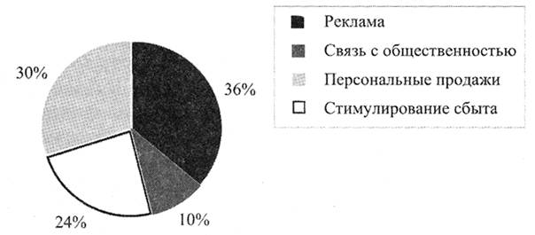
Рис. 31. Относительная важность отдельных элементов продвижения товаров
Продвижение товаров дает больший эффект, если все четыре элемента продвижения используются во взаимосвязи и взаимообусловленности. Только дополняя и обогащая друг друга, они принесут большую экономическую выгоду.
Цит. по: Основы маркетинга: учебник /
Р.К. Цахаев, Т.В. Муртузалиева, С.А. Алиев. —
М.: Издательство «Экзамен», 2005. — (Учебник для вузов). — С. 346-347
Тема 3. Основные направления исследований в организации маркетинговых коммуникаций
Основные направления исследований
Планирование исследований
Маркетинг не возник в тиши кабинетов, а появился в результате анализа практических действий специалистов организаций при продвижении товаров, продуктов, услуг к потребителям. Анализ этих действий и исследование результатов позволили систематизировать формы, методы и приемы, отделить эффективные действия от неэффективных, уточнить отдельные элементы методов и приемов, что, в конечном итоге, сформировало систему исследований потребительского и товарного рынков.
Характер и направление исследований зависят от состояния организации. Если она только начинает предпринимательскую деятельность или собирается ее менять, то ей предстоит выполнить полный цикл исследований по изучению товарного и потребительского рынков. Основная цель таких исследований — получение результатов, способных обеспечить ей успешное продвижение на потребительский рынок и достижение благосостояния за счет создания спроса и успешной продажи. Причем, проводимые компаниями исследования могут решать и стратегические, и тактические задачи.
К стратегическим задачам исследований можно отнести исследование потребительского рынка для выявления потребностей потребителей, чтобы в последующем предложить то, в чем они нуждаются. Например, в 60-х годах прошлого столетия один из предпринимателей, изучая увлечения молодежи, обнаружил примитивные устройства — деревянные дощечки установленные на подшипниках, которые они использовали для перемещения (катания). Он их усовершенствовал; запатентовал и выпустил в продажу. В этом случае для продвижения и представления нового вида товара не требуется значительной рекламной поддержки. Достаточно, уведомить часть потенциальных потребителей о том, что у вас есть то, что им нужно. Такая реклама носит уведомительный характер.
К таким же стратегическим задачам исследования можно отнести изучение товарного рынка для оценки того, что производится и поставляется, а также научно-технических достижений, чтобы создать на основе полученных результатов что-то новое, что может быть востребовано потребителями и, соответственно, продано. Кроме того, изучается потребительский рынок на наличие аналогичных или подобных предложений и потребностей у покупателей в предполагаемом объекте продажи. Как пример такой политики проведения исследований и разработки необходимого для потребителей объекта продажи можно привести работу по созданию мобильных телефонов. Компания изучила потребительский рынок и выявила потребность у потенциальных потребителей в системах мобильной связи. После этого исследовала товарный рынок и научно-технические достижения и на основе результатов разработала мобильные телефоны. При продвижении и представлении такого предложения даже при номинальной заинтересованности потребителя в мобильной связи, уведомительного характера представления предложения (рекламы) может быть недостаточно. В разрабатываемых коммуникациях производителю придется приводить параметры, характеристики и удобства пользования, для того чтобы привлечь внимание и стимулировать продажу. В обоих приведенных примерах основной задачей исследований является выявление, производство и представление потребителю того, что может быть продано. И эти исследования, как правило, проводят очень крупные компании и корпорации с достаточными финансовыми возможностями.
На потребительском рынке редко представляются абсолютно новые товары или категории товаров, обычно продаются уже знакомые или слегка модифицированные, то есть измененные по содержанию или только упаковке. В этом случае следует говорить о тактике исследований товарного и потребительского рынков. К основным исследованиям, позволяющим организации рассчитывать на успех, можно отнести следующие: исследование ассортимента и формирование ассортиментной политики; исследование цены и формирование ценовой политики; исследование качества и корректировка ассортимента; исследование мотивов и ценностей потребителей и формирования информационной политики (табл. 1).
Таблица 1
№ п/п
Действия — информация (факты)
Промежуточный результат
Конечный результат
1
Товарный рынок
Потребительский рынок
Перечень товаров
Спрос на них
Ассортимент
2
Товарный рынок
Потребительский рынок
Цены производителей
Покупательная способность
Ценовая политика
3
Товарный рынок
Потребительский рынок
Качество — соответствие нормативным документам
Качество — мнение потребителей
Корректировка ассортимента
4
Потребительский рынок
Мнение, оценка, мотивы, причины потребителей
Разработка коммуникаций
Формирование ассортимента проводится за счет результатов исследования товарного рынка; выявления того, что может быть предложено потребителю, и исследование спроса на этот товар у потребителей, то есть исследование потребительского рынка.
Формирование ценовой политики происходит на основе исследования цен на товарном рынке, а также анализа цен на товары представленные вниманию потребителям и возможностей разных групп потребителей их купить.
Корректировка ассортимента проводится в результате исследований товарного рынка и выявления соответствия или несоответствия товара нормативным документам (ГОСТам, ОСТам, сертификатам и т.д.) и исследования мнения потребителей о качестве товара.
Формирование информационной (рекламной) политики может быть обусловлено желанием производителя (продавца) навязать свое мнение потребителям — создать образ товара или фирмы и желание воспользоваться предложением или основываться на мотивах и ценностях потребителей (их реальности). Во втором случае необходимо проводить исследование (изучение) потребителей и формировать коммуникации на основе полученных результатов.
К вышеприведенным результатам исследований можно привести две формулировки продвижения, которые используют специалисты США:
Продвижение — это искусство найти или сделать то, что может быть продано.
Продвижение — это искусство представить товар так, чтобы добиться отклика от потребителей.
Такие исследования в той или иной степени могут проводиться любыми организациями, независимо от вида предпринимательской деятельности; структуры и численности.
На товарном и потребительском рынке достаточно редко можно встретить организацию, которая обладает монопольным правом на товар, продукт или услугу. В этом случае, производителю или продавцу не приходится проявлять значительной активности по информированию и стимулированию потребителей. Но, в основном, на потребительском рынке существует очень серьезная конкуренция во всех видах предпринимательской деятельности, которые представляют потребителям аналогичные, подобные и идентичные предложения. И, поэтому, к самым главным или основным задачам организаций и специалистов можно отнести формирование такой информационной (рекламной) политики, которая позволила бы производителям и продавцам выиграть в конкурентной борьбе за пристрастие и мнение потребителей.
Учитывая особую важность формирования и проведения эффективной информационной политики в достижении успеха компании в борьбе за потребителей, основная роль в представляемых материалах курса отводится методам, методикам исследования и изучения потребителей для формирования коммуникаций, способных вызвать отклик со стороны потребителей или создать спрос.
Характеристики рынка
Предложения
Предложения — это товары, продукты и услуги, которые производятся, формируются, оформляются и представляются производителем для удовлетворения потребностей потребителей.
Предложения могут формироваться в зависимости от состояния рынка и представляться с учетом особенностей потребителей, то есть основываться на национальных традициях, привычках, нравах или других чертах конкретного региона, страны или социальной группы. В этом случае они не нуждаются в значительных дополнительных усилиях по их представлению потребителям, так как они знакомы и желаемы, например традиционные молочные или колбасные изделия.
При представлении предложения, которое незнакомо местной аудитории потенциальных потребителей, производителям и продавцам необходимо доказать ценность и необходимость представляемого товара, продукта, услуги аудитории. Например, компании «Кока-Кола» в семидесятых годах прошлого столетия для представления напитка потребителям России (СССР, г. Москва) пришлось использовать определенные приемы, а именно предлагать напиток даром или за символическую цену. После создания желания воспользоваться данным напитком, компания переходит к ценовой политике соответствующей условиям рынка. При этом уровень, темп и характер общения с использованием разных мероприятий и коммуникаций должен позволять поддерживать внимание аудитории потребителей к предложению.
Потребность
Любой человек для удовлетворения своих жизненных потребностей — поддержания жизненных функций, а также достижения комфорта, расположения друзей, родных, близких, коллег или под воздействием других мотивов вынужден что-то приобретать (покупать). Причем решение что-то купить может основываться как на собственных мотивах и причинах, так и возникать под воздействием внешних факторов, например изменений в окружающей среде, мнения и советов коллег, рекламы.
Потребности можно условно разделить на три основных вида.
Естественная потребность — это случай, когда потребители выбирают и покупают, что-то конкретное для поддержания жизненных функций (пища, одежда, проживание и т.д.). В основном, приобретение чего-либо связано с состоянием покупателя (потребителя), а именно причиной и временем покупки, финансовым состоянием, влиянием близкого окружения, наличием профессионального и жизненного опыта и т.д. Кроме того, выбор, как правило, основывается на привычках, традициях, присущих данной категории потребителей или общества.
В этом случае производитель или продавец оказывает незначительное влияние на потребителей.
Отличают также потребность созданную и воссозданную.
Созданная потребность — это товары, продукты, услуги, которые не входили в перечень традиционных предложений на потребительском рынке, но под воздействием существенной рекламной поддержки завоевали внимание определенной категории потребителей. Например, йогурт, молочный продукт, который стал традиционным для многих московских семей.
Воссозданная потребность — это предложение, которое было желаемо для данной аудитории потребителей, региона, страны, но под воздействием разных экономических или политических причин и событий вышло из употребления. В таком случае, больших усилий по представлению этого предложения не потребуется, так как достаточно только напомнить потребителям о качестве, удобстве, выгоде, традициях и вернуть их интерес.
Вынужденная потребность — это случай, когда действия потребителей по приобретению чего-то конкретного из ряда аналогичных или подобных предложений могут носить принудительный или вынужденный характер, когда покупатель приобретает что-то, например лекарство по рецепту врача. Этим фактором очень часто пользуются производители и продавцы для увеличения объема продаж своих продуктов, причем таких, которые не пользуются спросом, так как ничем не превосходят аналогичные или подобные продукты, а зачастую уступают по основным свойствам и характеристикам.
Стимулированная потребность — это случай, когда потребитель выбирает что-то конкретное под воздействием эффективного общения со стороны производителя или продавца, включая разработку и представления коммуникаций. То есть потребитель, получая информацию о продвигаемом товаре, продукте или услуге, на основе представленных фактов целенаправленно и обдуманно выбирает из ряда аналогичных или подобных предложений что-то конкретное. Стимулированная потребность наиболее характерна для развитого потребительского рынка, где представлены многочисленные аналогичные или подобные предложения. Желание их владельцев привлечь внимание потребителя к своему предложению требует серьезного отношения к методам и приемам представления предложения потребителям и формированию коммуникаций. И чем выше конкуренция, тем эффективнее, интенсивнее и качественней должно быть общение между производителем или продавцом и потребителем.
Создание спроса
Поэтому, если покупатель-потребитель, позвонил и заказал или, придя в торговую организацию, из многочисленных аналогичных или подобных товаров, продуктов и услуг обдуманно и целенаправленно выбрал что-то конкретное, то производитель или продавец создали потребность в этом объекте продажи, то есть создали спрос .
Аналогично — если юридическое лицо из ряда аналогичных или подобных предложений, направленных в его адрес целенаправленно и обдуманно выбрало что-то конкретное, то производитель или продавец создали спрос.
Что такое создание спроса?
Таким образом, к созданию спроса в первую очередь следуют отнести все действия производителя или продавца, которые позволяют получить результаты для формирования коммуникаций, способных запасть в душу потребителей и вызвать отклик на предложение встретиться, договориться, купить.
В США специалисты используют следующую формулировку: «Маркетинг — это не битва товаров, а битва за их восприятие », которая целиком и полностью подтверждает приоритетность информационной политики для достижения результатов.
Цель и задачи маркетинга
Маркетинг — это исследования и использование результатов для повышения эффективности продвижения на потребительский рынок. Цель у маркетинга одна — удовлетворить потребность; создать спрос, то есть увеличить продажу и заработать деньги. А задач у маркетинга достаточно много, так как достижение цели может быть получено с использованием разнообразных методов и приемов исследования и изучения товарного и потребительского рынков.
При этом задачи ставятся всегда для достижения какой-либо конкретной цели. И если неправильно сформулировать цели и задачи маркетинга, то можно ничего не добиться или получить результаты, которые нельзя использовать в практической работе или их использование не будет иметь решающего значения для успешного продвижения на потребительский рынок.
К основным задачам маркетинга, по мнению специалистов США, можно отнести следующие:
тщательно и всесторонне изучить продукт;
разработать упаковку — рекламу;
продвигать на рынок, а именно представить его таким образом, чтобы добиться отклика.
В целом, это означает подготовку, представление и размещение товара таким образом, чтобы достичь максимальной реализации его потенциала и окупаемости.
Отклик — это ключевое слово, которое означает добиться положительного восприятия предложения у потребителя с желанием встретиться, договориться, купить.
На одном из мясокомбинатов в г. Челябинске возникла проблема со сбытом готовой продукции — колбасных изделий. Потребители в основном покупали колбасные изделия в золотистой упаковке, поставляемые из Дании, и в сетчатой упаковке, поставляемые из Германии. При этом импортные изделия были в три-четыре раза дороже колбас местного производства. Руководство комбината решило, что их продукция низкого качества и поэтому не пользуется спросом у потребителей. Они хотели менять технологию производства, что сопряжено со значительными финансовыми затратами.
Приглашенные из Москвы специалисты по маркетингу убедили руководство провести изучение мнения потребителей. Потребителям было предложено оценить качество колбасных изделий местного комбината и конкурентных продуктов из Дании и Германии, которые были представлены в виде кружочков колбасы без оболочек. Исследования на местах продаж показали, что большинство потребителей отметило прекрасные вкусовые качества колбасы местного производства.
Тогда руководителям комбината было предложено изменить упаковку, то есть сделать ее более привлекательной. После представления на рынке местных колбас в новой упаковке, потребители стали покупать в основном изделия местного изготовления, хотя по цене они приблизились к стоимости колбасных изделий зарубежного производства.
Цит. по: Маркетинговые исследования и коммуникации [Электронный ресурс]: учебный курс /
В. Е. Архипов. — Электронный курс. — М.: МИЭМП, 2008. —
Режим доступа к курсу: http://e-college.ru. — П. 1.1, 1.1
Тема 4. Основные недостатки коммуникации
Основной причиной некачественного общения с потребителями, в том числе с использованием коммуникаций является непонимание того, что может существовать различие во взглядах на предложение между производителем и потребителем. Мнение потребителя — это его личный взгляд на предложение, в котором присутствует оценка товара, а именно того, что он хочет или ожидает получить, а также проблем, которые его волнуют. Совпадение взглядов и оценок — это возможность потребителя понять и, соответственно, принять предложение производителя или продавца. Попытка производителя при формировании коммуникаций исходить только из своих взглядов и оценки предложения без учета мнения потребителя может закончиться весьма плачевно. Такая политика со стороны производителя по общению с потребителями может привести к непониманию, несогласию и отсутствию отклика со стороны покупателя, что влечет за собой снижение продаж.
Оценка производителя и потребителя
Производитель
Без досконального знания объекта продажи компания и персонал не может рассчитывать на успешную продажу. Поэтому производитель или продавец обладает своим взглядом на товар, продукт, услугу, которым он располагает. Его восприятие ценности и полезности предложения, будь то товар, продукт, услуга, в основном формируется под воздействием следующих факторов:
·Высокий профессиональный уровень подготовки в направлении, соответствующем или не соответствующем профилю деятельности организации (товар, продукт, услуга);
·Использование профессиональной литературы (учебная, специальная и т.д.) для повышения квалификации в области направления деятельности (товар, продукт, услуга);
·Повышение профессионального уровня в системе подготовки и переподготовки, в том числе в области профессиональной деятельности;
·Хорошие практические познания в отношении предлагаемого товара, продукта, услуги, а именно знание технических параметров и характеристики;
·Опыт работы в данной сфере деятельности на производстве или в торговле.
Из этого следует, что производитель или продавец это, как правило, профессионал, который пользуется своей лексикой и в основном оперирует фактами — техническими параметрами и характеристиками. При этом он имеет свое представление о полезности предложения для потребителей; из этого формирует приоритеты ценности своего предложения и представляет их вниманию аудитории при непосредственном общении и формировании коммуникаций.
Потребитель
Потребитель или покупатель — это часто дилетант во многих сферах, который обладает собственным языком и своим восприятием ценности предложений, которые представлены на рынке. В основном, его мнение и оценка (реальность) складывается из следующего:
·Изучения эксплутационных характеристик предлагаемого объекта продажи, а именно опыта пользования конкретным предложением,
·Сведений, почерпнутых из советов и комментариев коллег, родных, близких и знакомых,
·Сведений, полученных из популярных изданий,
·Сведений, почерпнутых из источников технической информации, например инструкций и описаний,
·Сведений, полученных на лекциях и семинарах сходной тематики.
Как следствие, у потребителя появляется собственное мнение и оценка представляемого объекта продажи; он формирует рейтинг и приоритет ценностей и пользуется своим языком для выражения и представления этих позиций при общении. Поэтому, как правило, технические характеристики и параметры ему незнакомы, они ему непонятны, они его утомляют и пугают.
Вышеуказанные отличия мешают потребителю правильно понять, воспринять, оценить предложение производителя и принять его, то есть откликнуться — купить.
Сближение позиций и ошибки
Необходимость продвигать и продавать товар, продукт или услугу, невзирая на наличие разных уровней восприятия предложения, заставляет владельца предложения проводить общение, в том числе с использованием коммуникаций. Формирование коммуникаций и общение с потребителями, в основном происходит по двум типам, а именно — на основе мнения производителя или на основе и с учетом мнения потребителей.
Сближение позиций
В первом случае, политика формирования общения и коммуникаций происходит на основе мнения производителя о своем товаре и представления о том, что он знает мотивы и ценности потребителя. Он при формировании общения и коммуникаций пользуется своим профессиональным языком; он определяет приоритет ценностей предложения для потребителей и т.д. В этом случае нельзя исключать того, что восприятие предложения потенциальным потребителем может быть другим, чем то, на которое рассчитывал продавец. Восприятие предложения может находиться в интервале от непонимания (текст — термины, выражения) или несогласия (представленные ценности, параметры, результаты) до негативного восприятия, что не может способствовать контактам и последующим продажам.
Самой опасная тенденция при таком подходе к общению, которую можно отметить у производителя, наличие необоснованной уверенности в том, что потребитель думает так же, как он. То есть производитель автоматически переносит свой уровень восприятия предложения на весь рынок или свой контингент потребителей. Например, основываясь на немногочисленных контактах с близким окружением, свой жизненный или профессиональный опыт, предприниматель может считать, что знает и изучил все требования и запросы потребителей.
В этом случае может быть два варианта подхода к формированию коммуникаций.
Первый из них — формирование маленьких по объему коммуникаций с надеждой, что хоть кто-нибудь откликнется, а именно равный по восприятию и подготовке.
И второй, который связан с формированием значительных по объему коммуникаций, например в виде статей, в которых достаточно подробно изложены параметры, характеризующие объект продажи: устройство, параметры, область применении и пользования; достигаемые результаты или решаемые проблемы и т.д. Цели такого общения — просвещение, обучение, перевоспитание потребителей, его конечной задачей является создание или изменение мнения потребителей о предложении. В результате воздействия коммуникации происходит изменение мнения потребителя и повышение восприятия предложения до уровня производителя, включая лексику, терминологию, паритет ценностей, выгоды и т.д. Только после этого может произойти контакт, а именно понимание, что будет способствовать общению и продаже (рис. 1).
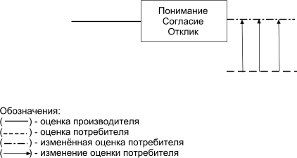
Рис. 1. Сближение оценок производителя и потребителя
Такие действия со стороны производителя или продавца могут носить достаточно длительный характер и иметь большую стоимость. Продолжительность воздействия связана с необходимостью создания или переоценки ценностей у потребителей, а финансовые затраты — с публикацией объемных материалов. Следует отметить, что данную схему достаточно часто можно встретить в источниках массовой информации, например еженедельнике «Аргументы и факты», где с использованием такого подхода представляются лекарственные препараты, приборы, средства диагностики и контроля.
Специалисты США для формирования и повышения воздействия на потребителей таких коммуникаций рекомендуют использовать принцип «БЫТЬ — ДЕЛАТЬ — ИМЕТЬ»…
В любом случае, как бы производитель или продавец не подходил к подготовке коммуникаций, а именно какую бы методику или принципы формирования коммуникаций он не использовал, реклама должна затрагивать основные проблемы, волнующие потребителя. Причем эти проблемы должны быть настолько ярко представлены, чтобы они не ускользнули от внимания потенциального потребителя. Кроме того, коммуникации должны быть написаны ясным и доступным языком и содержать элементы, которые вызывают чувство любопытства.
Во втором случае формирование коммуникаций основывается на результатах изучения потребителей. Производителям или продавцам не следует особенно полагаться на профессиональный или жизненный опыт или интуицию, потому что коммуникация или затронет потребителя, или пройдет мимо его внимания. Без всякого сомнения, можно предсказать реакцию потребителя, если в коммуникации он увидит то, что ожидает — свойства, результат, решение своих проблем. В таком случае можно рассчитывать на внимание, положительное восприятие и отклик. Причем, свое мнение о свойствах, результатах и проблемах он должен высказать сам. Только в этом случае информация будет иметь хорошую достоверность и может быть использована при формировании эффективных коммуникаций.
Изучить мотивы и ценности потребителей и получить достоверные результаты можно только на основе знания методов и методологии проведения опросов. В результате проделанной работы, коммуникации производителем или продавцом формируются на основе мнения и с учетом оценки потенциальных потребителей товара, продукта или услуги (рис. 2)
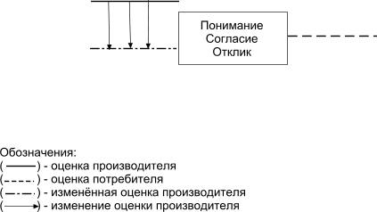
Рис. 2. Сближение оценок производителя и потребителя
При этом нужно принять во внимание, что представленный вариант подхода к формированию коммуникаций не предполагает потерю производителем или продавцом своих ценностей по отношению к предложению и переход на уровень реальности потребителя.
Такой подход может быть использован для привлечения внимания потенциальных потребителей только на начальной стадии работы, когда производитель или продавец еще не имеют непосредственного общения или потеряли контакты из-за невнимания к потребителям.
Производитель или продавец в большей степени, чем потребитель, знает свое предложение и его ценность — выгоды для потребителя. Но свои знания он может использовать только при непосредственном общении, когда стороны могут высказаться, обменяться мнениями и прийти к согласию по отношению к предложению. Чтобы войти в контакт, потребитель должен положительно воспринять коммуникацию и откликнуться на нее — позвонить, подъехать, прийти. Но ему легче откликнуться, если в информации он увидит то, что в настоящий момент считает для себя ценным, полезным, выгодным и т.д.
Кроме использования опросов, изучить мнение о предложении можно при непосредственном контакте производителя или продавца с покупателем (потребителем). Однако достаточно достоверные результаты получаются только при условии тщательного планирования мероприятий и фиксирования всех контактов для обработки и использования.
К местам и мероприятиям, где возможен непосредственный контакт производителя (продавца) и потенциального потребителя в первую очередь можно отнести:
·выставки;
·места продажи товара;
·отклик потребителя на общение (рекламу) — звонки, встречи,
·переговоры;
·презентации;
·семинары.
Если производитель или продавец принимает участие в выше приведенных мероприятиях или имеет контакты с потенциальными потребителями, то, невзирая на решение других задач, например, реализацию товаров, необходимо исследовать мнение и оценки потребителей. Систематизация полученных результатов позволит не только оптимизировать потребителей, ассортимент, перечень дополнительных услуг, но и проводить более эффективную информационную компанию, что приведет к увеличению количества клиентов.
Автор знаком с компаниями, которые перед началом активных действий по продвижению своих предложений на потребительский рынок, как первый этап работы с потенциальными потребителями устраивали бесплатные семинары. На проводимых мероприятиях выяснялись вопросы, важные для более эффективных последующих действий:
·мотивы, которые их могут подтолкнуть принять решение;
·свойства, которые им наиболее импонируют;
·результаты, которых они хотели бы добиться;
·проблемы, которые они хотели бы решить;
·что они знают или не знают о предложении;
·что им нравится или не нравится;
·каков оптимальный контингент потребителей (пол, возраст, характер или профиль деятельности);
·готовы ли они покупать объект продажи и на каких условиях;
·готовы ли они рекомендовать объект продажи и делиться информацией с окружением;
·какими линиями коммуникаций они пользуются для решения деловых проблем или когда отдыхают.
После получения и обработки результатов можно составить представление об оптимальном контингенте потребителей, узнать, как с ними связаться и то, что их заинтересовало в предложении, то есть мотивы и ценности, на основе которых можно подготовить эффективную коммуникацию.
Ошибки при общении
Этот тип общения, как правило, встречается при работе юридического лица с юридическим лицом, то есть производитель имеет высокий профессиональный уровень и предлагает что-то потребителю, имеющему аналогичный уровень. Например, продвижение на рынок станков для обработки металла, где производитель или продавец ведет общение с потенциальным потребителем в лице, например главного механика или главного инженера. При общении, а именно подготовке и передаче информации производитель опирается на технические характеристики и параметры предложения, а потребитель в лице, например, главного механика воспринимает только их.
В таком случае профессионал ведет общение с профессионалом, опирается на факты и находит понимание, поддержку и контакт (рис. 3). Во всех случаях — наличие понимания является неприемлемым условием для продолжения общения и, следовательно, получения отклика. Если это не так, то производителя или продавца ждет фиаско.
Рис. 3. Совпадение оценок производителя и потребителя
В этом случае производитель или продавец, даже не обладая хорошей подготовкой в области формирования коммуникаций, может рассчитывать на хорошие результаты в деловых контактах, так как проводит свою информационную политику, опираясь на факты. К основным ошибкам при подготовке и формировании коммуникаций производителем или продавцом, которые существенно могут повлиять на характер восприятия предложения потребителями можно отнести следующие:
·представление расширенного ассортимента;
·представление расширенной информации, характеризующей объект продажи — факты;
·отсутствие фактов важных для потребителя;
·язык общения, который не совсем понятен потребителю.
Представление расширенного ассортимента
Производитель или продавец, располагая значительным ассортиментом в 50, 100, 500 и т.д. наименований (товар, продукт, услуга), формирует коммуникацию с включением всех позиций. С практической точки зрения и поставщик, и потребитель стремятся работать с организациями, которые могут поставить максимальное количество нужных им наименований объектов продажи. Такой характер деловых контактов облегчает взаиморасчеты, например финансовые; снижает расходы на доставку и транспортировку и, самое главное контроль над партнерскими отношениями. Но приведенный вариант формирования и представления коммуникаций, не учитывает сложившийся характер отношений, который характеризует развитой товарный и потребительский рынки. Во-первых, аналогичные или подобные предложения предлагают многие организации, а во-вторых, большинство потребителей уже имеют налаженные контакты с поставщиками и без веских причин не желают прерывать налаженные контакты и связи.
Специалисты и руководители, которые получают такие рекламные предложения, не имеют времени, возможности и веских аргументов рассматривать весь приведенный перечень, который им, в основном знаком. К тому же, из-за значительного количества наименований коммуникацию тяжело красиво и привлекательно оформить, что также ухудшает ее восприятие и готовность рассмотреть. При обладании значительным ассортиментом и желании расширить рынок потребителей при формировании необходимо помнить, что реклама — это не продажа. Задача рекламы (коммуникации) — привлечь внимание, создать интерес и вызвать отклик со стороны потенциального потребителя. А когда этот интерес проявится, продавать и предлагать надо все Поэтому, при подготовке коммуникаций следует в нее включить минимальное количество позиций, которые вызовут интерес у потребителей и качественно оформить представляемую на рассмотрение информацию.
Действия организации по продвижению и представлению расширенного ассортимента даже получили у специалистов название — лихорадочный маркетинг.
Автор, помогая производителю металлической фурнитуры, который пытался расширить рынок потребителей за счет представления информации в виде прайс-листов на 100–150 наименований, провел опросы потенциальных потребителей и выявил 5 наименований, которые представляли для них интерес, так как влияли на качество конечного продукта. Полученную информацию использовали в новом коммерческом предложении, включавшим эти 5 наименований продукции, и через два месяца у производителя фурнитуры прибавилось дополнительно 35 организаций-потребителей. Причем впоследствии они стали покупать и другие наименования продукции.
В этом примере при подготовке и проведении исследования использовались разработанные опросные листы, которые направлялись после предварительного согласования в адрес руководителей служб снабжения по факсу. Контроль осуществлялся на стадии получения опросных листов, напоминания о необходимости заполнения опросных листов (ответы на вопросы) и отправления опросных листов. При таком подходе к проведению исследования, а именно — согласования получения материалов (опросные листы), контроля за получением информации, и отправкой заполненных опросных листов возврат материалов составил около 40%.
Расширенное представление фактов
Производитель или продавец, исследуя свой продукт (технические характеристики и параметры, эксплуатационные возможности и удобства) выявил 20, 30 или более позиций, которые ему кажутся очень важными, и представил их на рассмотрение потенциальному потребителю в виде коммуникации, например делового или коммерческого предложения. В этом случае производитель или продавец считает, что у потенциального потребителя масса свободного времени, чтобы самостоятельно разобраться в представленной информации и выбрать то, что ему важно. Однако потребитель по разным причинам не склонен к чтению объемных материалов, чтобы среди многих найти параметры, которые действительно его интересуют, особенно если они плохо оформлены и представлены. Как и в предыдущем случае, при насыщенности рынка аналогичными или подобными предложениями, в любую организацию приходят десятки предложений и привлечь внимание потенциального потребителя можно, только если выделить и представить что-то очень важное для него.
Конкурент, продвигающий аналогичное предложение с тем же количеством параметров, заранее выделит и представит только те, что наиболее важны для потребителя и выиграет в борьбе за конкурента не за счет качества товара, продукта, услуги, а за счет качества и уровня общения. Естественно, что для этого необходимо знать уровень восприятия потребителем ценностей предложения, а для этого провести опросы для выяснения мотивов, причин и свойств товара, которые наиболее импонируют потребителю.
Выше приведенная организация, специализирующаяся на выпуске металлической фурнитуры, имела ассортимент товарной продукции в несколько сот наименований. При этом техническое руководство имело собственное мнение о ценности или приоритетности тех или иных параметров изготовления ассортимента — дизайн, технология покрытия и изготовления, обработка и т. д. Первые опросы определили оптимальные позиции ассортимента, а потом был проведен опрос для выявления наиболее важных для потребителей параметров, характеризующих, по их мнению, качество товара. Исследование проводилось по телефону в соответствии с разработанным списком вопросов. После проведения опросов и обработки результатов они были представлены в коммерческом предложении выделенной позицией, что повысило привлекательность коммуникации.
Отсутствие необходимых фактов
Этот случай формирования коммуникаций близок к тому, что приведен выше. Производитель или продавец, исследуя продукт — свойства, характеристики и параметры, которые характеризуют товар; эксплуатационные преимущества и проблемы, которые способен решить товар для потребителей, выявили, например 25 позиций. Из этих позиций они выбрали 5 или 7, которые им показались наиболее привлекательными и представили их вниманию потенциального потребителя с использованием коммуникации. Потребителю, наоборот, представленные факты показались неинтересными или малозначительными, а вот на другие, которые не были включены в коммуникацию, он бы откликнулся. И продавец или производитель, который провел общение на уровне, не учитывающем реальность потребителя, проиграл в конкурентной борьбе при равенстве предложений (товар, продукт, услуга).
Использование непонятных терминов и выражений
Такая ошибка происходит, когда производитель или продавец не представляет уровня подготовки потенциального потребителя или по каким-либо причинам не хочет учитывать эти факторы. Например, он хочет чем-то поразить аудиторию потенциальных потребителей и использует при формировании коммуникаций слова, термины, выражения, которые максимально эффективно характеризуют предложение, профессионализм фирмы и персонала. В этом случае не учитывается довольно очевидный факт, который характерен для большинства людей. Если человек встречается с чем-то непонятным, незнакомым, то он испытывает настороженность, и в отдельных случаях страх. Когда потребитель получает коммуникацию, в которой ему что-то непонятно, а принятие решения сопряжено с последующей административной или финансовой ответственностью, то он отдаст предпочтение другой фирме, которая представила доступную коммуникацию. Возможно, у выбранного партнера или исполнителя нет специалистов высокого уровня, но это выяснится потом. На этапе рассмотрения и принятия решения потребитель выберет то, что ему понятно и знакомо.
Например, фирма, специализирующаяся на переводе сложной технической и деловой документации продвигала свои услуги на рынок с помощью сайта, рекламного буклета и листовок на основе использования сложной технической лексики. У фирмы, начавшей свою деятельность в середине 80-х годов прошлого столетия, был опыт делового общения и продажи своих услуг многим крупным компаниям, например из Японии, в 90-е годы она имела хорошие объемы продаж своих услуг. То есть при низкой конкуренции на рынке предложений и с не совсем качественной информацией можно рассчитывать на успех. В последнее же время отклик от потенциальных потребителей значительно снизился, хотя объем общения сохранялся на прежнем уровне.
Генеральный директор и основная часть коллектива были высокими профессионалами в своей области, они регулярно проходили обучение и стажировку в ведущей переводческой фирме США и формировали рекламные предложения (коммуникации) с использованием сложных понятий, то есть на уровне, не доступном потребителю. А потребитель, например, в лице начальника департамента внешних сношений компании, как правило, имеет подготовку по иностранному языку в объеме программы института или курсов повышения квалификации. И для него сложная и современная техника переводов не доступна.
Непонимание вызывает осторожность (страх), которая не стимулируют к контактам (продажам). После корректировки всех видов коммуникаций, отклик на предложение стал интенсивней, что привело к продаже услуг в большом объеме и необходимости найма дополнительного персонала.
Фирмы по оказанию рекламных услуг
Производитель или продавец при подготовке и формировании коммуникаций может воспользоваться услугами рекламных компаний. В таком случае он может потерпеть неудачу при общении с потенциальными потребителями по следующим основным причинам, а именно — неиспользование фактов и отсутствие профессионалов.
Неиспользование фактов
Специалисты рекламной компании могут плохо знать объект продажи и готовить рекламный материал только по представленной фотографии или устному описанию. По результатам исследований, около 70% респондентов высказывает негативное мнение по отношению к рекламным продуктам, которые, например, демонстрируются на каналах телевещания. Но в то же время они говорят о своем желании иметь информацию о предложениях, которые представляются на рынке, то есть хотят знать факты, характеризующие товар.
Такая реакция потенциальных потребителей на рекламу говорит о том, что при подготовке и представлении товара или услуги рекламная компания не представляет факты, которые характеризуют предложение. Не зная объект досконально, специалисты рекламной компании вынуждены выдумывать и зачастую непроизвольно обманывают потребителей. Но так как они владеют знаниями эффективного общения и формирования коммуникаций, то, по крайней мере, их реклама не раздражает потребителей. Как правило, реакция потенциального потребителя на такую коммуникацию сводится к следующему: «Я не понимаю, что они хотели сказать и предложить». В этом случае трудно рассчитывать на положительный отклик.
Данная ситуация вполне объяснима — любой человек, если его вынуждают обстоятельства, например производственная необходимость или другая ситуация рассказать что-то, о чем он не имеет представления, вынужден фантазировать. Для болтовни это хорошая основа, но потребители нуждаются в фактах, особенно если общение касается продвижения предложения. Поэтому потребители смотрят рекламу, но из-за отсутствия фактов нужных потребителям ее эффективность достаточно низкая. Это наиболее частый вид рекламной продукции, которая, например, демонстрируется на каналах телевещания.
Низкий уровень профессионализма
Специалисты рекламной компания не только не знают объекта продажи, а именно фактов, характеризующих предложение, но и не владеют знанием основ эффективного общения с потребителями.
В этом случае результат будет отрицательным: от невосприятия предложения до раздражения, а именно желания уйти — прекратить общение до гнева.
Коммуникацию основывают и представляют в виде бурной фантазии по отношению к объекту продажи, представленной в форме, не доступной восприятию нормального потребителя, которая может не учитывать традиции, нравы и обычаи данного сословия или региона.
Например, на каналах телевещания демонстрировался рекламный блок с предложениями услуг в сфере страхования от достаточно известной компании «Росгосстрах». В представленном сюжете персонаж бросает вверх бутерброд, а именно хлеб с маслом, который по сюжету многократно падает на пол. Текст рекламного блока достаточно невразумительный и сводится к следующему: «Бутерброд случайно падает маслом вниз, а у Госстраха нет ничего случайного». Что извлечет из этой информации потенциальный потребитель, можно только догадываться. Факты, характеризующие предложение, отсутствуют.
Опросы потребителей показали, что после просмотра сюжета рекламного ролика они испытывают острые негативные чувства. Причем большинство из них даже не осознают причин. Только после наводящего вопроса, не связано ли это с тем, что так поступают с хлебом, они отвечают утвердительно. Вопросы задавались в такой последовательности:
«Видели ли вы рекламный сюжет? Какую реакцию и чувства вы испытали после просмотра?»
От другого сюжета рекламного ролика, демонстрируемого на каналах телевещания, где представлялся автомобиль марки «Рено», люди испытывали в основном чувство страха. Содержание рекламы можно характеризовать как буйную фантазию, не отличающуюся вразумительностью, но потребители точно указывали отдельные элементы рекламного ролика, которые вызывали чувство страха.
Без сомнения, гнев, раздражение и особенно страх не могут подтолкнуть к положительному восприятию информации и отклику.
Цит. по: Маркетинговые исследования и коммуникации [Электронный ресурс]: учебный курс /
В. Е. Архипов. — Электронный курс. — М.: МИЭМП, 2008. —
Режим доступа к курсу: http://e-college.ru. -П. 1.2
МОДУЛЬ 2. МАРКЕТИНГОВЫЕ КОММУНИКАЦИИ КАК СПОСОБ ПРОДВИЖЕНИЯ НА ПОТРЕБИТЕЛЬСКИЙ РЫНОК
Тема 1. Понятие продвижения товара.средства продвижения
Продвижение как процесс маркетинговых коммуникаций.
Понятие продвижения товара, общая задача
Комплекс маркетинговых коммуникаций неразрывно связан с маркетинговой деятельностью, и поэтому основная задача коммуникативного комплекса — продвижение товара на рынок.
Продвижение ( promotion ) — это любая форма сообщений, используемых предприятием для информации, убеждения или напоминания людям о своих товарах, услугах, образах, идеях или о самом предприятии с целью активизации продажи и формирования положительного образа предприятия на рынке.
Предприятие может передавать нужные ему сообщения через упаковку, фирменное название, витрины магазинов, выставки, лотереи, средства массовой информации и др.
О новой продукции и ее характеристиках потребителей нужно проинформировать , пока у них еще нет какого-либо отношения к ней. Для товаров, о которых потребителям хорошо известно, главное в продвижении — убеждение . Для прочно утвердившейся продукции упор делается на напоминание — укрепление существующего отношения потребителей.
Усилия предприятия по продвижению обращают кконкретным группам потребителей, так как каждая изних имеет четкие цели, знания и потребности. Приведем некоторые из важных функций, выполняемых продвижением.
Продвижение:
• создает образ престижности, низких цен или инновационности для компании, ее продукции и услуг;
• информирует опараметрах товаров и услуг;
• порождает узнавание новых товаров и услуг;
• сохраняет популярность существующих товаров и услуг;
• может изменять образы или использование теряющих свои позиции товаров и услуг;
• создает энтузиазм среди участников каналов сбыта;
• объясняет, где могут приобретаться товары иуслуги;
• убеждает потребителей переходить от одних товаров и услуг к более дорогим;
• информирует потребителей о распродажах;
• обосновывает цены товаров и услуг;
• отвечает на вопросы потребителей;
• завершает сделки;
• обеспечивает послепродажное обслуживание для потребителей;
• создает благоприятную информацию окомпании, ее товарах и услугах относительно конкурентов.
Средства продвижения
Существует два основных и два дополнительных средства продвижения, составляющих комплекс маркетинговых коммуникаций. К основным средствам продвижения относятся реклама и личная продажа, а к дополнительным — паблик рилейшнз (связи с общественностью) и стимулирование сбыта (табл. 13.1).
Если организация предполагает выпустить новый товар или освоить направление предпринимательской деятельности, то для этого необходимо изучить товарный рынок и потребителей. При этом для принятия окончательного решения целесообразно руководствоваться не только найденными фактами, но и тенденциями, которые характеризуют развитие, например потребительского рынка. К методам, которые наиболее часто используются при проведении изучения потребительского и товарного рынков можно отнести — изучение печатных источников информации; посещение выставок и научно-технических конференций; изучение эффективности работы конкретных организаций и направлений предпринимательской деятельности; изучение мнения потребителей. Этот этап работы организаций и персонала может быть назван предварительным, но очень важным, так как на основе результатов выбирается то, что может быть продано.
Изучение печатных источников информации
Можно провести кабинетные исследования по изучению материалов, опубликованных в средствах массовой информации, например еженедельнике АИФ и выявить следующие факты, которые характеризуют современное состояние розничной продажи товаров в разных странах с использованием автоматов:
·Япония — 23,5 автомата на 1000 жителей:
·Америка — 17,8 автомата на 1000 жителей;
·Германия — 7,9 автомата на 1000 жителей;
·Россия — 0,02 автомата на 1000 жителей.
Можно предположить, что Россия, выбрав путь рыночной экономики, в какой-то степени, будет использовать, и развивать подобные или аналогичные формы работы торговых компаний с потребителями.
При продаже таких товаров-продуктов, как жевательная резинка, напитки, шоколад, кофе и т. д., прибыль может достигать 600 долларов в месяц на один автомат. А, например, автомат производства фирмы «Занусси» стоит 5000 долларов. То есть, срок окупаемости вложений не превышает одного года, что очень рентабельно для современного рынка.
Исходя из полученной информации, которая характеризует тенденции развития торговли, можно с большой степенью вероятности предположить, что использование автоматов для продажи, например напитков в России будут повышаться. То есть их удельный вес с 0,02 на 1000 жителей может возрасти, хотя бы до 2 автоматов на 100 жителей и увеличиться в 100 раз. Причем, автоматы подобного рода можно производить и продавать, а также поставлять их в аренду торгующим организациям или фирмам, готовых их эксплуатировать.
К достоинствам такого метода изучения можно отнести возможность не только найти факты, но и оценить перспективы выбираемой сферы предпринимательской или объекта продажи.
Недостатком приведенного метода изучения можно считать необходимость проведения дополнительного изучения потребителей, так как во многом восприятие определенных методов и форм торговли определенным сословием и обществом в целом не одинаково для разных стран и народов.
Поэтому результаты требуют более конкретного изучения на местном потребительском рынке, а именно:
· готова ли существующая торгово-розничная сеть или другие организации разместить автоматы для продажи потребителям ассортимента?;
· на каких условиях торговые или другие организации готовы разместить поставляемое оборудование?;
· какие меры безопасности по сохранности оборудования надо предпринять?;
· какой ассортимент существующих товаров, продуктов и напитков может быть продан при использовании этого оборудования?;
· и, самое главное, выяснить, сколько потребителей покупают или предпочтут покупать определенную категорию продуктов, таким образом.
Посещение выставок и научно-технических достижений
Без всякого сомнения, что наиболее перспективные направления предпринимательской деятельности или объекты продажи можно выявить при исследовании научно-технических достижений. Изучение представленных фактов или готовых изделий-технологий можно провести кабинетным методом при обзоре печатных материалов в специализированных изданиях или на сайте в Интернете. Кроме того, можно провести изучение проблемы, присутствуя на научно-технических конференциях или посещая выставки. Эти исследования целесообразно отнести к полевым методам изучения интересующей проблемы.
К несомненному достоинству выбора этого направления изучения можно отнести то, что результаты позволяют выявить область деятельности или объект продажи, которые будут иметь эксклюзивный и приоритетный характер.
Недостатком может быть то, что представленный образец или идея будут иметь незаконченный характер или потребуют значительных средств на доработку и постановку на производство. Кроме того, новинка может потребовать больших затрат при продвижении на рынок к потребителям, особенно, если ее не с чем сравнить для лучшего восприятия предложения.
Изучение эффективности работы конкретных организаций
Для решения задачи выбора предпринимательской деятельности и объекта продажи, наиболее часто применяется метод изучения состояния организаций, в котором могут быть использованы кабинетный и полевые исследования.
В качестве мест и источников информации могут быть использованы — семинары, симпозиумы, собрания, которые проводятся официальными организациями, например союзом предпринимателей; средства массовой информации или официальные издания, где публикуются отчеты о деятельности организаций, а также непосредственное исследование организаций с использованием любых форм и методов общения с персоналом. В качестве результатов проведенных исследований могут быть представлены сведения, с учетом мнения персонала о спросе на объект продажи у потребителей и доходы организаций.
Такой метод достаточно эффективен и может в отдельных случаях привести к перспективному направлению предпринимательской деятельности. Но самое главное, позволит выявить объект продажи, который пользуется повышенным спросом у потребителей данной местности и региона.
Основным достоинством этого направления исследований можно считать, что выбранный товар, продукт, услугу, пользуется спросом и позволит в короткое время добиться успеха.
К недостаткам полученных результатов можно отнести то, что полученная информация может иметь большую степень недостоверности, так как организации или конкретные предприниматели либо преувеличивают свои достижения для получения положительного имиджа, либо неправильно трактуют свои результаты, например, кратковременную удачу за счет обмана потребителей или других действий аналогичного характера.
Изучение мнения потенциальных потребителей
В любом регионе или любой местности можно провести опросы потребителей, где одним из основных или главных вопросов должен быть: «На что вы больше всего расходуете средства?».
Ответы и результаты будут отражать ситуацию, которая сложилась на местном рынке и учитывает состояние общества и потребителей, а именно нравы, традиции, обычаи, уровень благосостояния и т.д.
Как правило, на первом этапе опросов ответы характеризуют какую-то сферу жизни, например, питание, одежда или здоровье и в меньшей степени — конкретное наименование объекта продажи. Выявив сферу, которая по каким-либо причинам привлекает внимание потребителей, опросы следует продолжать, конкретизируя результаты, полученные на первом этапе.
Например, категория здоровье, может включать следующие более конкретные позиции:
·лекарственные препараты,
·приборы контроля за состоянием здоровья,
·приборы позволяющие улучшать состояние здоровья,
·услуги спорт и фитнес-клубов и т.д.
Составляется перечень направлений, характерных для местных условий и продолжается опрос на основе вопроса: «На что вы больше всего тратите средства». Результаты позволят определить наиболее перспективный вид предпринимательской деятельности.
Последующие действия по опросу потребителей позволят определить и уточнить конкретные товары, продукты или услуги, на которые потребитель тратит основные средства. Результаты этого исследования позволят выявить реально сложившуюся ситуацию на рынке и вложить средства в организацию предпринимательской деятельности, которая принесет доход.
При этом надо учитывать возможное повышение уровня благосостояния жителей данного региона и изучение мнения потребителей проводить с помощью вопроса: «На что вы готовы в первую очередь потратить деньги, если они будут у вас в достаточном количестве?». В этом случае можно планировать перспективные направления деятельности и объекты продажи.
После проделанной работы можно выявить несколько равноценных направлений предпринимательской деятельности. Для принятия окончательного решения, необходимо сделать следующее:
· исследовать конкуренцию со стороны производителей и продавцов, то есть оценить насыщенность потребительского рынка аналогичными или подобными предложениями и объем рынка сбыта-продаж;
· оценить необходимые финансовые затраты для реализации проекта, а именно средства на приобретение оборудования, снятие помещения и т. д.;
· предусмотреть средства на информационную политику (рекламу) по представлению объекта потенциальным потребителям;
· оценить необходимость и возможность создания собственной сети продвижения и продажи объекта продажи потребителям;
· оценить существующую сеть продажи аналогичных или подобных объектов продажи и ее возможности по реализации, иначе говоря, узнать на каких условиях она готова принять и представлять объект продажи потребителям;
· рассмотреть и оценить расположение сети реализации и потенциальных потребителей;
· оценить наличие и необходимость персонала, который имеет высокий профессиональный уровень для реализации проекта.
Кроме того, чтобы работа была успешной, надо ответить на следующие вопросы:
1) Что является вашим продуктом;
2) Сколько он стоит? Сколько за него готов заплатить потребитель? Это конкурентоспособная цена?;
3) Кто составляет вашу клиентуру?;
4) Каково позиционирование товара?
5) Какие возможности продвижения продукта на рынок?
6) Как представить продукт покупателям?
7) Как продавать продукт?
8) Как Вы будете в дальнейшем отслеживать эффективность продвижения?
Цит. по: Маркетинговые исследования и коммуникации [Электронный ресурс]: учебный курс /
В. Е. Архипов. — Электронный курс. — М.: МИЭМП, 2008. —
Режим доступа к курсу: http://e-college.ru. -П. 6.1
Тема 3. Планирование продвижения
Наличие определенных свойств у объекта продажи, сфера его использования или потребления, а также тип потребителей может существенно сказываться на схеме его продвижения или представления, а, следовательно, темпе продвижения к потребителям. Любой товар, продукт или услуга может иметь в качестве конечного основного потребителя юридическое лицо, а может быть предложен только физическому лицу. Большинство объектов продажи могут быть предложены как физическим, так и юридическим лицам, поэтому важно правильно определить конечных потребителей. В зависимости от этого планируются действия по представлению объекта продажи, действия можно условно назвать активными и пассивными. Цель данного этапа — сформировать и сформулировать основные принципы продвижения и представления объекта продажи потребителям, включая продажу, то есть его распределение.
Активный характер действий
Активные действия связаны с тем, что, в основном, продвижение объекта продажи к потребителям связано с непосредственной работой персонала организации при непосредственном общении с потенциальными потребителями. Как правило, такой характер продвижения, и представления объекта продажи потребителям относится к товарам, продуктам или услугам, в которых нуждаются юридические лица.
К основным действиям по продвижению объекта продажи можно отнести:
1. изучение объект продажи;
2. оценка оптимальных потребителей, исходя из основных свойств объекта продажи; его назначения и проблем, которые они для потребителей решают;
3. формирование коммуникаций в виде деловых и коммерческих предложений, а также статей и буклетов;
4. предварительные контакты с потенциальными потребителями, например по телефону, и согласование отправления коммуникаций по конкретному адресу — должность, подразделение;
5. корректировка потребителей, коммуникаций, в соответствии с результатами предварительного обсуждения предложения на предварительной стадии, например по телефону;
9. изучение и анализ результатов общения с потребителями, включая переговоры;
10. корректировка ассортимента и коммуникаций, а также потребителей;
11. продолжение действий.
Как видно из приведенного перечня, основные действия, связаны с непосредственной работой персонала организации и контактами с потенциальными потребителями. То есть, темп продвижения и продажи зависит от качества и активности работы персонала. Кроме того, непосредственное общение с потребителями позволяет оценить, с чем они согласны или не согласны по отношению к продвигаемому объекту продажи, что позволяет быстро откорректировать банк на потенциальных потребителей, а также ассортимент и условия поставок и продаж. При таком характере действий по продвижению на потребительский рынок, организация имеет возможность за счет контроля за действиями персонала планировать объемы поставок и продаж.
Кроме выше приведенных действий, организация за счет размещения коммуникации в средствах массовой информации может получить отклик и оптимизировать или расширить сектор потребления объекта продажи, а затем перейти к конкретным действиям персонала по информированию потребителей.
Пассивный характер действий
В этом случае, производитель представляет свой объект продажи потребителям через посредников, включая торгово-розничную сеть. То есть, у него нет контактов и общения с конечным потребителем, и соответственно он не может проводить активную политику по корректировке ассортимента и качества, а также условий поставок и продаж. В лучшем случае, для более эффективного продвижения продажи производитель может оказать рекламную поддержку, размещая коммуникации в средствах массовой информации или в местах продаж, поэтому для увеличения объема продаж необходимо проводить изучение мнения потребителей. Кроме того, повысить эффективность продвижения объекта продажи потребителям можно за счет разработки банка данных на организации, которые представляются на потребительском рынке аналогичные или идентичные товары, продукты или услуги. Например, производитель одежды для детей и молодежи проводил свою политику представления товаров для потребителей, имея три собственные секции — прилавки в торговых организациях. Но в основном он занимался тем, что каждый день загружал автолавку ассортиментом, выезжал в разные места города и торговал. Следует отметить, что качество товаров было достаточно высоким. Материалы, цвета и фасоны ни в чем не уступали качеству товаров других производителей, включая импортные изделия. Однако объем продаж, невзирая на усилия по разработке современного удовлетворяющего вкусам потребителей ассортимента, не возрастал. Разработка банка данных на конкурентные организации и представление образцов одежды помогло широко представить ассортимент потребителям, вследствие чего объем продаж резко возрос.
Если объект продажи позволяет использовать оба характера продвижения, то необходимо проводить и активные действия, и пассивные методы продвижения.
Например, постельное белье можно поставить в специализированные магазины или отделы, а внимание потребителей привлечь за счет коммуникаций в местах продаж. Но кроме этого, можно предложить постельное белье непосредственно конечным потребителям, например гостиницам и соответственно проводить активную политику представления объекта продажи. Неочевидно, где объем продаж постельного белья окажется выше, так как в гостиницах, кемпингах и т.д. конкуренция может быть ниже, а объем потребления значительный.
Объем исследований
Конечный продукт. Некоторые товары, продукты или услуги, имеют законченный цикл производства и готовы для использования потребителями, например холодильник. Конечные или завершенные объекты продажи представляются конечным потребителям непосредственно или через посредников, например в торгово-розничной сети. В таком случае, действия организации по исследованию товарного и потребительского рынков, а также потребителей сводятся к формированию и корректировке ассортимента, выработке ценовой политики, а также изучению мнения потребителей (рис. 13).
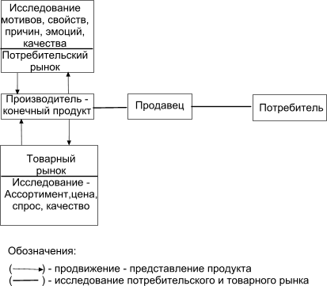
Рис. 13. Исследования для конечного продукта
Промежуточный продукт. Многие объекты продажи испытывают циклом переработки для того, чтобы быть представлены конечному потребителю в качестве конечного продукта. Например, к таким товарам можно отнести металл для производства автомобилей или холодильников. В таком случае производителям промежуточных продуктов недостаточно исследовать ценовую и ассортиментную политику производителей аналогичных или подобных предложений.
Для планирования объемов, особенно на перспективу развития производства, необходимо исследовать изменение спроса на продукцию конечного производителя (рис.14). Спад продаж или повышение спроса на конечный объект продажи может повлиять на политику производителя промежуточного продукта. Результаты таких исследований позволят во время скорректировать ассортимент или ценовую политику и, следовательно, выиграть в борьбе с конкурентами при снижении спроса.
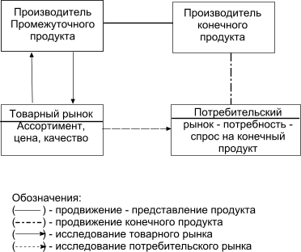
Рис. 14. Исследования для промежуточных продуктов
Цит. по: Маркетинговые исследования и коммуникации [Электронный ресурс]: учебный курс /
В. Е. Архипов. — Электронный курс. — М.: МИЭМП, 2008. —
Режим доступа к курсу: http://e-college.ru. -П. 6.2
Тема 4. Управление продвижением
Для эффективного продвижения объекта продажи на потребительский рынок очень важно определить и контролировать основные функции, которые способствуют достижению благополучия за счет стабильных продаж.
Особенно, важно управлять продвижением при наличии конкуренции, когда многие фирмы располагают аналогичным или подобным товаром. В этом случае организации необходимо не только более эффективно работать с потребителями и, самое главное, убедить его в том, что, именно, их товар, продукт, услуга так необходим потребителю, но и создать условия для долговременного сотрудничества.
Следует отметить, что для успешного продвижения товаров, продуктов или услуг к потребителям, во многих случаях, на достижение эффективных результатов может в большей степени оказать влияние качественная работа персонала, и в меньшей степени коммуникации.
Для более эффективного управления действиями персонала при продвижении объекта продажи на потребительский рынок специалисты США ввели понятие — организующая структура, которая определяет и контролирует основные функции организации (рис. 15). К основным элементам организующей структуры относятся следующие блоки: Исполнительный директор; Директор по связям с общественностью и Директор по продажам.
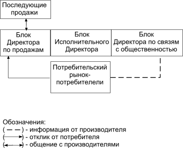
Рис. 15. Организующая структура
Организующая структура это функциональная схема работы любой организации, где определены и распределены основные функции по направлениям — ОБЪЕКТ ПРОДАЖИ — ОБЩЕНИЕ (коммуникации) — ПРОДАЖА. Причем эти функции, а точнее, результаты действий персонала, которые выполняются в соответствии с этими функциями, ставятся на статистический контроль за их количеством и качеством.
В любой компании функции персонала значительно шире, чем приведенные и рассмотренные ниже. Но функции, которые исследуются в данном разделе, являются основными, так как влияют на темп продвижения и, соответственно на благосостояние и стабильность организации.
Блок Исполнительного директора
К основной задаче этого блока относится обеспечение организации объектом продажи в требуемом количестве с качеством, необходимом для эффективной работы на потребительском рынке. Без товара, продукта, услуги все действия организации по информированию потребителей с целью продать что-то следует трактовать как обман.
К основным функциям этого блока, которые контролируются высшим руководством, относятся:
·контроль за ассортиментом;
·контроль за качеством ассортимента;
·контроль за ценовой политикой;
·контроль за финансами, а именно — учет прихода и расхода;
·контроль за распределением финансов, а именно — планирование прихода и расходов;
·контроль за распределением объекта продажи.
Короткая характеристика функций
Первая функция — контроль за ассортиментом.
Это наиболее важная функция для любой организации и она делится на две основные позиции, а именно контроль за наличием объекта продажи и изучение потребительского и товарного рынков для выбора товара, продукта или услуги, которые могут расширить и улучшить ассортимент. Значение этих позиций для любой организации заключается в следующем:
· отсутствие в наличии объекта продажи и не вовремя осуществленная поставка может сказаться на снижении объема продаж и вытеснении его из торгово-розничной сети аналогичными или подобными товарами конкурентов;
· постоянная работа с одним ассортиментом и отсутствие товаров, которые пользуются спросом на потребительском рынке, может негативно отразиться на благосостоянии компании и потере положительного восприятия у потребителей. Для исследования спроса проводятся действия по изучению темпа и объема продаж конкретных товаров, продуктов или услуг.
Исследование спроса может проводиться только в местах, где объект продажи переходит из рук владельца-продавца в руки потребителя-покупателя. То есть, в этом случае, передача — продажа товара фиксируется каким-либо документом и спрос исследуется на основе анализа документов, например товарных или кассовых чеков.
Изучение спроса на основе анализа документов очень точный и быстрый способ оценки продажи и спроса.
К основному достоинству этого метода можно отнести то, что данный способ позволяет исследовать и оценить влияние различных факторов на продажу, а именно:
·зависимость сезона — весна, осень, зима, лето на продажу и спрос;
·зависимость погодных условий — жара, холод, дождь, снег на продажу и спрос;
·зависимость изменения условий продажи на спрос;
·зависимость расположения торговых организаций по отношению к потребителю на продажу и спрос;
·зависимость изменения ассортимента на продажу и спрос и т. д.
При наличии такой информации, можно планировать затраты на приобретение оптимального ассортимента в соответствии с изменяющимися условиями и распределение объекта продажи.
К недостаткам приведенного метода изучения спроса можно отнести отсутствие информации о потребителях и несоответствие продажи чего-то их запросам. А именно:
· покупатель обезличен — возраст, пол, манера разговаривать, поведение, одежда; что спросил и, на что обратил внимание в первую очередь. По существу, отсутствуют фактические данные, которые в дальнейшем могут позволить повысить эффективность действий по привлечению внимания потребителей;
· кассовые или товарные чеки фиксируют то, что потребитель купил, а не то, что он спросил и хотел купить, а этого не оказалось в продаже.
Поэтому, основное исследование спроса по документам дополняется изучением поведения покупателей в местах продаж. При этом, фиксируется следующие позиции:
·На что в первую очередь обратил внимание потребитель из представленных объектов продажи;
·Что спросил потребитель у продавца;
·Что попросил показать;
·Кто этот потребитель (пол, возраст, внешний вид, манера вести общение и т. д.).
Для более полной и точной оценки спроса результаты, полученные по первому способу, целесообразно дополнять вторым для уточнения некоторых позиции.
Кроме того, для выбора и подбора ассортимента можно воспользоваться дополнительными исследованиями. Основные — это изучение показателей прошлых продаж, отзывы клиентов, прошлые компании продвижения на рынок.
Показатели прошлых лет
Очень полезным действием для выявления ассортимента и определения оптимальных потребителей является возвращение к показателям прошлого, особенно тем, которые относятся к периодам процветания организации. На основе изучения результатов можно определить то, что особенно высоко ценилось потребителями. На основе информации можно создать товар, продукт или услугу, которые использовались вниманием у определенной категории потребителей, и напомнить им об объекте продажи.
Отзывы клиентов
Исследование полученных ранее отзывов клиентов, относительно потребленных ими некоторых определенных продуктов, может очень многое открыть. Эти результаты могут показать организации то, что с уверенностью можно предлагать и продвигать на потребительский рынок. Результаты могут определить основу, на которой организация более эффективно построит кампанию продвижения товара на рынок.
Прошлые компании продвижения на рынок
Необходимо анализировать результаты прошлых кампаний продвижения на рынок. Какая из них дала наибольший процент отклика? Кампанию продвижения на рынок, которая принесла 11% или 16% отклика, можно считать очень удачной. О точности проведенного исследования спроса можно судить по успеху продвижения на рынок. Если успех невелик, исследование спроса проводится заново.
При исследовании результатов прошлых компаний продвижения на потребительский рынок, можно выявить следующее:
·оптимальный сектор потребления;
·оптимальный объект продажи;
·какая служба или персонал у потенциальных потребителей занимается вашим предложением, то есть снизить количество отказов общаться при первых контактах, например по телефону;
·выявить клиента-«завтра», которому можно продать предложение.
При работе любой организации существует этап продвижения, когда потребитель знакомится с объектом продажи и решает вопрос о его приобретении. При этом окончательное решение купить, заказать может зависеть от разных обстоятельств, даже при условии, что товар необходим. В таком случае, продажа может произойти сразу или откладывается на неопределенное время. Исходя из ситуации, потребители делятся на следующие категории:
· Клиенты-«сейчас»; Потребитель готов принять предложение, то есть купить, встретиться, договориться и, поэтому продажа осуществляется немедленно;
· Клиентов-«потом». Потребитель, по каким-то причинам не может купить, хотя предложение его устраивает по всем параметрам. Таких клиентов заносят в банк данных и периодически осуществляют контроль за состоянием отношений. Иногда контроль за ситуацией теряется, например при уходе или замене персонала, который вел деловые контакты. В таком случае, изучение предыдущей работы по продвижению позволит их выявить и осуществить продажу, так как из категории «завтра» они возможно перешли в категорию «сейчас».
·Клиенты-«никогда». По разным причинам такой клиент ни при каких условиях не будет сотрудничать.
В дальнейшем после проведения как основных, так и дополнительных исследований спроса необходимо сделать следующее:
·Определить, какой объект продажи лучше раскупается.
·Тщательно его изучить.
·Наладить его выпуск или приобрести для последующей продажи.
·Опросить потребителей приобретающих это устройство, и выяснить:
— Почему покупатели приобрели именно его?;
— Что они ожидают от него получить?;
— Что ценного даст им этот прибор?;
— Как улучшится их жизнь после его приобретения?;
— Откуда они почерпнули информацию о приборе?;
— Кто порекомендовал его купить?
— В какой части города живут покупатели и насытить эти районы нужным товаром;
По полученной информации переработать коммуникации для своего товара, продукта, услуги и представить потребителю.
Вторая функция — контроль за качеством.
Качество как категория может быть рассмотрено и представлено с двух позиций, а именно на соответствие товара требованиям каких-либо нормативных документов и мнению потребителей.
Любой товар, продукт или услуга по своим характеристикам или параметрам должны соответствовать нормативным документам, а именно сертификатам, ГОСТам, ОСТам и т.д. Это необходимо, чтобы предложение было представлено на потребительском рынке, но не достаточное для успешной продажи. Если не провести исследования по изучению мнения потребителей о качестве объекта продажи, этот фактор может повлиять на снижение продаж, а, в отдельных случаях на устранение компании с потребительского рынка.
Изучение спроса может позволить выбрать и дополнить ассортимент для продажи, но в случае его производства этих действий недостаточно. Надо исходить из следующего:
· Во-первых, этот товар имеет владельца, что может потребовать необходимости дополнительного согласования его выпуска с владельцем.
· Во-вторых, любой товар, даже если он пользуется повышенным спросом, имеет недостатки, которых меньше, чем у других объектов продажи. Но, это не означает, что после того, как товар после его постановки на производство будет изготовлен, и поставлен на продажу он будет так же пользоваться спросом. Подготовка к производству и его производство может занять очень длительный период времени, и, по мнению потребителей, он может не удовлетворять их возросшим потребностям, а следовательно потерять привлекательность.
При планировании изучения мнения потребителей, следует учитывать, что они, в основном не является профессионалами. Поэтому они не смогут ответить на сложные технические вопросы, но они пользуются — эксплуатируют объект продажи и могут высказать претензии и пожелания по его улучшению. При этом могут возникнуть две ситуации, которые необходимо учитывать при планировании изучения мнения потребителей.
Например, на первом этапе были проведены исследования потребительского рынка с целью определения объекта продажи пользующего повышенным спросом.
При этом полученные результаты показали, что потребитель покупает следующие холодильники: модель № 1 — 70%; модель № 2 — 15%; модель № 3 — 5%; модель № 4 — 3%; модель № 5 — 2%; и остальные модели — 5%.
Безусловно, что в таком случае целесообразно проводить опросы потребителей на основе модели, которая пользуется вниманием большинства потребителей и больше соответствуют их потребностям.
Следует учитывать, что даже товары, которые пользуются повышенным вниманием потребителей, не лишены недостатков. Поэтому в задачу исследования входит — выяснить, что в объекте продажи устраивает большую часть потребителей и попытаться сохранить эти достоинства при производстве, а при возможности усилить. Недостатки следует устранить или сделать их не столь раздражающими аудиторию потребителей.
Такие опросы можно проводить в местах продаж на основе товара пользующегося максимальным спросом потребителей, так как объект продажи знаком большинству покупателей.
Опросный лист
1) Ваша профессия, род занятий или должность.
2) Знакома ли Вам марка холодильника «Континенталь»?
3) Какие основные недостатки в эксплуатации этого холодильника Вы можете отметить?
4) Какие основные достоинства этого холодильника Вы можете подчеркнуть? В чем выражаются основные удобства его пользования?
5) Назовите основные потребительские или эксплуатационные параметры, которые способны повысить удобства пользования им?
6) Если бы Вам предложили самому улучшить эксплуатационные характеристики этого холодильника, чтобы Вы сделали или изменили в первую очередь?
7) Если бы Вы увидели холодильник с названными Вами параметрами, то будет ли иметь цена главное значение при решении его купить?
Приведенный опросный лист следует рассматривать как пример при планировании проведения опросов для любого товара, продукта или услуги при решении ставить, что-то на производство для выпуска идентичного или аналогичного объекта продажи.
Потребитель не профессионал, и он не знает устройства объекта продажи, а в принципе и не должен знать, но он его эксплуатирует и может дать информацию для улучшения потребительских свойств, а, следовательно, потребности и спроса.
Более часто встречается ситуация, когда исследование спроса не показывает приоритетности какого-либо объекта продажи над аналогичными или подобными предложениями. В этом случае, вышеприведенную схему изучения мнения потребителей использовать нельзя.
Поэтому для изучения мнения потребителей о качестве товара, исследования проводятся без упоминания наименования товара. При этом надо помнить, что у любого человека, в зависимости от возраста, пола, образования и практического опыта могут быть свои представления о качестве. То есть на первом этапе опроса респондентов целесообразно выяснить, что он понимает под категорией качества по отношению к объекту продажи? Например, в качестве основы для понимания потребителем категории качества можно задать следующие вопросы:
Если говорить о качестве холодильников, то что бы Вы отметили в первую очередь?;
Какие параметры или характеристики холодильников, Вы бы в первую очередь отметили с позиции — качества?
Если говорить о качестве как важнейшей категории товара, то что бы Вы отметили в холодильниках?
Опросный лист может выглядеть таким образом.
Опросный лист
1. Ваша профессия, род занятий или должность?
2. Какими мотивами или причинами Вы в первую очередь будете руководствоваться при выборе холодильника?
3. Если говорить о качестве холодильников, то что бы вы могли отметить или подчеркнуть в первую очередь?
4. Что вообще, по вашему мнению, характеризует качество бытовой техники и, в частности холодильников?
5. Что вы можете отнести к основным недостаткам холодильников?
6. С каким холодильником у вас ассоциируется понятие — КАЧЕСТВО?
Результаты данного опроса могут дать конкретные факты, которые используются для производства изделия или могут послужить основой для проведения последующих исследований с целью получения дополнительной информации.
Кроме того, можно провести опросы по классу или категории товаров. Есть товарная продукция, которая относится к классу бытовой техники, к которому относится холодильник. При всем различии в их устройстве, эксплуатационных параметрах и характеристиках, решаемых задачах и проблемах они, по мнению потребителей, могут обладать одинаковой категорией, определяющей качество, например надежностью. Поэтому опросы можно провести по классу или товарной группе и выявить те черты, которые характеризуют эту технику по категории — качество.
Опросный лист
1. Ваша профессия, род занятий или должность?
2. Как Вы думаете, что самое главное в бытовой технике?
3. На что Вы обращаете внимание при выборе бытовой техники?
4. Что Вас устраивает или не устраивает в бытовой технике?
5. Что на ваш взгляд, в основном характеризует надежность бытовой техники?
6. Если бытовая техника будет отвечать вашим критериям качества, то, как в этом случае, изменится ваша жизнь? Что вы будете ощущать?
Ответы могут помочь не только получить результаты, которые характеризуют восприятие качества по отношению к товарной группе бытовая техника, но и помочь более правильно провести изучение мнения потребителей о качестве конкретного товара. То есть на основе полученной информации можно более эффективно разработать вопросы к опросному листу, приведенному выше.
Следует помнить, что при разработке опросных листов вопросы формулируются так, чтобы ответы помогли решать задачу более эффективного продвижения на рынок, включая продажу. Ниже приведен опросный лист для изучения мнения юридического лица не только по отношению к объекту продажи — качество, но и того, что он ценит в партнерах или клиентах — качество.
Опросный лист
1. Какие типы электрооборудования выпускает Ваше предприятие?
2. Какие трудности в комплектации изделий микросхемами Вы испытываете?
3. Что Вы предполагаете сделать, чтобы устранить эти трудности?
4. На какие параметры и характеристики Вы будете прежде всего обращать внимание при выборе микросхем?
5. На что Вы обращаете внимание при выборе партнеров, поставщиков?
6. Если предложат то, что Вы хотите, будет ли цена иметь главное значение при решении купить микросхемы?
Третья функция — ценовая политика.
Отсутствие контроля над определением и формированием ценовой политики может привести к снижению объема продаж или прибыли. Эта функция выполняется специалистами блока Исполнительного директора, так как него приходятся самые большие затраты, связанные с производством или приобретением объекта продажи. Они при определении стоимости могут ориентироваться не только на внешние факторы, но и предусмотреть возможность снижения себестоимости производства, если цена товара будет превышать необходимый — допустимый для успешной продажи уровень.
При формировании ценовой политики можно рассматривать многие факторы, но, в основном, принимаются во внимание три. Безусловно, что на цену оказывает влияние емкость рынка, то есть количество потенциальных потребителей, готовых и способных купить товар. Таким же фактором, который может оказать существенное влияние на формирование цены может стать наличие идентичных, аналогичных или подобных товаров, то есть конкуренция. При этом следует учитывать не просто наличие аналогичных или подобных товаров, а только тех, которые рассчитаны на определенную категорию потребителей.
Исследования, которые проводятся для получения результатов, используемых при формировании ценовой политики, можно отнести к кабинетным и полевым. Например, исследование цен на товары с помощью прайс-листов, размещенных в Интернете, следует считать кабинетными методами изучения рынка. А изучение цен в торгово-розничной сети можно отнести к полевым методам исследования.
Информацию о покупательной способности населения — потребителей в целом или, какой-либо конкретной группы потребителей можно получить в большей степени с помощью кабинетных исследований, чем полевых. Например, нужную информацию можно получить из таких источников информации как социологические исследования или при анализе рынка труда, а так же при изучении отчетов о доходах.
Выбор ценовой политики во многом определяется выше изложенными факторами, но для окончательного решения следует учитывать цели, которых хочет достигнуть компания на потребительском рынке и этапе ее продвижения. На первом этапе представления товара потенциальным потребителям, в зависимости от объекта продажи этой политикой может стать демпинг, то есть продажа по низкой стоимости для привлечения внимания потребителей. При определенных условиях, например — представлении эксклюзивного предложения или раритета такой политикой может быть политика «снятия сливок», то есть продажа по максимальной цене пока конкуренты не создали насыщенность предложения.
Четвертая функция — распределение объекта продажи.
Компания может вести продажу с использованием достаточно широкой сети, например магазинов. Но, с учетом специфики их размещения, темп — объем продажи может значительно отличаться, и приносить различный доход. Поэтому, изучение объемов реализации в разных торговых организациях необходимо проводить и учитывать при планировании распределения объекта продажи. Отсутствие контроля за данной функцией может привести к тому, что те места продаж, где товар пользуется спросом могут оказаться в одинаковых условиях с магазинами, где продажа не значительная. Фактически, неправильное распределение может привести к снижению объема продаж, а при длительном отсутствии объектов продажи в торговых организациях их место могут занять аналогичные или подобные товары.
При продвижении товаров на потребительские рынки других регионов следует так же опасаться ситуации, когда непродуманная политика распределения может привести к ущербу организации. Например, при предварительном исследовании товарного рынка, производитель или продавец может выявить отсутствие объектов продажи со свойствами, которые присущи его товару. Однако, нельзя исключать того, что такой товар был представлен на потребительском рынке; не нашел положительного восприятия у потребителей и был снят производителем или продавцом с продаж. Поэтому, производитель или продавец, который без предварительного исследования потребительского рынка затратил средства, например на поставку товара и представил его потребителям, может рассчитывать на два варианта:
1) компания успешно реализовала товар; оправдала затраченные на доставку и представление товара средства, а также получила прибыль;
2) компания не смогла продать ничего, так как местное население, по каким-либо причинам объект продажи покупать не стало.
Поэтому, при намерении представить товары на другие потребительские рынки необходимо провести опросы потребителей. В опросных листах необходимо указать основные потребительские свойства и параметры продвигаемого товара, продукта или услуги, которые характеризуют объект продажи и, на которые в первую очередь обращает внимание потребители.
Опросный лист
1. Ваша профессия, род занятий или должность?
2. Пользуетесь ли вы холодильником для хранения продуктов?
3. Назовите основные параметры холодильника, на которые вы обращали внимание при его покупке?
4. Привлечет ли вас или ваших знакомых холодильник, имеющий следующие характеристики? (необходимо определить и представить основные)
5. Какая форма продажи холодильника вас может устроить?
6. Если холодильник с названными параметрами поступит в продажу, то будете ли вы готовы его купить?
Пятая функция — состояние финансовых средств (бухгалтерия).
Отсутствие контроля по оплате, каких либо финансовых обязательств, например перед поставщиками или клиентами может привести к дискредитации компании; снижению восприятия ее на потребительском рынке как надежного партнера. Кроме того, задержка выплат, например, при проведении рекламных компаний может нарушить планы высшего руководства по эффективному продвижению на потребительский рынок и увеличению объема продаж.
Шестая функция — распределение (планирование) финансовых средств.
Отсутствие контроля над распределением средств может привести к тому, что компания, например, останется без объекта продажи и будет вынуждена или обманывать потребителя, или временно уйти с рынка. Кроме того, к печальным последствиям может привести отсутствие запланированных средств, например на информацию потребителей, что может значительно повлиять на объемы продаж.
Блок директора по связям с общественностью
В организующей структуре блок директора по связям с общественностью несет ответственность за общение с потребителем, включая разработку и представление коммуникаций, а также проведение разнообразных акций и мероприятий.
К основным функциям блока директора по связям с общественностью относятся:
·разработка планов мероприятий по продвижению на рынок;
·разработка коммуникаций и доставка их потребителям;
·сбор положительной информации о компании и продукте;
·создание положительной информации о компании и продукте;
·определение и оформление мест реализации.
Наличие или отсутствие этих основных функций, а также наличие или отсутствие контроля за их выполнением может серьезно сказаться на темпах продвижения объекта продажи на потребительский рынок.
Функция первая — разработка планов мероприятий по продвижению на потребительский рынок.
На этом этапе, с учетом задач, которые хочет решить компания и целей, которых предполагает достичь организация, разрабатываются планы мероприятий с обозначением основных действий. В зависимости от объекта продажи и типа потенциальных потребителей, рассматриваются основные мероприятия — выставки, семинары, презентации, проведение которых положительно скажется на представлении компании и объекта продажи потенциальным потребителям. При этом, определяются результаты, которые необходимо получить для реализации поставленных задач, а так же рассматриваются методы, места и типы исследований для получения результатов.
Функция вторая — разработка коммуникаций и доставка их потребителям.
На этом этапе проводятся исследования потенциальных потребителей для получения результатов, которые отражают то, с чем потребитель согласен, а так же, кто или что, вызывает у него доверие и положительные эмоции. На основе полученных результатов, формируются коммуникации и представляются потенциальным потребителям на мероприятиях, в местах продаж, а также с использованием разнообразных линий коммуникаций, способных доставить их по адресу.
Функция третья — сбор положительной информации о компании и продукте.
Без сомнения, если компания располагает хорошим — качественным объектом продажи, привлекательными условиями продаж; отлично подготовленным персоналом, умеющим общаться с покупателями, то нельзя исключать того, что потребитель может положительно отозваться о компании или предложении. Кроме того, нельзя исключать, что он поделится знаниями и положительными эмоциями о продукте и компании с кем-либо из своих друзей, близких или коллег, и они каким-то образом свяжутся с организацией или придут что-то приобрести.
Поэтому, чтобы не упустить положительные мнения и отзывы потребителей, необходимо держать что-то, например книгу, куда потребитель или те, кто получил от него информацию, могли бы занести положительное мнение. Такую информацию собирают и используют для представления покупателям при непосредственном контакте или для размещения в коммуникациях с целью вызвать доверие потребителей.
Этот не придуманный, а фактический материал необходимо использовать для большей убедительности и доверия к коммуникациям. Формирование информации с использованием фактов, в которых отражено мнение конкретных покупателей, способно оказать большее воздействие, чем высказывания придуманных и несуществующих потребителей, особенно, если они из далеких регионов.
Наличие какой-либо положительной информации в прессе так же нельзя исключать. Например, вашим клиентом оказался журналист, и ему понравилась фирма, персонал и приобретенный товар. При написании статьи, где он анализирует состояние рынка в той области, где компания имеет интересы, он привел, в качестве примера хорошей работы, фирму, услугами которой он воспользовался. Поэтому, просмотр и анализ печатных изданий, а также использование этих материалов для усиления воздействия на потребителей — является необходимой частью работы специалистов этого блока.
Кроме того, при таком подходе к выполнению функции, а именно повседневном анализе материалов в печатных изданиях, можно во время выявить не только положительную реакцию потребителей, но и обнаружить нечто негативное, что можно трактовать как попытку дискредитации организации в глазах потенциальных потребителей. Это может быть следствием попыток конкурентов по устранению организации с потребительского рынка, а может являться действительно оценкой потребителей качества товара или обслуживания. В любой случае, данная ситуация требует быстрого разрешения для того, чтобы компания не потеряла доверия партнеров и клиентов.
Функция четвертая — создание положительной информации о компании и продукте.
При проведении мероприятий по ознакомлению потребителей с объектом продажи, включая представление коммуникаций, компания не всегда может рассчитывать на положительный эффект и отклик в свою сторону. Дело в том, что потребитель, ознакомившись с предложением и решив, что оно ему нужно может после консультации с, например коллегами купить аналогичный или подобный товар у другого продавца. По мнению тех, кому потенциальный потребитель доверяет, а именно друзей, коллег или знакомых, рекомендованная фирма является «законодателем мнений» в данной области предложений (рис. 16).
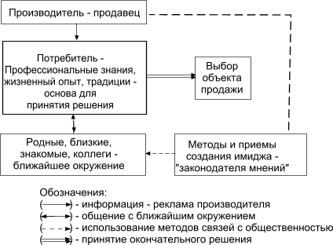
Рис. 16. Окончательный выбор потребителя
Таким образом, реклама — коммуникация, на которую компания затратила средства, вызвала отклик у потребителя, то есть желание встретиться, договориться, купить, но только не в свой адрес.
Поэтому, если организация располагает средствами, то перед рекламной компанией для большей эффективности ее проведения целесообразно провести мероприятие, например презентацию. В таком случае, можно создать у потенциальных потребителей о себе мнение, как о «законодателе мнений и мод» в данной области деятельности.
Следует отметить то, что в настоящее время многие путают назначение и наименование разных акций. Например, представление объекта продажи в местах продаж с убеждением попробовать или понюхать, а именно оценить объект продажи следует отнести не к презентации, а исследованию мнения потребителей о товаре. А презентации, которые проводятся для создания имиджа компании и продукта более масштабные и должны соответствовать определенным требованиям.
Не рассматривая варианты, связанные с выбором и оформлением места, где проводится презентация и сценарием проведения мероприятия можно отметить основные правила и требования, не соблюдение которых может резко сказаться на эффективности мероприятия.
Первое правило заключается в том, что эффективность мероприятия будет выше, если информация о товаре или фирме будет представлена потребителям не только с использованием официальных коммуникаций, но и самими потребителями. Для этого формируются и приглашаются на мероприятие, так называемые референтные группы, то есть представители потенциальных потребителей, которые должны разнести, донести информацию до потребителей и убедить их в том, что это лучший выбор, а именно компания и объект продажи.
Второе правило подготовки, и проведения таких мероприятий формирует требование о необходимости присутствия на мероприятии, так называемых «доверенных лиц» или «законодателей мнений». Участие в мероприятии «доверенных лиц» и «законодателей мнений», должно своим присутствием и высказанным мнением убедить референтную группу, и остальную категорию потенциальных потребителей в том, что это лучший выбор.
Соблюдение третьего правила должно повысить эффективность мероприятия, связано с интенсивностью воздействия и широтой охвата коммуникациями потенциальных потребителей. Чтобы наиболее широкая категория потенциальных потребителей была ознакомлена с предложением и компанией на мероприятие обязательно приглашаются средства массовой информации. При этом не следует особенно увлекаться количеством представителей прессы или других средств массовой информации, а целесообразно больше заниматься ее качеством. Необходимо приглашать на мероприятие представителей тех средств массовой информации, которые способны донести коммуникации до целевой категории потребителей данного товара. Кроме того, нельзя приглашать средства массовой информации, которые считаются лживыми у потенциальных потребителей. Если это не так, то информация, отражающая факты и размещенная в этих печатных изданиях может быть воспринята как лживая.
Четвертое правило требует подготовки и представление информации в сформированном виде, например — статьи о продвигаемом объекте продажи и компании для публикации. В коммуникации должны быть отражены все факты об объекте продажи; результаты, которые хотят иметь потребители; проблемы, которые они хотят решить и т.д. При этом, осуществляется контроль за тем, чтобы информация не была искажена представителями средств массовой информации. Иногда, репортеры могут из лучших побуждений предложить свой вариант и исказить факты, которые были выявлены в результате изучения мнения потребителей только потому, что они с ними не согласны.
Функция пятая — исследование и оформление мест реализации.
При продвижении товаров, продуктов или услуг необходимо создавать либо собственную сеть реализации, либо использовать существующую. Действия по представлению объекта продажи потребителям в обоих случаях, а именно нахождению оптимальных мест реализации приблизительно одинаковые и зависят, в основном от того, чем организация располагает. Как одну из схем можно рассмотреть следующую.
Например, на рынке г. Москвы существуют несколько тысяч компаний занимающихся продажами идентичных или подобных объектов продажи. Если вести с каждой фирмой переговоры, то на это может потребоваться несколько лет из-за длительности процесса и нельзя гарантировать того, что потребителям данной местности — района будет нужен объект продажи. Целесообразно определить места, где потребитель в нем нуждается, и будет покупать. Для этого можно провести исследование спроса аналогичных или подобных объектов продажи в предполагаемых районах его представления и продажи, а можно поступить по-другому.
На первом этапе можно выбрать торговую организацию, которая имеет самую широкую сеть магазинов, например, «Седьмой Континент», располагающий 42 магазинами. Причем, эти магазины достаточно равномерно размещены по всей территории города. После переговоров с компанией «Седьмой Континент» и поставки объекта продажи в торговую сеть проводится исследования продаж в конкретных магазинах.
У потребителя, который приобрел товар, выясняется, откуда он за ним приехал и после этого в район проживания поставляется объект продажи с использованием торговой организации, которая располагает, например, сетью из 3–5 магазинов. Как правило, организации, которые имеют небольшое количество локальных торговых точек — магазинов, располагают их недалеко друг от друга и более охотно идут на контакты по деловому сотрудничеству.
При оформлении магазинов рекламной продукцией надо учитывать их местоположение по отношению к потенциальным потребителям и использовать только те, которые позволяют качественно представить товар и коммуникации.
Основной задачей эффективного представления объекта продажи является создание действенного источника информации, чтобы потребитель, ознакомившись с коммуникацией, самостоятельно распространил положительную информацию об объекте продажи среди населения. То есть, коммуникации можно представить только в тех местах продаж, где они доступны для покупателей, а товары разместить во всех близко расположенных торговых организациях.
Блок директора по продажам
К основным функциям специалистов этой части организующей структуры относятся:
·разработка рабочей и деловой информации и представление ее потребителям;
·работа с первичным откликом потребителей, которые положительно восприняли коммуникацию; то есть исследование потребителей и продажа;
·разработка стимулирующих методов и приемов работы, способных увеличить привлекательность предложения и рассчитанных на то, что потребитель готов сотрудничать и дальше, например, покупать;
·исследование потребителей для оценки изменения их мнения по отношению к компании и объекту продажи.
Наличие, выполнение и контроль за этими функциями позволит оптимизировать действия организации в области сбыта и создать условия для долговременного сотрудничества. Следует отметить, что стабильность организации зависит от того, насколько ей удалось создать рынок потребителей, которые совершают вторичные и последующие продажи. Безусловно, что надо постоянно информировать потенциальных потребителей о компании и объекте продажи для расширения рынка сбыта, но, ни в коем случае, нельзя терять покупателей, которые обратились и что-то уже купили.
Функция первая — разработка деловой и рабочей информации.
Специалисты службы директора по связям с общественностью занимаются разработкой информации, которая должна вызвать отклик от потребителя, то есть вызвать интерес к своему предложению и не содержит, а, в большинстве случаев, и не должна содержать технические подробности и полного перечня ассортимента.
При подготовке и проведении рекламной компании сообщаются только те факты, в которых потребитель нуждается и используется те методы и приемы оформления, которые позволят получить отклик от потребителей. Но, информация — это еще не продажа.
Поэтому, потребитель, который откликнулся на предложение, нуждается в дополнительной информации для принятия окончательного решения. Именно, такого рода коммуникации подготавливают специалисты блока по продажам, например — это: прайс-листы на весь ассортимент, инструкции, описание, договора, условия продажи и т. д. Эти материалы также нуждаются в качественном оформлении и представлении.
Функция вторая — работа с первичным откликом потребителей.
Следует учитывать, что производитель или продавец, вступая в контакт, имеет возможность непосредственно общаться с потребителем. Поэтому, работая с первичным откликом, то есть, вступая в непосредственный контакт с покупателями можно оценить мнение покупателя по отношению к предложению — коммуникации и получить результаты, которые впоследствии могут позволить более эффективно представлять объект продажи или компанию потенциальным потребителям. Полученные результаты можно использовать:
·для улучшения ассортимента, а именно за счет включения продукта, товара или услуги, о которых спросил потребитель, откликнувшийся на коммуникацию;
·для разработки коммуникации, которая более отвечает восприятию и пониманию потребителей;
·для введения в предложение дополнительных условий или услуг, которые отмечает потребитель, как наиболее важные для себя;
·для формирования новых условий поставок и продаж, более соответствующих современным требованиям рынка и т.д.
Можно предположить, что потребитель, который активно занимается поиском наиболее оптимальных условий, ознакомился с десятками аналогичных предложений, то есть исследовал рынок и располагает очень важной информацией, которую в виде вопросов представляет производителю или продавцу.
Как бы хорошо компания не провела исследование потребителей и потребительского рынка, она не может быть уверена в том, что представила все необходимое потребителю, то есть, то, что он в первую очередь хочет увидеть или услышать. Поэтому, при первичных контактах большое внимание уделяется исследованию того, что потребитель спросил.
В целом, из результатов можно понять и оценить следующее:
·что хотел узнать потребитель, то есть, какой информации не хватает и внести ее в коммуникации или учесть при разработке деловой информации;
·с чем он согласен или не согласен в вашем предложении и, соответственно выделить положительное и устранить то, что вызывает недовольство;
·каковы его взгляды и мнения относительно полученного предложения и откорректировать его, то есть изменить ассортимент;
·мнение потребителей относительно качества предлагаемого предложения;
·информацию о дополнительных услугах, включая условия поставок и продаж, с которыми сталкивался потенциальный потребитель на потребительском рынке;
·откуда он почерпнул информацию о компании и предложении, и усилить эту линию коммуникаций;
·оптимальный сектор потребления.
На основе полученных и обработанных результатов можно повысить эффективность продвижения на потребительский рынок.
Функция третья — разработка стимулирующих методов и приемов.
Любая компания при продвижении на потребительский рынок в той или иной степени должна использовать информацию для привлечения внимания потребителей. Однако, стабильность организации придают клиенты, партнеры, потребители, которые решились на долговременные отношения. Поэтому, необходимо проводить исследования потребителей, а также потребительского рынка, для того чтобы представить им такие условия, которые привлекли бы их внимание и стимулировали к дальнейшим покупкам.
Для этого, проводятся исследования методов работы организаций на потребительском рынке, а также выясняется мнение потребителей на основе проводимых опросов об условиях продаж и обслуживания, которые их могут полностью удовлетворить. После исследований потребительского рынка и потребителей необходимо результаты обобщить и откорректировать в соответствии с предложением, которым располагает компания и сферой предпринимательской деятельности.
Примерный перечень вопросов, который может служить основой для разработки опросного листа и проведения опросов покупателей:
— на каких условиях он готов приобретать объект продажи в будущем?
— что его может стимулировать на последующие контакты?
— какие особенности в работе компании ему нравятся?
— какие условия продажи он считает для себя оптимальными?
— какие дополнительные услуги, связанные с приобретением товара, продукта или услуги, могут его подтолкнуть к последующим покупкам?
— что его привлекает в работе компаний, которые продают аналогичный или любой ассортимент и, в которые он чаще обращается т. д.
Функция четвертая — изучение мнения постоянных потребителей.
Специалисты блока Директора по продажам, первыми ощущают повышение спроса или падение продаж. Повышение спроса может быть вызвано мероприятиями или коммуникациями, которые создали у потребителей желание купить. Поэтому, при повышении объема продаж или возникновении новых деловых контактов, необходимо обратить на это внимание, и вовремя увеличить и продолжить положительный эффект от проделанной работы за счет дополнительных финансовых средств или персонала. Падение продаж также исследуются, находятся причины его вызвавшее для принятия конкретных мер и устранения недостатков.
Компании, которые длительное время работают на потребительском рынке и имеют долговременные партнерские отношения, основывают свое восприятие потребителей на основе постоянных контактов, например переговоров по телефону. Но, как правило, этого бывает не достаточно, так как эти контакты касаются текущих вопросов, например поставки и не всегда могут отражать позицию руководства. Дело в том, что потребителей — партнеров на изменение своих отношений с поставщиком могут подталкивать весьма серьезные обстоятельства. Например, в качестве таких обстоятельств могут быть изменения в технологии производства продукции или более высокое качество, а также более выгодные условия поставки аналогичного или подобного ассортимента. Поэтому, на основе статистического и регулярного анализа объемов поставок и продаж, необходимо контролировать отношения и выяснять причины, которые могут привести к падению деловой активности. Особенно это важно для организаций, которые производят не конечные продукты, а промежуточные и корректировать свою политику с учетом изменений товарного и потребительского рынков, а также потребителей конечного продукта.
Например, анализ ассортимента производителя фурнитуры, которая поставлялась производителям обуви, показал, что три основные позиции перестали покупать. Так как анализ продаж и поставок не проводился, то данный факт стал неожиданным для руководства производителя фурнитуры, так как отношения у них с потребителями сохранялись на высоком уровне. Для выяснения причин падения спроса-продаж был разработан опросный лист и проведены опросы по схеме — согласование отправления опросного листа, контроль за получением опросного листа и его заполнением и отправкой обратно.
Опросный лист
1. Удовлетворяет ли Вас ассортимент продукции?
2. Какие причины повлияли на снижения потребления или изменение ассортимента?
3. Что Вы можете сказать о качестве продукции?
4. Предпочитаете ли вы продукцию невысокого качества по низкой цене, качественной по более высокой?
5. На что Вы ориентируетесь при заключении договоров и выборе партнеров?
Первые три вопроса относятся к выявлению причин, которые могли привести к снижению объемов продаж. Четвертый вопрос позволяет выявить приоритеты потребителей в отношении качество — цена, а пятый вопрос выяснить критерии, на которые ориентируются организации при рассмотрении вопроса о выборе поставщиков.
Представленный опросный лист был сформирован как свободный — открытый тип. Но, при таком изучении мнения потребителей можно использовать опросные листы закрытого типа. Например, для выяснения отношения к одной из самых значительных позиций ассортимента, был проведен опрос по выше приведенной схеме — согласование отправления опросного листа; контроль за получением и заполнением опросного листа, а так же отправкой обратно.
Опросный лист.
Причины снижения потребления:
1. Изменение ассортимента готовой продукции — Да / Нет
2. Изменение технологии производства — Да / Нет
3. Цена и схема оплаты:
— стоимость — Да / Нет
— отсрочки платежей — Да / Нет
— бартер — Да / Нет
4. Другие поставщики — Да / Нет
5. Другие причины (отметьте основные)
Результаты позволили узнать конкретные причины, которые повлияли на снижение объемов поставок и продаж и принять меры по их устранению.
Цит. по: Маркетинговые исследования и коммуникации [Электронный ресурс]: учебный курс /
В. Е. Архипов. — Электронный курс. — М.: МИЭМП, 2008. —
Режим доступа к курсу: http://e-college.ru. -П. 6.3
Тема 5. Интернет-маркетинг как инновационный способ продвижения
Интернет-маркетинг
Несмотря на наблюдающееся в последние год-полтора падение ажиотажа вокруг Интернет-компании и Интернет-бизнеса, вызванное общим снижением темпов роста мировой электронной индустрии, никто сегодня, в том числе и в России, не усомнится, что сам по себе Интернет стал во многом неотъемлемой частью нашей жизни.
По оценкам исследовательского агентства SpyLog . общее количество постоянных пользователей сети в России превышает 9 млн человек. При этом число людей в РФ, использующих Интернет с некоторой периодичностью, составляет примерно 12 млн человек.
Много это или мало? По сравнению с показателями европейских стран и тем более США, российская аудитория Интернета пока незначительна, но если учитывать, что еще два года назад услугами сети в России пользовалось всего 6 млн чел., можно с уверенностью сказать, что у Интернета в нашей стране есть хорошие перспективы.
Одно из неоспоримых преимуществ электронной сети — возможность свободного дистанционного доступа, не ограниченного географическими и национальными рамками, к огромному массиву информации. Это преимущество Интернета является одним из ключевых факторов, позволяющих использовать сеть в качестве одного из инструментов маркетинга.
Интернет-маркетинг - это комплекс мер по продвижению и продаже на рынке товаров и услуг, торговой марки с использованием возможностей глобальной информационной сети Интернет
Основные плюсы Интернет- маркетинга заключаются в следующем:
относительно низкие затраты на доступ к информации;
оперативность, целенаправленность, дешевизна рекламных и маркетинговых акций;
возможность быстрой обратной связи с клиентами.
Ниже представлена структура основных возможностей Интернет-маркетинга в качестве одного из вспомогательных средств коммуникативной и распределительной политики компании:
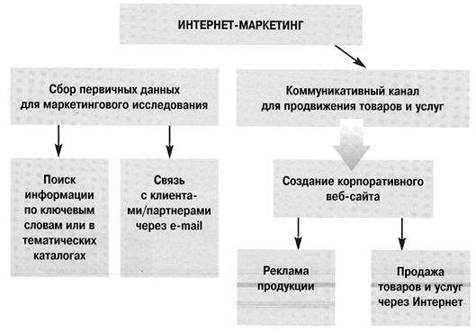
Таким образом, предприниматель должен с самого начала определить, какой цели он хочет добиться от использования Интернет-маркетинга, насколько эта цель согласуется с основной деятельностью фирмы и какие ресурсы требуются для ее реализации.
Интернет как средство сбора информации
Не секрет, что многие российские фирмы активно используют ресурсы Интернета для первичного сбора информации при проведении маркетингового исследования.
Разумеется, свободный (т. е. бесплатные) для пользования сетевые ресурсы позволяют обнаружить в основном данные официального характера, намеренно допущенные к публикации: например, объем импорта нефти странами ЕС за определенный период времени или показатели финансово-экономической деятельности промышленного предприятия. Более подробная (или частично конфиденциальная) информация будет находиться в платном доступе или представлять собой неподтвержденные и малоценные слухи.
Тем не менее даже с помощью обычного поиска информации в поисковых системах, таких как rambler .ru , yandex .ru или в англоязычных (excite .com , lycos .com ), можно обнаружить немало ценных фактов, например, в отношении компании-конкурента или представляющего интерес товара. Кроме того, можно использовать различные электронные справочники, содержащие адресные реквизиты компаний и предприятий, например: www .yellowpages .ru , www . europages . com и др.
Интернет будет полезен для потребления потребительской аудитории. Речь идет прежде всего об использовании рейтингов и данных опросов, представленых на сайтах компаний, специализирующихся на проведении статистических Интернет-исследований (www . monitoring . ru . www . spylog . ru . www . fo rrester . com ).
Достаточно большой популярностью пользуются различные форумы в сети, т.е. дискуссии на определенную тему, в которую можно включиться на любом этапе и задать свой вопрос или просто просмотреть обсуждение. Наконец, хороший способ заявить о себе и своей компании - принять участие в Интернет-конференции.
Если вы располагаете электронной почтой, то Интернет будет полезен для поиска партнеров/клиентов путем электронной рассылки предложений о сотрудничестве и информации о своей деятельности. E -mail экономит время на осуществление связи и повышает эффективность обратной связи (факс может потеряться, а телефонные переговоры с незнакомым лицом мало результативны).
Наконец, Интернет более удобен (чем звонки в банк или устаревшие газеты) для получения свежей оперативной коммерческой информации, например, текущих данных о курсе мировых валют, стоимости нефти о биржевых торгах или фондовых индексах.
С точки зрения затрат на услуги связи, для активного использования Интернета в деловых целях целесообразно покупать т. н. выделенный канал связи. Это позволяет, во-первых, получить неограниченный по времени доступ к сети в течение периода времени (например, месяца), во-вторых, улучшить качество связи (скорость скачивания информации) и, в-третьих, это обойдется дешевле, чем при почасовой оплате.
В среднем для организаций в Москве расценки составляют от 80 до 120 долларов за неограниченный доступ к сети в течение месяца, провинции аналогичная услуга будет уже стоить 35–50 долларов.
Реклама посредством сети
Помимо обычного сбора информации, или, иначе, пассивного маркетинга, Интернет располагает потрясающим потенциалом как средство продвижения товаров, услуг, торговых марок на локальных и международных рынках. Эти возможности объясняются исключительно эффективным механизмом сетевой (или, как говорят на Западе, «он-лайновой») рекламы.
Так, по прогнозам американских аналитиков, к 2005 г. мировой объем сетевой рекламы составит в денежном выражении 42 млрд долларов, через Интернет будет разослано около 268 млрд рекламных почтовых сообщений. Это количество в 22 раза превышает уровень 2000 г.
Использование возможностей рекламы в сети Интернет связано с разработкой и созданием коммерческого веб-сайта.
Создание веб-сайта
Что представляет собой веб-сайт? Если сравнить Интернет с огромным справочником, то веб-сайт, в зависимости от размеров и узнаваемости, можно сопоставить с тематическими страничками…
Затраты на создание сайта зависят от его предназначения.
Следует отличать веб-сайт от веб-сервера. Под последним термином понимается отдельный большой компьютер (сервер), подключенный к всемирной сети и содержащий большое количество тематических страниц — веб-сайтов.
Самый простой вариант рекламы себя и своей фирмы в Интернете - заказать специалисту по созданию сайта (в принципе, это можно сделать и собственными силами, прочитав учебное пособие по созданию веб-сайтов) такую виртуальную страничку и разместить ее в сети при помощи провайдера (фирмы, которая продает вам услуги Интернет-связи). В этом случае затраты составят 150–300 долларов.
Если планируется использовать сайт в «имиджевых» целях, потребуются современные электронные технологии, и стоимость (дизайн, разработка, программное обеспечение) может подскочить до 5000–15 000 долларов,
Выбор домена
Домен - от англ. domain (область, зона) - это своего рода области внутрисетевого пространства, которая управляется специальными вычислительными сетями, или группами компьютеров.
Различают домены первого уровня,охватывающие географические зоны и обозначаемые как .ru (Россия), .uk Великобритания), .fr (Франция), а также домены, делящиеся по тематическому признаку. Например, - .com — домены, объединяющие ресурсы, .edu — образовательные учреждения, .gov - правительственные организации.
Если фирма хочет выглядеть более солидно и иметь широкую пользовательскую аудиторию в Интернете, как правило, прибегают к приобретению собственного виртуального сервера (что позволяет не зависеть от сервера, на котором первоначально размещался созданный сайт) и домена второго уровня. Создание такого домена в форме записи www . Название фирмы. com - зачастую единственный способ отличить профессиональный сайт от любительского.
От имени домена во многом зависит последующая популяризация веб-ресурса и рост его посещаемости, так как домен представляет собой не что иное, как ключевое слово, по которому осуществляется поиск. Поэтому выбираемое имя должно быть, во-первых, кратким и легко запоминаемым (имя типа velikayasetevayakompania .com довольно сложно воспроизвести), во-вторых, либо совпадать с названием компании (или ее аббревиатурой), либо соответствовать профилю деятельности фирмы.
Еще одна проблема заключается в том, что многие звучные и легко воспроизводимые имена уже давно «приватизированы» коммерческими и некоммерческими организациями, а также частными лицами, часто специализирующимися на перепродаже доменов третьим лицам. Стоимость отдельных «имен» может достигать десятков тысяч долларов. Поэтому после того, как фирма определилась с конкретным названием домена, следует удостовериться, что прецедентов его использования еще не было. В любом случае регистрация домена является платной, так как даже не использовавшееся имя следует защитить от потенциального «захвата».
Регистрация в поисковых системах
Регистрация веб-сайта - процесс внесения определенных данных о ресурсе (электронный адрес сайта в Интернет, ключевые слова, описание ресурса) в память поисковой машины.
Поисковые системы (или еще и называют поисковые машины) — это полностью автоматизированные интерактивные сервисные службы, которые осуществляют поиск информации в Интернете по введенному пользователем текстовому запросу. Наиболее известные российские системы - yandex , rambler , среди англоязычных — yahoo , lycos , google и др.
После создания сайта и получения доменного имени происходит процесс его регистрации в поисковых системах. Система запрашивает владельца сайта об определенных параметрах, включая электронный адрес сайта в сети т.н. URL (от англ. Uniform Resource Lokator - унифицированное местонахождение ресурса), например, http :// www . job . ru , описание ресурса, ключевые слова, контактную информацию о владельце (компании).
После завершения регистрации поисковая система с помощью специальной программы - спайдера (от англ. spider —паук) - просматривает зарегистрированный сайт и вносит информацию об обнаруженных на нем страницах в базу данных поисковой системы, которая носит название индекса (т.е. оглавление). Этот процесс называется индексацией веб-страниц.
В свою очередь пользователь сети, который хочет найти определенную информацию в поисковой системе, вводит в рамку с надписью «поиск» (или продвинутый поиск) свой запрос в виде ключевого слова или слов (например, РАО ЕЭС) и нажимает кнопку «найти».
По данной команде задействуется специальная программа, которая сравнивает введенные пользователем ключевые слова с содержимым индекса на соответствие. После этого пользователю на экран выводится целая серия ссылок-соответствий в которых присутствуют введенные ключевые слова.
Если компания была зарегистрирована в поисковой системе и ключевые слова, введенные при ее регистрации, являются легко опознаваемыми, то скорее всего ссылка на официальный сайт компании будет возглавлять список выбранных ссылок. Следует заметить, что целесообразно регистрировать сайт сразу в нескольких поисковых системах, так как если, допустим, веб-ресурс зарегистрирован только на «rambler », то пользователь «yandex » при поиске тематики сайта не сможет его обнаружить.
Еще одно преимущество регистрации сайта в поисковой системе заключается в получении возможности принять участие в рейтингах Интернет-ресурсов, в том числе рейтингах посещаемости. Это происходит при помощи счетчика посещаемости, который фиксирует количество пользователей, обратившихся к данному ресурсу в течение определенного времени. Информация о числе посещений фиксируется в информационной системе, предоставившей такой счетчик, и отображается в различных тематических рейтингах. Следует отметить, что показатель посещаемости ресурса играет огромную роль, так как является основным показателем эффективности создания сайта.
Хотя регистрация сайта способствует повышению осведомленности о его владельце, для дальнейшей популяризации сайта в Интернете и увеличения его посещаемости необходимо использовать специальные рекламные средства.
Виды рекламы
Баннерная реклама
Баннерная реклама является одним из эффективных способов популяризации веб-ресурса в Интернете. Содержательную основу этой рекламы составляет т.н. баннер (англ. banner ), т. е. рекламное изображение, в котором в той или иной форме содержится ссылка на рекламируемый продукт или название компании. При нажатии на такой ярлычок происходит перенаправление пользователя па тематическую страницу компании, разместившей баннер. Например:
Изображение может включать элементы анимации, т. е. заставка на изображении периодически меняется, или сопровождаться движущимися объектами (в случае с рекламой «Форда» — это мчащийся автомобиль).
Основной смысл размещения баннеров заключается в том, чтобы поместить такую рекламу на страницах крупных сайтов, имеющих большую стабильную аудиторию пользователей, т. е. на тех веб-ресурсах, которые уже достаточно раскручены и пользуются спросом.
Эффективность рекламы с помощью баннеров можно определить путем подсчета числа нажатий на изображение пользователей вебсайта, на котором размешен баннер. Допустим, за месяц веб-сайт посетило 5000 человек, из них на банннер нажали 100. Значит, эффективность баннера составила 100/5000 = 2%. Естественно, что многое зависит от дизайнерских усилий, затраченных на оформление и разработку баннера.
Стоимость изготовления и размещения баннера определяется его технической «крутизной» и популярностью веб-сайта, на котором заказчик желает поместить рекламу. Расценки колеблются от 4–50 долларов при размещении баннера на временной основе (1000 показов) на среднем по известности и посещаемости сайте до 1000–5000 долларов в месяц, если заказчик хочет поместить баннер постоянно на главной странице одного из ведущих информационных или развлекательных сайтов. Поэтому расходы на создание и размещение баннерной рекламы определяет сам рекламодатель в соответствии с требуемыми целями.
Если сайт компании уже более менее известен, можно попробовать заработать на размещении баннеров других рекламодателей: допустим, при стоимости 5 долларов за 1000 показов и наличии пяти баннеров на сайте, учитывая средний по статистике уровень посещаемости 1000 человек в день, ежемесячный доход составит порядка 750 долларов брутто.
Обмен ссылками
Еще один распространенный способ рекламы сайта - так называемый обмен ссылками, т. е. обмен тематическими страницами с другими владельцами веб-сайтов. Как правило, для такого обмена на сайте создается отдельный раздел, в который помещаются как ссылки на дружественный (не представляющий прямой конкуренции) сайт, так и краткое описание самого сайта.
Именно это краткое описание и является основным способом привлечь внимание посетителей. Поэтому текст такого описания должен быть кратким и информативным, чтобы заинтересовать потенциального посетителя. Как только дружественные веб-ресурсы отобраны, необходимо связаться с их администраторами и предложить обмен ссылками, указав при этом собственный адрес в сети. В случае положительной реакции произойдет обмен тематическими ссылками (возможен также обмен баннерами) и в результате веб-страница данной компании будет рекламироваться на выбранном сайте.
Следует ссылаться на ресурсы компаний, не являющихся прямыми конкурентами.
Реклама на бесплатных досках объявлений
Принцип работы бесплатной доски объявлений напоминает услуги газеты, печатающей бесплатные объявления с той лишь разницей, что на электронную доску подающий объявление печатает его сам, и введенная информация сразу же появляется в сети. Бесплатных досок объявлений в сети великое множество - есть крупные тематические доски (недвижимость, автомобили, аудио-видео), доски, объединенные в укрупненные каталоги (объединяют множество различных тематик).
Статистика показывает, что размещение рекламы сайта примерно 1 раз в неделю на различных досках объявлений может привлечь 5-50 посетителей в день в зависимости от специфики данного сайта, удачно составленного рекламного объявления и количества задействованных досок. Поэтому особое внимание следует уделить составлению текста объявления: он должен быть оптимальным по объему, неутомительным для чтения и максимально информативным.
Если размещается, например, сообщение о сайте по продаже книг, то не следует прибегать к напыщенным рекламным слоганам типа «Мой сайт - самый лучший, с самым большим выбором и с высокой посещаемостью!» Спрашивается, если это действительно так, то какой смысл было размещать объявление на бесплатной доске? Нужно указать, что предлагаются книги такой-то тематики, упомянуть условия доставки, оплаты и другую релевантную информацию.
Для публикации рекламного объявления рекомендуется использовать максимально возможное число досок со схожей тематикой, что позволит повысить вероятность увеличения числа потенциальных посетителей сайта.
Неплохой результат дает организация на сайте собственной доски объявлений с последующей ее регистрацией в соответствующих каталогах. Для успеха надо иметь хотя бы средний уровень посещаемости сайта.
Создание скринсейвера
В последнее время возможности сетевой рекламы пополнились еще одним инструментом, т. н. скринсейвером (screensaver ). Внешне скринсейвер напоминает рекламу, но принцип его действия иной.
Особенность этого рекламного изображения заключается в том, что каждый пользователь может самостоятельно менять и редактировать такой скринсейвер по своему вкусу, а при нажатии на него мышкой автоматически происходит переадресация на веб-сайт рекламодателя. Кроме того, в отличие от баннера, показ которого является ограниченным, скринсейвер может демонстрироваться каждому пользователю бесчисленное количество раз, единственное — первоначальное изображение может измениться.
Стандартный скринсейвер состоит из нескольких шаблонов, посвященных популярным темам (кино, театр, поздравления, приветствия и др.), и рекламных элементов, используя которые посетители сайта могут создавать собственные произведения.
Скринсейвер в виде поздравительной открытки можно отправить по электронной почте партнерам или потенциальным клиентам, кроме того, первые пользователи этого скринсейвера могут рассылать самостоятельно сделанные на его основе рекламки и рассылать их своим друзьям и знакомым, коллегам, тем самым распространяя рекламу и увеличивая посещаемость сайта рекламодателя.
Электронная торговля
Создание сетевого сайта компании и его последующая удачная популяризация среди пользователей Интернета позволяют сделать следующий маркетинговый ход: попытаться расширить торговую сеть компании посредством развития Интернет-торговли.
Когда говорят об электронной торговле, обычно выделяют два основных направления; В2В (business to business , т. е. торговля между юридическими лицами) и В2С (business to customers , т. е. розничная торговля для рядовых покупателей посредством электронных магазинов). Именно последний сектор в условиях замедления темпов роста мировой Интернет-экономики продолжает оставаться наиболее динамично развивающимся направлением электронной коммерции.
По некоторым данным, экономия от сетевой торговли достигает 20%.
По данным исследовательского агентства Forrester , по итогам 2001 г. потребителями в США было сделано покупок через Интернет на сумму 53,1 млрд долларов, а по прогнозу на 2002 г. объем сетевой торговли составит 72,1 млрд долларов. В Великобритании, согласно исследованиям европейской компании GfK -Webgauge , продажи предприятий электронной коммерции выросли с 2,7 млрд евро ($2,55 млрд) в ноябре 2001 г. до 7,9 млрд евро ($7,47 млрд) по итогам апреля 2002 г. Немного иначе выглядит ситуация в России. Общий обвал акций высокотехнологичных компаний, сокращение оборотов сетевой торговли в 1999–2000 гг., казалось бы, слабо отразилось на сетевом бизнесе в нашей стране. Так, с марта 1999 по ноябрь 2000 г. ежемесячно в российской зоне Интернета открывалось 30–40 сетевых магазинов. Однако уже в 2001 г. ситуация значительно изменилась: многие Интернет-магазины либо закрывались, либо меняли собственника. Так, закрылся некогда популярный магазин Arcadia .ru , а другой магазин – 24´ 7 вошел в состав холдинга eHouse . Потерпел неудачу амбициозный проект Extra .ru группы компаний «Экстра-М» по организации крупной информационно-торговой сети в Интернет. По разным оценкам, убытки по проекту составили от нескольких тысяч до полутора миллионов долларов.
В чем причины трудностей, которые испытывает сетевая торговля?
Известно, что одним из основных преимуществ переноса торговли в электронную сеть зачастую называют снижение издержек и операционных расходов, связанных для обычного магазина с арендой торговой площади, содержанием штата продавцов, а также высокой стоимостью рекламы.
Так ли это на самом деле? Во-первых, нужно сразу оговориться, что организация сетевого магазина крупного масштаба предусматривает создание целого виртуального комплекса, включая веб-сервер, совмещенный с бухгалтерскими и складскими базами данных и позволяющий осуществлять платежи непосредственно в Сети, с использованием обычных кредитных карт или специальных сетевых дебитовых карт, применяемых только для оплаты покупок в определенных электронных магазинах. Кроме того, требуется безупречная организация складских служб и служб доставки. Поэтому создание подобного виртуального комплекса требует высоких стартовых расходов.
Речь идет прежде всего об аренде складских площадей (если проект является самостоятельным бизнесом — то эта статья расходов будет значительной), организации доставки покупателям, а также значительных затратах на рекламную раскрутку виртуального магазина (особенно если первоначальный сайт компании, да и само имя фирмы мало известно пользователям сети). Кроме того, следует учитывать, что реально функционирующих платежных сетевых систем на территории России пока нет.
В этих условиях наибольшее распространение в России получила форма сетевых магазинов, торгующих на принципе оплата наличными при доставке товара покупателю. При этом стоит отметить, что большая часть таких магазинов реально носит локальный характер, так как доставка товаров не вызывает значительных трудностей в пределах Москвы и Подмосковья или, например, по Санкт-Петербургу. Отсутствие развитой системы складов в регионах приводит к тому, что при заказе из одного города в другой доставка производится только по почте — а это сводит на нет преимущества сетевой торговли, так как занимает много времени и увеличивает стоимость товара.
Существует еще один немаловажный аспект. Согласно опросам консалтинговой фирмы
«Mummert + Partner », европейские покупатели предпочитают обращаться к услугам электронных магазинов, представляющих известные торговые марки. Таким образом, Интернет-торговля используется не в качестве основного средства популяризации товаров и услуг фирмы, а как вспомогательный маркетинговый инструмент, позволяющий привлечь дополнительных покупателей и укрепить доверие традиционной потребительской аудитории благодаря более широкому спектру предоставляемых услуг.
Подобный способ реализации проектов в сфере электронной торговли называется корпоративным, т.е. когда компания рассматривает развитие сетевой торговли в качестве одного из направлений бизнеса. Представляется, что и в российских условиях такой подход к осуществлению сетевых проектов является наиболее оправданным, в особенности для компаний, так или иначе связанных с оптовой и розничной торговлей.
Вместе с тем все сказанное отнюдь не означает, что если вы являетесь владельцем небольшой частной фирмы, известной ограниченному числу потребителей, то путь к созданию Интернет-магазина для вас заказан.
Цит. по: Маркетинг: концепции и решения / А. Кондратьев. —
М.: ОЛМА-ПРЕСС Инвест: Институт экономических стратегий, 2003. —
(Успешный бизнес. Мастер-класс). — С. 116-139
МОДУЛЬ 3. РЕКЛАМА КАК ЭЛЕМЕНТ МАРКЕТИНГОВЫХ КОММУНИКАЦИЙ
Тема 1. Реклама как экономический и социокультурный феномен
Реклама: определение понятия
Проводя этимологическую реконструкцию термина «реклама», В. В. Ученова и Н. В. Старых отмечают, что источником понятия «реклама » общепризнанно считается латинский глагол «reclamare » — кричать, выкрикивать, отражающий стадию бытования устной словесной рекламы. Именно этот термин сохранился в ряде западноевропейских языков и через французское влияние укоренился в России. Однако в языковой практике различных регионов доминируют иные национально-специфические обозначения явления: в современной немецкой лексике используется понятие «Werbung » ,родственное русскому глаголу «вербовать» и акцентирующее активное воздействие рекламы на потребителя. В английском же языке к началу XIX в. общеупотребительным стал глагол «advertise » ,который в XV –XVI столетиях, как указывает Оксфордский словарь, означал просто сообщение о чем-либо. В романских языках (французском, итальянском, испанском) сосуществуют на равных термины «reclame » и «publicite » (франц.) , «publicitad » (исп.) ,подчеркивающие массовость рекламного адресата. Таким образом, сама этимология данного понятия в различных языках отразила основные параметры рекламной деятельности: ее информационную наполненность, массовую адресованность и эмоциональную насыщенность, предполагаемую глаголом «вербовать».
Между тем реклама обладает гораздо большим количеством функций и выделение каких-либо ее особенностей обусловливает различие ее определений. Здесь явно выделяются несколько подходов:
Экономический подход .Здесь реклама определяется какинформация о потребительских свойствах товаров и видахуслуг с целью их реализации и создания спроса на них, как популяризация производства, литературы, искусства (А. Наймушин), какнеличное, многообразное представление на рынке товаров, услуг и коммерческих идей, четко установленных заказчиком, который оплачивает носителю (средству распространения рекламы) стоимость доведения своего сообщения (Международнаяторговая палата). Д. Денисон и Л. Тоби различают рекламу прямую, под которой понимаются все виды рекламы, призванные склонить потребителя немедленно купить товар, оформить заказ или заинтересовать в получении дальнейшей информации, и косвенную. Косвенную рекламу (паблик рилейшнз ) авторы трактуют как «все действия, кроме прямой рекламы, имеющие целью притянуть внимание средств массовой информации и/или сформировать общественное мнение». Рассматривая вопросы, связанные с экономической эффективностью рекламы, В. Перепелица отмечает, что реклама, будучи одним из способов продвижения товара на рынок, существует ради того, чтобы привлечь к товару или услуге столько потребителей, сколько нужно, чтобы этот товар или эту услугу было выгодно производить. Иными словами, реклама имеет смысл тогда, когда затраты на нее окупаются за счет увеличения продаж. Реклама утрачивает свою экономическую эффективность в следующих случаях:
1) когда товар реализуется и без рекламы;
2) когда рост продаж стимулируется дорогими рекламными средствами, в то время как существуют другие, нерекламные (и более дешевые) методы;
3) когда продавец по каким-либо соображениям не желает увеличивать объем продаж.
Актуальность рекламы проявляется в тех случаях:
1) когда появляется новая, никому не известная фирма;
2) когда предлагается товар, еще не известный покупателю;
3) когда рынок заполнен однотипными товарами и продавцу надо привлечь внимание именно к своему продукту;
4) когда продавец планирует резкое расширение объема продаж, «завоевание» новых территорий, привлечение новых клиентов.
Психологический подход ,где под рекламой понимается комплекс средств неценового регулирования сбыта продукции и формирования спроса на нее, а также процесс информирования населения о товаре, ознакомления с ним, убеждения в необходимости его покупки.Как отмечают авторы, реклама за свою длительную историю качественно эволюционировала, пройдя путь «от информирования к увещеванию, от увещевания — к выработке условного рефлекса, затем — к подсознательному внушению и проецированию символического изображения». По мнению В. В. Ученовой и Н. В. Старых, подобные качества текста присущи не только рекламе, но и иным потокам массовой коммуникации — публицистике и пропаганде . У этих явлений много родственных черт, и в реальной жизни они нередко тесно переплетаются между собой. Однако существует многообразие целей, методов и средств каждого из указанных коммуникативных явлений, где рекламные тексты отличает, в первую очередь, конкретная прагматическая заостренность сообщаемого и ориентация на оперативную поведенческую ориентацию адресата. Родственные же направления массовой коммуникации предполагают более глубинное и продленное во времени воздействие на адресата, преимущественную ориентацию на мировоззренческие и лишь во вторую очередь на поведенческие реакции личности.
Еще один психологический аспект рекламы выделяет Э. Е. Старобинский, рассматривающий ее не только как комплекс средств, приемов, направленных на достижение конечной цели — продажи товаров и услуг, но и как средство формирования комфортного психологического состояния человека:«Смысл рекламного сообщения всегда должен быть шире утилитарного, и тогда мы увидим, что косметические фирмы продают нам не столько крем для кожи, но вечную молодость. Пивовары не только торгуют пивом, но одаряют весельем. Автомобильные компании предлагают вам лимузин не только для комфортабельности поездок, но ради вашего самоутверждения, помогают повысить престиж . Таким образом, назначение рекламы в современном мире не исчерпывается ролью «двигателя торговли».
Ее миссия — создать душевный комфорт человеку в его повседневной жизни».
Информационный подход ,где реклама рассматривается как общественная подсистема, выполняющая общественно необходимые функции в процессе коммуникации с потребителями.Эта коммуникация удовлетворяет мотивы потребностей потребителей и выполняет назначение заказывающих ее организаций. Одним из инструментов так понимаемой рекламы А. Ульяновский считает проникающую рекламу — инструмент постмаркетинга, способствующий выполнению назначения заказывающих ее организаций путем удовлетворения мотивов потребностей потребителей посредством массовой коммуникации.
Социологический подход. В его рамках реклама определяется как специфическая информация, являющаяся феноменом современного социума, производимая определенными общественными структурами для воздействия на массовое сознание.И эти структуры, и массовое сознание выступают в качестве социальных подсистем со своими потребностями, целями и мотивами производства-потребления.
Социокультурный подход ,где реклама рассматривается не только как механизм экономического регулирования, но и как одна из общественных систем, обеспечивающая общество определенной картиной мира, ценностными ориентациями, связанная с традициями данной культуры и ее историей.Подобный подход не только способствует целостному осмыслению рекламы как одной из неотъемлемых составляющих современного общества, но и помогает понять ее специфику и особенности в Америке, Японии, Европе, России и других странах. Вспомним общеизвестный пример с рекламой жаропонижающего средства, состоящей из нескольких картинок (больной с температурой, принимающий лекарство и выздоровевший), которая в некоторых странах Азии — согласно традициям письма — воспринималась не слева направо, как принято в Европе и Америке, а справа налево. Таким образом, реакция на подобную рекламу была прямо противоположной ожидаемой — здоровый человек, принимающий данное лекарство, и заболевающий — далеко не лучшая иллюстрация эффективности средства.
Видение рекламы как комплекса не только экономических, но и социокультурных проявлений характерно для тех стран, в которых функционирует информационное общество. Здесь потребитель рассматривается как субъект со сложным внутренним миром, по отношению к которому грубая и прямая манипуляция оказывается недопустимой, сама же реклама выступает как специфический элемент гуманизации общества. В частности, в Японии рекламной корпорацией «Дентсу» (одной из крупнейших в мире) организован Институт человека, где разрабатываются «тотальные коммуникации» — технологии, мобилизующие все ресурсы общения человека с ему подобными, обеспечивающие оптимальное восприятие и отражение идущей к нему со всех сторон информации. При этом реклама, как отмечает И. Я. Рожков, «исследуется не только с точки зрения маркетинговых коммуникаций в режиме монолога и диалога, но и межличностного общения, психологии массового сознания и подсознания человека, влияния на него цвета, формы, окружающей среды, знаков и символов, звука, интерьера, особенностей поведения в производственных коллективах и многих других факторов».
Функции рекламы в обществе
Реклама в обществе выполняет весьма широкий спектр самых разнообразных задач. По своей специфике они тяготеют к нескольким сферам:
♦ прежде всего экономической, так как реклама является, в первую очередь, экономическим средством продвижения товара;
♦ социальной, где реклама выполняет функции социализации , маркировки социокультурного пространства, а также выступает как средство коммуникации;
♦ идеологической, так как реклама внедряет в общество определенные стереотипы представлений и стандарты поведения и формирует человека с потребительской идеологией ;
♦ психологической (в том числе, защитной и адаптационной), проявляющейся в способности рекламы снимать психоэмоциональные перегрузки;
♦ эстетической, где проявляются художественные аспекты рекламы.
Экономические функции рекламы
Известный американский специалист в области рекламы Г. Картер отмечает, что реклама:
♦ содействует узнаваемости продукта или услуги, где бы ни происходила их реализация, и укрепляет доверие к ним;
♦ обеспечивает восприятие товара оптовыми, а также розничными торговцами и потребителями, содействуя таким образом налаживанию распределения;
♦ стимулирует спрос на конкретный марочный (фирменный) товар;
♦ противоборствует с марочными (фирменными) товарами конкурентов;
♦ сокращает сроки вывода на рынок нового продукта или услуги;
♦ популяризирует совершенно новую идею или метод;
♦ обеспечивает рынки сбыта и реализует связанные с ним преимущества более широкого и массового производства;
♦ стимулирует заказы и частично или полностью устраняет спонтанный сбор заказов;
♦ укрепляет убежденность продавца в правильном выборе реализуемого товара;
♦ представляет товар в новой упаковке, модифицированный или усовершенствованный продукт, услугу;
♦ объявляет о льготных сделках или предложениях;
♦ разъясняет суть нового продукта или услуги;
♦ обеспечивает рост денежного товарооборота, интенсифицирует использование средств, вложенных в товарную массу;
♦ улучшает или изменяет общую репутацию товара или фирмы-производителя.
Реклама в бизнесе. Реклама связывает производство и потребление, содействует реализации стоимости, ускоряя процесс купли-продажи, оборачиваемость капитала, обеспечивает функционирование торговли как самостоятельной сферы экономики.Здесь основной функцией рекламы становится не только информирование потребителя о движении товаров, услуг, финансовых потоков, но и поддержание «обратной связи» с рынком и потребителем. Таким образом, реклама контролирует продвижение товаров на рынке, обеспечивает определенные предпочтения к рекламируемым объектам. Реклама не только формирует спрос на товары, услуги, финансы, но и управляет им. Как отмечал американский экономист Дж. К. Гэлбрайт, существует широкая эмпирическая зависимость между расходами на производство потребительских товаров и расходами на искусственное создание потребности в этих товарах .Путь для расширения производства, — продолжал он, — должен быть проложен соответствующим увеличением рекламного бюджета.
Расходы на рекламу в экономике западных стран непрерывно растут. В США в 1970 г. они составили 20 млрд. долл., в 1980 г. — 50 млрд. долл., в 1988 г. — около 70 млрд. долл. Рост расходов на рекламу — косвенное свидетельство постоянного роста насыщения рынка товарами и услугами, обострения конкурентной борьбы, появление на рынке новых товаров и услуг. Несомненно, реклама — важнейший элемент маркетинга.В рамках маркетинга реклама активно воздействует на производство, обеспечивает процессы планирования, разработки и производства товаров, изучения спроса, ценообразования и сбыта.
Использование рекламы не только для формирования спроса, а для управления им внутри определенных групп общественности превращает рекламу в достаточно эффективную технологию системы «паблик рилейшнз» как управляющего элемента общественных связей. Американский исследователь Р. Ривс считает, что реклама — это искусство внедрения единственного в своем роде потребительского мотива в головы наибольшего числа людей при наименьших затратах. Это искусство сводится к созданию символов, а по сути — имиджей товаров. Имидж товара, услуги — это образ жизни, это диктуемый этим товаром стиль поведения. По сути, при продаже товаров, тем более товаров с одинаковыми свойствами, продаются не реальные качества их, а имиджи этих товаров. Конструирование образа (имидж-билдинг) — один из самых эффективных приемов современной рекламы.
Современная реклама заставляет потребителя рассматривать товар не просто сам по себе как единичное явление, а товар как «брендинг». Под брендингом подразумевается деятельность по созданию долгосрочного предпочтения к товару, основанная на совместном усиленном воздействии на потребителя упаковки, товарного знака, рекламных обращений и других элементов рекламы, объединенных определенной идеей и однотипным оформлением, выделяющих товар среди конкурентов и создающих его образ.
Реклама в форме имидж-билдинга, брендинга распространяется, прежде всего, через средства массовой информации, через печатные и наружные средства рекламирования. В последние годы все больше утверждается реклама в форме директ-маркетинга (прямого маркетинга).Эта форма предусматривает личные взаимоотношения производителя с клиентами, персональную продажу, которой занимаются торговые агенты, телемаркетинг, посылочную торговлю по каталогам. Особая забота рекламы — стимулирование сбыта, содействие продажам(сейлз-промоушн). Стимулирование сбыта предусматривает распространение образцов товаров, различные скидки, рассрочки, кредиты, различные поощрительные премии постоянным покупателям, конкурсы, демонстрации товаров.
Управление спросом, потреблением товаров и услуг неразрывно связано с изучением потребностей, покупательских мотивов, доходов потребителей. Иными словами, организация рекламы в бизнесе требует изучения потребительских возможностей общественности.
Реклама как средство управления спросом должна заниматься созданием и укреплением не только имиджа товара и услуг, но и имиджем фирмы и ее лидера. Ибо имидж товара неразрывно связан с имиджем фирмы, производящей его. Зачастую широко известный имидж фирмы предопределяет эффект имиджа товара. Имидж фирмы достигается системой пропагандистских мероприятий в СМИ, участием в выставках и ярмарках, наличием фирменного стиля. Управление имиджем можно представить как интенсивное введение информации с прогнозируемой реакцией на нее.
Социальные функции рекламы в обществе
Реклама в современном обществе выполняет функцию социализации ,включая человека в определенную социальную среду и реализуя стратегии адаптации в их многообразных вариантах, связанных со степенью активности и с ориентацией на определенную деятельность личности или группы, а также осуществляя циркуляцию смыслов и значений между ними. Подобное эффективное приспособление индивида к требованиям общества, приобретение необходимого набора социальных черт формирует у него ощущение психологической безопасности и комфорта. Эта функция рекламы становится актуальной в условиях высокой мобильности и доминирования городской цивилизации, для которой характерна маргинальность — т. е. отрыв от собственной культуры и невозможность в короткий срок приобщения к новой (для этого необходима практика трех поколений!). Она предлагает человеку целый набор практик поведения, характерных для той или иной социальной группы, — начиная от манеры одеваться, говорить, проводить досуг и до выбора машины, жилища и даже спутника жизни.
Эти функции особенно ярко проявляются в современном российском обществе, которое отмечено социальной мобильностью, маргинализацией большой части населения, его ценностной дезориентацией, активизацией различных форм отчуждения. Здесь реклама выступает как система, закрепляющая и легитимирующая новые социальные отношения, которые устанавливаются в современной России. Появление новых классов, их иерархия и отношение между ними, эстетика поведения, этикет, ритуалы — все это требует особого семиотического оформления. В дореволюционной России эта иерархия была детально разработана и соотносилась с понятием «чина», согласно которому определялась форма обращения, разносили блюда на званых обедах, предписывалась этика отношений и, в целом, весь текст поведения. Чин определял не реальные, а социальные свойства человека — его место в «иерархии».
В 80–90-е годы XX в. основной социальной проблемой стала проблема классовой диффузии, а вновь формирующаяся социальная среда требовала соответственного означивания. Рекламой и сегодня закрепляются и формируются определенные стандарты , отвечающие потребностям каждой социальной группы. Согласно идеалу «среднего класса» счастье определяется достатком, где дом — это: площадь, евроремонт, находки дизайнера, зимний сад; мужчина — успешный, уверенный в себе, центр дома, порядок и закон; женщина — домашняя хозяйка, миловидная, хорошая мать и хозяйка; дети — здоровые, радостные, умные, талантливые; родители — вне дома, но окружены заботой; домашние животные — создают уют и высокопородные — выступают как знак престижа.
Политическая и экономическая элита в рекламном пространстве также характеризуется целым рядом конкретных атрибутов, начиная с дорогого автомобиля (где знаковый «шестисотый» сегодня сменил более эксклюзивный «Bently ») и заканчивая способами проведения досуга, подобных яхтингу и гольфу. Это также стиль поведения, подчиняющийся определенной системе, где символическое значение приобретают поза, поворот и наклон головы, выражение лица, характер рукопожатия, интонация, манера говорить и структурировать фразу, темп речи, походка. И даже если принять во внимание условность этих ассоциаций, можно констатировать их устойчивость (что, кстати, безжалостно фиксирует такой жанр фольклора, как анекдот), а, значит, стабильность поля этих социальных значений, сформированных рекламой.
Последний тезис наглядно иллюстрирует реклама кефира Danone и стирального порошка Ariel , где различие в стиле жизни двух одинаково молодых, имеющих семью и идентичные заботы женщин выдают, среди прочего, манера произнесения слов и их интонационное содержание. Речь первой медлительна и плавна, хорошо озвучена и интонирована, широкую, вполне естественную улыбку дополняют неуловимые, весьма пикантные индивидуальные особенности произношения. Во втором случае текст как бы сведен до своего «нулевого», по Барту, уровня, его информативность заключена лишь в семантике слова, при этом невербальные источники информации — мимика, интонационный ряд, артикуляция — остаются семиотически нейтральными.
Подобную социальную нагрузку выполняет и реклама продуктов, специй и пищевых добавок, где элитарная кухня выступает как требующая длительного приготовления, дорогой техники, натуральных продуктов. В пищевых продуктах, демократичных по ценам, подчеркиваются, как правило, не вкусовые качества продукта, а быстрота и простота приготовления, что в условиях временного дефицита становится веским аргументом и положительной их характеристикой.
Точно так же всегда была исключительно сакральной сфера одежды, что и сегодня ярко отражается рекламой. Одежду в качестве одного из проводников-символов рассматривал еще в 1920 г. Питирим Сорокин, доказывающий, что символическая одежда жреца, вождя, судьи меняет тип поведения человека: «…перемените у ряда индивидов форму, лишите их внешних символических знаков — погон, мундира, шпаги, креста, медалей и т. д. — и вы перемените их психику. Сколько лиц — политических заключенных — чувствовали эту перемену переживаний, когда на них надевали арестантский бушлат. Сколько военных генералов, офицеров «мгновенно перерождались», когда с них срывали погоны и одевали их в штатскую одежду. Оголите деспота — и вы сделаете его жалким и простым смертным. Окружите, оденьте простого смертного пышными знаками достоинства — и перед вами родится гордый самодур или властелин».
Сам процесс включения в моду, по наблюдению Ю. Лотмана, является непрерывным процессом превращения незначимого в значимое. Говорящий на языке моды — создатель новой информации, неожиданной для аудитории, и именно в этом — триумф моды, которая «вне шокированной публики теряет свой смысл». Если обратиться к рекламе одежды и обуви, характерной для отечественной практики, то можно отметить, что благородную рекламу обуви из коллекции TJ затмевает предложение народных любимцев из ОСП-студии покупать одежду в «Снежной королеве». Сквозь этот образ просвечивает хорошо всем знакомое «Куплю жене сапоги», где не сапоги или шуба помещаются в определенное социальное поле, а сами эти вещи формируют вокруг себя социальную протяженность, характеризуемую спокойствием, благополучием, достатком.
Информативной для социологии рекламы является и абсолютно сакральная область человеческих болезней — их классификация, лечение, презентация. Среди демократических недугов, особо интересующих рекламу, несомненно, выделяются простуда, боли разного происхождения, диарея. Лекарства от температуры и иных симптомов гриппа (Coldrex , Panadol , Aspirin Upsa и т. п.), как правило, выступают в семиотической среде, которая осмысливается через такие знаки, как промокшая одежда, унылое выражение лица, притихшие дети, само же средство избавления от простудных проявлений выступает вкупе с домашними тапочками и костюмом, теплыми вещами, мягким креслом, камином. Особое место среди названных занимают средства от аллергии — именно потому, что этот недуг особого рода — он является как бы самым «благородным» из названных и воспринимаемым, скорее, в качестве особенности, каприза организма, но не болезни. Характерно, что среди всех симптомов этого сложного и тяжелого заболевания рекламой избраны самые невинные — скажем, не отек гортани, а легкое чихание во время цветения растений или от контакта с животными — веселыми попугайчиками, пушистыми котятами. Отсюда — и иллюзия легкости лечения этого заболевания, где одна капсула или таблетка Claritin 'a или Suprastin 'a в состоянии сдержать натиск болезни.
Однако самое привилегированное положение в этой группе по праву принадлежит витаминам — твердым гарантам здоровья, жизни, молодости. Здесь знаковое пространство расширяется безмерно, включая и начинающего лопотать карапуза, и пожилых людей, радующихся жизни, как в молодости: это и солнце, и зелень, и фрукты, сыплющиеся обильным дождем, подобно манне, на обладателя коробочки Unicap 'a . Но широта семантического поля оборачивается подчас размытостью, неконкретностью, а сами знаки, обрастая множеством значений, превращаются в символы, что затрудняет их восприятие и переводимость на язык понятий. Хотя, в принципе, этот процесс отражает закономерность: чем ярче выражены симптомы заболевания, тем более конкретными и выпуклыми становятся знаки сакрализации средства-избавителя.
Коммуникативная функция рекламы
Коммуникативная функция рекламы имеет собственную специфику, которая заключается в том, что ареал распространения рекламной коммуникации ограничивается, по преимуществу, сферой потребления, а само рекламное сообщение из всего многообразия смыслов и значений избирает лишь необходимые для характеристики продукта. Кроме того, сам характер восприятия предмета рекламы лишен той одухотворенности, которая становится возможной при индивидуальном, авторском его видении. Здесь же произведение является, прежде всего, носителем коллективных представлений о данной вещи, не выходящих за пределы стереотипного, в полном смысле слова, потребительского ее восприятия.
Между тем реклама, действительно, существенно расширяет сферу человеческого общения пусть не через реальные, но через смоделированные ситуации. Вхождение в эту сферу раздвигает рамки субъективного опыта, ограниченного в пространстве и во времени, и становится возможным через эмоциональный контакт с героями, действующими в этой среде. Идентификация с одним из героев сюжета и проживание в его образе различных перипетий судьбы — от трагических до фарсовых, комических — обогащает человека недоступными ему подчас эмоциональными переживаниями, когда расширяется (пусть иллюзорно!) круг общения человека, и хорошими знакомыми становятся Эмма Петровна и тетя Ася. Таким образом, коммуникация, осуществляющаяся через систему рекламы, является в большей степени информативным, чем экзистенциальным взаимодействием между сторонами, хотя, подчеркнем это еще раз, подобный опыт общения ограничивается сферой ритуальных и полуритуальных трансакций.
Кроме того, реклама осуществляет культурный диалог между представителями различных цивилизаций. Конечно, здесь речь идет не об обмене товарами или услугами, представляемыми различными культурами, но об обмене картинами мира, системами представлений и ценностей, образцами поведения.
Ясно, что представитель «Фаустовской цивилизации», воспринимающий японскую, советскую, американскую рекламу, потребляет и ценности определенного мира, которые стоят за поверхностной формой. К примеру, в границах западной культуры ценятся активность, творческая деятельность, направленная на преобразование внешней, в том числе природной, среды. Поэтому в европейской и в североамериканской рекламе часто используются элементы движения, скорости, стремления к цели и ее достижения. Базовой ценностью и главным содержанием дела является его саморазвитие, поэтому Западная деловая культура основывается на стратегии постоянных изменений. Европейская деловая культура, напротив, характеризуется привязанностью к традициям. Многие фирмы имеют вековую историю и следуют сложившимся традициям и нормам. При безусловном приоритете деловых качеств здесь важны и личные достоинства человека, его репутация и культурный уровень.
Для представителя же восточной цивилизации, в частности, японской, отношение к миру определяется в терминах невмешательства и созерцания.Западный прогрессизм чужд этой культуре, несмотря на ее настроенность на передовые информационные технологии, и подобная ментальность определяется не только опасениями Японии за утрату национальной идентичности, но и совершенно особым отношением к тем ценностям, которые западный мир как неактуальные отверг еще в начале Нового времени. Для японцев большой ценностью, по-прежнему, являются род, семья и социальная иерархия . Герои-одиночки, восстающие против мира и движимые благородной идеей его улучшения, согласно западному принципу «мелиоризма» (улучшения), яркие личности, центрирующиеся на собственных интересах и потребностях, — все эти типажи западной рекламы не характерны для японской культурыс ее конфуцианской моралью, отстаивающей иерархическую структуру японского общества. Отсюда — и такие ценности, отстаиваемые в рекламе, как ярко выраженная корпоративность и коллективный дух, и такие ее элементы, как статичный пейзаж, кадры внезапно остановленного движения, где капля, падающая на поверхность воды, вдруг застывает, окруженная ореолом брызг. Закрытые общества (Восточные страны) склонны к сохранению национальных традиций и обычаев, взаимоотношения регулируются с помощью определенных запретов. Открытые общества (Западные страны) не имеют укорененности в историческом наследии многовековой национальной культуры. Поэтому рекламные коммуникации вариативны и свободны от рамок традиций, к тому же основной поток рекламных товаров и услуг идет со стороны Евросоюза, США, Канады.
Естественно, влияние Востока на Запад, которое необычайно ярко проявилось в содержании контркультуры 60-х и сейчас постоянно усиливается, связано не только с рекламой. Но реклама этот процесс межкультурного диалога осуществляет наиболее эффективно, позволяя если не принять, то хотя бы представить людям разных цивилизаций иные культурные миры и раскрыть их особенности. Реклама показывает, что представители разных культурных систем воспринимают мир различным образом и ценят то, что в рамках иной культуры не представляет ценности.
Реклама как система формирования потребительской идеологии
Для того чтобы продать товар или услугу, необходимо подготовить потребителя к осознанию их необходимости. Английский социолог Дж. Кин пишет: «Реклама навязывает представление о потреблении рыночного товара как об определяющем элементе социальной идентификации личности. Она вытесняет из общественной жизни некоммерциализованные взгляды и нерыночные отношения».Особенностью американской культуры, как отмечает Г. Гачев, является как раз ее настроенность на искусственное производство потребностей, где рекламой навязываются изделия, а жизнь в кредит и пользование вещами в рассрочку становятся явным перенесением жизни в настоящее из будущего. В этом смысле главной задачей рекламы становится воспитание сознания, не имеющего возможности противостоять технологиям «погружения» в новую реальность, воспринимающего культурный продукт как обладающий исключительно потребительскими свойствами. Таким образом, одной из основных функций рекламы в современном обществе является ее способность формировать потребительскую идеологию, которая становится средством манипуляции массовым сознанием. Речь идет о насаждении ценностей потребительства, за счет чего уходят на периферию массовых интересов ценности более высокого, духовного уровня.
Конечно, здесь неверно было бы говорить о прямолинейных технологиях манипуляции и управления человеком, однако реклама является той системой, которая может, как отметил еще в начале XIX в. Г. Лебон, «переводить идеи на язык эмоций». При этом в качестве ведущего начинает выступать образный метод рефлексии, который характеризуется приоритетом визуального над словесным, подсознательного над сознательным и отказом от рационализма, дидактизма и осмысленности в культуре, от следования установленным формам. В рамках этой культуры приобретают огромное значение новые смысловые коннотации, заимствованные из повседневной жизни. Это свидетельствует об изменении манипулятивных механизмов рекламы, отказывающейся от прямолинейных технологий власти и замещающей их скрытыми, неявными, что создает определенную иллюзию ее демократичности .
Реклама стремится к управлению сознанием через его перестройку, так как именно этот путь становится наиболее эффективным для достижения результата рекламной акции, заканчивающейся, в идеале, приобретением. Кроме того, здесь необходимо учитывать, что потребительские ценности, распространяемые рекламой, не являются универсальными, но принадлежат, по преимуществу, западной цивилизации. Поэтому воспитание человека-приобретателя напрямую связано с внедрением в общества незападного типа западной системы ценностей, стереотипов поведения, жизненных сценариев. В этом смысле реклама выступает как средство распространения западной культуры,проявляющее способность к изменению национальной специфики характера, к гомогенизации, усреднению, обезличиванию самой культуры и ее кода. Вот почему так необходимо создавать собственную рекламу, опирающуюся на те представления и тиражирующую те ценности, которые сложились в рамках отечественной культурной традиции, а не заимствовать западную.
Формирование потребительской идеологии и человека-приобретателя является одним из способов идеологизации. При этом мышление, сформированное средствами массовой коммуникации, проявляет устойчивый иммунитет к способности рационального критического осмысления реальности. С. Лэш отмечает, что общество, сформированное рекламой, отказывается от рационалистического восприятия реальности. Общество потребления неотделимо от изобилия информации, от культуры СМИ, от обеспеченности связью, это общество дайджестов, фаст-фуда и миграций. Задача субъекта этой культуры — не создание идентичности, но избежание фиксации, открытость для восприятия всего нового, готовность к перемене образа жизни и личного преобразования, «кинетичность», настроенность на активное взаимодействие с миром, которое, однако, осуществляется, по преимуществу, в процессе потребления.
Эту особенность современной культуры рассматривает американский публицист Р. Джеррел: «Акт покупки — это и есть сущность нашего мира. Если кто-нибудь захотел бы нарисовать картину возникновения нашего общества, ему нужно было бы нарисовать бога, который вкладывал в тело Адама чековую или кредитную книжку. Как быстро бы наш бедный Адам превратился бы в потребителя!». Консюмеризм порождается системой массового, обезличенного индустриального производства, где труд лишен духовного содержания. В силу этого создается видимость, что смысл производственной деятельности человека и заключается в акте потребления, а сам процесс потребления сакрализуется и приобретает иллюзию духовного содержания. Однако некоторые западные социологи относятся к консюмеризму апологетически (как, к примеру, американский футуролог Э. Тоффлер), подчеркивая, что потребительство — не порок, а, напротив, достоинство культуры, а сам потребитель культуры — ее главный феномен. Таким образом, реклама активно формирует рыночную, потребительскую идеологию.
Причем гедонистическая эстетика досуга с ее повышенным интересом к моде, быту, кулинарии, сфере интимных отношений и повседневной жизни, возникшая в результате конвергенции высокой и потребительской культуры, характеризуется не столько утилитарным, сколько символическим характером потребительских ценностей, удовлетворяющих потребность в радости и удовольствии как через обретение вещей, так и через сам обмен знаково-эстетической информацией. Особое отношение к миру, который не воспринимается объективно и служит только для осуществления желаний, приводит к формированию консюмеристского потребительского сознания, которое готово потреблять созданный рекламой мир нереальных имиджей, иллюзий, оторванных от действительности. Здесь все подвержено влиянию большинства, и индивиду необходимо быть осведомленным, чтобы сделать правильный выбор, быть в форме и следить за собственным телом, чтобы иметь возможность свой выбор реализовать. Отсюда — культ молодости, здоровья, отсутствие привычки обсуждать болезни и проблемы.
Здесь выявляется еще одна существенная особенность современной рекламы, которая непосредственно связана с формированием ею человека-гедониста, по-новому относящегося к собственному телу, к здоровью, красоте. Подобный интерес рекламы к сфере телесного объясняется не только тем, что через базовые инстинкты путь к сердцу покупателя становится короче. Это во многом связано с доминированием в западной культуре ценности индивидуализма, предполагающей уникальность и принципиальную новизну всех проявлений человеческой субъективности. Особое значение здесь имеет и протестантская этика, непосредственно связанная, как это показал М. Вебер, с «духом капитализма», а также доминирование «ценностей предпринимателя», включающих заботу о физическом здоровье и внешнем облике, ориентацию на жизненный успех, установку на самого себя как условие реализации «достигательской» мотивации, самоответственность. Культура конкурентного общества предписывает индивиду оценивать и измерять «все явления в рамках одной шкалы — с точки зрения его независимости, свободы и уверенности в возможности реализовать свой идеал», отсюда — неприятие любых норм и правил, которые могли бы воспрепятствовать этому и ограничить его устремления. В этих рамках реализация ценности человеческой индивидуальности напрямую связана с утверждением ценности телесности, когда стремление к «выделенности» из социума и к отказу от заданных извне стандартов автоматически приводит к акцентированию собственной особости, в том числе телесной.
Реклама выступает как феномен, основанный на структурах повседневности, близкий материальным основаниям, о чем свидетельствует как определенная утилитарность и прагматизм этого культурного образования, так и продуцируемая им «соматизация сознания», способствующая превращению человека в «сому», в «гедонистическое анонимное тело». Реклама, входящая в комплекс «структур повседневности», обретает форму культивируемой телесности, где все, связанное с психофизиологической составляющей человека, акцентируется и обыгрывается. Здесь изображение и называние всего, что касается, хотя бы опосредованно, телесности и связано с игрой многообразных и бесконечных чувственных наслаждений, ощущений, мыслей, фантазий, различных «суррогатных» ощущений и сублимированных желаний, — образует и собственное «тело» рекламы, становясь ее сутью и осевым моментом.
Эротичность рекламы всегда была тем ее качеством, которое отмечалось самыми первыми критиками этой составляющей культуры. Желание и Соблазн — знаки этой культуры как культуры потребительской, соблазняющей каждого посредством компенсированных желаний, нейтрализованных импульсов, сублимированных потребностей. Реклама и выступает как забота о каждом, она производится, чтобы потребляться — физиологически, духовно, интеллектуально, она может заменять человеку потребность в подлинной самоактуализации в контексте реального пространства.
Суггестивная функция рекламы
«Суггестия, или внушение, — это процесс воздействия на психику человека, связанный со снижением сознательности и критичности при восприятии внушаемого содержания, не требующий ни развернутого логического анализа, ни оценки. Внушение осуществляется с целью создания определенных состояний или побуждения к определенным действиям. Суть внушения состоит в воздействии на чувства человека, а через них на его разум и волю. Предполагается, что процесс этот зависит от степени ослабления сознательного контроля, осуществляемого по отношению к воспринимаемой информации. Воздействие содержания, воспринятого на основе внушения, отличается навязчивостью: оно с трудом поддается осмыслению и коррекции, став совокупностью внушенных установок. Внушение возможно в форме гетеросуггестии (внушение со стороны), и аутосуггестии(самовнушения). Объектом могут быть и большие группы людей — массовое внушение. Сила воздействия во многом зависит от наглядности, доступности, образности и лаконичности информации. Эффект особенно силен тогда, когда внушаемое в общем соответствует потребностям и интересам».
Суггестивная функция рекламы тесно сопрягается с манипулятивной, однако между ними есть и принципиальное различие. Если манипулятивный потенциал рекламы раскрывается в ее способности достаточно агрессивно воздействовать на сознание потребителя, погружая его в определенные состояния сознания, навязывая ему конкретные стили поведения, руководя его поступками и стремлениями, вынуждая его приобретать то, в чем он не нуждается, то суггестивная ее функция проявляется более мягко.Изначально суггестия искусства связана родством с магией, многие функции которой оно переняло. Так, многие первичные музыкальные жанры воздействуют на подсознание единообразием ритма (колыбельная), ритмо-интонации (плач-причитание, заговор, заклинание), монотонностью пульсации и интонации (плясы). А поскольку эта малодифференцированная повторность воспроизводит основные биологические ритмы дыхания и пульса, а также бытовые, связанные с моторикой — ходьбой, работой, пляской и т. п., то, регулируя темп, ритм и акустику звучания, можно манипулировать практически всеми физиологическими функциями объекта воздействия. Аналогичным образом осуществляет манипуляцию жизненными ритмами и современная массовая музыка, основными составляющими которой являются равномерная пульсация ударных и басовых риффов, предельные динамические нарастания, не оставляющие возможности для произвольной нейтрализации звучащей массы и вводящие в резонанс с акустической средой основные биологические ритмы организма. Здесь массовая музыка, как отмечалось исследователями, действительно уподобляется наркотику, так как вызывает ощущения, аналогичные эйфории, — с учащением сердцебиения, активизацией дыхания, увеличением содержания в крови адреналина и т. п.
Точно так же, на подсознательном уровне, воспринимаются орнамент, форма предметов, их окраска, усиливающие их энергетику, а, следовательно, и функциональность, одежда, прическа, особенности головного убора и обуви, украшения. Аналогичным образом внушающая функция выражается и в живописи с ритмическими особенностями ее композиции и колорита и в поэзии, где единообразие метра и ритма, повтор ключевых фраз или слов воспринимаются как магическое заклинание. Подобную структуру, в частности, имеет стихотворение К. Симонова «Жди меня», подробно анализируемое в этом ракурсе Ю. Боревым, где периодическое повторение глагола «жди» в повелительном наклонении является определенной установкой на суггестивное воздействие:
Жди меня, и я вернусь,
Только очень жди.
Жди, когда наводят грусть
Желтые дожди,
Жди, когда снега метут,
Жди, когда жара,
Жди, когда других не ждут,
Позабыв вчера.
Жди, когда из дальних мест
Писем не придет,
Жди, когда уж надоест
Всем, кто вместе ждет.
Однако если указанные социальные функции являются в искусстве подчиненными, то для рекламы они выступают в качестве ведущих . Убеждающая интенция, в первую очередь, требуется именно рекламе в целях реализации ее основополагающей стратегии — представить товар или услугу таким образом, чтобы их потребительские качества предстали как уникальные, а владение ими воспринималось бы как необходимость. Для реализации этой цели реклама выработала особую тактику, вооружившись множеством риторических приемов, среди которых, точно так же, как и в искусстве, особое место занимает повелительная форма глагола:
«Трудящиеся! Не страшны дороговизна и НЭП,
Покупайте дешевый хлеб
во всех
магазинах и киосках Моссельпрома
в двух шагах от любого дома».
Или: «Пролетарка и пролетарий!
Посещайте планетарий!»
А также: «Кооператор!
Торгуй книгой!
Свет и
знание
в деревню двигай!»
Подобные формы были выработаны и отшлифованы народной практикой в течение многих веков и сконцентрированы в народных ярмарочных выкриках:
«Кому мыльце
Умыть рыльце?!
Берите на ходу,
Покупайте на лету!»
«Давай подходи и других подводи,
У дядьки Ивана торговля без обмана!»
«Эй, веселый мужичок, плати четвертачок...»
Те же настойчивые внушающие формулы «гипнотического» характера — и в современной рекламе: «Забудьте о перхоти!», «Вас беспокоят зубы? Приходите, мы ждем Вас!», «Слушайте Авторадио!», «Звоните! Мы расскажем Вам, как обслуживаться бесплатно!» (Таском. Пейджинг сеть), «Теперь читайте заглавные материалы нового «Профиля» через Internet раньше, чем на бумаге!» (Internet -версия журнала «Профиль»), «Радиослушатели всех частот, переключайтесь!» (Русские хиты на 104.2 FM ).
Здесь необходимо отметить, что внушающая установка рекламы может проявлять себя не столь прямолинейно, а мягко и завуалированно, что не мешает ей, однако, достигать цели не менее эффективно. Преимущественное совпадение функций рекламы и искусства не позволяет, тем не менее, отождествить эти различные области художественной деятельности. Основной функцией искусства как средства продуцирования и трансляции духовных ценностей является эстетическая, в противовес же этому, функциональность рекламы, в первую очередь, — утилитарна, прагматична и пребывает в области ее социальных и экономических интересов.
Защитные и адаптационные функции рекламы
Появление рекламы непосредственно связано с формированием индустриального массового общества, где огромное количество однотипных товаров нуждается в соответственном представлении. Однако эта революция в промышленности следствием имела не только изменение характера производства, но и изменение привычных для человека форм его трудовой активности и способов восстановления жизненной энергии .Вплоть до эпохи Нового времени размерность человеческой жизни определялась традицией и ритмом, заданными церковью. Регламентация трудового времени и времени праздника определялась включенностью человека в цикл существования мира. Изменить эту размерность или пренебречь ею означало посягнуть на основы мироустройства. Если в предыдущие исторические эпохи индивид был не только производителем материальных средств, но также и создателем всех необходимых для его жизнедеятельности духовных образований, не только сам вступал в сферу производства, но и занимался рекреативной деятельностью, которая выступала в качестве компенсации энергии, затраченной в физическом труде, то уже первая НТР, связанная с развитием промышленности и техники, вызвала коренное изменение характера трудовых процессов, которые настолько интенсифицировались, что за их пределами человек не имел возможности заниматься рекреативной деятельностью .
В современном обществе с его интенсивными потоками информации, с его стремительной скоростью протекания всех, в том числе социальных, процессов, человек нуждается в более интенсивных, чем в традиционном обществе, способах психологической защиты и рекреации (восстановления). В этих условиях одним из механизмов компенсации затраченной психической энергии выступает реклама, связанная, по преимуществу, со сферой досуга, развлечения, и свободное время, которое выступает теперь прибежищем от принуждения, уводит человека от ритма конвейера и сознательно противополагает ему игровой ритм. Основным ее содержанием становится создание иллюзорной, мифологизированной, псевдореалистической картины мира.Сам мир при этом не воспринимается объективно и служит только для осуществления желаний и нереальных имиджей, иллюзий, оторванных от действительности. Одной из ее важнейших особенностей становится стремление к эскейпизму (от англ. «escape » — «бежать», «спасаться») — бегству от реальности в мир грезы и вымысла, который вытесняет и компенсирует агрессию и негативизм физического и социального мира. Еще Гилберт Честертон заметил в свое время, что «у всякого нормального человека бывает период, когда он предпочтет вымысел, фикцию — факту, ибо факт — это то, чем он обязан миру, в то время как фикция — это то, чем мир обязан ему». В этом смысле реклама является своеобразной с ублимацией желаний, инстинктов, стремлений. Французский «король рекламы» Ж. Сегела, размышляя о причинах глобального успеха ведущих торговых марок США, говорит о той психологической ауре, которая сопровождает многие торговые марки, где Coca -Cola воплощает юность, Marlboro — мужественность, McDonalds — семью, Levis — свободу, Nike — ответственность. «Пять самых крупных торговых марок мира стали таковыми, воздев на щит свою мораль, американский образ жизни».
Но подобное стремление к развлечению не является абсолютно безобидным: здесь индивид как бы перемещается в мир, предложенный ему рекламой, и лишь здесь он чувствует себя комфортно и безопасно, действительность же начинает восприниматься по законам массового зрелища. Субъект в процессе общения с фактами рекламы получает совокупность переживаний, которые не только сопровождают, но и мотивируют его деятельность, побуждая к дальнейшему ее продолжению и углублению.
В контексте современной российской действительности ситуация обостряется в связи с тем, что постоянно трансформирующиеся политические, социальные и экономические условия приводят к культурным трансформациям, где формируются новые ценности и идеалы, стандарты и стереотипы, а индивидуальные способности личности оказываются недостаточными для адекватного взаимодействия с социальной средой. В данных социокультурных обстоятельствах реклама не только отражает стремления людей преодолеть противоречивость и разорванность бытия и достичь понимания его целостности и согласованности, но и представляет подобную возможность в пространстве его иллюзорных комплексов.Современная мифология, главным образом, локализуется в социальной сфере, где иллюзорные духовные образования, наполненные фиктивными идеями, предстают облаченными в рационализированную форму.
Реклама погружает человека в особые состояния сознания, предлагая ему реальность, более явственную, чем реальность пребывания, и иллюзию идентичности этих реальностей. Эти два пространства выступают не только как взаимодополняемые, но и как взаимозаменяемые, где сам факт подмены потребителем не всегда бывает выявленным и осознанным. Реклама и функционирует, собственно, в рамках этого режима, это ее основная, ведущая функция — создавать иллюзорный мир, нейтрализующий социальную напряженность, индивидуальные комплексы, физиологические расстройства, ощущения нереализованности и неудовлетворенности культурой. Здесь каждый обласкан, окутан заботой, любим, приобщен к миру, просвещен и уравнен со всеми в качестве и количестве потребляемого.
Эстетические функции рекламы в обществе
Реклама, безусловно, способствует и эстетическому осмыслению предметного мира, повышая чувствительность к красоте, воспитывая и развивая культуру восприятия, вкус, в чем проявляется дидактическая ее направленность. Реклама, точно так же, как и искусство, обращается к эмоциональной сфере человека, воздействуя на него посредством чувственных образов и удовлетворяя потребности эмоциональной жизни. Такие функции, как эстетическая и гедонистическая (способность доставлять наслаждение), присущи рекламе постольку, поскольку она сама является одним из видов художественной деятельности и неизбежно использует модели отображения эстетических свойств явлений действительности и предметного мира, а также приемы их художественного постижения, которые выработаны искусством.
Однако областью интересов искусства оказывается действительность в совокупности всех ее проявлений, воспринимаемая эстетически, реклама же эстетическое, незаинтересованное ее освоение сопрягает с утилитарно-прагматическим, что неизбежно влечет переконструирование самой жизни, отражаемой рекламой. Так, к примеру, рекламе не под силу передать последовательное движение чувства, мысли, показать тонкие оттенки душевных переживаний, осуществить широкие философские обобщения, как это возможно в искусстве. Однако данная особенность рекламы определяется характером этого вида творчества, не ставящего перед собой подобных задач и не предполагающего их разрешения.
Образцы рекламы и искусства роднят и апелляция к ассоциативной стороне мышления, и оперирование символами и знаками-индексами .Это многообразие ассоциативных связей является неотъемлемым признаком целостности художественного образа, придающим ему способность эмоционального и интеллектуального взаимодействия с реципиентом. Однако, если искусство, прежде всего, одухотворяет человека через возвышение его над нуждами и проблемами биофизического свойства, то реклама часто обращается именно к этому уровню восприятия, эксплуатируя первичные потребности человека, а воспроизводство рекламой стереотипизированного сознания вступает в противоречие со стремлением человека обретать и утверждать себя как неповторимую индивидуальность.
Принято говорить о влиянии искусства на рекламу и использование рекламой художественных образов, созданных искусством. Это верно. Однако реклама столь жеактивно участвует в процессе генезиса искусства, воздействуя на развитие его выразительного языка .Характерным в этом отношении является творчество А. де Тулуз-Лотрека как рекламного плакатиста, оказавшего непосредственное влияние на формирование стиля А. Матисса .Конечно, высокохудожественный уровень работ Тулуз-Лотрека позволяет рассматривать его творчество как образец элитарного искусства, однако сам жанр этих работ — театральная реклама — допускает возможность такого сопоставления, выявляющего, в первую очередь, не качество данных опусов, но особенности рекламной и художественной формы в целом.
Язык тридцати двух плакатов, созданных Тулуз-Лотреком, отличается такими особенностями, как плоскостность изображения, локальность цветов, собираемых в контрастные пятна, четкий, упругий контур, диагональность, а следовательно, динамичность композиции, активизирующая восприятие. Примером той же плоскостно-декоративной манеры письма, того же отношения к линии, силуэту, цвету, композиции становится впоследствии творчество Матисса, а далее — Малевича, Лисицкого, Родченко, Маяковского. В свою очередь, такая характерная особенность плакатов Тулуз-Лотрека, как децентрализация композиции, включающей срезанные рамкой фигуры, лица, предметы, была введена в практику чуть ранее — а именно в эпоху импрессионизма в качестве принципа непосредственного отображения действительности, не искажающего ее и не ограниченного условностями.
Одним из эффективных приемов рекламы также является активное использование крупного плана, в свою очередь успешно применяемое также в кино, фотографии и живописи. Здесь процесс влияния одной сферы на другую становится обоюдным, когда художественные средства, ассимилированные рекламой, переосмысливаются ею и стимулируют, в свою очередь, развитие искусства. Это взаимодействие осуществляется подчас не только на уровне переосмысления и заимствования массовой культурой художественных приемов, выработанных большим искусством, но и на уровне продуцирования новых направлений элитарного искусства, возникающих первоначально именно в рекламной практике.
Практически на рекламных приемах базировалось одно из авангардных направлений в искусстве 40-х гг. — оп-арт .Его основатель — Виктор Вазарели — работал в парижском бюро рекламы в качестве художника. Эксперименты Вазарели с мерцающими и переливающимися плоскостями, воздействующими на потребителя на элементарном психофизиологическом уровне, привели впоследствии к рождению оп-арта (англ. op -art , сокр. от optical art — оптическое искусство), где иллюзия движения создавалась ритмическими сочетаниями цветов, однородных геометрических фигур и линий.
Подобная практика взаимодействия и взаимообогащения культур (причем не только в области рекламы) нашла и соответственное теоретическое обоснование. Так, если на первом этапе осмысления проблемы массовая культура рассматривалась как безусловно негативное образование, эксплуатирующее элитарную культуру, тиражирующее ее образцы и понижающее ее уровень, то после Второй мировой войны исследователи (среди них Г. Гэнс, Д. Белл и др.) выдвинули тезис о гомогенизации культуры и образовании средней по уровню культуры для среднего класса — middle -brow -culture .
В этих концепциях массовая культура рассматривалась в качестве образования, способного популяризировать элитарную культуру, сделать ее доступной для большинства через бесконечное тиражирование ее образцов. Наиболее мобильно на это требование времени откликнулась реклама. Характерно, что сами художники-авангардисты из всех видов и жанров популярного искусства наиболее негативно воспринимали именно рекламу, олицетворяющую мещанское благополучие и жизненные стандарты среднего человека массы.
Как раз в противовес ценностям, тиражируемым рекламой, в конце 50-х гг. в США и Англии родилось такое течение элитарного искусства, как поп-арт (от popular art — популярное искусство), ставшее своеобразным протестом против фетишизации вещи в обществе потребления. Между тем источником выразительных средств поп-арта, культивирующего намеренно случайное сочетание текстов, рисунков, фотографий, разных жанров и техник — от промышленной графики до дизайна — стала та же реклама. Отказавшись от эстетизации вещи рекламой как предмета массового потребления, создатели поп-арта стремились вырвать вещь из ее привычного контекста и поместить в новый, художественный, с тем, чтобы наделить ее (вещь) новыми смыслами и вскрыть ее неутилитарную красоту. Здесь произведениями искусства могли стать предметы туалета и обихода, чистящие и моющие средства, стандартная мебель, новая и поношенная одежда — т. е. вещи, сошедшие с конвейера и не имеющие собственной индивидуальности, однако должные обрести ее в контексте особого художественно-эстетического пространства-времени.
Подобный способ презентации предмета был тут же адаптирован рекламой ксобственным нуждам, а сам поп-арт, возникший как художественная критика рекламы, стал в реальности ее апологетикой, точно так же утверждая ценность человека-приобретателя, для которого красота вещи подменяется ее утилитарной полезностью, творческая потенция — финансовыми возможностями, а духовные устремления — жаждой материального благополучия.
Итак, отметим, что реклама заимствует приемы высокого искусства, адаптируя их к собственным особенностям и расширяя сферу функционирования предметов, бывших некогда элитарными. И, тем не менее, элитарная культура, если понимать ее как производящую креативное сознание вне зависимости от характера и метода отображения действительности (как академического, так и авангардного), сохраняет свое значение и качество.
Те же ее образцы, которые стали объектом тиражирования в рекламе (скажем, портрет Джоконды Леонардо да Винчи, «Неизвестной» Крамского, полотна Сурикова, Репина, Васнецова, фламандская и голландская живопись и т. д. и т. п.), — никоим образом не повлияли на характер оригинала и функционируют в абсолютно новом качестве, живя самостоятельной жизнью. Таким образом, реклама, тесно взаимодействуя с искусством, все-таки сохраняет собственную специфику, которая определяется ее основным назначением — выступать в качестве средства продвижения товаров и услуг на ранке массовой продукции. В тех же случаях, когда в рекламе преобладает не прагматическая, а эстетическая, художественная информация, рекламное произведение по широте ассоциативного поля, самой структуре и средствам выразительности тяготеет к художественному.
Цит. по: Основы рекламы: учебное пособие /
А.В. Костина, Э.Ф. Макаревич, О.И. Карпухин. — М.: КНОРУС, 2006. — С. 13-41
Тема 2. Типы и виды реклам
Наружная реклама
Наружная реклама является одним из наиболее действенных рекламных средств ,так как предполагает ее недифференцированное восприятие вместе со всеми средствами организации городской среды: архитектурой (домами, павильонами ожидания городского транспорта, павильонами, справочными киосками), самим транспортом, мостами, путепроводами, городской мебелью, дорожными указателями, домовыми знаками и т. п. Ведущей функцией наружной рекламы является представление новых товаров при введении их на рынок, формирование новых потребительских навыков и закрепление прежних, информирование о расположении различных объектов в городской среде.
Плакат (от нем. Plakat ) — один из видов графики, представляющий собой крупный лист с броским изображением и кратким текстом, имеющий рекламные, агитационные, информационные или просветительские цели. По технике изготовления плакаты различаются как типографские , живописные и рисованные — т. е. бывают и машинного, и ручного производства. Печатный плакат как вид рекламного искусства известен в Европе с XV в. — со времени изобретения печатного станка Гутенберга, однако в Китае произведения аналогичного типа появились значительно раньше, первые же авторские плакаты появились в 1850 г. и принадлежали Жюлю Шере.
Плакаты различаются как внутренние (располагаются внутри интерьеров зданий — в вестибюлях, торговых залах, аэропортах, гостиницах, поликлиниках, спортивных клубах) и внешние(помещаются на щитах, тумбах, информационных стендах, крышах и стенах зданий, на опорах освещения и контактной сети). Самый дешевый вид наружной рекламы — щитовая реклама — появилась в Америке около 100 лет назад, где пространство на деревянных досках («биллов») дало начало термину «биллборд ». Отдельностоящие биллборды (чаще размером 3´ 6 м) устанавливаются на самых оживленных трассах и магистралях, охватывая таким образом максимальное количество потенциальных потребителей. Одним из показателей действенности рекламных щитов является площадь плакатных щитов на 1000 жителей. В Бельгии в 1982 г. этот показатель составил 89,7 кв. м, в Австрии — 49, во Франции — 35, в ФРГ — 16, в Испании — 7,8, в Швеции — 8,4, в ВНР — 9,1 кв. м.
Изменение стиля жизни российских городов, проявившееся в стремительном росте транспортных потоков, привело к трансформации характера восприятия городского пространства, лишенного детализированного представления о таковом. Для большого количества потребителей время восприятия ограничивается несколькими секундами, поэтому для многих недоступными становятся такие традиционные рекламные средства, как тумба, павильон ожидания городского транспорта и т. п., а вниманием охватывается лишь то, что лаконично, лапидарно, крупномасштабно. Функцию, аналогичную щитовой рекламе, выполняет и реклама над проезжей частью в виде тканевых перетяжек ,монтирующихся с помощью тросов, а также пластиковые или металлические рекламные конструкции , устанавливаемые на мостах и путепроводах .
Искусство этого типа рекламы весьма специфично: оно связано, в первую очередь, с характером ее расположения в пространстве — на большом расстоянии — 15–20 м — от воспринимающего субъекта и особенностями восприятия, резко ограниченного во времени — на автостраде до 5 сек. Особенности зрения заключаются в ограничении угла охватываемого им поля: до 30 градусов вверх по вертикали от горизонта, 45 градусов — вниз по вертикали и 130 — по горизонтали. При этом угол нормального восприятия предметов равен 30 градусам, удовлетворительного — до 60. При этом объект в целом воспринимается при угле зрения в 27 градусов, детали в объектах — 45, объект со средой — 18–20. Отсюда — такие особенности этого вида наружной рекламы , как :
♦ простота и выразительность текста, ограниченного, как правило, 4–5 словами;
♦ отсутствие разного рода подробностей — адреса магазинов, перечня дополнительных услуг, особенностей эксплуатации и т. п. — и акцентирование основных черт;
♦ простота, высокая читаемость шрифтов, определяемая на расстоянии по формуле: Н = L ´ 2,5, где Н — высота букв в мм, L — расстояние до зрителя в м.;
♦ крупный масштаб изображения, отсутствие побочных, мелких деталей;
♦ лаконичная хроматическая палитра, содержащая не более 8–10 цветов;
♦ возможность размещения через определенные интервалы пространства-времени — к примеру, на каждой второй опоре освещения, что повышает «читаемость» рекламных текстов;
♦ создание серий плакатов (представительских серий по 50 штук, но доходящих по количеству до 3000, или, напротив, «целевых серий» с точечным размещением в заранее выбранных объектах), позволяющих достичь коммулятивного эффекта повторяемости.
В принципе, все эстетические особенности плаката присущи в равной степени таким видам наружной рекламы, как рекламные установки на крышах зданий, виниловые панно на стенах зданий, реклама на дисплеях и установках «Prismavision ».
Самый престижный и дорогой вид наружной рекламы — световые крышные установки ,выполняющие функцию имиджевой рекламы и свидетельствующие о финансовой устойчивости и процветании фирмы. Световая реклама — яркая и красочная, приобретающая большую выразительность вследствие использования различных световых динамических режимов — доминирует над центральными транспортными артериями города и акцентирует наиболее выразительные его элементы. Часто для изменения ракурса световую рекламу устанавливают на зданиях, расположенных под углом к магистрали или торцом к ней. Рекламные установки на крышах зданий максимально привлекают внимание также ввиду оригинальности их технологического художественного решения, всегда индивидуального и неповторимого, что связано с необходимостью увязки этого типа рекламы с особенностями архитектуры.
С развитием компьютерных технологий, позволяющих создавать полноцветные изображения любого масштаба и наносить их на поверхности из винила, связано появление такого типа рекламы, отмеченной эстетикой максимализма, как виниловые панно на стенах зданий .Эта реклама обладает такими несомненными достоинствами — и эстетического и чисто утилитарного свойства, как:
♦ долговечность — максимальный срок эксплуатации — пять лет;
♦ устойчивость к атмосферным воздействиям (основа полотна — плотный и пластичный материал из винила — панафлекс);
♦ прочность красок, не имеющих тенденции к выцветанию до трех лет;
♦ большие (около 200 кв. м), иногда — колоссальные размеры (до 2000 кв. м), ограниченные лишь площадью стены одного или нескольких зданий;
♦ разнообразная цветовая палитра (более 6 млн. цветов и оттенков);
♦ возможность решения проблемы реконструкции фасадов зданий, предохраняемых от деформации виниловыми панно;
♦ способность к декорированию городской среды, созданию яркой, праздничной атмосферы.
Столь же широкие возможности эстетического оформления присущи и рекламе на дисплеях ,основными факторами художественного и психологического воздействия которой стали динамика изображения (движущийся объект замечает более 85% наблюдателей), наличие сюжета, хроматическая интенсивность (цветовая гамма электронных экранов на основе полноцветных газоразрядных панелей, способных отражать любую видеоинформацию — около 4000 оттенков, ламповые дисплеи более ограничены в возможностях, здесь для демонстрации в большей степени подходят графические изображения). Основным фактором воздействия этой рекламы становится непрерывность ,где повторяемость сюжета осуществляется, в среднем, через каждые 10 минут, что позволяет его демонстрировать около 50 раз в сутки и охватывать максимальное количество потребителей.
Та же идея о том, что активизация внимания достигается в момент восприятия движущихся объектов (рекламный эффект увеличивается при этом в пять раз), лежит в основании рекламына установках «Prismavision » ,состоящих из плотно прилегающих трехгранных призм. Простота конструкции сопрягается с ее комбинаторной емкостью, где модификации подвергается и форма (не только плоскость, но и объем), и композиция (смена изображения как всего панно, так и его смыслового центра — этикетки бутылки, марки сигарет и т. п.). Ведущим художественным средством воздействия рекламы является контраст :
♦ сюжетный, связанный с непредсказуемостью сменяющихся эпизодов;
♦ колористический, где каждый из трех фрагментов выдержан в особой цветовой тональности;
♦ композиционный, позволяющий сопоставлять разные планы, ракурсы, количество объектов в композиции и т. п.;
♦ темповый, связанный с изменением скорости вращения призм.
Рассмотренные эстетические особенности присущи крупномасштабным рекламным установкам. Реклама же на тумбах, на павильонах ожидания городского транспорта и на самом транспорте функционирует иначе — время ее восприятия определяется временем ожидания транспорта (в среднем — 10 мин) или пребывания в нем, а также скоростью пешехода или самого транспортного средства, на борту которого размещено рекламное изображение. Первые рекламные тумбы для расклейки афиш и объявлений появились в Лондоне еще в XVII в. и первоначально украшались резьбой. Позже форма тумбы была трансформирована в «колонну», разделенную на три части: цоколь, барабан и карниз, часто завершаемый скульптурой. Форма тумб разнообразна — в Англии, Франции, Австрии, Германии, Венгрии распространены круглые тумбы, в странах Скандинавии — трехгранные.
Реклама на транспорте
Реклама на транспорте различается как:
♦ Реклама, размещенная на бортах грузовых автомобилей, автобусов, трамваев, маршрутных такси, поездов, троллейбусов. Она имеет гораздо более низкую себестоимость, чем реклама, расположенная на иных носителях, при этом ее эффективность ничуть не ниже. Ее достоинством является массовый охват потенциальных потребителей и гибкость корректировки под требования территориальных групп, где презентация определенных товаров и услуг может быть приведена в соответствие, к примеру, с маршрутами общественного транспорта. Так, в исторической части города на транспорте эффективной может быть реклама туристических услуг, а в спальных районах — товаров широкого потребления.
♦ Рекламный плакат , размещенный внутри транспортного средства (автобуса, трамвая, метро), обладающий дополнительными возможностями вследствие длительного воздействия на потребителя (среднее время поездки — 10 минут). Реклама, размещаемая внутри транспорта, в большой степени насыщена информацией, ее композиция допускает большую дробность, мелкомасштабность.
♦ Павильоны ожидания городского транспорта — изобретение француза J . C . Decaus (Деко) — были впервые установлены в Европе в 1964 г. и были оснащены информацией, касающейся как непосредственно соотношения транспортных потоков, так и рекламного содержания. Постепенно из этого вида городской мебели выделились информационные стенды (лайтпостеры) стандартным размером 1,2 м ´ 1,8 м (так называемый «сити-формат»). Легкие и прозрачные павильоны и лайтпостеры естественно вписываются в любую застройку — как современную, так и историческую, а их компактные размеры позволяют размещать их во всех зонах — пешеходных, на тротуарах, вдоль загруженных транспортными потоками магистралей.
Витринная реклама
Витринная реклама является одним из важнейших средств наружной рекламы, так как главным принципом оформления здесь становится показ естественного товара. Витрина не только информирует потребителя о товарном ассортименте магазина, но и аргументирует цены товаров , витрина сообщает о методах торговли , специальных услугах , отражает новые тенденции в развитии товаров , служит методом привлечения внимания к предприятию , проводит отбор посетителей по социальному признаку , наконец , формирует представление о культурных традициях и образе жизни .Так, в частности, в советское время были представлены магазины «Ядран», «Лейпциг», «Ванда», сегодня в этом стиле выдержаны витрины и, в целом, интерьеры ресторанов «Мюнхенский дворик», «Шинок» и т. п.
Национальные особенности прикладного искусства ,материалы, наиболее характерные для данной культуры, специфика композиции и цветовой гаммы учитываются, как правило, при выборе декоративных элементов в витрине. К примеру, традиционным материалом, используемом в народном прикладном искусстве Китая, Японии, Мексики, является бумага. При помощи складывания, сгибания, скручивания, разрезания из бумаги изготавливается оформление для религиозных празднеств, свадеб и иных торжеств. Использование бумажной скульптуры при оформлении торговых витрин позволяет избежать штампов оформительского искусства и активизировать внимание покупателей.
Как правило, витрина представляет собой застекленный с одной (со стороны улицы или торгового зала) , двух или нескольких сторон проем в фасадной части здания, в оформлении которого используются возможности графики, живописи, скульптуры, различные технические приемы — оптические иллюзии, кинетические приемы (движение товара или воздуха вокруг него, движущиеся манекены, декорации), оригинальные приспособления — к примеру, рычаги, при помощи которых покупатель имеет возможность вращать витрину и т. п. Кроме того, демонстрационные витрины, застекленные со всех сторон, размещают перед фасадами торговых предприятий, на улицах, площадях, а также внутри торговых залов или залов общественного назначения, открытых для свободного посещения (аэропортов, вокзалов и т. п.).
Исходя из совокупности представляемых товаров витрины можно различать как:
♦ комбинированные, где товары связаны общностью потребления (одежда, — обувь, галантерея, электробытовые приборы) или функциональными особенностями (все — для спорта, все — для дачного отдыха и т. п.);
♦ специализированные, показывающие предметы одной товарной группы (в спортивном магазине — раздельная демонстрация кроссовок, теннисных ракеток, солнцезащитных очков);
♦ профильные, осуществляющие презентацию локальной части товаров одной группы — к примеру, часов фирмы Citizen .
При оформлении витрины, как правило, учитываются следующие моменты:
1. Подлинность демонстрируемых товаров, которые не могут быть заменены копиями или муляжами. Исключение составляют отдельные товары большого масштаба, заменяемые макетами, а также товары, представляемые образцами (демонстрируются в каталогах, проспектах), моделями (в масштабе, как правило, от 1 : 20 до 1 : 50) и муляжами на витринах и выставках ярмарок, выставок.
2. Информативность, исходящая от характера представления самих товаров (должны быть хорошо обозреваемы) и от сопровождающих их дополнительных сведений (ценников — стандартных размером 4 ´ 8,5 см или специальных — 4 ´ 10 см, рекламных текстовых плакатов и т. п.).
3. Экологичность — такое размещение предметов в сквозной витрине, при котором остается открытой для доступа света минимум половина ее площади.
4. Сезонность оформления, когда актуальность выставляемых товаров, соответствующих текущему сезонному периоду, повышается.
5. Обновляемость, обусловленная различными факторами. В зависимости от назначения витрины смену экспозиции можно производить ежедневно или еженедельно (экспресс-витрины), раз в три месяца (сезонные витрины) или по потребности. В центральных магазинах обновляемость витрины осуществляется чаще, чем на периферии. Кроме того, здесь учитывается характер демонстрируемого товара, где витрины с новинками технологии или моды сменяются чаще, чем с традиционными товарами.
6. Освещенность, позволяющая акцентировать внимание на центральных товарах экспозиции. Как правило, освещенность витрины превосходит освещенность залов магазина, что позволяет выделить витрину и со стороны внутреннего пространства. При этом источники света должны быть с фасадной части изолированы экранами или рассеивателями (при этом для источников света, расположенных на высоте не менее трех метров, защитный угол должен составлять не менее 30 градусов, на высоте более трех метров — не менее 45 градусов).
Нормы освещенности витрин:
7. Гармоничность, при которой все элементы формы взаимодополняют друг друга. Здесь проявляют себя принципы формообразования, которые являются универсальными: симметричность, уравновешенность, пропорциональность, ритмичность, масштабность. Специфика же формообразования в витрине во многом обусловлена особенностями ее восприятия. Так, к примеру, центр композиции 155–165 см должен находиться на уровне глаз человека, т. е. от уровня земли. Некоторые исследователи отмечают также такую закономерность восприятия витрины, как направленность внимания, когда у преобладающего большинства потребителей взгляд оказывается устремленным в нижнюю ее часть, в трети случаев — прямо перед собой и лишь в каждом десятом случае — в верхнюю ее часть.
Наиболее употребительными являются следующие приемы выкладки товаров в витрине:
♦ ступенчатая композиция — чаще используется при демонстрации продовольственных товаров;
♦ пирамидальная — применяется, как правило, при показе предметов некрупного масштаба — обуви, парфюмерии, электротоваров, винно-водочных изделий, реже — текстиля;
♦ диагональная — характерна для товаров, функционирование которых связано с динамикой — спортивных принадлежностей, садового инвентаря некрупного масштаба, бижутерии;
♦ горизонтальная, где все предметы размещены по единой линии — свойственна крупномасштабным предметам — мебели, электрооборудованию, строительных материалов;
♦ наклонная (используются держатели, кронштейны, блоки и т. п.) — способствует демонстрации не только самих предметов, но и их марки, сорта, состава, способа приготовления и аналогичных дополнительных сведений;
♦ дугообразная, развертывающаяся вокруг смыслового центра — фирменного знака предприятия-изготовителя или предмета-символа (например, самовара в витрине кондитерских изделий);
♦ веерная — специфична для демонстрации тканей — их цветовой гаммы, фактуры, особенностей драпировки.
На особенности выкладки товара влияют такие факторы, как объем витринного пространства и его глубина (от этого, к примеру, зависит количество плоскостей и планов размещения товара), характер предметов (так, детские товары предполагают наличие динамических конструкций). Специфика композиции определяется также формой представляемых предметов: пассивные формы товаров — округлые, овальные, симметричные — могут быть динамизированы композицией (веерной, дугообразной, диагональной), но не определяют ее характера в той мере, как активные формы (одежда, игрушки, посуда), предполагающие направленность композиции витрины.
Характер выкладки влияет на особенности товара , когда наиболее статичные витрины — ступенчатые, пирамидальные, горизонтальные — выглядят презентабельно, стабильно, устойчиво, в то время как диагональные композиции или комбинированные более легки, неустойчивы, динамичны. В той же степени, что и все диагональные композиции, динамичен и достаточно сложный по форме принцип радиально-симметричной группировки, где центр изображения находится не в геометрическом центре плоскости, а в одном из углов витринного пространства. Те же качества присущи симметричным и асимметричным композициям.
Витрина генетически родственна вывеске , назначение которой — информировать о торговом предприятии и его профиле. Первоначально вывеска и витрина были неразличаемы, их функцию выполняли товары, вывешиваемые для демонстрации их качеств в местах их продажи, впоследствии прямую демонстрацию предметов заменило их изображение, позже дополненное текстом, а затем — и замененное им. В идеале вывеска и витрина должны создать особую атмосферу, которая характерна для данного магазина. Причем достижение подобного эффекта не предполагает проявлений суперсовременного финансово-технологического гигантизма: громоздких дорогостоящих средств или особенной технической оснащенности.
Так, витрина парижского салона Nina Ricci выполнена в традициях постмодернистского минимализма, где лаконичное пространственное решение: круглый стол с несколькими дамскими сумками и дополнительная плоскость неправильной формы стекла с небрежно разбросанными темными очками — дополняется лаконизмом колористической гаммы с многочисленными переходами от бежевого к коричневому. Однако психологическим акцентом композиции становится манекен, как бы невзначай прислоненный к столику. Неожиданность присутствия этого предмета воспринимается как загадка, разгадывая которую потенциальный покупатель оказывается вовлеченным в тот особый мир, который и представляет Nina Ricci .
Столь же сдержанна витрина салона Louis Vuitton ,где главным персонажем становится не предмет (таковых — несколько), а фон — бело-желтое шахматное поле, обрамленное аналогичным мелкомасштабным орнаментом рамы. Оригинальное объемное решение представляет витрина магазина Kiton ,где подиум треугольной формы занимает пространство между наружным стеклом и боковой стороной лестницы, расположенной внутри салона. Эту пространственную диагональ подчеркивает динамизм двух манекенов, которые как бы замерли, поправляя галстуки. Ритмичное повторение поворота и наклона головы, положения рук и ног создают своеобразное ощущение застывшего движения или танца.
Дополнительный эффект витринам придает отражение в них фасадов расположенных напротив домов , за счет чего демонстрируемое пространство углубляется и расширяется, в нем появляются дополнительные планы и смыслы. Здесь в зависимости от установки воспринимается то интерьер витрины с его персонажами, то сам наблюдатель в данном же интерьере, отражающийся в зеркальном стекле, то дом напротив, со стоящим на его фоне наблюдателем, отражаемый витриной, сквозь зеркальную поверхность которой проступает мир предметов от Кристиана Диора.
Таким образом, витрина является активным конструктивным средством формирования городского пространства и решает, по сути, те же задачи, что и архитектура в целом. Витринное пространство должно быть также соотнесено с экстерьером здания и со всеми элементами городской среды, а также с особенностями восприятия этого типа рекламы не только с зоны тротуара, но и из движущегося транспорта, а также с противоположной стороны улицы. При подобном изменении масштаба композиции витрина воспринимается как деталь общей композиции, образованной соседними витринами, что позволяет представлять подобные информационные блоки как составляющие единое целое, как части масштабного диптиха или триптиха. Витрина в той же степени, что иная рекламная информация наружного пространства — панно, вывеска, плакат, табло, динамическая конструкция, — обладает образностью, целостностью, гибкостью и образует с городской средой интегральный комплекс.
Диалектическую связь наружной рекламы с архитектурой принято рассматривать как:
♦ синтаксическую, основанную на подчинении рекламной информации архитектуре — например, исторической застройке;
♦ дифференцированную, характеризующуюся противопоставлением рекламы архитектуре для выделения и активизации первой — как правило, используется в типовой застройке;
♦ интеграционную, дополняющую особенности архитектуры — часто применяется в современных общественных центрах;
♦ синкретическую, построенную на полном слиянии функционально-художественных качеств информации и архитектуры — например, уникальных общественных зданий — выставочных павильонов, ресторанов, мотелей, торговых центров.
Синтетические виды рекламы: кино-, радио- и телереклама
Кино-, радио- и телереклама являются синтетическими видами рекламы — в качестве основного средства выразительности здесь выступает синтез режиссерского и актерского мастерства, литературы, музыки, в кино- и телерекламе — изобразительного искусства, способствующий более полному и всестороннему раскрытию образа. Каждый из этих видов рекламы внутренне неоднороден — эта дифференциация связана, в первую очередь, с назначением рекламы и ее адресатом. Здесь можно отметить, что объем кинорекламы сегодня по сравнению с телерекламой значительно сокращается, и она приобретает местное значение, вместе с тем, по жанровым и художественным особенностям и первая, и вторая сходны — один и тот же видеофильм можно демонстрировать как по телевидению, так и в кинотеатре. Видеореклама же в последнее время занимает существенный сектор видеорынка вследствие ряда технических преимуществ — удобства транспортировки и демонстрации, экономичности производства и тиражирования.
Исходя из этого недифференцированно в теле-, видео- и кинорекламе можно выделить такие разновидности, как :
♦ рекламный ролик — рекламный постановочный игровой фильм продолжительностью от минуты до нескольких, рассчитанный на широкую аудиторию, представляющий товары народного потребления; имеет, как правило, динамичный сюжет с неожиданной развязкой, ограниченное количество персонажей; демонстрируется перед началом кинофильма, по телевидению; видеоролики различаются как постановочные, анимационные и комбинированные (с участием реальных предметов и мультперсонажей);
♦ рекламно-технический фильм продолжительностью 10–20 минут приближающийся по жанру к научно-популярному — т. е. неигровому; в фильме отсутствует сюжет, продукт представляется от третьего лица, а потому тон повествования спокоен и объективен, по динамике рекламно-технический фильм более статичен, основное его назначение — не просто привлечь внимание к продукту, но формировать благоприятное мнение по отношению к его производителю, повысить его престиж, создать имидж; часто демонстрируется на симпозиумах, презентациях, выставках, деловых встречах, пресс-конференциях;
♦ рекламная видеоэкспресс-информация — оперативно созданный сюжет, приуроченный к какому-либо событию общественного значения — празднованию юбилея, выпуску N -го изделия, введению новой технологической линии, достижению принципиальных договоренностей между исполнителем и заказчиком и т. п.;
♦ слайд-фильмы — набор определенным образом подобранных и скомпонованных цветных диапозитивов, демонстрация которых сопровождается музыкой; преимуществами этой программы является отсутствие монтажа и единожды заданной последовательности кадров, что позволяет произвольно их перекомпоновывать, а также широта спектра предоставляемых услуг, товаров и промышленной продукции, которые могут быть представлены этим видом рекламы.
Средствами художественной выразительности киноискусства являются разнообразие планов (крупный, средний, общий), ракурсов съемки, форм движения камеры. Выразительным средством является также монтаж, показывающий смысловую связь между первоэлементами кино — кадрами, а также формирующий определенную темпоральную протяженность. При этом «быстрый» монтаж с частой сменой кадров создает напряженное состояние и быструю смену событий, «медленный», напротив, — состояние душевного спокойствия и неторопливое течение жизни.
Выбор средств художественной выразительности в кинорекламе определяется ее жанровой принадлежностью, где наиболее активными по динамике являются боевик (видеоролик «Стиморол с женщиной-полицейским , преследующей юношуна мотоцикле» ), триллер (в рекламе возможен лишь пародийный вариант жанра — как в рекламе с конфетками M &M 's ), детектив (приключения инспектора Шоколадова в рекламе шоколада «Конфи»), вестерн (реклама печенья «Вагон Вилле») и приключенческий жанр (реклама Minton с юношей на каноэ в гостях у эскимосов, Coca Cola с альпинистом) — т. е. жанры в стиле «action ». Формами же «замедленного» представления времени, в первую очередь, являются эпическая сага и историческая лента (ролики с рекламой банка «Империал»), к которым по этому признаку тяготеет и реклама бытового жанра (реклама «МММ» с Леней Голубковым).
Рекламные ролики демонстрируются не только в кинотеатрах и на видео, но и по телевидению. Общность кино и телевидения является кажущейся: каждый из видов искусства обладает собственной спецификой и, соответственно, набором выразительных средств. Так, телевидение характеризуется, в первую очередь, его информативностью — способностью непосредственной фиксации значительных эпизодов настоящей истории и тех ее событий, которые будут отражены кинохроникой и прессой только на следующий день, а литературой, театром, живописью и художественным кино — лишь через какое-то время; причем эти эпизоды бытия предстают перед зрителем в эстетически переосмысленном виде. Художественная же выразительность телевидения достигается посредством смены ракурсов, характера движения камеры и приближения объекта изображения, а также монтажа с его неожиданными включениями иных планов. Кроме представленного выше рекламного ролика наиболее распространенными типами телерекламы являются рекламные телевизионные объявления, передачи, репортажи, лотереи, конкурсы, презентации, концерты, шоу и т. п.
Информативность данного вида искусства необычайно важна для рекламы, где рекламная ценность репортажей с презентаций, выставок, экспресс-опросов по поводу различных товаров потребления повышается прямо пропорционально мобильности донесения информации до потребителя. Подобное ощущение включенности в исторический поток посредством искусства может быть достигнуто лишь благодаря телевидению с его почти неограниченными информационными возможностями: близостью, объекту отражения и возможностью его интерпретации, фактографичностью, хроникальностью.
Между тем отмеченная способность телевидения проникать в каждый дом, в каждую семью и в сознание любого потребителя выступает как огромная угроза человечеству. Опасность здесь заключается именно в способности телевидения формировать человеческую личность и выполнять по отношению к ней манипулятивные функции , определяя мнение потребителя по различным проблемам — как социальные, так и экономические, формируя его потребности, стиль мышления, систему предпочтений, стереотипы поведения. И, как правило, люди, потребляющие один информационный продукт — от политических комментариев до рекламных роликов, — теряют индивидуальность, а их сознание становится клишированным, унифицированным. В этом смысле все люди, как потребители единой информационной «пищи», обретают общность, родственность, что и позволило канадскому культурологу Маршаллу Маклюэну еще в 60-е гг. назвать мир «глобальной деревней».
Потребление радиорекламы упрощено, так как относится к вторичным занятиям, где человек имеет возможность адекватно воспринимать аудиоинформацию параллельно с основной деятельностью, если она не требует активной концентрации внимания. В этом — достоинство радиорекламы, но здесь же — ее слабое место, так как на слух можно воспринять только ограниченную по объему информацию, кроме того, выбор товаров будет определяться их особенностями, и приоритет получат те из них, о которых можно просто и доходчиво рассказать. В радиорекламе основным средством художественной выразительности становится слово, обладающее образностью, ассоциативностью, гибкостью, подвижностью и изменчивостью. Эстетическое воздействие слова в радиорекламе усиливается его сочетанием с музыкой , придающей сообщению определенное настроение — как бодрое, энергичное, так и лирически-задушевное, а также наложением различных аудиоэффектов — пения птиц, шума автомобиля, плеска волн.
В радиорекламе выделяются такие наиболее распространенные ее виды, как:
♦ радиоролик — игровой постановочный сюжет, в динамичном темпе и занимательной, часто шутливой форме, имеющий музыкальное оформление, представляющий предмет рекламы;
♦ радиорепортаж с места события — выставки, презентации, открытия магазина или салона, включающий как объективизированное мнение журналиста, так и субъективные эмоциональные реакции потребителей;
♦ радиожурнал — сюжет информационно-рекламного характера, содержащий достаточно подробное рассмотрение определенного товара или услуги;
♦ радиообъявление — краткая информация, которая зачитывается диктором и не имеет дополнительных средств выразительности, кроме интонационной выразительности;
♦ рекламная песенка-шлягер (к примеру, самореклама радиостанции РДВ);
♦ радиоконкурс, где в качестве приза выступает один из атрибутов предмета рекламы — диск предстоящего концерта группы, получающей рекламную поддержку, один из товаров широкого потребления, предоставляемый магазином — спонсором передачи;
♦ радиоигра, косвенно или напрямую связанная с объектом рекламы;
♦ рекламный призыв — слоган;
♦ интервью или беседа, где с помощью неосведомленного собеседника дается подробная характеристика товара или услуги.
Печатная реклама
Преимуществом печатной рекламы является возможность ее многократного использования, значит, более глубокого осмысления качеств предлагаемого продукта. Печатную рекламу составляют разновидности, объединяемые здесь по признаку единства технологии изготовления. Из всех видов печати — высокой, плоской и глубокой — наиболее распространена первая, самая экономичная, где количество цветов не превышает трех .Здесь типографская краска наносится на металлическую поверхность, имеющую рельеф, к которой прижимается поверхность печатного листа. Высокая печать применяется при производстве этикетки и оберточной бумаги, для публикации газетных объявлений, для нанесения изображения на фирменные полиэтиленовые пакеты.
Для упаковки, несложных по технологии изготовления проспектов и каталогов, плакатов и листовок используется плоская печать, по принципу плоскопечатного станка действует и ротапринт, на котором могут быть выполнены работы небольшого масштаба. Здесь типографская краска наносится на обработанную специальным составом пластину, благодаря которому некоторые ее участки остаются невосприимчивыми к краске.
Глубокая печать по принципу изготовления противоположна высокой — ее литеры и клише имеют вид углублений, и краска, предварительно нанесенная на печатающую поверхность, стирается и остается только в углублениях. С помощью глубокой печати воспроизводятся открытки, праздничные издания — адреса, грамоты, плакаты, каталоги.
Офсетная печать — одна из разновидностей плоской печати, где предполагается использование офсетного полотна, помещаемого между пластиной и бумагой, — резиновой поверхности, на которую краска передается с печатной формы и переносится на бумагу или другой материал, даже шероховатый; применяется для печатания всех типов изданий. Термография, или термокопирование — способ печати, основанный на свойстве некоторых материалов поглощать инфракрасные лучи, при этом темные элементы изображения нагреваются и передают тепло термочувствительной бумаге, на которой копируется изображение оригинала. Шелкография применяется для печати на объемных объектах и кривых поверхностях.
В печатной рекламе различаются следующие подвиды:
1. Прессовая реклама,включающая всю периодическую печать (газеты, журналы, дайджесты) — отличается лаконичным оформлением, ясной композицией и простыми шрифтами; текст подобных объявлений также может обладать различными жанровыми признаками:
♦ рекламное объявление — содержит предложение товара или услуги;
♦ рекламная заметка — излагает более подробную, чем в рекламном объявлении, информацию о товаре, фирмах-производителях, услугах и новейших тенденциях в определенных сек торах рынка;
♦ рекламная статья, характеризуемая широтой практических и теоретических обобщений и часто научным характером изложения;
♦ рекламное интервью — отличается особой убедительностью, так как основано на изложении мнения компетентного лица — непосредственного потребителя или производителя товара;
♦ рекламный репортаж, где основную ценность приобретает документально точное изложение объективных фактов, которым автор был свидетелем, а также особая эмоциональность, связанная с изложением точки зрения автора;
♦ рекламный отчет обычно содержит сообщение о каком-либо событии — конференции, выставке, презентации и т. п.;
♦ рекламная рецензия, имеющая целью через анализ какого-либо объекта рекламы — фильма, спектакля, выставки — привлечь к их посещению потенциального потребителя;
♦ рекламное письмо — напрямую сообщает потенциальным потребителям информацию о товаре или услуге;
♦ рекламный рассказ — отличается интересным и несложным сюжетом, в который вовлечен рекламируемый объект.
2. Каталог — достаточно дорогое рекламное средство, содержащее перечень товаров, производимых или продаваемых предприятием или фирмой, с их изображением, кратким описанием и условиями продажи, а иногда — и более подробными сведениями технического или иного содержания. Как правило, каталоги не содержат указателей цен — они бывают обозначены в прайс-листах, выполняющих функцию вкладыша. Каталог также содержит руководство по эксплуатации предложенных в нем товаров, краткие сведения о фирме и истории ее создания, обозначает научный статус ее руководителей (кандидат наук, выпускник МГУ и т. п.). Каталоги различаются как главный, содержащий информацию общего плана, и специальный, имеющий более профилированный характер (например, каталог запчастей к автомобилю определенной марки).
3.Буклет.
3.1.Очень престижное , дорогое специальное издание , многоцветное ,отпечатанное на лучшей бумаге и представляющее определенный перечень товаров с их характеристиками или посвященное какой-либо организации. Если в каталоге подобная информация является краткой, конспективной, то в буклете составляет ее основное содержание. Как правило, представление первых лиц сопровождается их фотографиями, а также теми сведениями, которые могли бы привлечь внимание к фирме потенциальных клиентов: краткой биографией, содержащей эпизоды из их частной жизни, рассказом о хобби и предпочитаемом виде спорта, о любимом животном. Кроме того, в буклете излагается подробная история развития фирмы с перечнем различных акций — социально-гражданских, культурных, благотвори тельных, в которых организация принимала участие, ее место в политической жизни страны, а также профессиональная деятельность: международные ярмарки, выставки, конференции и т. п.
3.2. Непериодическое издание , напечатанное на одном листе и сложенное параллельными сгибами в виде ширмы ; таким образом представляются услуги туристических агентств, такой облик часто имеют путеводители, детские издания, рекламные и информационные листки.
4. Проспект — рекламное издание справочного , научно- технического характера , обычно карманного формата , выпускаемое в виде брошюры объемом 4–10 страниц или листовки , содержит перечень предметов, предназначенных к выпуску или продаже, и условия их приобретения. Проспект рассчитан на широкий круг потребителей, поэтому его содержание отличается простотой изложения, доступностью, понятностью, что предполагает отсутствие иностранных слов и специальных профессиональных терминов. Для повышения рекламной активности проспекта применяется его ароматизация, ассоциирующаяся с предлагаемыми товарами — кофе, чаем, цитрусовыми, кондитерскими изделиями и т. п. Расширенный проспект — брошюра — имеет объем не менее 20 страниц и представляет более подробную информацию о товаре. Часто брошюра выступает в виде приложения к журналам, газетам, покупкам.
5. Рекламная листовка — печатается на одном листе в монохромном или цветном варианте и содержит один текст или дополняется иллюстрацией. Как рекламное средство используется на выставках , презентациях , фестивалях , ярмарках , раз дается зрителям и покупателям в магазинах , распространяется на улице , рассылается по почте .Основной функцией листовки является информирование населения о ценах на товары, фор мах и местах обслуживания, торговых акциях, поступающих в продажу новых товарах, дополнительных услугах и т. п.
6. Этикетка и наклейка. На упаковке часто присутствует этикетка, изготовленная чаще из бумаги, реже — из ткани, фольги, соответствующая по размеру упаковке. Как правило, форма этикетки бывает круглой, квадратной, прямоугольной, треугольной, овальной, иногда этикетка имеет неправильную форму. Содержание этикетки , по преимуществу , совпадает с содержанием упаковки , но здесь может быть ярче выделен товарный знак. Наклейка — разновидность этикетки — широко применяется на транспорте (на авиалиниях), в гостиницах (наклейка на багаж), в туризме (для идентификации членов экскурсионной группы). Наклейка может включать изобразительный ряд, но может ограничиваться текстом — названием, фирменным знаком и т. п.
Потребительская тара и упаковка
Особенности потребительской тары и упаковки определяются функциональным назначением товара и особенностями предпочтений той целевой группы , на которую ориентирован данный товар или услуга. Упаковка является наиболее массовым рекламным средством — ее имеют около 80% всех выпускаемых товаров в мире , и около двух тысяч изделий в упаковке приобретаются каждым потребителем ежегодно. Причем рекламное воздействие тары и упаковки является самым длительным, так, оно осуществляется и до, и во время, и после потребления продукта. Поскольку стоимость упаковки и тары входит в стоимость товара, постольку товары широкого спроса имеют оформление максимально экономичное, функциональное и, наоборот, эксклюзивные предметы предполагают особую упаковку — дорогую, подчеркивающую изысканность предлагаемого предмета.
Рекламный характер упаковки отмечали еще в 20-е гг. западные исследователи С. Чэз и Ф. Шлинк: «...позолоченная бумага, блестящие никелевые футляры, прокладки из глянцевой и узорчатой бумаги, яркие ленты, цветы, вычурный и дорогой шрифт, флаконы для духов самой причудливой формы — все это имеет целью приукрасить товар и отвлечь внимание от самого предмета, который лежит завернутый во всем этом блеске». Назначение упаковки как фактора сбыта состоит в таком представлении товара, при котором его потребительские свойства выступали в своем лучшем качестве и позволяли выгодно отличать его от аналогичных предложений конкурентов. Более того, в условиях острой конкуренции могут оставаться жизнеспособными лишь те предприятия, товары которых имеют не только высокую потребительскую ценность, но и эффектный внешний вид. Поэтому еще в 60-е гг. Америка расходовала на производство тары 10% годового объема производства стали, 50% олова, 50% бумаги, 75% полиэтилена и огромное количество иных дорогостоящих материалов.
Не принимая во внимание различие целевых аудиторий, на которые ориентируются товары определенных групп, и рассматривая потребительскую тару и упаковку как совокупность, рассчитанную на широкие потребительские группы, а потому обладающую усредненными эстетическими параметрами, отметим, что ее характеризует:
♦ правдивость;
♦ лаконичная форма, как правило, симметричная, с четкими контурами, воплощенная в простых геометрических фигурах;
♦ четкое выделение товарных и фирменных знаков;
♦ известная унификация, однообразие, которое, тем не менее, является не только отрицательным, но и положительным фактором, так как связана с такой особенностью восприятия, как привычка к постоянному образу товара (например, тара для меда в форме бочонка);
♦ экологичность — соответствие материалов, из которых изготовлена тара, физическим свойствам продукта — т. е. сохранение полезных свойств продукта при помощи упаковки;
♦ стремление к оригинальности, отнюдь не противоречащее традиционности ее решения, — например, упаковка трикотажа и белья в бумажные и картонные банки, позволяющая упростить выкладку, обеспечить сохранность товара, представить покупателю сведения о товаре из текста на упаковке;
♦ наличие дополнительных функций, полезных для потребителя, предполагающих вторичное использование тары — жестяных, стеклянных коробок, эксклюзивной тары, имеющей художественную ценность, — к примеру, флаконов для духов, выполненных по эскизам С. Дали;
♦ конструктивность, предполагающая расширение функциональности упаковки, обеспечивающей порционный отпуск продукции, распыление, струйное или капельное выливание жидкости, позволяющей производить подогрев продуктов без применения посуды;
♦ единство стиля, позволяющее объединить различные товары одной группы — к примеру, томаты, морковь, перец, представленные к продаже фирмой Fresh World Farms , или выделить продукцию одного торгового предприятия — как, к примеру в продовольственном магазине Hogan 'sMarket ;
♦ броскость и понятность шрифтов, выполняющих основную функцию информирования покупателя, качественное полиграфическое выполнение графики;
♦ яркость окраски, позволяющая выделять товары в ряду аналогичных и идентифицировать их, — такими «фирменными» цветами являются сине-белая гамма фирмы Nivea , бело-розовая тональность Mary Kay ;
♦ рациональность колористического решения, где броскость и сенсационность присущи в большей степени подарочным и сезонным изделиям, а также товарам, имеющим специальное назначение, соответствие между стоимостью товара и ценой упаковки;
♦ наглядность — демонстрация товаров в натуральном виде (особенно некоторых продуктов питания), представленных в прозрачной упаковке;
♦ ассоциативность, достигаемая посредством имитации некоторых свойств продукта: запаха — свежевыстиранного белья, ягод, фруктов, мяты, жареного картофеля (при помощи ароматизации тары), цвета — желтого для масла, красного для клубники, формы — бочонка для меда, корзинки для ягод;
♦ качество, служащее гарантом качества самого продукта.
Цит. по: Основы рекламы: учебное пособие /
А.В. Костина, Э.Ф. Макаревич, О.И. Карпухин. — М.: КНОРУС, 2006. — С. 45-68
Тема 3. Подготовка рекламных коммуникаций
Как показывают исследования компаний, изучающих общественное мнение по отношению к рекламе, особенно демонстрируемой на каналах телевещания, большинство из них считают реакцию зрителей негативной. То есть аудитория потенциальных потребителей стремится уйти от контакта, а следовательно, от фактов, которые характеризуют предложение и должны вызвать желание ими воспользоваться. При этом следует отметить, что большинство потребителей заявляют о том, что нуждаются в информации, то есть они хотят знать факты о представляемых на рынке товарах, продуктах и услугах. И если реклама этих сведений не сообщает, проигрывают как производители, так и потребители. Одни могли продать, но не продали, а другие могли купить, но не купили.
Такая реакция может являться следствием причин, которые снижают положительное восприятие коммуникаций потребителями... Но дело не только в том, что в коммуникациях отсутствуют факты или они не так представлены. Во многом, недостатки формирования коммуникаций происходят из-за незнания правил и принципов подхода к оформлению рекламных материалов. Использование результатов изучения мнения потенциальных потребителей, которые представляют то, с чем потребитель согласен, не всегда может гарантировать положительное восприятие и отклик. Кроме их наличия необходимо соблюдать определенные требования к формированию коммуникаций и знать элементы, которые предназначены для реализации трех основных принципов. Особые требования предъявляются к рекламным материалам, которые представляются вниманию потребителей в виде статей или коммерческих предложений, и эти требования можно выполнить лишь, зная и используя принцип БИД (Быть — Делать — Иметь…). К тому же, для формирования эффективных коммуникаций необходимо соблюдать порядок действий, который способствует не только формированию эффективных рекламных материалов, но и более качественному представлению их потребителям.
Цель и задачи
Целью данной темы является освоить основные правила формирования эффективных рекламных материалов и коммуникаций.
Задачи:
обучить аудиторию использовать наиболее эффективные методы и формы для формирования рекламных материалов;
использовать предложенную методологию по подготовке коммуникаций.
Принципы формирования рекламы
При подготовке рекламных материалов и проведении рекламных акций можно исходить из любых положений и взглядов. Но следует отметить, что существуют определенные правила, которые не стоит нарушать, так как это может снизить эффективность коммуникаций. Специалисты по маркетингу и рекламе в США отмечают, что резко снижается качество коммуникаций, если в них не присутствуют элементы, способные решать основные задачи построения эффективной рекламы.
Формирование любой коммуникации должно основываться на трех основных принципах:
1. Привлечь внимание;
2. Вызвать интерес,
3. Сообщить факты (сделать сообщение).
В любой коммуникации должна быть представлена информация в виде текста для визуального или слухового восприятия фактов
Причем в зависимости от рекламных материалов очередность этих принципов может не соблюдаться, но присутствовать они должны всегда. Отсутствие одного из принципов может значительно снизить эффективность рекламных материалов.
Например, один из производителей пива представлял на каналах телевещания рекламный блок с новым напитком. В сюжете пробка от бутылки пива «Патра» без внешних воздействий прыгает и отскакивает от многих предметов, например, стола. Рассматривая эффективность рекламного блока с позиции наличия и влияния на потенциальных потребителей выше приведенных принципов, можно отметить следующее:
Внимание — используемый в сюжете эффект действительно вызывает интерес и привлекает внимание;
Интерес — эффект, которые специалисты используют в рекламе, действительно вызывает интерес, но, к сожалению, не к пиву, а самому эффекту прыгающей пробки;
Представление фактов, сообщение. В рассматриваемом рекламном сюжете произносится фраза, — «Пиво «Патра» — пиво с пробкой». Насколько такое сообщение стимулирует потребление? В данном случае отсутствуют факты, которые характеризуют пиво — технологию производства и состав, вкусовые качества и т.д., что резко снижает ее эффективность.
Вот если бы остальные компании продавали пиво в бутылках без пробок, то такое сообщение, возможно, обеспечило бы успех продаже пива «Патра» за счет, например длительности хранения и удобства транспортировки.
А в данном случае, то есть при использовании в рекламном сюжете эффекта с прыгающей пробкой, который действительно прекрасно смотрится и привлекает внимание аудитории более эффективно будет восприниматься информация в виде фразы:
«Пиво «ПАТРА» имеет настолько превосходный вкус, что даже пробки не могут удержаться и прыгают от восторга».
Основные элементы
Для того чтобы реализовать в коммуникациях три основных принципа, а именно привлечь внимание, вызвать интерес, сообщить факты, существуют элементы, из которых формируются рекламные материалы. Каждый используемый элемент решает при формировании коммуникаций свои конкретные задачи. Основные элементы и их назначение при формировании коммуникаций представлены в табл. 11.
Таблица 11
№ п/п
Элементы
Назначение
1
Размер
Привлечь внимание
2
Форма
Привлечь внимание
3
Цвет
Привлечь внимание
4
Шрифт
Привлечь внимание
5
Сказочные, мультипликационные персонажи
Привлечь внимание и, в отдельных случаях вызвать интерес
6
Знаки, символы, стилизованные изображения, например объекта продажи
Привлечь внимание, вызвать интерес и, в отдельных случаях сообщить факты
Привлечь внимание, вызвать интерес и, в отдельных случаях сообщить факты
12
Представители животного мира
Привлечь внимание, вызвать интерес и, в отдельных случаях сообщить факты
13
События
Привлечь внимание, вызвать интерес
По отдельным позициям, которые представлены в табл. 11, можно дать следующие рекомендации, которые основаны на изучении потребителей и учитывают привычки- традиции присущие населению конкретной страны или региона.
Шрифт . Не рекомендуется применять при формировании текста больше двух размеров шрифта. С учетом типа шрифта, а именно наклона и жирности не рекомендуется использовать при формировании коммуникации более четырех модификаций шрифта. Такие требования или условия по использованию шрифта основаны на следующем -
Во-первых, любой человек, например проживающий в Москве обучаясь в школе, читая художественную литературу, привыкает к определенному типу формирования текста. Как правило, это заглавные буквы и остальной текст, напечатанный шрифтом одного размера. Если потребителям представить другой формат, читать будет неудобно, что скажется на восприятии информации. Привлечь внимание потребителей к опорным точкам, не нарушая общее восприятие коммуникации, можно изменив начертание шрифта, например, на наклонное или полужирное.
Во-вторых, наличие разнообразных шрифтов и размеров заставляет читателя непроизвольно «перескакивать» с одного места на другое, что усложняет восприятие общего смысла предложения и даже может вызвать раздражение.
Если коммуникация оформлена правильно, то потребитель схватывает мгновенно то, что он для себя считает максимально интересным за счет представления выделенных опорных точек в контексте представляемого товара, отраженного, например в наименовании и, после этого читает текст или «схватывает» полный смысл представленного сообщения.
Цвет . Американские специалисты проводили изучение реакции потребителей на цвета, которые им представлялись для оценки. Основными факторами при анализе мнения респондентов были следующие:
максимальное восприятие. То есть учитывалось расстояние, на котором воспринимался цвет в обычной обстановке и при стандартных условиях.
длительность восприятия. На этом этапе учитывалась реакция респондентов, а именно насколько комфортно им было. То есть вызывает ли цвет негативное воздействие, раздражение, утомление;
привлекает внимание. Респонденты при предъявлении им набора и сочетания цветов отмечали, какой-либо как привлекающий большее внимание, чем остальные.
В результате анализа полученных данных зарубежные специалисты установили, что оранжевый цвет максимально удовлетворяет всем трем требованиям. Для большего восприятия со стороны аудитории слушателей его можно представить, как цвет, в который окрашивают специальную одежду, например рыбаков.
Кроме того, использование этого цвета при формировании коммуникаций в качестве подложки позволяет не только привлечь внимание аудитории потребителей, но и прекрасно представить факты в виде текста.
У автора был опыт использования этого цвета в качестве подложки рекламного блока-стикера, размещенного в вагонах метрополитена. Рекламный блок выделялся и был виден издалека, он привлекал внимание настолько, что пассажиры, которым был не виден текст, старались приблизиться и прочитать его.
Знаки, символы . По оценке зарубежных специалистов потребителю достаточно четверти секунды, то есть мгновения, чтобы бросить взгляд на что-то и решить остановиться или перейти к другому объекту, или другой рекламе. Выявленный фактор необходимо учитывать при формировании коммуникаций, в частности рекламных блоков.
Например, в России большинство населения учатся читать и писать, начиная с левого верхнего угла. Соответственно вырабатывается привычка при ознакомлении с какими-либо материалами автоматически направлять взгляд в левый верхний угол. Этим пользуются при формировании рекламных материалов и размещают в левом верхнем углу рекламного блока какие-то элементы, которые должны привлечь и задержать внимание потребителей, например, знаки и символы.
При подготовке одной компании к международной выставке «Бензоколонка-97» автор использовал этот прием с хорошими результатами. Как правило, на крупных престижных выставках посетители от количества представленных аналогичных экспонатов теряются в потоке информации. Поэтому одной из основных задач успешного участия в выставке является - обратить на себя внимание посетителей и задержать их у своей экспозиции.
С учетом этой особенности экспозиция была представлена следующим образом - на одной стене стенда были размещены четыре планшета с крупными фотографиями объекта продажи, а на стороне, выходящей на пересечение дорожек с основным потоком посетителей, были размещены два рекламных блока. На рекламном поле оранжевого цвета с левой стороны был изображен крупный восклицательный знак. Этот знак сопровождался надписью: «Это то, что вы ищете!» на одном рекламном блоке и «Это то, что вам нужно!» на другом. Этот текст не содержал фактов, но решал другие задачи. Наблюдения за потоком посетителей показали, что реакция публики была такой, как и планировали. Встречаясь с плакатом, их взгляд становился прояснялся, и посетители направлялись к экспозиции.
Итак, обязательно нужно изучать реакцию потребителей, если разрабатывается и представляется коммуникация.
Кроме представленных выше рекомендаций, также необходимо соблюдать правила общего характера . Размер и форма коммуникации (формат) должны соответствовать общепринятым нормам, т. е. быть привычны для потребителей и удобны для рассматривания или чтения. Не следует стремиться поразить потенциального потребителя, только чтобы привлечь его внимание. Следует учитывать традиции, национальные особенности и многие другие факторы, способные влиять на положительное восприятие потребителей коммуникации. Прежде чем удивить потребителя особым форматом, подумайте насколько им удобно пользоваться, а также легко ли его направить, доставить и представить.
Оформление должно соответствовать эстетике восприятия Вашего контингента потребителей. Самое главное, чтобы иллюстрирующие и дополняющие детали Вашего предложения, которые помогают усиливать воздействие на потребителя, хорошо и правильно воспринимались, интерпретировались и, самое главное, не мешали воспринимать основную информацию. Не все обладают ассоциативным и образным мышлением и восприятием. Поэтому главным средством общения остается тест.
Порой из-за неправильного подбора цветов в рекламном буклете информация не воспринималось до такой степени, что трудно было не только ознакомиться с предложением, но и узнать координаты производителя или продавца.
Следует помнить, что в печатных материалах формат, расположение текста, шрифты, цвет сами по себе представляют сообщение, независимо от текста или иллюстраций. Все элементы принимают участие в передаче сообщения в письменном или изобразительном виде, а значит, должны сочетаться между собой и усиливать друг друга. По коммуникации судят по общему впечатлению.
Кроме того, эффективные рекламные материалы - коммуникации должны быть фактическими и точными и давать ответы на следующие вопросы:
1. Что это такое? Эта позиция характеризует необходимость представления объекта продажи, причем как основного элемента коммуникации;
2. Насколько оно ценно? Эта позиция характеризует полезность - «ценность» объекта продажи для потребителя;
3. Что оно делает? Эта позиция характеризует функциональные возможности объекта продажи и проблемы, которые можно решить;
4. Насколько легко это делать? Позиция должна представлять возможность пользования объектом продажи потребителями разного уровня, например подготовки;
5. Насколько это дорого? Позиция представляет и отражает не только цену объекта продажи, но и должна сопоставлять и соответствовать восприятию «ценности» потребителей;
6. Как его приобрести? Позиция представляет информацию о форме и условиях поставки и продажи;
7. Где его достать? Позиция представляет информацию о местах продажи.
Указанные позиции являются жизненно важной частью экономически здравой рекламы и, если их не учитывать, то можно снизить эффективность восприятия коммуникации потребителями.
Выше приведенные позиции - вопросы, являются результатом изучения специалистами Америки деятельности многих организаций, отличающихся профилем деятельности, а также производимыми товарами, продуктами или услугами. Поэтому, при формировании коммуникаций, из-за специфики объекта продажи можно не использовать все выше приведенные позиции, а только те, что отражают особенности товара и учитывают специфику аудиторию потребителей.
Принцип БИД
Специалисты занимающиеся формированием коммуникаций, а именно статей, коммерческих и деловых предложений рекомендуют использовать принцип «БЫТЬ — ДЕЛАТЬ — ИМЕТЬ» для эффективного восприятия предложения. Это дает возможность даже начинающим специалистам соблюдать последовательность изложения материалов — фактов в коммуникации. Кроме того, характер представления фактов, учитывает основные проблемы покупателей и состояние потребительского рынка.
В первой части — Быть приводятся основные проблемы потребителей, которые можно решить с помощью объекта продажи. Причем эти проблемы особо выделяются в аспекте жизни и деятельности потенциальных потребителей, в том числе профессиональной. Иначе говоря, перед потребителем ставится задача решения этих проблем для достижения успеха в личной жизни и профессиональной деятельности. В отдельных случаях, короткое изложение этих проблем и отсутствие достижений в профессиональной деятельности и личной жизни можно выделять в виде заголовка или размещая их отдельно, например, в рамке для мгновенного восприятия.
Во второй части — Делать приводятся товары, продукты или услуги, которые предлагаются на потребительском рынке для решения идентичных, аналогичных или подобных проблем.
При формировании этой части надо помнить следующее:
потребитель, который действительно озабочен проблемой, знает все предложения на потребительском рынке и если их не представить его вниманию — скрыть, то он может предположить, что разработчик коммуникации не знает о них, либо пытается обмануть. Это может привести к снижению восприятия предложения или откровенному недоверию.
представляя другие товары, продукты или услуги надо отмечать их достоинства, которые можно взять из разных источников информации, например рекламы, которая демонстрируется на каналах телевещания. Представляя эти товары, продукты или услуги, надо при их общей положительной оценке отмечать то, что они не решают, иначе говоря представлять ограниченность достигаемых результатов или решаемых проблем. Например, в рекламе демонстрируемой на каналах телевещания шампунь «Шаума» представляется как эффективное средство для устранения перхоти, а шампунь «Фруктис» — только как средство борьбы с секущимися волосами. Реклама — это официальная информация, которая представляет вниманию потребителей факты об объекте продажи, и ее можно использовать для любых целей. Причем, в коммуникации желательно делать ссылку на источник информации, чтобы вызвать большее доверие у потребителей.
В третьей части — Иметь описывается то, что предлагается как решение проблем в комплексе, а именно свое предложение.
Рассмотрим использование принципа БИД в рекламной статье.
«РАДОСТНАЯ ЖИЗНЬ или МЕДЛЕННАЯ СМЕРТЬ».
Современная жизнь для всех стала борьбой! Только одни борются за выживание, находясь у черты или за чертой бедности, а другие за сохранение достигнутых финансовых или административных результатов. Но, в обоих случаях приходится использовать основные и резервные ресурсы организма, чтобы выдержать темп жизни; не сорваться и раньше времени не сойти с дистанции.
Мечта об отдыхе — спокойном сне после ежедневной гонки также остается для многих лишь МЕЧТОЙ, так как мешает банальный ХРАП. Для одних он мучение слушать и не заснуть, для других постоянно просыпаться с возможностью не проснуться НИКОГДА. Краткий анализ последствий этого неприятного явления — неконтролируемый рост жировых тканей и отложений; наступление гипертонического криза с получением инфаркта или инсульта; ослабление деятельности мозговых тканей и половых функций. ВСЕ это — БАНАЛЬНЫЙ ХРАП! Переутомление, нервозность, раздражительность, головная боль, распад семьи или уход любимой.
Затрат на лекарство для устранения этих последствий не потянет ни один бюджет, так как остается причина — ХРАП. (БЫТЬ)
Любой человек самостоятельно, но чаще под воздействием близких людей желает освободиться от этого дефекта. Современная медицина предлагает для решения этих проблем — устранение храпа — несколько методов и приемов. К основным можно отнести:
— хирургический, что сопряжено с необходимостью ложиться на операцию;
— терапевтический, направленный на длительное использование лекарственных препаратов и, поэтому может иметь ограничения, например, аллергического характера;
— использованием разных сложных устройств и приспособлений, которые не всегда можно применять в нормальных (бытовых, служебных) условиях. (ДЕЛАТЬ)
К великому сожалению, большинство не знает о наличии дыхательного тренажера ТД-2000, который за 20 дней устраняет это ОПАСНОЕ явление и более того предотвращает его появление при первых признаках нарушения ритмичного и спокойного дыхания. Более 50000 счастливых обладателей могут подтвердить его эффективность и безопасность.
Как говорил известный монах-философ Оккама, при решении любой задачи ищите самое простое решение. Тренажер ТД-2000 — самое простое решение Ваших проблем.
Купите себе и своим близким ТД-2000 — спокойный здоровый сон, а следовательно, нормальную работоспособную жизнь, доставляющую радость. (ИМЕТЬ)
Приведенная статья построена по системе: быть — делать — иметь. Характер статьи может быть любой, но объем должен быть минимальным, чтобы не затруднять прочтение материалов потребителем, но и не терять смысла предложения.
Следует отметить, что принцип БИД можно использовать не только для формирования коммуникаций в виде статей, коммерческих и деловых предложения, но и для опросных листов.
Опросный лист
БЫТЬ:
1. Какие методы и формы работы Вы используете для улучшения продажи продуктов, товаров, услуг?
2. Устраивают ли Вас достигаемые результаты? И почему?
ДЕЛАТЬ:
3. Что Вы предполагаете сделать для увеличения объемов продажи товаров (услуг)?
4. Какие проблемы возникнут перед Вами при реализации идей?
ИМЕТЬ:
5. Что Вы будете получите, если Вам предложат решение этих проблем?
6. Будет ли, при этом, для Вас иметь первостепенное значение цена?
Вышеприведенный опросный лист построен с использованием принципа Быть — Делать — Иметь.
Подготовка коммуникаций
Подготовка, формирование и представление рекламных материалов может иметь эффективность, если действия носят планомерный характер. Причем действия, связанные с получением результатов должны носить не разовый характер, а дополняться и корректироваться по мере продвижения на рынок и анализа результатов общения с потребителями. Последовательность и объем проводимых действий зависит от объекта продажи, которым располагает производитель или продавец, но в целом может соответствовать приведенному ниже порядку.
Первое действие . Выберите объект продажи, который по своим свойствам или назначению имеет очевидные преимущества и может быть наиболее эффективно представлен, чтобы привлечь внимание, какой-либо конкретной аудитории потребителей.
Второе действие . Рассмотрите и досконально изучите выбранный объект продажи, а именно — вкус, цвет, запах, размеры и т. д. Опробуйте его в действии и оцените технические и эксплуатационные характеристики, параметры и свойства. Определите, какие проблемы потребителей могут быть решены с помощью вашего объекта продажи. На первом этапе следует составить максимальный перечень параметров и характеристик. Представьте это перечень коллегам, знакомым и дополните информацию.
В зависимости от назначения объекта продажи, при изучении и оценке характеризуйте его не только профессиональными терминами, но и используйте обиходные выражения, которые будут понятны потребителям-дилетантам. По мере продвижения на потребительский рынок и контактов с потенциальными потребителями, дополняйте и уточняйте выявленные параметры, свойства и выражения.
После этого выделите профессиональные признаки, а именно технические характеристики и параметры, на основе которых вы будете вести общение с профессиональным потребителем. На основе бытовых терминов и выражений необходимо представлять объект продажи покупателям с невысоким профессиональным уровнем знаний в области предложения, а именно товара, продукта, услуги.
Основываясь на знании своей категории потребителей, разбейте найденные параметры и характеристики на определенные близкие по значению группы и определите приоритетность представленных параметров для потребителей. При проведении этого действия представьте полученные результаты на рассмотрение коллегам, знакомым и учтите их замечания и дополнения.
На этом этапе также целесообразно провести кабинетные исследования, которые дадут возможность получить информацию и расширить восприятие объекта продажи или оптимальной аудитории потребителей. Кроме того, необходимую дополнительную информацию можно получить при изучении истории продаж подобных, идентичных или аналогичных товаров, а именно выяснить, кто покупал или покупает объект продажи сейчас.
Третье действие . Проведите исследования по аналогичным или подобным товарам, которые представляют на потребительский рынок конкуренты. Оцените преимущества или недостатки своего объекта продажи по отношению к аналогичным или подобным товарам. Составьте таблицу и внесите все положительные и отрицательные параметры и характеристики, которые присущи товарам представленным на потребительском рынке.
Выделите отличительные признаки, которые могут положительно характеризовать ваш объект продажи перед потребителями по отношению к товарам конкурентов. При этом, целесообразно представить отличительные признаки на рассмотрение потенциальным потребителям и узнать их мнение. Для получения результатов, кроме опросов можно использовать любые контакты и общение с потребителями, а также учитывать мнение коллег и знакомых.
На основе полученных результатов разработайте план продвижения и представления объекта продажи таким образом, чтобы найденные отличительные признаки можно было представить как эксклюзивное предложение. При этом следует знать и помнить, что эксклюзивность предложения может быть естественной и искусственной. Естественная эксклюзивность предложения формируется на основе фактов, присущих объекту продажи и отсутствующих у товаров конкурентов. Это эксклюзивное предложение основывается только на отличительных признаках, которые имеют положительное восприятие у потребителей и отсутствуют у товаров, которыми располагают конкуренты. А можно представить эксклюзивность предложения с выделением тез свойств, которыми можно привлечь внимание определенной категории потребителей, но этими свойствами также располагают товары конкурентов. Но, они их по какой-либо причине не рассматривают в качестве весомых и не используют в своих коммуникациях для создания отклика и спроса.
Такой подход к формированию эксклюзивности предложения можно рассмотреть на таком продукте, как молоко. Многие производители и продавцы затрачивают значительные финансовые средства на рекламную поддержку продвижения продуктов и представления потребителям молока. К таким наименованиям молочной продукции можно отнести молоко — «Милая Мила», «Тридцать три коровы», «Домик в деревне», «Веселый Молочник» и так далее. Не для кого не является секретом, что стоимость рекламной кампании оплачивает покупатель. И, если планировать рекламную компанию и затраты на нее, то более целесообразно представить товар так, чтобы он выделялся среди аналогичных или подобных и по представленным параметрам удовлетворял определенной категории покупателей. Но не все производители по какой-либо причине могут себе позволить траты на существенную рекламную поддержку и ограничиваются рекламой на товаре, например, указывают определенные характеристики товара, в которых нуждается потребители.
Продукты, которые имеют или не имеют рекламную поддержку поставляются в торговую сеть и представляются потребителям на прилавке в следующем виде
Рекламная поддержка:
«Милая Мила» — 3,2% жирности — 35 рублей,
«Домик в деревне» — 3,2% жирности — 34 рубля,
«Веселый молочник» — 3,2% жирности — 34 рубля.
Отсутствие рекламной поддержки:
«Пастушок» — 3,2% жирности — 24 рубля,
«Коммунарка» — 3,2% жирности м 22 рубля.
Все представленные наименования молока имеют идентичную и удобную упаковку, например, «Тетрапак» и представлены с одним фактом, характеризующим продукт — 3,2% жирности.
Если реклама заранее не создала какого-либо стимула или предпосылки к приобретению конкретного наименования объекта продажи и потребитель заранее не выбрал продукт, то при таком представлении продукта они обезличены — 3,2% (2,5%, 1,5%, 0,5%) жирности. А обезличенность товара предполагает случайность выбора и покупки, когда покупатель рассматривает для себя при выборе объекта продажи другие факторы, например цену, и они могут иметь более важное значение для покупателей.
Если же исследовать молоко, то можно выявить в составе, кроме жирности, очень много компонентов%:
вода 87%;
молочный сахар 4,7%;
жир 3,9%;
белки 3,2%;
минеральные вещества 0,7%;
витамины и ферменты, т.е. целая кладовая полезных веществ.
Для создания эксклюзивности предложения можно выбрать любые компоненты, но целесообразно это сделать исходя из результатов исследования и выбора тех, которые способности привлечь внимание определенной аудитории потребителей. Для этого можно провести полевые исследования, а именно взять интервью у специалистов, например врачей-диетологов, а можно ограничиться кабинетными исследованиями и получить информацию при изучении специализированных изданий или сайтов в интернете.
Основываясь на результатах исследований можно для создания эксклюзивности предложения выбрать молочный сахар и использовать для формирования коммуникаций, с тем, чтобы существенно выделиться из аналогичных и подобных предложений и привлечь внимание значительной категории потенциальных потребителей. К такому выбору может подтолкнуть информация, которая определяет молочный сахар как компонент-молозиво, который находится в молоке кормящей матери и очень полезен для детей. У врачей эндокринологов можно выяснить, что молочный сахар полезен и рекомендован больным диабетом, которых в стране более 20 миллионов.
Без сомнения, основным контингентом потребителей молока являются лица пожилого возраста и дети. Поэтому, на первом этапе целесообразно выделить определенную группу потребителей, на которую в первую очередь рассчитана информации. На втором этапе проведения рекламной компании можно представить молочный сахар людям, больным диабетом, а это тоже очень значительный контингент потребителей.
Исходя из намерений создать и представить эксклюзивное предложение, коммуникацию можно сформировать следующим образом: Молоко « ЗДОРОВЬЕ » содержит МОЛОЧНЫЙ САХАР , полезный детям и лицам пожилого возраста. КУПИТЕ «ЗДОРОВЬЕ» себе и детям .
Кроме коммуникаций, которые можно представить на каналах телевещания, необходимо нанести информацию на упаковку и представить в местах продаж.
Если остальные производители молока станут проводить аналогичную информационную политику и создадут конкуренцию, то в продукте можно выявить что-то еще и опять создать спрос на него.
Четвертое действие . Оцените информационную политику конкурентов. Рассмотрите коммуникации и определите на основе знания основных принципов формирования сильные и слабые стороны и, самое главное, откровенные ошибки. Полученные результаты должны отражать и включать не только характер оформления и представления информации, но и отражать смысл и последствия восприятия сообщения:
негативное или позитивное воздействие и восприятие. Отдельно отмечаются элементы рекламных материалов, которые этому способствуют;
привлекающее или не затрагивающее внимание потребителей. Отдельно отмечаются элементы рекламных материалов, которые этому способствуют;
основанное на ложных заявлениях, и обещающее невыполнимое или основанное на правде и фактах. Оцените факты; их действенность, привлекательность и правдоподобность.
Выявленные хорошие методы и приемы, которые нашли ваши конкуренты, целесообразно использовать при формировании коммуникаций для улучшения общения с потребителями. Но чужие находки нужно использовать как идею или пример, чтобы ваши коммуникации не слились с рекламой конкурентов и обезличились.
Откровенные ошибки, которые совершили конкуренты при формировании коммуникаций, могут быть использования для дискредитации и временного устранения их с потребительского рынка. Не секрет, что успехи в продаже во многом зависят от количества аналогичных или подобных товаров, которые представлены на потребительском рынке, то есть конкуренции. И для того, чтобы повысить эффективность рекламных акций и мероприятий, можно обратить внимание потребителей на недоставки конкурентов или создать приоритетность предложения за счет проведения таких мероприятий, как презентации. В результате мероприятий, которые проводятся для создания мнения у потенциальных потребителей о товаре или фирме как о «законодателе мнений», любые рекламные акции компаний имеют больший эффект и даже рекламные акции конкурентов могут приводить к тому, что потребители-покупатели будут покупать товар, фирмы, которая создала себе имидж «законодателя мод и мнений».
Как пример, можно привести ошибку, совершенную компанией, которая представляет потребителям стиральный порошок «Тайд». На первых рекламных материалах, размещенных в вагонах метрополитена, была представлена женщина рядом с упаковкой порошка «Тайд». На рекламном поле была размещена информация в виде рекламного текста:
«Тайд — идеальная чистота», размещенного в верхней части рекламного блока. А ниже текст был следующим: Вера Сергеевна две недели стирала только «Тайдом» .
Всегда надо помнить, что реклама является официальной информацией о товаре и представляет потребителям факты, которые можно использовать официально для каких-либо целей.
Изучая приведенные факты, можно прийти к выводам, что Елена Сергеевна дома содержит прачечную, иначе непонятно, почему она стирала без перерыва две недели. Следовательно, это ее работа или быстрее, чем за две недели с использованием этого порошка при стирке невозможно получить нормальную чистоту изделий.
Исходя из рассмотренных фактов, можно предпринять действия, которые дискредитируют стиральный порошок «Тайд» у потребителей. Можно сформировать информацию, основанную на фактах, представленных в рекламе, и разместить ее в местах продажи. В ней, ссылаясь на рекламу, представить эффективность действия порошков, в том числе «Тайда» — две недели, и своего порошка — одна стирка.
Такие действия, а именно использование ошибок конкурентов, нельзя путать с проведением компаний по устранению конкурентов с использованием методов и приемов черного пиара. Вышеприведенный случай основывается на ошибках конкурентов при формировании коммуникаций, а «черная пропаганда» использует только ложь. Для большей ясности в отличии этих методов приведем классический пример устранения конкурентов, вошедший во все учебники по искусству пиара.
Компания «Глютц» по производству печенья монополизировала рынок, то есть ее доля продаж превысила 70%. Сотрудники отдела по связям с общественностью компании «Вивель», которая занималась производством аналогичной и идентичной продукции, решают подготовить атаку на компанию «Глютц Бисквит» и заполучить контроль над рынком.
На своем собрании они решают распустить слух о том, что двенадцать сотрудников компании «Глютц Бисквит» госпитализированы с подозрением на бешенство. Чтобы все выглядело правдоподобно, сотрудники компании «Вивель» спланировали действия так, что предварительно некая Гуси Маг получила работу в «Глютц».
Спустя какое-то время она отправилась на работу с набитым мылом ртом. Пуская изо рта пузыри и слюни, женщина напала на сотрудников, поцарапав некоторых из них. В то же время «мама» Гуси Маг позвонила руководству и сообщила, что накануне ее дочь была укушена собакой. Руководитель, не разобравшись в ситуации, отправил сотрудников в больницу сделать анализ на бешенство.
Отдел по связям с общественностью компании «Вивель» сообщил об этом прессе, в результате чего появилась заметка: «Несколько сотрудников компании «Глютц» были обследованы на предмет бешенства после того, как один был госпитализирован». Всего две строчки.
Далее представители фирмы «Вивель» направились на прием к городским властям, и те яростно осудили «Глютц» за антисанитарную обстановку. Руководство города обратилось к министерству здравоохранения и местной городской инспекции.
В это время все торговые агенты и продавцы компании «Вивель Бисквит» выражали искреннее сочувствие и говорили потребителям в местах продаж: «Как жаль «Глютц» — на их заводе эпидемия бешенства, и министерство здравоохранения распорядилось их закрыть. А сотрудники по связям с общественностью компании «Глютц» отрицают, что их компанию закрыли, говоря, что это был только единичный случай. Кто же им поверит!»
Потери компании «Глютц» были ошеломляющими — более 10 миллионов долларов.
Пятое действие . На основе свойств объекта продажи, выгод и преимуществ, которые он представляет потребителям; сферы его использования и применения, определите контингент физических или юридических лиц, готовых реально откликнуться на предложение. Исходя из полученных результатов:
а) определите и выделите мотивы, которыми потенциальные потребители могут руководствоваться, при решении выслушать вас или получить и рассмотреть коммуникацию;
б) расширенный вариант мотивов сведите в таблицу и разбейте по приоритетам для отдельных групп, например, займите позицию бедного, богатого и потребителя со средним уровнем достатка.
Потребитель — физическое или юридическое лицо.
Физическое лицо: возраст, пол, уровень подготовки, жизненный или профессиональный опыт, профессиональная деятельность, национальная или религиозная принадлежность, материальная обеспеченность и т. д. При этом, надо учитывать нравы, обычаи, которые оказывают влияние на население данного региона или местности.
Юридическое лицо: сфера бизнеса, платежеспособность, численность, тип деятельности и собственности и т. д.; Всю полученную информацию необходимо систематизировать; оформить в таблицу и своевременно обновлять и дополнять.
Мотивы, которыми могут быть — цена, габариты, свойства, качество, цвет, мода, престижность, удобства, безопасность, комфорт, экономия, здоровье, расширение деловых связей или бизнеса, — необходимо так же систематизировать по группам и оформить в таблицу. По мере поступления дополнительной информации, надо ее систематизировать и своевременно вносить в таблицу.
Для определения потенциальных потребителей также целесообразно: просмотреть прежние деловые, и коммерческие связи организации. То есть оценить: Кто покупал товар ранее? Каков уровень контакта необходим для продвижения предложения? Какая из структур или лиц рассматривает предложение?
Особенно ценную информацию дает анализ того периода, который принес успех. При этом важно понять, что привело к успеху.
Следует отметить, что иногда достаточно сложно определить потенциального потребителя продукта, то есть тех, у кого мотивы более очевидны. Однако как показывает практика продвижения на потребительский рынок, если очень тщательно подойти к изучению продукта, то его свойства и предназначение позволяют достаточно точно оценить и выявить потенциальных потребителей.
Например, продавался гаражный комплекс, включающий в себя здание с боксами для машин стоимость 10000–30000 долларов. Кроме того, у него имелась трехэтажная пристройка, где на первом этаже планировалось размещение оборудования для мойки автомобилей, а второй и третий этажи предназначались под технический центр и магазин по продаже автомобилей и аксессуаров. Стоимость пристройки оценивалась в 1,5 млн. долларов, а весь комплекс стоил 8 миллионов долларов.
Если изучить объект продажи, то можно отметить следующие параметры и характеристики:
безопасность автомобилей обеспечивалась тремя видами защиты, включая охрану;
потребителям — пользователям боксов, представлялся выбор из трех размеров боксов, в которых можно разместить легковые автомобили любых размеров;
здание имело систему отопления и пожаротушения, связь и другие сервисы.
Таким образом, объект продажи решал проблемы сохранности, комфорта и безопасности владельцев автотранспорта. При оценке мотивов потенциальных потребителей необходимо рассматривать единый объект как две части — боксы и технический блок, не обсуждая приоритетность — первоочередность их продвижения и представления потребителям
Технический блок — в качестве основных мотивов потенциальных потребителей можно рассматривать расширение или освоения нового бизнеса. В таком случае, необходимо представить коммуникации в первую очередь компаниям, которые имеют практический опыт работ в сфере автомобильного бизнеса, а именно обслуживании и продаже. Эти организации знают конъюнктуру рынка; могут быстро оценить предложение и согласиться на контакты.
Кроме того, так как строители не могут быть профессионалами в данной области и знать нюансы технического обслуживания, то предварительные контакты, например по телефону могут позволить откорректировать коммуникацию, чтобы факты более полно отвечали требованиям и желаниям потребителей.
Во вторую очередь можно провести работу по информированию компаний, которые заработали в своей сфере бизнеса значительные средства и, из-за возросшей конкуренции, готовы рассматривать другие предложения. После определения оптимальных потребителей объекта продажи проводится сбор информации по организациям, то есть создание банка и их информирование на основе коммуникации после предварительного согласования.
Боксы — в качестве основных мотивов потребителей можно предположить наличие желания быть спокойным и уверенным в сохранности автомобилей и комфорте при его обслуживании.
В таком случае, потенциальными потребителями могут быть:
физические лица. Для них коммуникации формируются на основе того, что их интересует больше всего — сохранность и удобство пользования, а в качестве линий коммуникаций выбираются те, которые охватывают владельцев, которые проживают в районе расположения объекта (формирование информации и использование внешних линий коммуникаций);
юридические лица. Это компании, которые имеют значительный автомобильный парк. Причем, как правило, этот парк подразделяется на представительский и повседневный, который используется для рабочих нужд и поездок. В таком случае, составляется банк данных на потенциальных потребителей и им представляется коммуникации после предварительного согласования.
Шестое действие . Необходимо сопоставить мотивы потенциального потребителя и основные свойства объекта продажи. Совпадения необходимо подчеркнуть и выделить; это то, что ждет потенциальный потребитель. На основе найденных совпадений формируется коммуникация и на них следует в первую очередь обратить внимание потенциального потребителя. Поэтому, найденные параметры, свойства, мотивы, проблемы выделяются, например, в тексте или сюжете и в первую очередь представляются вниманию потребителей.
После проделанной работы, необходимо полученные результаты показать кому-либо, например, коллегам для уточнения или корректировки.
Необходимо помнить, что для получения «ключевых слов» необходимо проводить изучение потребителей через опросы, а для получения или подтверждения полученных совпадений необходимо использовать любые непосредственные контакты с потенциальными потребителями.
Седьмое действие . В зависимости от типа потребителей, а именно — физические или юридические лица и уровня профессиональной подготовки, необходимо определить тип и характер общения. То есть, будет ли коммуникация основана с использованием профессиональных терминов и выражений. Или при ее формировании учитываются особенности потребителей и, в основном используются термины и понятия, которые знакомы и адекватно воспринимаются потребителями, не имеющими высокого профессионального уровня.
Составленная форма общения, а именно текст, содержание, оформление может вызвать раздражение и не восприятие предложения у профессионалов или недопонимание среди обывателей-потребителей. Любой из этих вариантов может привести к не желанию продолжать общение, то есть принять коммуникацию и откликнуться.
Восьмое действие . Определите места, где потенциальный потребитель проводит основное время или вынужден быть, исходя из каких либо обстоятельств и, где удобней, а также выгодней для положительного восприятия коммуникации его застать. Необходимо при этом рассматривать не только профессиональную деятельность, но и привычки, а также определенные обязанности перед окружающими, а именно коллегами, знакомыми и близкими. Надо предусматривать желание близкого окружения, по каким-либо причинам донести нужную информацию до конечного потребителя объекта продажи. При этом, при рассмотрении и выборе мест размещения и представления коммуникаций необходимо учитывать характер продвижения на потребительский рынок. Такими местами могут быть — работа, дом, дорога, транспорт, юридические и развлекательные организации, салоны красоты и технические центры, медицинские учреждения и т. д.
Необходимо тщательно исследовать эти места и определить доступность коммуникации. При рассмотрении и определении мест размещения и представлении коммуникаций, следует предпочтение отдать тем, где можно создать действенный источник информации.
Под действенным источником информации следует понимать такой, который соответствует следующим принципам:
стабильность в пространстве — место расположения;
стабильность во времени — длительность воздействия;
доступность — возможность ознакомиться с коммуникацией;
действенность — способность подтолкнуть к поступку — действию
Например, для размещения коммуникации в виде рекламного блока, который представлял вниманию потребителей боксы в гаражном комплексе, была выбрана поверхность вагонов метрополитена. Казалось бы, потребители боксов — владельцы автомобилей не пользуются общественным транспортом, в частности метрополитеном. Но, данное место размещения достаточно полно удовлетворяло требованиям к действенному источнику — стабильность в пространстве и времени, а также доступность информации. А метрополитеном пользуются родные, знакомые, коллеги и сотрудники компаний, которые могут из каких-либо соображений донести информацию до конкретных потребителей. И этими конкретными потребителями могут быть как физические, так и юридические лица.
При этом необходимо изучать эффективность размещения коммуникаций в разных местах и заносить информацию в банк данных. Фиксировать информацию необходимо по эффективности восприятия, а следовательно и отклика, которую можно отнести как за счет удачного места представления и размещения коммуникации, так и эффективности воздействия. Кроме того, необходимо отмечать продолжительность интереса к коммуникации, с тем, чтобы не тратить дополнительных средств на оплату рекламы, которая перестала вызывать отклик у потребителей. В таблицах 12 и 13 представлены результаты изучения эффективности места размещения коммуникации, которые показывают, что более 2 месяцев использовать одно место для размещения одной коммуникации не имеет смысла. Она привлекла внимание всех потенциальных потребителей данного продукта и тогда дальнейшее ее размещение теряет смысл и необходимо ее устранять полностью или представлять коммуникацию, которая представляет другие факты об объекте продажи.
Как видно из приведенных результатов, после 7–8 недель размещения информации отклик потенциальных потребителей существенно ослабевает, что ставит под сомнение результативность и эффективность использования этого места для более длительного размещения коммуникаций (табл. 12).
Таблица 12
Неделя
Количество откликов
1
39
2
36
3
37
4
21
5
25
6
10
7
29
8
14
9
13
10
11
11
12
12
11
13
10
14
16
15
11
16
6
Таблица 13
Неделя
Пн
Вт
Ср
Чт
Пт
1
6
11
9
8
5
2
7
10
8
7
4
3
8
12
5
7
5
4
5
5
5
5
5
5
7
2
6
5
5
6
6
2
2
-
-
7
8
10
3
3
5
8
2
3
6
2
1
9
4
3
4
2
0
10
2
4
2
2
1
11
1
2
3
3
3
12
3
2
2
2
2
13
2
1
3
4
0
14
3
0
5
8
0
15
1
3
2
4
1
16
1
3
2
0
0
Кроме того, отклик от потребителя можно регистрировать по дням недели, что также может позволить оценить эффективность места размещения коммуникации и правильно спланировать работу с потребителями (табл. 13).
Надо признать, что приведенные результаты не отражают до конца реакцию потребителей, так как персонал не всегда находился на рабочем месте, и отклики от потребителей принимали другие сотрудники, например, секретари. Поэтому, только строгий контроль за реакцией и откликом потребителей может позволить оценить эффективность мест размещения и представления коммуникаций и, соответственно со временем планировать эффективность проводимых мероприятий при продвижении на потребительский рынок.
Девятое действие . Оцените наиболее эффективные линии коммуникаций и носителей информации. Иногда достаточно трудно найти грань между носителем информации и линией коммуникаций. Например, пакет для каких-то вещей, на котором нанесена информация — факты о товаре или фирме является носителем информации, но не линией коммуникации до того момента, когда он предстал потребителям. Также, и с другими формами рекламы, а именно, если вагон метрополитена с нанесенной информацией стоит где-то в депо, то он является носителем информацией, а если он представляет факты вниманию потребителей, то он становится линией коммуникации.
Носителями информации могут быть — бумага или другие материалы, упаковка товара, сувенирная или деловая продукция, витрины и поверхность помещений и т. д. Главное внимание при выборе носителей информации необходимо обращать на то, что они должны помогать положительному восприятию коммуникации. То есть, быть удобными для размещения фактов и эстетичными для положительного восприятия потребителями, не искажать и затенять смысла и содержания, быть удобными или необходимыми для пользования и употребления; нести положительные эмоции в не зависимости от представленного текста, сюжета или композиции и т. д.
Необходимо составить банк данных и отмечать их эффектность и эффективность, а также своевременно дополнять и обновлять информацию.
Оцените и выберите линии коммуникаций, то есть каналы информации, которые доступны в настоящий момент или могут быть использованы в перспективе. Главное, чтобы каналы информации, доставляли коммуникацию потребителям. Для оценки эффективности линий коммуникаций необходимо использовать любые контакты с потенциальным потребителем для уточнения каналов информации, которыми он наиболее часто пользуется в служебных делах или быту. Кроме того, оптимизировать линии коммуникаций, можно регистрируя отклик потребителя на информацию — факты или проводя опросы. На основе анализа рынка услуг, предоставляющих линии коммуникаций необходимо составить банк данных и регистрируя отклик определить их приоритетность — рейтинг по эффективности. По мере выполнения работ по продвижению на рынок предварительную информацию необходимо дополнять и уточнять.
Безусловно, что выбор линии коммуникаций может зависеть от финансового состояния организации, то есть средств, которые они могут затратить на рекламу или от товара, а, следовательно, методов и форм продвижения и представления его потребителям. Можно еще представить много факторов, которые повлияют на выбор каналов информации, но следует напомнить о необходимости их соответствия действенному источнику информации.
При рассмотрении эффективности линий коммуникаций можно отметить их достоинства и недостатки, но эти оценки будут носить чисто условный характер, так как при разных способах продвижения и представления объекта продажи потребителям недостатки могут стать достоинством и наоборот. Для кого-то, отдельные рассматриваемые и представленные линии коммуникаций могут считаться основными и интересными, а остальные не представлять интереса и наоборот. В качестве наиболее интересных линий коммуникаций приводятся: факс, электронная поста, почтовая адресная рассылка, газеты и журналы, телевещание и радиовещание, транспортные средства и уличная реклама, а так же люди.
Линии коммуникаций — каналы информации:
Факс, электронная почта . Эти линии коммуникаций носят, как правило, рабочий характер и для повышения восприятия и увеличения отклика требуют предварительного согласования действий по отправлению информации, например по телефону.
При этом, электронная почта значительно предпочтительней отправления информации по факсу, из-за более высокого качества оформления и представления информации. Зачастую информация по факсу поступающая потенциальным потребителям имеет настолько низкое качество, что невозможно воспринять не только отдельные элементы (параметры, факты) предложения, но смысл предложения в целом.
Эффективность восприятия коммуникации зависит не только от качества, но и предварительного согласования информации. Использование программ, которые автоматически производят адресное, но не согласованное отправление информации в десятки или сотни раз снижают эффективность действий по представлению предложения потребителям. Как правило, эти линии коммуникации используют при отправке коммуникаций в виде делового, коммерческого предложения или прайсов, которые не всегда можно эффективно оформить, что снижает эффективность восприятия.
Почтовая адресная рассылка . Использование этой линии коммуникаций предполагает работу с не значительной, но целевой аудиторией потребителей. В отдельных случаях при продвижении товара, продукта или услуги эта линия коммуникаций может принести более высокий отклик от потребителей, чем использование таких каналов информации, как каналы радиовещания или телевещания. Использование в качестве коммуникации прекрасно, ярко, красочно оформленных материалов, например представленных в виде буклетов может резко повысить эффективность положительного восприятия потребителями предложения. Повышение эффективности почтовой адресной рассылки требует:
— предварительной работы по исследованию рынка и выбора тех, кто более склонен принять предложение потенциальных потребителей;
— формирования банка данных на них, в котором отражены — сфера интересов или род деятельности, координаты руководителей организации или служб, уровень и характер контактов;
— формирования четкого, понятного и короткого предложения, основанного на фактах интересных потребителям;
— предварительных контактов и минимального ознакомления потребителей с предложением;
— согласования отправки информации, и контроля за получением коммуникации и реакцией потребителей.
Выполнение этих позиций может позволить получить от 25% до 50% отклика от потребителей.
Для производителя или продавца при использовании линии коммуникаций существует хорошая возможность эффектно представить свое предложение. Кроме коммуникаций в виде буклетов можно использовать короткое коммерческое или деловое предложение с приложением статей, опубликованных в профильных газетах или журналах и пользующихся доверием у потребителей. При формировании коммуникаций можно использовать самые эффективные методы и приемы воздействия на потребителей, а именно текст и методы — «позиционирование» и «доверенные лица».
Интернет . Эту линию коммуникаций, прежде всего, следует рассматривать, как хорошую возможность оформить и представить предложение потребителям. Поэтому, при формировании короткого и ясного предложения, в виде информационного и делового письма или коммерческого предложения можно сослаться на сайт, где ассортимент представлен подробно, привлекательно, расширенно.
Но, на первом этапе работы сайт нуждается в рекламе для стимулирования посещения его конкретной потенциальной группой потребителей или времени, за которое количество посетителей может увеличиться, если правильно сформулировать «ключевые слова» которые способны привлечь внимание тех, кто нуждается в этом предложении;
Передача или вручение информации . В этом случае рекламные материалы передаются из рук владельца в руки потребителя, или осуществляется доставка и размещение ее в местах проживания. Этот метод имеет низкую эффективность в связи с обезличиванием потребителей.
Такие действия по представлению предложения потребителям целесообразно проводить в непосредственной близости от места, где реализуется или представляется товар, продукт или услуга. Низкое качество коммуникаций значительно снижает эффективность их восприятия.
Наружная реклама . В зависимости от размещения коммуникаций, наружную рекламу можно разделить на два вида — стационарную и передвижную:
Стационарная реклама . Она рассчитана на встречу, во многом случайную потенциального потребителя, который перемещается по городу или району с рекламным материалом. То есть, эффективность общения зависит не только от качества информации, но и возможности покупателя или потребителя ознакомиться с предложением.
При формировании коммуникаций разработчик может использовать результаты по изучению потребителей — «опорные точки», а также методы «Позиционирование» и «Доверенные лица», что при наличии значительного рекламного поля может повысить эффективность восприятия информации потребителями.
Многие специалисты считают, что эффективность коммуникации повышается при размещении наружной рекламы недалеко от места реализации предложения, например расстояние не должно превышать 5 километров. При насыщенности потребительского рынка аналогичными или подобными предложениями мало кто захочет совершить значительные перемещения, чтобы купить что-то, когда это находится рядом. При планировании места размещения наружной рекламы необходимо использовать результаты, которые получены специалистами, например психологами.
Передвижная реклама . Второй вид коммуникаций, например реклама, нанесенная на поверхность транспортных средств может представлять информацию о товаре, продукте, услуге более целевой аудитории потребителей. Это зависит от следующих причин:
а) насколько производитель или продавец правильно оценили оптимальный контингент потребителей и место его постоянного и временного пребывания;
б) насколько правильно они выбрали маршрут перемещения транспортного средства доставки информации по отношению к постоянному или временному пребыванию потенциальных потребителей.
В данном случае, при формировании коммуникаций можно использовать наиболее эффективные методы и приемы воздействия на потребителей, но эффективность воздействия может значительно снижаться, если регулярно не заботиться о чистоте рекламного поля, особенно в плохие погодные условия.
Газеты и журналы . Эти линии коммуникаций располагают большими тиражами печатной продукции и, поэтому дают возможность познакомиться с предложением более широкой аудитории потребителей. А в отдельных случаях, а именно при использовании специализированных изданий, удается доставить информации целевой аудитории потребителей. Но, большая плотность аналогичных или подобных предложений в одном печатном издании требует от разработчиков рекламных материалов более профессионального отношения к подготовке и оформлению рекламы, для того, чтобы потребитель не случайно, а обдуманно и целенаправленно выбрал конкретное предложение и откликнулся.
Надо отметить, что производителям и продавцам так же предоставляется при формировании коммуникаций возможность использовать эффективные методы и приемы общения с потребителями: текст — «опорные точки», а так же методы «Позиционирование» и «Доверенные лица».
На все издания — газеты и журналы надо иметь необходимые сведения; занести в банк данных и по мере их использования корректировать и обновлять, включая информацию об отклике на рекламу:
— выяснить тираж и его распределение по районам и регионам; Например, газета «Комсомольская правда» при официально заявленном тираже в 1,8 миллиона экземпляров, в г. Москве распространяет только 400 тысяч экземпляров;
— методы и формы доставки и распространения. Доставка издания может быть осуществлена по подписке или продаже потребителям через розничную сеть, а также предоставления его в местах работы пользователей или на специализированных мероприятиях — выставках.
— количество подписчиков — юридические и физические лица. По возможности необходимо выяснить профиль юридических лиц, например через издательства или почтовые организации, осуществляющие доставку корреспонденции;
— аудитория читателей. Целесообразно провести изучение в местах продаж газет и журналов и выявить оптимальных контингент потребителей изданий.
Для повышения эффективности использования линий коммуникаций необходимо опросить потенциальных потребителей, например юридических лиц и получить информацию о том, что они выписывают, получают или покупают для личного и профессионального опыта.
Ниже приведены результаты опросов юридических лиц, которые показали, какими линиями коммуникаций они пользуются для решения профессиональных проблем:
Вопрос: Какими источниками информации пользуетесь для поиска фурнитуры?
Ответ: Выставки и ярмарки, деловые и коммерческие предложения.
Вопрос: Из каких источников информации Вы узнали о фурнитуре?
Ответ: Каталог «Товары и цены», телефонный справочник, деловое общение и рекомендации.
При продвижении на потребительский рынок других регионов необходимо провести анализ эффективности местных линий коммуникаций. Например, результаты исследований, приведенные в еженедельнике «Аргументы и факты», показывают, что около 90% жителей регионов используют в качестве основного источника информации местные линии коммуникаций.
Звуковая информация в транспортных системах или в местах реализации объекта продажи может достаточно эффективно воздействовать на потребителей и стимулировать купить, что-то определенное.
Например, исследования специалистов по маркетингу, проведенные в виде опросов покупателей элитных вин крупного торгового центра Санкт-Петербурга, показали, что они поставили слуховую информацию на третье место по эффективности влияния купить что-то конкретное. Выше по эффективности оказались только услуги консультантов или возможность дегустировать напитки, то есть непосредственное общение. Самую низкую эффективность имели каналы радиовещания и телевещания.
Каналы радиовещания . К достоинствам данной линии коммуникаций следует отнести, в первую очередь широту аудитории потенциальных потребителей и хорошую возможность представить предложение. В данном случае также можно использовать наиболее эффективные приемы общения и представления товара, продукта, услуги потребителям — текст, а также методы «Позиционирования» и «Доверенные лица». В отличие от каналов телевидения не хватает только визуального восприятия.
Так как мало кто любит слушать монологи, то лучшая схема представления информации в виде небольшого спектакля, где, например двое ведут диалог, а третий — слушатель и потенциальный покупатель в нем принимает участие.
Для использования метода «Позиционирования», целесообразно представлять объект продажи с использованием ассоциативного восприятия. В таком случае, что-то незнакомое сравнивается с чем-то знакомым, любимым и желаемым.
Например, производитель продвигает неизвестный для аудитории потребителей фрукт — «Коломбо». При передаче информации потребителям, он использует метод «Позиционирования», — «Купите «Коломбо» — этот фрукт похож на арбуз, но только имеет вкус винограда». Большинство знает арбуз и любит виноград, и поэтому получит представление о неизвестном фрукте и проявит желание его попробовать.
Каналы телевещания — самым большим достоинством этой линии коммуникации является превосходная возможность представить свой товар, продукт или услугу. Этот способ передачи информации предполагает использование самых эффективных форм и методов воздействия — текст, а также методы «Позиционирование» и «Доверенные лица», причем, при непосредственном визуальном и, можно сказать живом контакте.
Основным недостатком этой линии коммуникаций следует считать отсутствие у производителей рекламного продукта представления о том, что их потребитель предпочитает смотреть. Этот фактор заставляет производителей и продавцов показывать рекламу в разное время, по разным каналам и, включать ее, в разнообразные и иногда, очень полярные по вкусам и запросам потребителей передачи. То есть, проявлять назойливость и, тем самым добиваться негативного восприятия своего предложения, причем с существенными финансовыми затратами на размещение рекламы на разных каналах и в разное время.
Этот недостаток можно в большой степени устранить, если опросить потенциальных потребителей и выяснить их пристрастия и вкусы. Эта предварительная работа позволит повысить эффективность воздействия и существенно снизить затраты на представление коммуникаций потребителям.
Потребители . Безусловно, одним из лучших носителей информации может быть человек или группа людей, которые намеренно или ненамеренно отстаивают Ваши интересы, продвигая и представляя коммуникацию. Намеренно, это когда производитель или продавец имеет официальные отношения с некоторыми лицами и использует их имидж среди определенной категории потребителей. А ненамеренно, это когда лица или группа лиц подключается к пропаганде продукта, товара или услуги даже не догадываясь об этом.
Например, на основе изучения потребителей удалось выяснить, что основными покупателями напитка «Кока Кола» является молодежь. Для представления коммуникации потенциальным потребителям можно подключить группу наиболее активных молодых людей, например объединенных любовью к футболу. Зная их пристрастие к скандированию, так называемых «речевок» формируется коммуникация на этой основе и представляется их вниманию на стадионе, где они смотрят футбол: Если ты Фанат футбола, пей напиток «Кока-Кола» .
Они воспримут эту информацию, так она связана с футболом и близка по содержанию. При любой возможности они ее — «речевку» будут использовать, например среди друзей и, таким образом доставят в любые места проживания потенциальных потребителей.
Десятое действие . Исходя из типа потенциальных потребителей, выбранных носителей информации, а также линий предполагаемых коммуникаций разработайте проект рекламного материала, в виде деловое письмо или коммерческое общение, рекламный блок или сюжет. Он должен основываться на трех основных принципах — привлечь внимание, вызвать интерес, представить факты и учитывать положения основных моментов формирования экономически здравой рекламы.
Одиннадцатое действие . Изготовьте коммуникацию и добейтесь того, чтобы она не потеряла смысла, а также без искажения, легко и доступно воспринималась потенциальным потребителем. При этом все элементы композиции должны дополнять и пояснять основный смысл предложения, но никак не отвлекать от него.
Цит. по: Маркетинговые исследования и коммуникации [Электронный ресурс]: учебный курс /
В. Е. Архипов. — Электронный курс. — М.: МИЭМП, 2008. —
Режим доступа к курсу: http://e-college.ru. -П. 1-5.3
МОДУЛЬ 4. СОЗДАНИЕ РЕКЛАМНОГО ПРОДУКТА
Тема 1. Специфика построения рекламного сообщения
Эффективность рекламного сообщения непосредственно связана с характером оформления текста(под «текстом» здесь понимается вся совокупность образно-выразительных средств, включающая качество изображения, композицию, жанр, особенности цветового решения, характер шрифтов, освещенность, особенности размещения и, конечно, информация, выраженная буквенным способом — текстом в узком значении этого слова). Здесь содержание рекламы должно строго и точно соответствовать форме его воплощения , подтверждая диалектическое положение о единстве содержания и формы.
Если исходить из классического определения содержания , то в самом общем виде его можно представить как идейно-эмоциональную сферу значений , обладающих общественной и эстетической ценностью , как единство внутренних процессов, свойств и связей объекта, взаимодействие его элементов между собой и со средой, которое обусловливает его существование, развитие и смену одного другим. Формаже художественного предмета представляет собой особым образом организованное пространство и время , определенный способ выражения художественной мысли в рамках исторически и социально детерминированного множества средств художественной выразительности, т. е. нечто большее, чем структуру предмета культуры, становясь формой его бытия, способом его существования.
Гегель отмечал, что содержание выступает как переход формы в содержание, а форма — как переход содержания в форму, т. е. содержание, если рассматривать его в процессуальном ракурсе, постепенно кристаллизуется, индивидуальные особенности произведения становятся нормативными, формализуясь в различных структурах художественного языка: жанровых, композиционных и т. п. В свою очередь, эти структуры оказывают влияние на содержание произведений, ориентирующихся именно на эту форму. Форма и содержание существуют в единстве , которое, однако, является относительным : содержание охватывает динамическую сторону целого, а форма представляет систему устойчивых связей предмета. Однако форма и содержание могут выступать также в неразрывном единстве, неразличенности, сращении, как, к примеру, это представлено в сюжете, конфликте, предметно-пространственной организации. Это общетеоретическое положение о единстве содержания и формы в каждом виде искусства проявляется специфически . Так, выдающийся музыковед Б. Асафьев не случайно назвал свое исследование, посвященное раскрытию диалектики содержания и формы в музыкальном искусстве, «Музыкальная форма как процесс», таким образом, выявляя процессуальный характер музыкального искусства. Автор убедительно показал, что в музыке понятие формы приобретает специфику и своеобразие по сравнению с другими видами искусства, она не просто содержательна, она сама становится содержанием. В искусстве форма проявляет себя как внешняя — специфичная для отдельных видов искусства, и внутренняя — отражающая общеэстетический аспект искусства.
Синтетическая реклама (теле-, кинореклама)
Создание синтетической рекламы невозможно вне такого принципа формообразования, как жанр, особым образом структурирующий пространство и время. Жанр — тип художественного произведения ,имеющий исторически сложившуюся устойчивую структуру. Понятие «жанр» объединяет произведения определенной эпохи, нации, вообще мирового искусства на основе общности каких-либо специфических черт. Несмотря на то, что в каждом виде искусства жанровая система складывается специфическим образом, можно выделить жанровые объединения, основанные на:
а) предметно-тематической близости (портрет, пейзаж, натюрморт, исторический жанр, серенада, колыбельная, плутовской роман и т. п.;
Поскольку жизнь жанрам дает определенное содержание, которое формализуется, постольку сходные художественные идеи, как правило, вызывают необходимость обращения к определенным жанрам .Так, комическое содержание не может быть раскрыто в монументальных эпических жанрах, изображение исторических судеб, раскрытие сложных проблем бытия невозможно в форме лирической миниатюры — стихотворения, элегии и т. п.
Предпосылкой членения временных видов искусства и литературы на роды и жанры являются роды литературные : эпос , лирика , драма , определяемые с точки зрения формальных признаков, превалирования субъективного или объективного начала, способов подражания действительности, типов содержания.
Эпос (от греч. epos — слово, повествование) — рассказ о событиях (чаще — отдаленных во времени),где личность автора устраняется до предела , образы идеализированы и обобщены , народное сознание выступает как относительно монолитное, а бытие предстает в его пространственно-временной протяженности и событийной насыщенности. Эпос охватывает множество жанров, начиная от сказки, былины, сказания до саги, эпической поэмы, романа. Поскольку эмоциональной доминантой эпических жанров становятся их объективность , правдивость , постольку эта этическая значимость обусловливает ихпривлекательность для рекламы. К примеру, в серии рекламных роликов Банка «Империал» объективная ценность воспроизводимых эпизодов истории и обаяние ее основных персонажей идентифицируются с самим банком, получающим статус престижного, ценного, устойчивого. Большинство роликов из этой серии связаны с изображением движения в пространстве, которое ассоциируется с движением во времени, — или в прошлое, или в будущее: в эпизоде с Цезарем, к примеру, заложена траектория движения справа налево, которое конвенциально воспринимается как перемещение из настоящего в прошлое — причем уже не историческое, но мифическое.
К эпическим жанрам эту рекламу позволяет отнести ряд ее признаков : обращение к истории народов и государств, героизация и идеализация событий и персонажей, размеренный темп изложения, постепенность развертывания материала, равная степень информационной насыщенности эпизодов, отсутствие непосредственного общения персонажей через диалоги, малая эмоциональность. Эти сюжеты сняты и смонтированы таким образом, что зритель воспринимает их не как происходящие в настоящем, но в качестве своеобразного пересказа от третьих лиц, воскрешающих в памяти давно минувшие события. Массовые сцены в этих роликах подобны монументальным фрескам, где нет места случайному, нетипичному, сиюминутному, где персонажи выступают как монолитная масса с недифференцированными психологическими и индивидуальными признаками, а главные герои становятся персонификацией идей — целеустремленности, мужества, патриотизма.
Лирика (от греч. lirikos — произносимый под звуки лиры) — род литературный , где явления действительности и проблемы бытия воспроизводятся в исключительно субъективной форме , а основой содержания становится отображение внутренней жизни личности, приобретающее общечеловеческое значение. В качестве основных жанров лирики выступают элегия , сонет , ноктюрн , романс , песня и т. п. Чаще всего лирические жанры не обладают монументальной и пространной формой, так как в центре интересов автора находится не судьба народа, а судьба личности, раскрывающаяся исключительно через внутреннюю, а не внешнюю событийность.
Как правило, реклама , выполненная в лирической тональности, обладает высокой ассоциативностью , семантической поливариантностью , яркой эмоциональностью . Главной задачей авторов здесь становится создание определенной атмосферы, наиболее соответствующей внутренним свойствам предлагаемого товара: неги и роскоши вкуса шоколада Dove , комфорта и мягкости детских памперсов, «праздника вкуса» Skittles , шипящей прохлады Coca cola . Здесь возможны и весьма далекие ассоциации, сближающие явления по их косвенному признаку. Такова реклама Volvo , раскрывающая основные качества этого автомобиля — надежность и комфорт через картину теплого осеннего дня, аналогичным образом свойства нежного шоколада Catbery раскрываются через сцену, где юноша, не дождавшись любимой, с печальной грустью отдает цветы пожилой женщине. Настроение таинственности сопутствует ролику рекламной службы Ren -TV , где темно-фиолетовый фон рассекается желтыми пятнами, напоминающими глаза кошки в темноте. Здесь функция фона сводится к созданию особой атмосферы, заставляющей сосредоточиться на рекламируемом предмете.
Драма (от греч. drama — действие) — род литературы , отличающийся событийной напряженностью , сюжетной насыщенностью, конфликтностью действия, отсутствием описательности. Ввиду изначальной ориентации драмы на театр с его зрелищной выразительностью и особой организацией сценического пространства и времени общечеловеческие и субъективные противоречия отражаются здесь не опосредованно — через их восприятие третьими лицами, а непосредственно — в поступках героев и взаимодействии их друг с другом — знаковом и вербальном. Подобная функциональная направленность драматических жанров выступает как антитеза жанрам эпическим с их стремлением к запечатлению событий, во-первых, имеющих ценность для всего народа, государства, человечества, и, во-вторых, отражаемых с наибольшей долей объективности. При этом и закономерности выстраивания формы эпических и драматических жанров столь же антитетичны.
Драма :
1) ускоренное, динамичное действие;
2) ограниченное количество персонажей, решение судеб которых взаимообусловлено общей идеей;
3) сквозные, разомкнутые формы, отсутствие аркообразных конструкций.
Эпос :
1) замедленное действие с повторами и подробностями;
2) большое число персонажей (иногда с собственными сюжетными линиями);
3) замкнутые формы, наличие обрамляющих эпизодов — пролога и эпилога.
Одним из ведущих жанров этого литературного рода становится жанр драмы, характеризующийся изображением преимущественно частной жизни человека, его конфликтов с обществом, не имеющих, однако, подобно трагедии, характера безысходности. Жанровая специфика драмы предполагает выявление характеров через их столкновение , и именно эта особенность определяет привлекательность драмы для рекламы, так как, с точки зрения психологии, в качестве наиболее убедительных и достоверных воспринимаются отношения между субъектами, разворачивающиеся в настоящем времени, что придает им статус подлинности. Основные драматические формы : диалог (как диалог-конфликт, так и диалог-согласие), монолог, сцена — становятся основными же формами динамической рекламы. Как правило, конфликт в подобной рекламе разворачивается вокруг свойств и качеств двух предметов: рекламируемого и антагонистичного ему. Этот конфликт между вещами определяет и противоречия между субъектами — их потребителями, разрешаемые, безусловно, полным снятием конфликта и торжеством объекта рекламы.
Схема подобной формы выглядит следующим образом:
1) завязка драматической коллизии: случайная встреча, приход в магазин, дружеский визит, телефонный звонок и т. п.;
2) конфликт (как правило, выражается в форме диалога или сцены): недоумение по поводу использования аналога рекламируемого товара, не обладающего потребительскими свойствами последнего (не так чисто моющего, отбеливающего, чистящего, дезодорирующего, осушающего, сохраняющего, освежающего и т. п.), или создание драматического напряжения в результате конфликта, не имеющего прямого отношения к предмету рекламы (сгоревший пирог, упавшая новогодняя елка, усталость, приводящая к невозможности решения простых производственных задач, и т. п.);
3) разрешение конфликта , выражающееся в признании более высокого качества рекламируемого товара, или психологическая разрядка, наступающая вследствие его применения.
Изобразительная статичная реклама
Использование гармонизационных средств в композиции информационных объектов подчиняется общим закономерностям их применения в произведениях искусства. Под композицией здесь понимается множество элементов , находящихся в определенной связи. Вместе с тем оно имеет и определенную специфику, связанную с функциональной заданностью этих объектов и самим характером их пребывания в определенном контексте — в городском пространстве или на газетной полосе, т. е. спецификой их размещения.
Основной особенностью восприятия рекламного объекта являются его краткосрочность, спонтанность, отсутствие изначальной на него установки. А поскольку само восприятие не является одномоментным, но происходит во времени, распределяясь по фазам, то и форма рекламы гораздо в большей степени, чем форма произведения искусства, должна быть гармоничной , естественной для «схватывания» , видения ,приятия . На первом этапе воспринимается общее : массы, их распределение в пространстве, фон, предмет. Затем следует весьма приблизительное различение деталей , их дифференциация, и только на последнем этапе восприятия сознание получает адекватное и достоверное представление о заключенной в произведении информации.
Учитывая это свойство восприятия, дизайнер стремится не только донести основную идею рекламного сообщения, но и сделать это таким образом, чтобы сам характер взаимоотношения между элементами формы был наиболее естественным, а сама композиция — гармоничной. В теории композиции выделяются следующие принципы ее гармонизации: соподчинение, контраст, пропорция, масштаб, симметрия и асимметрия, динамика и статика.
Художественные средства гармонизации формы.
Соподчинение
Соподчинение выражает такое отношение между отдельными частями композиции, которое не только обеспечивает ей целостность и органичность, но и способствует выявлению синтаксического значения в ней каждого из элементов. В отношении рекламы или иных информационных объектов соподчинение выражается в выделении главного элемента, представляющего основной объем информации (фирменный знак, девиз, слоган, название товара или фирмы-изготовителя и т. п.), и выявлении его связи с менее значимыми деталями композиции (фоном, декоративными элементами, дополнительной информацией и т. п.). Принцип соподчинения может быть выражен как объединением элементов композиции, так и выявлением среди них главенствующего и, даже, их разделением.
1. Объединение элементов композиции характеризуется их слитностью, которая достигается через целостность геометрического вида формы, использование однородных элементов, скомпонованных в общую группу с единой силуэтной линией. При этом число одновременно воспринимаемых элементов должно быть не более пяти или семи. Принцип объединения заложен в психологии восприятия, стремящегося к наиболее простому устойчивому состоянию через рациональную организацию пространства и создание так называемой «хорошей формы». Так, эллипс с почти равными осями или круг с разрывом глаз воспринимает как идеальную, «хорошую» форму — окружность. Эта проблема эстетического восприятия формы была поставленагештальт-психологией (от нем. Gestalt — форма , структура , конфигурация) , возникшей в Германии в начале столетия и исходившей из положения о том, что в природе и искусственной среде все процессы изначально целостны, что обусловливает ориентацию восприятия не на единичные ощущения и ассоциации, а на всю их совокупность. Основными принципами создания «хорошей формы» являются сходство , близость ,«общая судьба» , «вхождение без остатка» , «хорошая линия» , замкнутость .
Сходство , где в фигуру объединяются элементы, имеющие сходную величину, цвет, форму, как, к примеру, на рисунке, где крестики или кружочки объединяются в колонки:
Близость предопределяет объединение в единое целое тех элементов, которые расположены ближе всего в пространстве.
Так, на рисунке в единые узкие полосы легче объединяются элементы, находящиеся ближе друг к другу:
«Вхождение без остатка» — стремление восприятия к объединению различных элементов в единую фигуру. Эта особенность перцепции может вступить в противоречие с иными гештальт-факторами — например, с рассмотренным только что фактором близости, где на предложенном рисунке могут восприниматься как узкие полосы, так и широкие, если восприятие стремится охватить все элементы и объединить их без остатка.
«Общая судьба» объединяет разрозненные элементы в самостоятельную фигуру при условии их движения относительно окружения в одном направлении и с одинаковой скоростью.
Фактор «хорошей линии» определяет восприятие пересечений двух или более контуров, когда зрительная система стремится сохранить характер кривой до пересечения и после него.
Замкнутость — свойство восприятия к образованию фигур с замкнутым контуром, а не открытым. Этот фактор проявляет себя тем ярче, чем симметричнее контур образовывающихся фигур:
2. Принцип соподчинения может достигаться выявлением главного элемента ,и это в наибольшей мере отвечает задачам и функциональным требованиям рекламы, где такие детали, как фирменный знак, логотип и т. п., становятся не только эстетическим , формальным, но и семантическим ее центром. Выделение основного элемента достигается его расположением , формой , масштабом , силуэтом ,пластикой , колористической гаммой и иными композиционными средствами . Если в подобной композиции преобладающим становится принцип контраста, то она теряет целостность, и, наоборот, целостность проявляется тем ярче, чем при большем сходстве признаков его с второстепенными элементами осуществляется выделение главного элемента. Этот процесс акцентировки основного элемента не всегда связан с его увеличением, часто — наоборот: сопоставление мелкого выступающего элемента с общей формой, единой по художественным средствам выражения, обладает столь же ярким свойством контраста.
3. Принцип соподчинения может осуществляться и посредством разделения элементов композиции, где подчеркивается самостоятельное композиционное значение этих частей в форме объектов. Однако если разделение, т. е. эстетическая оригинальность всех составляющих композиции, не компенсируется единством целого, то такая композиция разрушается изнутри и распадается .
Контраст
Контраст . Этот принцип гармонизации формы характеризуется преобладанием различия однородных свойств формы и может быть достигнут между всеми элементами рекламной графики (масштабом, цветом, формой и т. п.), а также через сопоставление векторов движения (вертикали, горизонтали, диагонали).
1. Геометрический контраст может быть выражен сочетанием разнородных по форме или расположению на плоскости или в пространстве фигур — например, сочетанием фигур с ломаной и плавной линией (треугольника и овала), горизонтального и вертикального элементов формы. Геометрический контраст можно усиливать за счет использования различных свойств восприятия — при помощи расположения основного графического элемента в верхней части вертикали или на краю горизонтали, а также при их продольном членении (аналогичным образом контраст сглаживается при их поперечном членении).
2. Силуэтный контраст характеризует сочетание формы и фона. При этом внутренний контраст, проявляющийся через соотношение элементов формы, может быть усилен силуэтным,наружным контрастом, активно разграничивающим внутренний объем формы и внешнюю плоскость фона. Для сохранения этого равновесия внутреннего и внешнего пространства необходимо соблюдать соответствие между ними, сочетая нейтральный фон со сложным контуром, и наоборот.
3. Пластический контраст проявляется только в объемных формах и характеризуется ярким различием форм в пространстве: двух- и трехмерных, объема и плоскости, нескольких объемов, нескольких плоскостей. Пластический контраст выступает рельефнее при хорошем освещении, будучи подчеркнутым светотенью.
4. Хроматический контраст выражается резкой противоположностью цветовых пятен при их равновесии, обеспечивающем целостность всей композиции. Если в форме доминирует цветовое пятно изображения, а фон выступает как его тоновая вариация, контраст остается невыявленным. В случае же колористического главенства фона, проявляющего себя агрессивно, смысл сообщения, несомого основным изображением, теряется, нейтрализуется, поглощается фоном, а сам фон получает наименование «фона-вампира». Хроматический контраст может быть внутренним (связанным с цветовым соотношением внутренних элементов формы) и наружным (связанным с цветом фона). Здесь часто противоположность цвета мелких элементов (например, букв) уравновешивается цветом крупной плоскости фона, что обеспечивает композиции гармоничность и единство. Внутренний же контраст требует не только соответствия цветовых пятен, но и дополнительного соотношения с цветом фона, где каждый контрастный цвет не нарушал бы общего колористического равновесия.
Применение принципа контраста требует соблюдения общих правил и учета некоторых особенностей как объективного, так и субъективного свойства:
♦ нежелательным является одновременное применение разного типа контрастов в их внутреннем и наружном варианте;
♦ контраст усиливается наложением разного типа контрастов (геометрический контраст вертикали и горизонтали усиливается контрастом объема и плоскости);
♦ при ярко выраженном контрасте по одному признаку средством гармонизации композиции может выступить использование тождества свойств, дополнительный контраст связан с перегрузкой формы и нарушением целостности;
♦ на восприятие контрастных форм большое влияние оказывают оптические иллюзии;
♦ вертикаль кажется больше горизонтали (ошибка при восприятии может достигать 25%), из чего следует ее естественное доминирование в композиции;
♦ фигура, вписанная в другую фигуру, кажется меньше той, которая соседствует с мелкой;
♦ иллюзия Мюллера-Лайера: из двух равных отрезков длиннее кажется отрезок с расходящимися стрелками:
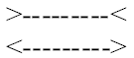
♦ фигуры одинаковой формы и размерности, но имеющие темный и светлый (в идеале — черный и белый) цвета, воспринимаются как различные, аналогичный контраст отличает плоскости или объемы одинаковой цветовой гаммы, но различной фактуры: светлое кажется большим, чем темное, теплые тона зрительно приближают предмет, ворсистая фактура поглощает свет, делая предмет более объемным, блестящее — наоборот — более компактным;
♦ из двух равных параллельных отрезков, симметрично расположенных между стремящимися к пересечению прямыми, более коротким представляется ближний к точке пересечения:
♦ прямоугольник, заштрихованный вдоль большей стороны, представляется более вытянутым, чем заштрихованный поперечными полосами:
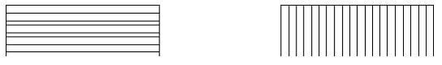
♦ прямые, пересеченные разнонаправленными наклонными линиями, воспринимаются как искривленные:
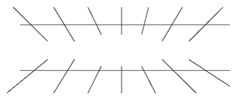
Пропорция
Пропорция — размерное соотношение части и целого, выступающее в виде математических соотношений. Однако пропорции связаны не с абсолютным значением величин, а с их выражением в художественной форме, т. е. выступают не как математическая характеристика предмета, а как его эстетическое качество. Сами пропорции не могут являться, с точки зрения формы, хорошими или плохими, гармоничными или хаотичными, они лишь отражают стереотип их восприятия, сложившийся в определенной культурной традиции. Таким образом, пропорции существуют объективно , но их качество целиком зависит от их субъективной оценки , где одни и те же математические соотношения могут восприниматься и как эстетически прекрасные, и как эстетически безобразные.
Степень пропорциональности раскрывается через соотношение линейных отрезков, а также в геометрическом подобии фигур. Эти соотношения могут быть нюансными, контрастными, кратными.
1. Нюансные соотношения образуются пропорциями, близкими 1 : 1. Они соответствуют таким качествам формы, как устойчивость, статичность, монументальность. Вместе с тем в многоэлементной композиции нюансные пропорции выглядят подчас излишне тяжеловесно и несколько прямолинейно. В тех случаях, когда пропорция максимально приближается к «правильной» (?), равновесие формы стремится к формальному, т. е. такому, где массы по обеим сторонам от вертикальной линии, проходящей через оптический центр, равны. Однако более предпочтительно в рекламе выглядит неформальное равновесие , создающее чувство движения , устремленности , активности — такое, где форма тяготеет к симметричной, но не полностью сбалансирована.
В тех случаях, когда соответствие относительно оси масс или объемов дополняется соответствием всех точек фигур, то правильнее говорить о симметрии.
2. Контрастные пропорциональные соотношения характеризуются резким различием величин объектов, соотносящихся как 1 : 8, 1 : 10 и т. п., что определяет динамику и стройность формы, ее векторную направленность даже при простой конструкции.
Некий промежуточный вариант от контрастной к нюансной пропорции представляет пропорция«Золотого сечения», близкая соотношению 1 : 0,6. Эта пропорция известна как создающая спокойную, уравновешенную, естественную для восприятия форму и сознательно применяется со времен египетской цивилизации. Во времена античности это числовое соотношение: а : b = b : (а + b ) использовалось при строительстве Акрополя архитектором Парфенона Иктином и проектировщиком Фидием, чьим именем и было названо иррациональное число, выражающее это соотношение (Ф = 0,61803398). Традиции Античности были актуализированы Возрождением, когда эта пропорция была вновь оценена по достоинству и названа Лукой Паччоли еще в 1509 г. «божественной», а Леонардо да Винчи — «золотым сечением».
3. Кратная пропорция характеризуется соотношением простых рациональных величин. Кратные пропорции различаются как равные —1 : 1, 2 : 2 и т. п. или модульные — 1 : 2, 2 : 4 и т. п. Безусловным положительным свойством кратных отношений становится простота реализации использующих их проектов, связанная с их стандартизацией. Причем, чем проще пропорциональные отношения величин и чем большее количество элементов общей формы они охватывают, тем большей становится эффективность их применения. Композиция при этом становится открытой и гибкой, способной к развитию, комбинаторности и поливариантности, где из мелких модульных элементов могут образовываться крупные формы. Одновременно эта унификация вне совокупности с иными художественно-выразительными средствами (фактурой, графикой, цветом, силуэтом и т. п.) может привести к примитивизации композиции, снижению ее собственно рекламного потенциала.
Наряду с пропорциональными отношениями отрезков существуют пропорциональные отношения двух- и трехмерных фигур и объемов : А : В = а : в; А : В : С = а : в : с и т. п., простейшее из которых — подобие. Подобие подразумевает наличие одинаковой формы у геометрических фигур, независимо от их размеров, когда соотношение расстояний между любыми парами соответствующих точек фигур F 1 и F 2 равно постоянному коэффициенту k .
Наряду с перечисленными существуют иные пропорциональные ряды:
а) арифметическая прогрессия , где каждое из последующих чисел отличается от предыдущего на одну и ту же величину:
а + ( n − 1) · d = an ;
б) геометрическая прогрессия , где каждое из последующих чисел получается из предыдущего умножением на постоянное число q — знаменатель геометрической прогрессии: 2, 8, 32, 128..., q = 4:
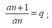
в) пропорциональный ряд Фибоначчи , вытекающий из пропорции «золотого сечения» (Леонардо Пизанский «Книга Абака»). Здесь каждое последующее число равно сумме двух предыдущих: 1 : 1 : 2 : 3 : 5 : 8 : 13 : 21 и т. п.;
г) взаимопроникающие подобия , где исходными фигурами становятся квадрат и прямоугольник, составленный из двух квадратов, «египетский треугольник с соотношением сторон 3:4:5;
д) пропорция 1 : Ц2 была предложена Джеем Хэмбиджем, разработавшим серию динамических прямоугольников, основным свойством которых была способность сохранять соотношение сторон при делении фигуры пополам, в четыре, восемь раз и т. п. Это соотношение 1:1,414 было отмечено как универсальное для периодических изданий немецким ученым Т. Оствальдом (так как при складывании газета сохраняла свои пропорции) и стало впоследствии мировым стандартом бумаги. Так, формат А2 = 420 594, A 3 = 297 420, А4 = 210 297;
е) пропорции , основанные на 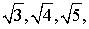 , где прямоугольник 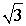 содержит три прямоугольника , прямоугольник 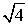 — четыре прямоугольника , прямоугольник — пять .
Рассмотренные пропорции лежат в основе модульной системы проектирования, где в расположении и соотношении основных структурных элементов устанавливаются пропорциональные соотношения. Простейшей основой моделирования являются бланк-макеты, определяющие границы верхних и нижних полей, колонтитулов, в макетах-стандартах разрабатываются типовые схемы полос. Основу большинства модульных сеток составляет универсальная система «Модулор», разработанная французским архитектором Ле Корбюзье .За основу числовых соотношений здесь взяты пропорции человеческого тела, а именно, три основные его точки: солнечное сплетение, макушка, пальцы вытянутой руки. Расстояния от земли до солнечного сплетения и от солнечного сплетения до макушки образуют крайнее и среднее отношения «золотого сечения». Числа, образованные этими величинами, и составляют ряд Фибоначчи: 113 — 70 — 43.
Симметрия и асимметрия
Симметрия и асимметрия. Симметрия — это свойство геометрических фигур, при котором все их элементы попарно расположены на одинаковых расстояниях от оси симметрии или плоскости симметрии. При центральной симметрии все точки фигуры перемещаются таким образом, чтобы соответствующие расстояния между ними и между ними и центром симметрии оставались неизменными.
Если симметричное расположение масс , объемов , элементов создает ощущение порядка и согласованности , то асимметрия , связанная со зрительным равновесием неравных элементов композиции , выглядит как более динамичная . В рекламной практике часто применяется достаточно сложный по форме принцип радиально-симметричной группировки, где центр симметрии находится не в геометрической середине плоскости, а в левом или правом верхнем углу. Симметрия может быть полной, но нарушаться каким-либо элементом:
а) набранным с выключкой вправо или влево фирменным знаком, заголовком, иллюстрацией;
б) развернутым под углом к горизонтали заголовком, строкой, слоганом (при этом угол наклона не должен быть больше 30');
в) незначительным отклонением от оси симметрии, формирующей нюансные соотношения.
Более яркой представляется не центральная , а осевая симметрия , причем не с горизонтальной ,а с вертикальной осью , что связано с исторически сложившимися особенностями восприятия в горизонтальной плоскости: слева — направо, или наоборот, отразившимися, в частности, в практике письма:
такая картинка воспринимается легче, чем аналогичная, но с горизонтальной осью симметрии:
По мнению некоторых ученых, освоение системы координат трехмерного пространства исторически происходило приблизительно так, как это происходит в процессе возрастного развития — в определенном порядке и с определенными закономерностями. Так, ощущение вертикали формируется в младенчестве, где ощущение комфорта и блага связано с топономой «верха» — это мать, тепло, сытость и т. п. Топонома же «низа» в большей степени ассоциируется с дискомфортными состояниями , в частности, преодолением тяжести собственного тела при первых самостоятельных движениях. В это время для закрепления условных рефлексов ребенку необходимо не менее 100 повторяющихся связей, прочно устанавливающих следующие ассоциации стереотипной системы основных вертикальных топоном:
Верх Низ
комфорт дискомфорт
хорошее плохое
протест (снизу — вверх) табу (сверху — вниз)
самоутверждение унижение
более высокий (= хороший, главный) более низкий (= зависимый)
Таким образом, восприятие вертикали имеет не столько эстетическую , сколько этическую природу , что непосредственным образом отражается и в речи. Здесь вертикальная топонома «верха» проявляется в таких словах и словосочетаниях, как «верховодить», «верх блаженства», «говорить с подъемом», «превосходство», «поднять престиж», «высота положения» и т. п. И напротив, такие выражения, как «не устоять перед соблазном», «упасть в чьих-то глазах», «упасть духом», «уронить достоинство» и т. п. — формирует топонома «низа».
Иное направление движения задается сагитталью (от лат. sagitta — стрела), т. е. направлением, проходящим вертикально спереди назад вдоль тела человека. Психологическое ощущение сагиттали формируется у ребенка при перемещении, независимом от воли «верха» — родителей. А. Я. Бродецкийотмечает энергетическую двухмерность этого пространства, где получение энергии осуществляется по вертикали, а ее трата — по горизонтали, таким образом, вертикаль существует как потенция, сагитталь — как кинетика.
Векторы сагиттали также имеют ярко выраженные ценностные свойства : фронт воспринимается как притяжение , тыл — как отторжение , фронт — видимая часть пространства — выступает как безопасная, тыл — как источник потенциальной опасности, фронт связан с представлениями о будущем, тыл — о прошлом. Поскольку визуальным аналогом тыла является фон, то и он становится топономой свершившегося, прошедшего. В речи сагиттальная топонома фронта проявляется в словах «будущее», «вперед!», «доступно», «достижимо», «близость», «цель» и т. п., топонома тыла, соответственно, — в словах «отстраненность», «вернуть», «попятиться», «недоступно», «обернуться», «прошлое».
Сагиттальные топономы весьма продуктивны в динамической рекламе , где время как бы устремляется к объекту — как, к примеру, это происходит в ролике о юноше, в отчаянии рвущем фотографию любимой и бросающем назад (!) ее обрывки, а затем, в надежде перешагнуть (пережить) прошлое, стучащем в монастырские ворота. Однако волшебный вкус Mars 'a позволяет герою вернуться в мир, обретя надежду и оптимистично смотря в будущее.
Восприятие горизонтали формируется позже сагиттального и вертикального, возможно, из-за того, что горизонталь не является векторной величиной (движение боком — противоестественно). Представления о «правом» и «левом», как отмечает А. Я. Бродецкий, связаны с функциональной асимметрией полушарий головного мозга , и главными становятся именно горизонтальная симметрия и асимметрия с вертикальной осью. Поскольку основным объектом общения для человека был сам человек, то симметрия стала признаком коммуникации, с фронта являясь знаком встречи, со спины — знаком прощания. При этом асимметрия фигуры, развернутой в профиль, символизирует ее нейтральность для коммуниканта, обозначаясь топономой «мимо». Таким образом, симметрия на подсознательном уровне выступает в качестве этического, а не эстетического свойства, где все симметричные предметы представляются обращенными к нам.
Между тем и фронтальное восприятие имеет свои особенности с его различением топоном «право» и «лево». Поскольку функциональная асимметрия человеческого тела такова, что наибольшая двигательная активность присуща правой его половине, постольку она и воспринимается потенциальным источником опасности. Как ведущую, «главную» ее воспринимали древние египтяне, греки правую руку считали источником добра, честности, силы, символом мужского начала, а левую, ассоциирующуюся с женским началом, — источником всех несчастий. И по сей день правила этикета предписывают расположение женщины слева от мужчины: таково расположение ведущих в телепередачах, шоу, презентациях, а также на плакатах, полотнах, в скульптуре (например, знаменитые «Рабочий и колхозница» Мухиной).
Горизонтальные ассоциации проявляют себя как наделяемые определенным ценностным содержанием и в речи: «правое дело», «праведник», «право», «правило», «правда», воплощающие позитивное начало, и негативные: «левачить», «левый» ^незаконный), «противоправный», «непоправимый», «неправдоподобие».
Определенную семантику имеет и направление движения: слева направо — значит , вперед и в будущее , справа налево — из настоящего в прошлое . Эта информация, воспринимаемая опять-таки на подсознательном уровне, становится одним из планов, к примеру, рекламного ролика Банка «Империал» с сюжетом о Цезаре, где основное движение справа налево вызывает ассоциацию с движением во времени, в прошлое.
Масштаб, динамика и статика
Масштаб — отношение длины линии на чертеже, проекте, макете к длине соответственной линии в натуре, система соразмерностей рекламных объектов с человеком. Масштаб соотносится со следующими факторами :
♦ психофизиологическими особенностями восприятия , к примеру, шрифта, читаемого с расстояния, наружной рекламы, расположенной вдоль автомобильной трассы, на понимание которой должно уходить не более нескольких секунд;
♦ назначением рекламных объектов , их непосредственными функциями (витрина или щит наружной рекламы, афиша или упаковка , тара или рекламный проспект);
♦ внутренними закономерностями построения композиции , обусловленными ее эстетическимисвойствами;
♦ образом рекламируемого объекта (реклама мыла или порошка по масштабу должна быть иной, чем реклама машины или дома).
Мелкий масштаб в наружной рекламе характеризуется, в большой степени, уменьшением размеров объекта, его детально проработанными формами, сложным силуэтом, мелкой фактурой. В печатных изданиях в мелкомасштабной рекламе для исключения излишней дробности композиции акцент делается на средства, гармонизующие форму, — единую силуэтную линию, гармоничную хроматическую тональность и т. п.
Крупный масштаб отличает объекты, расположенные на значительном расстоянии от человека, размещаемые на открытых пространствах или в верхних поясах зданий. Как правило, эти произведения характеризуются лаконичностью, отсутствием детализации, большими размерами. Вместе с тем крупный масштаб может присутствовать и в рекламе, размещаемой в периодических изданиях. Здесь специфику масштабности будет определять соотносимость данной рекламы с иными, размещаемыми в непосредственной близости, а специфику формы — выделенные в композиции ведущие компоненты: фирменный знак, логотип, название фирмы, визуальное изображение рекламируемого объекта. Именно эти основные элементы определяют свойства формы, однако столь же велико здесь влияние второстепенных (например, надписей), которые могут усиливать ощущение масштабности или разрушать его: крупные элементы могут «переукрупнить» форму, придать ей излишнюю тяжеловесность.
Выражение масштаба определяется некоторыми закономерностями:
♦ масштаб зависит от степени члененности формы — чем больше ее члененность, тем более крупным воспринимается размер композиции и более мелким масштаб, и наоборот;
♦ создание масштаба связано с направленностью членений формы — гораздо ярче воспринимаются горизонтальные членения, чем вертикальные;
♦ на объект информации активное влияние оказывает контекст, в котором он пребывает: предметы реального или условного пространства больших размеров зрительно уменьшают масштаб рекламы, сочетающейся с ними. Та же закономерность определяет различие рекламы в макете, на чертеже, проектируемой как масштабной, и ее же в реальной среде, масштабно становящейся как бы более мелкой.
Динамика и статика выступают в качестве художественных средств гармонизации пространства, предполагающих такое соотношение между его элементами, при котором достигается психологическое ощущение движения или равновесия. Отсюда — простейшими способами создания динамичности или статичности становятся симметрия и асимметрия. Однако и асимметричные композиции могут выглядеть статичными, если набраны однородным шрифтом без каких-либо членений плоскости или в случае расположения в одной рамке равнозначных и равновеликих комплексов. Противоположным образом складывается динамичная композиция, где основным средством ее организации становится ведущая диагональ, соединяющая левый верхний и правый нижний углы.
Одним из средств динамизации формы является ритм (от греч. rhytmos — стройность) — чередование каких-либо элементов (звуковых, речевых, пластических, живописных), происходящее с определенной периодичностью, частотой, иными словами, их пространственная и (или) временная организация. Понятие ритма сформировалось в гомеровскую эпоху древнегреческой истории и было связано с практикой аэдов и рапсодов — сказителей, придающих для удобства запоминания своим поэмам ритмическую форму со строгим соотношением ударных и безударных слогов, которая получила название «стих» (первоначально — название боевых шеренг). Таким образом, и понятие «стих» и понятие «ритм» означали особую организацию времени в литературном произведении.
В рекламе ритм выражается в таком распределении информации, которое естественным образом приводит внимание зрителя к наиболее важной зоне сообщения. Ритм придает форме , во-первых, особый порядок и стройность , делая ее ясной , обозримой . Во-вторых, посредством создания определенных схем повтора — так называемых «паттернов» (от англ. pattern — образец) — ритм помогает сократить время восприятия формы , предвосхищая ее. Наконец, определенное расположение ритмических образцов способствует созданию различного эмоционального ощущения: легкости, медлительности, капризности, спокойствия (так, ритм определяют как «мерный», «спокойный», «рваный»).
Определенными статичными или динамичными свойствами обладают и геометрические фигуры ,составляющие основу композиции или являющиеся ее частью (это, к примеру, контуры предметов, таблицы или диаграммы, символы, фирменные знаки). Так, куб воспринимается сознанием как малоподвижный, тяжелый, прочно покоящийся на плоскости, круг — как нечто завершенное, замкнутое в себе. Овал, в отличие от круга, предстает как форма беспокойная, динамичная, содержащая потенцию к модификациям, квадрат — как нечто идеально правильное, четкое, прямое. Симметричный относительно вертикальной оси треугольник — форма статичная, устойчивая, спокойная и одновременно устремленная вверх, если тот же треугольник смещен относительно горизонта (это замечание оказывается справедливым ко всем формам, кроме круга), то он воспринимается как необычайно динамичная, беспокойная форма, полная движения и экспрессии.
Весьма часто простейшие геометрические формы становятся вспомогательным средством для гармонизации композиции, определенным образом организуя и локализуя художественное пространство. Более того, сам этот геометрический композиционный остов становится чуть ли не основным средством выразительности произведения, характеризуя его как принадлежащее определенному историческому стилю или стилю индивидуальному. Так, композиции эпохи классицизма с его культивированием порядка, гармонии, стройности стремятся к симметрии (это трехчастные репризные и — как вариант — сонатные формы в музыке, часто имеющие аркообразные обрамления в виде вступления и Cod ’ы, это симметричные структуры в архитектуре и рационально выстроенные, как бы вписанные в геометрические фигуры — чаще — треугольник — живописные композиции).
Этим геометрическим фигурам как бы противостоят линия , клетка , точка , плоскость , ставшие в качестве оригинальных структурообразующих компонентов основой творческого метода А. Родченко . Линии, которые сам Родченко назвал «последней формой», в работах художника образуют определенную конфигурацию — они развертываются в пространстве по принципу гиперболически свернутой поверхности, образуют устойчивые каркасы, напоминают различные траектории движения. Все принципы формообразования являются универсальными для любого метода художественного конструирования, в том числе и для рекламы, аналогичным образом наполняя художественное пространство определенным смыслом и окрашивая его эмоционально.
Типы композиций в статичной рекламе
Методы формообразования в рекламной графике исходят от выдвижения на первый план композиции тех или иных ее элементов, но, в общем, их можно условно рассматривать как изобразительные (такие, где основным структурообразующим элементом становится изобразительный) и текстовые (на первый план выдвигается заголовок и текст). Остальные же (и их большинство) представляют смешанные, промежуточные варианты двух названных.
Наиболее универсальный метод формообразования — «Мондриановский проект» носит название по имени нидерландского художника Пита Мондриана (1872–1944) Мондриан считается создателем неопластицизма — стиля, основанного на абстрактных соотношениях прямоугольников, окрашенных в контрастные основные цвета. Именно этот структурный принцип оказался весьма продуктивным в рекламном дизайне, так как позволил объединить единым композиционным принципом принципиально различные элементы: фотографии, рисунки, тексты, товарные знаки и т. п. Вариантом этой формы является так называемая «решетка», где в воображаемых ячейках-прямоугольниках помещаются иллюстрации предметов, а заголовок и текст, соответственно, открывают и завершают композицию.
На изобразительных принципах основан так называемые методы «картина-окно» (window -picture ), «силуэтный проект» и проект, построенный по принципу комиксов. В методе «картина-окно» основная семантическая и художественная нагрузка возложена на иллюстрацию, занимающую до 9/10 общей площади (иногда крупная иллюстрация заменяется двумя-тремя более мелкими одинакового размера и расположенными вместе). Как правило, картинка здесь помещается в верхней зоне изобразительного пространства, но может располагаться и произвольно, сохраняя неизменным принцип ее доминирования. Иллюстрация сопровождается крупным заголовком и лаконичным текстом.
В «силуэтном методе» и текст, и изобразительные элементы образуют формы с общим силуэтом, т. е. основной текст набирается таким образом, что своим неровным краем как бы «обтекает» силуэт иллюстрации. Очевидно, что иллюстрация, помещенная в таком проекте в центр композиции, занимаемым собой пространством будет разрывать строчки и снижать скорость прочтения информации, затрудняя восприятие. В связи с этим иллюстрация в «силуэтном проекте» помещается в левый или правый край формы, а элементом, уравновешивающим общую структуру, становится крупный заголовок. Этот метод заимствован у американского художника Джона Арпа, в своих работах так располагающего различные неправильные формы, что создавалась иллюзия их взаимообусловленного движения.
В проекте, построенном по принципу комиксов ,словно в кадрах кино разворачивается во времени какая-либо история, происшедшая с потенциальным потребителем или владельцем рекламируемого товара. Именно это свойство комиксов — выход в темпоральную протяженность — дает проекту дополнительные возможности в виде визуализации принципа «купи, а то пожалеешь». Естественно, что данный метод весьма специфичен, так как требует для восприятия достаточного количества времени и может, соответственно, применяться ограниченно — например, в транспорте (как это сделано в известной рекламе метро, представляющей серию из жизни космических пришельцев, жизненно нуждающихся в электробытовых приборах магазина «Мир»). Подобный подход как наглядный, эмоциональный, простой для восприятия хорош и для политической рекламы — такого рода сообщения представляли, в частности, «Окна РОСТА» В. Маяковского.
Среди текстовых методов формообразования выделяются проекты «широкого пространства» и «сильной истории». Метод «широкого пространства» предполагает наличие тяжелого заголовка, который оказывается единственным крупным элементом композиции. Иллюстративный ряд в подобного типа рекламе представлен не так ярко, текст же может иметь разный объем, но масштабно он несопоставим с заголовком.
В методе «сильной истории» основное внимание уделяется как раз тексту, в то время как изобразительные элементы лишь его иллюстрируют. Достоинством такого типа рекламы становится возможность передачи подробной информации о типах товаров и услуг, включающей как их потребительские характеристики, так и цены, возможность ремонта или замены устаревших конструкций на модернизированные, условия эксплуатации. Иногда данный проект представляет не рациональную информацию, но создает художественными средствами эмоциональную характеристику товара — так, к примеру, задумана рекламаFord ' a Ka :
«В супермаркете было мало народу. Его сын в свои 5 лет был очень обстоятельным человеком и обследовал все прилавки до единого. Два раза в месяц они встречались после развода, и сыну позволялось все.
В узком проходе между полками сын зацепил тележкой чей-то легкий плащ. Хозяйка плаща обернулась, лицо у нее оказалось не сердитое, а удивленное, и почему-то даже радостное.
О чем они говорили, он не запомнил. «…Да… у меня тоже… конечно… да, вот так…» Остался в памяти лишь ее голос и аромат свежести. У кассы он зачем-то пропустил ее вперед. Она расплатилась, улыбнулась в последний раз и помахала им рукой.
Через окно он увидел, как она села в удивительно красивый автомобиль, такой же, как она сама, и исчезла.
«Папа, ты взял у нее телефон?» — спросил сын, серьезно глядя на него снизу вверх.
«Взял», — соврал он, в душе кляня себя за несообразительность.
«Хорошая у тебя будет подружка. Даже самая лучшая», — подытожил сын.
Он промолчал, понимая, что это было бы действительно так».
В смешанных методах: «круговом проекте», «проекте-рамке», «проекте-ребусе» — используется чередование текстовых и изобразительных элементов. В «рамочном проекте» иллюстрации располагаются таким образом, что, обрамляя композицию по краю, образуют раму для текста, который помещается в центре объявления. Как правило, в такой композиции заголовок бывает достаточно крупным.
В «круговом методе» отдельные изображения чередуются с соответствующим текстом, образуя своеобразные блоки информации. В такой композиции доминирующим остается крупный заголовок, а сама информация располагается таким образом, чтобы обеспечить ее последовательное восприятие. «Круговой метод» максимально соответствует задачам презентации разного вида товаров — однотипных, но различающихся настолько, чтобы это различие требовало бы письменного разъяснения (так, в частности, оформлены различного рода каталоги товаров).
«Ребусный проект» состоит из ряда изображений, расшифровка которых позволяет прочитать текст.
Цит. по: Основы рекламы: учебное пособие /
А.В. Костина, Э.Ф. Макаревич, О.И. Карпухин. — М.: КНОРУС, 2006. — С. 261-286
Тема 2. Формирование рекламного текста
Выбор места, метода и методики исследования, а также типа опросов для изучения мнения потребителей является важной задачей для получения результатов, которые могут быть использованы для увеличения привлекательности предложения и расширения числа потребителей. Но не менее важно правильно оценить полученную информацию, например, по важности полученных терминов, выражений, а также умение эти факты эффективно представить в коммуникации и оформить так, чтобы получить отклик от потребителей.
При проведении мероприятий по изучению мнения потребителей исследователь получает от респондентов множество фактов, из которых необходимо выделить желаемое большей частью потенциальных потребителей. Остальные результаты также представляют интерес для определенной категории потребителей, поэтому для продавца (производителя) использовать всю полученную информацию было бы разумным шагом.
Рекламная компания, проводимая любой организацией, как правило, не разовая акция и, соответственно, оценить и распределить результаты надо так, чтобы их можно было использовать в мероприятиях, которые проводятся в несколько этапов.
При формировании коммуникаций необходимо также учитывать тип потенциальных потребителей и их эмоциональный уровень — постоянный, который сложился в обществе под воздействием разных факторов или временный по отношению к конкретному предложению. Если коммуникации формировать без знания типа потребителей, то значительная часть аудитории покупателей может на информацию не откликнуться, даже если она им понравилась. А формирования коммуникаций без учета эмоционального уровня потенциальных потребителей может привести к негативному восприятию информации и, соответственно отсутствию желания у покупателей — встретиться, договориться, купить.
Цель и задачи
Цель — ознакомить слушателей с принципами выбора, отбора и использования результатов, полученных при проведении опросов для формирования коммуникаций.
Задачи:
научить слушателей уметь оценивать результаты и использовать их для формирования коммуникаций, в виде рекламного текста;
научить корректировать коммуникацию, в зависимости от типа потребителей и их эмоционального уровня.
Изучение потребителей
Если предложить любому человеку подготовить рекламный текст, то эта задача, даже при наличии практического опыта, представит значительную трудность. Основная проблема заключается в том, что разработчику коммуникаций трудно ориентироваться в той информации, которая у него имеется, то есть выбрать наиболее ценное для потребителей. А при отсутствии фактов или их незнании разработчику рекламных материалов приходится восполнять отсутствующую информацию за счет собственной фантазии, что может привести к невосприятию коммуникации покупателями или привести к вольному или невольному обману.
Как правило, при разработке коммуникаций разработчик исходит из собственного восприятия проблемы, которую он готовится представить вниманию потребителей. Например, если предложить кому-либо сформировать рекламные материалы для представления потребителям шампуня, то в коммуникации, в той или иной степени будут присутствовать следующие позиции:
1) В ней будут отражены проблемы, которые связаны с состоянием волос того, кто занимается разработкой коммуникации. В таком случае каждый думает, что они свойственны большинству окружающих.
2) В ней будут представлены результаты, которых хочет добиться или получить разработчик. Он предполагает, что этих результатов хочет добиться большинство потребителей.
3) В коммуникациях также будут присутствовать мотивы или причины, которые разработчик учитывает при выборе и приобретении товара. Ему кажется, что они присущи всем.
4) Коммуникация будет учитывать проблемы, которые испытывает близкое окружение разработчика коммуникаций. Ему будет казаться, что это мнение широкой аудитории потребителей
5) В коммуникации будут учтены факты (свойства, проблемы, результаты), которые представляются при рекламе аналогичных или подобных предложений. Разработчик рекламы может подумать, что она отражает проблемы потребителей и желаемые результаты.
6) В коммуникации будут использованы элементы рекламы, которые представляют потребителям производители и продавцы аналогичных товаров и кажутся очень эффектными и эффективными. Не зная методов и приемов эффективного формирования рекламы, можно отдельные элементы неправильно (непрофессионально) воспринять и включить в рекламу.
7) При формировании коммуникаций, разработчик рекламного проекта будет опираться на чувства или эмоции, которые он испытывает, после пользования товаром. Ему кажется, что все потребители испытывают аналогичные эмоции.
8) И, без всякого сомнения, любой разработчик будет включать, и использовать элементы, позволяющие выделиться среди аналогичных или подобных предложений и отличиться, например, чем-то удивить — поразить потребителей.
Но если у разработчика рекламных материалов есть результаты опросов, то формирование коммуникаций значительно упрощается.
Получение результатов
Ниже представлены результаты изучения мнения потребителей по следующим позициям:
Какими мотивами или причинами они руководствуются при выборе товара?;
Какие свойства товара, им наиболее нравятся?;
Какие чувства они испытывают после использования товаром?
Опрос проводился среди молодежи 18–20 лет, около 90% которых были представительницами женского пола. Основная часть респондентов являлись студентами среднего специального учебного заведения (колледж), не имеющими дополнительного заработка. В качестве основной задачи опроса следовало выявить, что может побудить молодежную и не самую обеспеченную категорию потребителей купить шампунь.
Изучение мнения потенциальных потребителей проводилось с использованием следующих вопросов:
ОПРОСНЫЙ ЛИСТ
1. Пользуетесь ли Вы шампунем?
2. Какими мотивами или причинами Вы руководствуетесь, когда выбираете и покупаете шампунь?
3. Какие качества или свойства выбранного шампуня Вам наиболее нравятся?
4. Какие чувства вы испытываете после пользования любимым шампунем?
5. Будет ли для Вас цена иметь главное значение при решении купить шампунь с отмеченными вами свойствами?
Оценка результатов
Все респонденты, принявшие участие в опросе, ответили положительно на вопрос, пользуются ли они шампунем.
При положительном ответе на первый вопрос опрос респондентов продолжается без изменений. При ответе «Нет» опрос может быть продолжен, если использовать другую систему вопросов, чтобы выяснить причины, мешающие респонденту воспользоваться предложением. Измененные вопросы могут иметь следующий вид:
— По каким причинам вы не покупаете товар?
— Что вам не нравится в нем или раздражает?
— Вы о нем не слышали или не покупаете по другим причинам?
— Что, на ваш взгляд, может изменить мнение о нем?
— Что, по вашему мнению, может повысить его привлекательность?
Ответы на второй вопрос составили 28 позиций — слов, терминов, выражений, которые потребители считают своими мотивами или причинами при решении купить шампунь. Можно привести некоторые типы ответов на третий вопрос:
— реклама, цена, наличие в продаже,
— тип волос, качество шампуня,
— марка (производитель), приятный запах,
— результат после использования,
— удобная упаковка, красивая упаковка.
Среди них есть позиции — мнение потребителей, которые можно в бо льшей степени отнести к мотивам или причинам (реклама, цена, удобная упаковка), а некоторые позиции учитывают результаты использования шампуня. Таким образом, слова «мотивы и причины», которые использовались при формулировке вопроса, для отдельных потребителей имеют различное значение.
Закрытый тип формируется исходя из личного мнения разработчика, как о товаре, так и о потребителях. И очень трудно представить, что кто-то может предположить наличие такого количества позиций, отражающих мотивы и причины, которые потребители учитывают при выборе товара. Но, если их не знать, и не внести в опросный лист, то нельзя выяснить их наличие, а, следовательно, не узнать приоритетность и использовать при представлении потребителям коммуникаций для получения понимания и отклика.
При ответах на третий вопрос, о свойствах шампуня, было получено 25 позиций, которые, по мнению потребителей, наиболее выгодно характеризуют свойства покупаемого товара. Вот некоторые из них:
— запах, цвет, уход за волосами,
— придает объем, питает витаминами,
— бережный уход, пышность,
— оздоровление волос и кожи головы,
— защита волос, тип волос,
— устраняет ломкость волос и перхоть,
— волосы живые и блестящие,
— питает и увлажняет волосы,
— придает блеск, хорошо пенится, цена,
— эффективность, укрепление волос,
— защищает от солнца,
— волосы легко расчесываются, становятся мягкими.
Рассматривая приведенные слова, термины и выражения, можно отметить, что некоторые из них относятся непосредственно к свойствам шампуня, например, такие как запах, цвет, хорошее пенообразование, то есть отвечают на поставленный вопрос. Но большинство приведенных ответов, например, легкое расчесывание, устранение ломкости волос и перхоти, характеризуют результат, который хотят получить потребители. То есть и в данном случае у респондентов свойства ассоциируются с результатом, то есть качеством.
При ответах на четвертый вопрос было получено более 20 позиций, которые воспринимаются потребителями как чувства или эмоции. Можно привести некоторые типы ответов:
— волосы послушные и голова не чешется,
— волосы шелковистые и ухоженные,
— свежесть, легкость, приятные ощущения,
— ощущение чистой головы и мягкость волос,
— запах и объемная обильная пена,
— легко расчесываются и становятся шелковистыми,
— увеличивается объем и уменьшается ломкость волос,
— хорошо лежат и хорошо выглядят,
— приятное прикосновение к волосам,
— волосы живые, мягкость соприкосновения с кожей головы.
Часть ответов можно воспринимать как чувства, например, такие, как свежесть, легкость, удовольствие, радость, а некоторые явно относятся к результатам использования: волосы шелковистые и ухоженные, легко расчесываются. То есть для некоторых респондентов чувства ассоциируются с результатом, которые они достигают или хотят достигнуть при пользовании шампунем.
Все приведенные типы ответов респондентов по трем вопросам (вопросы 2–4 опросного листа) можно отнести к качественным характеристикам.
На пятый вопрос, о значении цены, 65% респондентов ответили «Не имеет значения», 35% респондентов указали, что для них цена имеет значение. Исходя из полученной информации, можно предположить следующее:
если в рекламном предложении отметить свойства — результаты, которые отметили потребители как главные, то большинство не будет рассматривать цену как решающий фактор при покупке;
если в коммуникации выделить эмоции — результаты, которые потребители испытывают при пользовании шампунем, то цена также не будет являться решающим фактором.
Обработка результатов
Слов, терминов, понятий, выражений, полученных в результате опросов респондентов, может хватить для формирования значительного количества рекламных материалов и проводимых на их основе мероприятий. Однако для формирования коммуникаций используются только те слова, термины и выражения, которые выделяют для себя большинство респондентов как мотивы или причины, свойства или чувства. Например, при опросе 100 респондентов 66 из них отметили бренд или марку в качестве основного мотива приобретения конкретного товара. А 60 респондентов при ответе на вопрос о свойствах отметили позицию приятный запах .
Слова, термины и выражения, которые при опросе используют большинство респондентов, специалисты США называют ключевыми словами или опорные точки . Данные обозначения можно интерпретировать как позицию специалистов по использованию полученных результатов. То есть при составлении рекламного текста (слогана) специалисты опираются на них как на основу для разработки коммуникаций, которые могут найти положительное восприятие у потребителей.
«Опорные точки», которые потребителя назвали в качестве основных позиций и которые для них важны при выборе товара, всегда включаются в текст и выделяются для того, чтобы потребители в первую очередь встретились с ними. Если потребитель встречается в рекламе с тем, что он ожидает, то можно рассчитывать на понимание и отклик.
Ниже приведены результаты изучения мнения потребителей после обработки и выделения «Опорных точек».
Результаты, полученные при ответе на третий вопрос, выглядят следующим образом:
удобная (красивая) упаковка — 66%;
хороший запах — 66%;
фирма (изготовитель) — 33%;
качество — 33%.
Результаты, полученные при ответе на четвертый вопрос, выглядят следующим образом:
легко расчесываются — 66%;
мягкость — 66%;
шелковистость — 33%;
состояние волос — 33%;
запах — 33%.
Результаты, полученные при ответе на пятый вопрос, выглядят следующим образом:
удовольствие — 50%;
свежесть — 33%;
чистота волос — 33%.
При рассмотрении материалов темы: «Места и методы изучения потребителей» было отмечено, что при наличии особых характеристик товара или для привлечения внимания к предложению узкой — специальной аудитории потребителей могут быть проведены опросы респондентов с выборкой по половому признаку или с учетом возраста.
Для оценки влияния возраста и материального положения на мотивы или причины, которые потребитель учитывает при выборе товара, ниже представлены результаты опроса потребителей в возрасте 35–45 лет и, которых по доходам можно отнести в средней группе потребителей. Респонденты отвечали на вопросы опросного листа, который приведен выше при опросе молодежной части потребителей.
Типы ответов на второй вопрос:
качество, восстановление волос и питание витаминами,
неповторимость, оригинальность, марка (производитель),
попробовал — понравился, тип волос, цена,
натуральная компонента, советы знакомых, срок хранения.
После обработки результатов в качестве опорных точек можно использовать в коммуникациях следующие слова и выражения:
чистые волосы, гладкость и мягкость волос, приятно голове,
мягкость и пышность, легко расчесываются, шелковистость,
объем, здоровье, расслабленность и чувство уверенности.
После обработки результатов в качестве опорных точек можно использовать следующие слова и выражения:
мягкость и пышность волос — 50%;
легкость — 25%;
волосы чистые — 25%.
Ответы на пятый вопрос: «Нет» — 83,3%; «Да» — 16,7%.
Приведенные результаты изучения мнения разных возрастных групп, которые отличаются материальным положением, показывают, что их мотивы и причины в некоторых позициях, на которые они обращают внимание при выборе шампуня, совпадают, например приятный запах, но в основном отличаются (табл. 7).
Таблица 7
№ вопроса
Результаты респондентов молодого поколения
Результаты респондентов старшего поколения
2
Удобная упаковка, хороший запах — 66%, фирма —
изготовитель, качество — 33%
Тип волос – 50%, качество — 33%
3
Легко расчесываются, мягкость — 66%; шелковистость,
состояние волос, приятный запах — 33%.
Приятный запах — 66,7%
4
Удовольствие — 50%; свежесть, чистота волос — 33%
Мягкость и пышность — 50%; легкость, волосы чистые — 25%
5
«Нет» — 65%; «Да» — 35%
«Нет» — 83,3%% «Да» — 16,7
Поэтому, если товар по своим свойствам или назначению ориентирован, в основном на какую-то целевую группу, то целесообразно изучать их мнение и при выборе респондента для опроса необходимо оценивать по внешним признакам принадлежность к выбранной категории (пол, возраст и т.д.)
Какие результаты можно считать и использовать в качестве «Ключевых слов» и «Опорных точек» после обработке результатов и при формировании коммуникаций зависит от многих факторов. Например, выбор слов, терминов и выражений зависит от количества и категории покупателей, которые могут иметь интерес к предложению и, соответственно — продолжительности рекламной компании, а также форм и методов ее проведения. Автор при изучении мнения потребителей в сфере образования, крепких спиртных напитков, средств коммуникаций (связи) и шампуней в качестве «Ключевых слов» выбирал результаты, которые имели поддержку у 25 респондентов и выше.
Формирование коммуникации
Мотивы, причины, свойства, результаты и эмоции, которые получены в результате изучения потребителей, могут быть использованы для формирования коммуникаций в виде рекламного текста (слогана) при соблюдении нескольких правил.
Первое правило говорит о том, что, ни в коем случае нельзя менять или корректировать полученные результаты. При опросах респондентов, специалист получает слова, термины, выражения, которыми потребитель выражает свое мнение о товаре и дает ему оценку. Может быть эти выражения, по мнению специалиста-профессионала не правильные, не верные или не правильно отражают, например характеристики объекта продажи. Но, именно, то, что назвал потребитель, отражает его восприятие ценностей конкретного товара и характеризует причины и мотивы, которые он учитывает при выборе предложения; только увидев их, он может правильно воспринять, оценить предложение и согласиться общаться, то есть встретиться, договориться, купить. Во всяком случае, перед специалистом, который получил результаты не остается выбора, а именно он должен, или пытаться перевоспитать потребителя, или согласиться с ним и использовать те слова и выражения, которыми пользуется он.
Второе правило предупреждает о том, что не следует рекламную фразу (слоган) насыщать «Опорными точками» по следующим причинам.
Сами по себе «Ключевые слова» не несут никакого смысла. Например, если перед любой аудиторией произнести некоторый набор слов и выражений, которые были получены в результате опросов, например — марка, приятный запах, удобная упаковка, то они не поймут о чем идет речь. Эти выражения и слова имеют или приобретают смысл только в контексте фразы, которая представляет товар покупателям. И если, насыщать фразу полученными результатами, то она может потерять смысл по отношению к продвигаемому предложению. Кроме того, по мнению и рекомендациям специалистов в области рекламы, рекламная фраза не должна содержать более 8–12 слов для полноценного восприятия смысла потребителями.
Прежде всего, «Ключевые слова» служат для того, чтобы в первую очередь привлечь внимание потребителей и остановиться на коммуникации. И, если этих слов будет много, то их наличие помешает сконцентрировать внимание потенциальных потребителей на отдельных представленных «ценностях», положительно характеризующих предложение перед покупателями. В таком случае, внимание читателей-слушателей может рассеяться и коммуникация не воспримется.
Как правило, рекламные компании, планируемые организациями, проводятся в несколько этапов, и, целесообразно полученные результаты распределить на проведение нескольких акций. Например, на первом этапе, для привлечения внимания максимальной аудитории потребителей можно взять слова, термины и выражения, которые отметило большинство респондентов.
В таком случае, после первого этапа рекламной компании, какая-то часть предполагаемой аудитории потребителей может откликнуться на следующие слова, термины, выражения, такие как — приятный запах, мягкость и удовольствие.
После этого, при подготовке следующей рекламной акции в виде коммуникации можно использовать другие «Опорные точки», например — шелковистые, легкость, для привлечения внимания другой части потенциальных потребителей.
Для третьего этапа можно использовать мотивы и ценности, которые представляют интерес для потребителей, но они не были использованы на первом и втором этапе рекламной компании, например, — легко расчесываются, качество и свежесть.
Иначе говоря, из «Опорных точек» формируются связки слов и выражений, и на их основе формируется рекламный текст (слоган). Например, коммуникация может быть представлена потенциальным потребителям в следующем виде: Только ШАМПУНЬ «УДОВОЛЬСТВИЕ» обладает великолепным устойчивым ПРИЯТНЫМ ЗАПАХОМ и обеспечит МЯГКОСТЬ вашим волосам .
Третье требование по использованию «опорных точек» при формировании рекламы может быть сформулировано следующим образом. Некоторые слова, термины и выражения нельзя использовать, так как они требуют конкретного представления того, к чему они относятся. Например, если сказать кому-либо о том, что видел очень красивую машину или шубу, то это не произведет на аудиторию никакого впечатления, так как категория — красивая имеет для каждого свой смысл. И прежде чем добиться согласия с аудиторией по поводу того, что считать красивым, необходимо представить этот предмет для осмотра и обсуждения.
В приведенных результатах опроса приведены такие «Ключевые слова», как — красивая упаковка и удобная упаковка. Использование их в рекламной фразе затруднено или даже невозможно, так как потребитель посчитает такое представление шампуня как обман, потому что неизвестно, какой товар — шампунь имел в виду респондент, говоря об удобной упаковке. Однако такие результаты можно использовать для эффективного влияния и воздействия на значительный контингент потребителей при формировании рекламных материалов в виде рекламных блоков или сюжетов, если провести дополнительные исследования и узнать, что имел в виду потребитель. То есть, перед тем как использовать такие результаты необходимо провести опросы респондентов и выяснить с каким товаром у потребителя ассоциируется — удобная или красивая упаковка.
Причем для того, чтобы рекламная фраза, основанная на использование таких слов и выражений как удовольствие или приятный запах оказывала большее воздействие на потенциальных потребителей, лучше им представить нечто, что ассоциируется у них с представленными фактами.
Корректировка коммуникаций
Выше приведенная рекламная фраза — коммуникация «Только ШАМПУНЬ «УДОВОЛЬСТВИЕ» обладает великолепным устойчивым ПРИЯТНЫМ ЗАПАХОМ и обеспечит МЯГКОСТЬ вашим волосам », основана на свойствах, результатах и эмоциях, которые потребители считают для себя важными. Этих характеристик они ждут от товара и готовы заплатить средства, то есть — купить его. Безусловно, что такая коммуникация должна привлечь внимание и вызвать отклик со стороны определенной категории потребителей, так как основана на том, с чем потребитель заранее согласен. Однако, если не учитывать некоторые нюансы поведения или состояния определенной аудитории потребителей, то реклама, даже, нашедшая понимание и положительное восприятие, не приведет к тому, что потребитель купит товар. К основным нюансам состояния и поведения потребителей можно отнести — тип потребителей и их уровень эмоций.
Типы потребителей
В конце 80-х годов прошлого столетия в журнале «Изобретатель и рационализатор», очень далеком от политики издании, были опубликованы короткие результаты исследования населения СССР. Эти исследования проводились по поручению ЦК КПСС, Совета Министров СССР, которые были обеспокоены невысокими достижениями в экономике.
Исследования, которые проводили социологи, психологи, медицинские работники затронули многие социальные слои населения по всем регионам СССР.
Полученные результаты были представлены в следующем виде:
около 8–10% населения были отнесены к умственно неполноценным людям (дауны, олигофрены, дебилы и т.д.);
из остальной части, то есть из 90% около 44% были представлены, как люди, не умеющие думать. Это очень большой контингент населения, который имеет некоторую специфику в своем поведении.
По всем внешним признакам это обыкновенная категория людей, которые ничем не отличается от окружающих и способны добиться успеха во многих сферах деятельности, в том числе в бизнесе. То есть это вполне нормальные люди, но в основном действующие по команде со стороны окружающих, а именно — сходи, принеси, подготовь, приезжай и КУПИ. Какой-либо сложный анализ ситуации, сравнения и выводы, ассоциативное восприятие информации и проблемы им недоступны. По мере накопления жизненного или профессионального опыта, они могут действовать самостоятельно для решения каких либо, как правило, незначительных проблем и делая выбор.
Не исключено, что в течение 90-х годов прошлого столетия категория таких людей-потребителей увеличилась, так как очень много творческих и инициативных личностей рано ушли из жизни. В любом случае эту значительную категорию потребителей нельзя исключать из внимания при продвижении на потребительский рынок своих предложений.
При общении с такой обширной группой потребителей необходимо этот фактор учитывать. То есть, даже если производитель или продавец сделали хорошую рекламу — она понравилась и создала эмоциональный импульс, но не предложила действовать, а именно — позвонить, придти, подъехать, купить, то потребитель может не откликнуться.
Поэтому, выше приведенная коммуникация для такой категории потребителей должна выглядеть следующим образом: Только ШАМПУНЬ «УДОВОЛЬСТВИЕ» обладает великолепным устойчивым ПРИЯТНЫМ ЗАПАХОМ и обеспечит МЯГКОСТЬ вашим волосам. КУПИ «УДОВОЛЬСТВИЕ» и поделись с друзьями .
Команда или сигнал действовать может и должна быть разной в зависимости от аудитории потребителей товара. Отдельная категория потенциальных потребителей, например занимающая высокое положение может воспринять команду — купи, как жесткое давление на личность и, по многим причинам отказаться от сотрудничества. Поэтому, при выборе слов и терминов, которые предполагается использовать в коммуникациях, надо ориентироваться на аудиторию и использовать разные типы, а именно купи — жесткая команда, или используй, насладись, попробуй — мягкий посыл.
На рынке рекламной продукции можно наблюдать коммуникации в виде рекламного слогана или рекламного блока (сюжета), где компании для создания отклика используют слова или выражения понуждающие действовать.
Например, на каналах телевещания демонстрируется рекламный блок, в котором страховая компания, предлагая свои услуги в области страхования транспортных средств, использует следующую рекламную фразу (слоган): «Продлеваете автогражданку? Позвоните в РОСНО! РОСНО знает, как потратить меньше на автогражданку». Эта реклама иллюстрирует использование команды действовать, а именно — позвонить. Однако насколько в данном случае правы были те, кто при формировании коммуникации использовал жесткий посыл трудно предположить, не зная аудиторию потенциальных потребителей.
Агрессивность информации (рекламы) заключается не в ее количестве или вторжении в частную жизнь, что может вызывать раздражение у потенциальных потребителей, а в том, что она провоцирует на поступок — действие.
Уровень эмоций
В США специалисты, работающие в сфере маркетинга, рекламы, продажи, то есть постоянно общающиеся с людьми, при подготовке обязательно проходят курс, где изучают эмоциональные уровни, присущие человеку. Уровень эмоций может быть врожденным или приобретенным, то есть временным и оказывает достаточно сильное влияние на способность правильно оценить информацию и, вообще вести общение. Если, при намерении вступить в контакт или во время общения, а также подготовке коммуникации правильно оценить эмоциональный уровень респондента или покупателя-потребителя, то можно значительно увеличить возможность благоприятного исхода действий по продвижению товара.
Эмоции — это душевные переживания, чувства, которые имеют различные тона или уровни.
Тон — это различное проявление эмоций; способ их выражения; определение эмоционального состояния. Эмоции сопровождаются определенным поведением и это набор тех характерных особенностей, которые проявляет человек, сталкиваясь с окружающим миром. Физические реакции человека в ответ на внешнее воздействие — это, по существу отклик от уровня эмоций, в котором он находится.
Постоянный тон, который характерен или присущ человеку с рождения, имеет, как правило, высокий уровень, но с возрастом постепенно снижается. Постоянный тон оказывает доминирующее влияние на то, насколько продуктивно человек действует и насколько счастливым себя считает.
Однако под воздействием каких-либо событий человек может на какой-то период времени приобрести уровень тона, который отличается от постоянного. При этом, этот уровень под воздействием событий может повыситься в большую сторону, например под воздействием прекрасного концерта или снизиться в меньшую сторону из-за несчастья. Причем, иногда, если человека не вывести из низкого уровня эмоций, например тона — горе, которое он испытывает по причине смерти близких людей на нормальный присущий ему уровень, то его временный уровень может перейти в постоянный.
Поэтому при бытовом или деловом общении, а также подготовке и представлении коммуникаций, необходимо учитывать тона эмоций, чтобы информация нашла благоприятное восприятие потребителей и не вызвала негативных эмоций и реакций.
Зарубежные специалисты различают и отмечают более 40 тонов эмоций, которые составляют шкалу, но для пояснения важности, сути и смысла работы с уровнями эмоций в данном разделе приводятся только некоторые из них.
Краткий перечень основных уровней тонов шкалы эмоций.
Шкала эмоций
Баллы
Уровень тона
Краткая характеристика
4,0
ЭНТУЗИАЗМ
живой интерес, вдохновение
3,5
ИНТЕРЕС
желание знать, узнавать, видеть или
принимать участие в чем-то;
3,0
КОНСЕРВАТИЗМ
скрытность, настороженность, сдержанность,
нежелание производить изменения или реформы
2,5
СКУКА
пассивность, отсутствие интереса
2,0
АНТАГОНИЗМ
быть против чего-то
или недружелюбным к кому-то или чему-то
1,5
ГНЕВ
чувство раздражения и желание отомстить
1,0
СТРАХ
ощущение близкой опасности, боли или беды
0,8
ПРИМИРЕНИЕ
задабривание людей, чтобы не вызвать
их гнев или недовольство
0,5
ГОРЕ
ощущение потери и неудачи
Уровень тона 2.0, антагонизм, находится посередине шкалы. Это точка, которая отделяет высокие и низкие тона.
Если у человека уровень тона меньше 2,0, то у него низкий потенциал выживания. Человек в таком эмоциональном состоянии не способен на конструктивные и созидательные действия. Общаться с ним очень сложно, а продать ему что-то практически невозможно.
Если у человека уровень тона, в котором он находится, больше 2,0, то у него высокий потенциал выживания. Человек конструктивен в своих действиях и деятельности. С ним, достаточно легко вступить в контакт, договориться и найти согласие.
У человека, находящегося в каком-либо тоне, есть определенные тенденции в поведении и манере разговаривать. Если уметь их определять, можно планировать характер, манеру, темп предоставления информации и прогнозировать ответную реакцию. Важно обращать внимание на то, о чем человек говорит; как он слушает и к чему прислушивается , какова его способность прийти к согласию — договориться .
Человек-антагонист использует угрозы и прислушивается к угрозам. Он отвергает точки зрения других людей и открыто высмеивает оптимистические прогнозы.
В этом тоне человек подвергает сомнению слова других. Защищает свою реальность и пытается разрушить точку зрения других. Он практически никогда не приходит к согласию не только с окружающим миром, но даже с самим собой.
Использование шкалы эмоций
В реальной жизни, при продвижении своих предложений производителю или продавцу приходится стакиваться с ситуаций, когда потребитель находится не в самом благоприятном для контактов и решении проблем продажи эмоциональном состоянии. Конечно, в такой ситуации может более целесообразно поступить разумно, а именно — обождать или выждать, но, иногда состояние дел не дает такой возможности.
Как было отмечено выше, уровень тона — антагонизм — пороговый. Человек, находящийся ниже этого уровня мало способен на продуктивные действия, то есть, о чем-то договориться или, что-то купить, особенно, если к нему с предложением выйти на уровне эмоций, который ему не доступен. Например, у человека умер кто-то из близких, и он испытывает эмоциональное чувство — горе. А к нему пришел представитель фирмы, предлагающей ритуальные услуги, и предлагает что-то купить. Причем делает предложение, то есть формирует коммуникацию на высоком уровне эмоций, например радости: «Вам исключительно повезло! У нас по этому случаю есть для вас эксклюзивные гробы!». Без сомнения, что при таком подходе к общению, он получит реакцию от потенциального потребителя, которая может выражаться в виде невосприятия предложения и даже раздражения и гнева.
Поэтому, если потенциальный потребитель находится на уровне эмоций 2,0 и ниже, то специалисты США рекомендуют выходить на том же уровне эмоций, чтобы быть правильно воспринятым и услышанным. Но так как этот уровень эмоций подходит только для контактов, но не для решения проблемы общения с целью продажи, то после этого необходимо перевести этого человека на уровень эмоций выше тона — антагонизм и продолжить переговоры для завершения сделки (рис. 10).
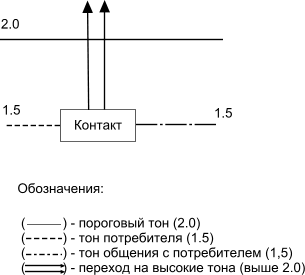
Рис. 10. Схема общения при низких тонах
Если потенциальный потребитель находится в тоне эмоций выше тона - антагонизм, то по рекомендациям специалистов США для правильного восприятия коммуникации необходимо ее сформировать и предоставить на уровне тона потенциального потребителя или полтона выше (рис. 11).
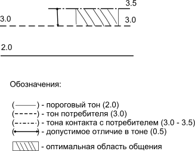
Рис. 11. Схема общения при высоких тонах
Практические примеры
На каналах телевещания демонстрировался рекламный блок, в котором молодая женщина, находясь в самолете, совершающем полет, заходит в туалет и по какой-то неизвестной надобности решает помыть там голову. При этом, по-видимому, от удовольствия от этой процедуры, она визжит на весь салон самолета. То есть в соответствии со шкалой испытывает уровень эмоций, такой как — энтузиазм, удовольствие, эйфорию, который имеет тон — 4.0 и выше.
Как было отмечено выше, тона бывают постоянные и временные; причем временные проявляются в результате реакции на события, или какое либо воздействие со стороны окружающего мира, например рекламу. Реклама, которая представляет потребителям разные наименования шампуней, в основном базируется на принципе мгновенного успеха. То есть, судя по представляемым в рекламе результатам, достаточно было купить шампунь, помыть им голову и стать обладателями прекрасных пышных шелковистых волос.
Но когда потребитель откликается на такую рекламу и не получает ожидаемого эффекта, он чувствует, что его в очередной раз обманули. При опросе многих респондентов в этот момент они испытывали такие эмоциональные чувства, как раздражение и гнев. Конечно, такой незначительный обман не может заставить их находиться на низком уровне эмоций достаточно долго, и под впечатлением от других событий они переходят на свой обычный свойственный эмоциональный тон.
Но по отношению к шампуню, а точнее говоря, коммуникациям, представляющим шампунь, они испытывают настороженность, которую можно характеризовать как уровень эмоций — консерватизм.
Поэтому при подготовке коммуникаций необходимо учитывать данную реакцию потребителей на обдуманный или необдуманный обман потребителей и представлять информацию на их уровне эмоций, который им доступен. Таким образом коммуникация может быть представлена для более возрастной аудитории потенциальных потребителей на уровне тона — консерватизм, а для более молодежной аудитории больше подойдет уровень тона — интерес (рис. 12).
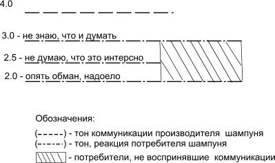
Рис. 12. Ошибка формирования коммуникаций
Представленная на рассмотрение коммуникация не могла найти понимание у большей части аудитории потенциальных потребителей, а у многих вызвала раздражение. Такая разница в тонах эмоций как 1,0 и выше является неодолимым препятствием для восприятия коммуникации и предложения, а по существу барьером между продавцом и потребителем.
Исходя из представленной информации, разработанный на основе опорных точек, рекламный текст, должен быть откорректирован с учетом тона эмоций, который сложился у потенциальных потребителей по отношению к шампуню: ШАМПУНЬ «УДОВОЛЬСТВИЕ» обладает устойчивым ПРИЯТНЫМ ЗАПАХОМ и обеспечит МЯГКОСТЬ вашим волосам. КУПИ «УДОВОЛЬСТВИЕ» и поделись с друзьями .
Особенно важно учитывать эмоции потребителей при подготовке продвижения предложений на потребительский рынок в обществе, которое по каким-либо причинам испытывает серьезные перемены, например такие, как в России. В течение десяти лет товарный и потребительский рынки претерпели значительные изменения, сопровождавшиеся обогащением и банкротством людей и организаций; обманом и насилием над населением со стороны структур, в том числе государственных, что, безусловно, сказывалось на эмоциональном уровне как отдельного города или региона, так и всей страны. Поэтому планируя продвижение товара, продукта или услуги, необходимо оценить уровень эмоций потенциальных потребителей, который сложился в обществе, регионе, городе под воздействием каких-либо причин или отдельной категории потребителей по отношению к конкретному предложению.
Бизнес-опросы
Результаты изучения мнения потребителей, полученные с использованием бизнес опросов, которые проводятся на основе представления вопросов открытого и закрытого типа также необходимо правильно отбирать и интерпретировать. Например, одна фирма, представляющая услуги на потребительском рынке, предприняла действия по привлечению внимания потенциальных потребителей к мероприятию, которое было направлено на представление услуги потребителям и изучению их мнения. После обработки опросных листов, полученные результаты можно разделить на три группы.
Первая группа — характеризует контингент потенциальных потребителей, присутствовавших на мероприятии с распределением по возрасту и полу (табл. 8).
Таблица 8
Состав – структура респондентов
Возраст / лет
Количество, %
Женщины, %
Мужчины, %
15–20
0,2
—
—
21–25
7,7
—
—
26–30
16,8
56
44
31–35
11,9
71
29
36–40
17,0
60
40
41–45
13,6
75
35
46–50
15,3
78
22
51–55
13,6
78
22
Больше 55
3,7
—
—
Примечание. Обозначение ( — ) означает, что процент не рассчитывался.
Вторая группа результатов представляет интересы, мотивы и причины, которые они могут в первую очередь учитывать при рассмотрении и выборе предложения — услуги. Причем эти результаты так же отражают распределение причин и интересов с учетом конкретных категорий потребителей (Таблица 9).
Таблица 9
Интересы —мотивы респондентов
Интересы — мотивы
Количество, %
Женщины, %
Мужчины, %
Семья
83
78
22
Здоровье
54
78
22
Бизнес
52
58
42
Карьера
44
79
22
Любопытство
17
60
40
И третья группа представляет линии коммуникаций — каналы телевещания и радиовещания; газеты и журналы, которыми пользуются большинство потенциальных потребителей (табл. 10)
Таблица 10
Линии коммуникаций
Программы на каналах телевещания
«Моя семья»
«Я сама»
«Женские истории»
Станции радиовещания
«Европа Плюс»
«Русское Радио»
«Эхо Москвы»
Газеты
«МК»
«АиФ»
«Коммерсант»
Журналы
«Семь Дней»
«Деньги»
«Космополитен»
Примечание. Результаты по линиям коммуникаций приведены по их приоритетности для аудитории потребителей.
Без сомнения, рассматривая любые результаты изучения потребителей для их правильного использования, необходимо владеть информацией, которая характеризует население данного города, региона или общества в целом. Например, в обществе с устоявшимися традициями, где старшее поколение передает молодым свой жизненный опыт; оказывают поддержку и внимание, а также дает советы и рекомендации необходимо учитывать этот фактор при представлении предложения и коммуникации.
Но в государстве, которое испытало резкое изменение сложившихся устоев и традиций, например в России наоборот целесообразно подключать к продвижению молодую категорию потребителей, которая быстрее адаптируется к новым тенденциям, новой техники, даже если предложение направлено на старшую возрастную группу. Кроме того, необходимо учитывать результаты социологических или других исследований, которые показывают изменения в обществе. Например, в России и, в частности в Москве средний возраст вступления в брак превысил 25 лет, а те, кто очень активно занимается бизнесом, к 40 годам имеет серьезные проблемы со здоровьем.
Поэтому рассматривая представленные результаты опроса, можно из мужчин выбрать целевую аудиторию в возрасте 26–30 лет и для них коммуникацию сформировать на основе следующей связки опорных точек СЕМЬЯ — БИЗНЕС — Любопытство . Также на данное предложение можно обратить внимание мужчин в возрасте 36–45 лет и сформировать коммуникацию на основе связки опорных точек ЗДОРОВЬЕ — БИЗНЕС .
Из контингента потенциальных потребителей женского пола целесообразно выбрать целевую аудиторию в возрасте 31–35 лет и предложить ее вниманию коммуникацию, сформированную на основе связки СЕМЬЯ — КАРЬЕРА — Любопытство . Кроме того, достаточно значительную категорию потенциальных потребителей составляют женщины в возрасте 41–50 лет, которых можно привлечь коммуникацией, сформированной на основе связки СЕМЬЯ — ЗДОРОВЬЕ — Любопытство . Под здоровьем в первую очередь следует понимать соответствующий внешний вид, а любопытство отражает определенные факты, характеризующие предложение.
Цит. по: Маркетинговые исследования и коммуникации [Электронный ресурс]: учебный курс /
В. Е. Архипов. — Электронный курс. — М.: МИЭМП, 2008. —
Режим доступа к курсу: http://e-college.ru. -П. 1-3.6
Тема 3. Формирование рекламных сюжетов
При опросах респондентов выявляются результаты, которые учитывают потребители при приобретении конкретного товара. Однако, по ряду причин не все результаты можно использовать при формировании рекламной фразы, без проведения предварительных исследований. Иначе, потребитель может посчитать себя в очередной раз обманутым, откликнувшись на коммуникацию и купив товар. Кроме того, некоторые результаты — «опорные точки», целесообразно подкреплять визуальными изображениями чего-либо для улучшения восприятия фактов, характеризующих предложение. Для получения результатов, повышающих положительные эмоции и доверие к коммуникациям, используются методы «Позиционирование» и «Доверенные лица».
Метод «Позиционирование» специалистами представляется с нескольких позиций для использования при продвижении на потребительский рынок. Например, по одной из них используют идеологию — принцип создания у потребителя положительного образа компании или продукта на основе какой-то идеи. Идея или категория, например — качество, надежность, красота, польза выбирается в зависимости от важности или приоритетности найденной позиции для данного общества или конкретной категории потребителей. Другой принцип подхода основан на опросах потребителей с использованием предварительных результатов изучения респондентов для выявления того, с чем они ассоциируются.
Метод «Доверенные лица» также основан на проведении опросов потребителей, а результаты используются для формирования коммуникаций и проведения мероприятий, например презентаций.
Кроме того, следует учитывать наличие у потребителей массы проблем, и то, что они сами определяют их приоритетность. И если, при формировании коммуникаций не учесть особенностей состояния потребителей, то они могут положительно воспринять информацию о товаре, но отложить принятие решения на неопределенный период. Чтобы повысить эффективность коммуникаций существуют некоторые приемы воздействия — влияния на потребителей, которые позволяют повысить престижность, привлекательность, необходимость предложения.
Цель и задачи
Цель — ознакомить с методами изучения потребителей для получения результатов, позволяющих повысить эффективность восприятия коммуникаций в виде рекламных блоков и сюжетов.
Задачи:
освоить и использовать метод «Позиционирование» для формирования коммуникаций и оформления мест продаж;
освоить и использовать метод «Доверенные лица» для формирования коммуникаций и проведения рекламных акций-мероприятий;
освоить и использовать приемы стимулирования потребителей для формирования коммуникаций.
Метод «Позиционирование»
Позиционирование как метод, используемый при продвижении на потребительский рынок, основывается на двух подходах. В первом случае специалисты придумывают какую-то идею, связанную с продвигаемым товаром, или компанией-производителем. При этом используются свойства, качество, предназначение товара и, то, что пользуется интересом, вниманием, доверием у потребителей. В дальнейшем за счет интенсивной рекламы эта идея навязывается потенциальным потребителям и служит более эффективному восприятию предложения. В качестве примера можно привести интенсивную рекламную кампанию фирмы «ИКЕЯ». Их позиционирование было основано на связке ИДЕЯ — ИКЕЯ и представлялась потребителям с использованием фразы «Есть идея — есть «ИКЕЯ». Иначе говоря, если у вас появилась идея, что-то купить, то обращайтесь в торговую компанию «ИКЕЯ». При таком подходе можно как закрепиться в памяти потребителей надолго, так и ошибиться, то есть, невзирая на большие рекламные затраты, не привлечь потребителей.
Второй подход основан на опросах потребителей и выяснении того, что для них является ценным, вызывает доверие и положительные эмоции. Этот метод также используется производителями (продавцами) при продвижении на потребительский рынок, но часто не совсем удачно.
Например, завод «Микма» (Москва), который выпускает электробытовые приборы, изобразил свою продукцию — электрические чайники типа «Тефаль» на рекламных блоках в вагонах метрополитена. Эта современная продукция сопоставлялась с чайником, который использовали, возможно, в 30-х или 40-х годах ушедшего столетия.
Без сомнения, если бы на потребительском рынке России не было современной продукции — электроприборов от производителей из Европы, Японии и других стран, то данный рекламный блок имел бы успех. Но в современной ситуации это все равно, что сравнить эффективность работы в поле на лошади или тракторе. То есть коммуникация показывала достижение предприятия, но не учитывал положение на рынке с аналогичными или подобными предложениями.
Метод «Позиционирование» может не воздействовать на потребителей, то есть оставить равнодушными к коммуникации и представляемому товару, а может произвести негативное впечатление. Если рядом с представляемым товаром разместить что-то, вызывающее у потребителей негативные восприятие, то негативно будет восприниматься все предложение. Например, в рекламном блоке, размещенном в вагонах метрополитена, были размещены картинки с изображением товара «Три корочки» и корочек от банана и мандарина, то есть отбросы.
Поэтому главная задача при использовании метода «Позиционирование» заключается в том, чтобы выяснить, что у потенциального потребителя вызывает доверие, положительные эмоции и использовать результаты для положительного восприятия своего предложения при сопоставлении.
Итак, позиционирование — это прием, в котором производитель представляет для получения мгновенного и положительного восприятия свой неизвестный или мало известный объект продажи на фоне известных, любимых и желаемых или событий, явлений, предметов, которые вызывают у потребителей ассоциации, улучшающие восприятие фактов.
Получение результатов
Использование метода позиционирования должно осуществляться с соблюдением определенного порядка и последовательности действий. К основным действиям можно отнести следующие:
1. Чтобы получить полноценные результаты, необходимо полностью ознакомиться со своим товаром, продуктом или услугой. При этом выяснить, что точно представляет он из себя; к чему или какому классу он относится; как он действует; какой результат он дает.
Кроме того, необходимо собрать сведения о нем у других, то есть спросить у коллег, знакомых и т.д., так как их восприятие функциональных возможностей, свойств, принадлежности может отличаться.
2. Выберите потребителей, у которых нужно сформировать положительное восприятие и мнение. При этом определите следующее: кто вероятнее всего будет иметь в нем потребность, какая публика покупала или использовала предметы такого типа ранее, кого вы хотите заинтересовать этим предметом, чье мнение для вас важно.
На основе хорошего знания своего продукта, включая понимание его общей классификации, точно определите своих потребителей.
3. Решите, в каком отношении к полученному результату вы хотите представить свой товар и какое мнение сформировать у публики.
4. На этом этапе проводится предварительное исследование потребителей для получения результатов — опорных точек, на основе которых проводится исследование для позиционирования. Опросы проводятся с использованием опросных листов открытого типа. Изучение респондентов можно проводить на улицах, в местах продаж или на выставках.
Особенности формирования опросных листов при проведении изучения потребителей для формирования рекламного текста и получения предварительных результатов при позиционировании заключаются в следующем:
— Для выявления мотивов, причин, которые используют потребители при покупке товара, а также свойств, которые им нравятся, запрещается использовать при формировании вопросов конкретное наименование товара.
—При предварительных опросах, которые проводятся для позиционирования, запрещается упоминать не только марку — наименование товара, но и сам товар. То есть, необходимо исследовать выбранную публику с использованием вопросов, которые не упоминают продвигаемого вами объекта продажи, а именно шампуня. Например, у класса товаров по уходу за волосами есть общие «ценности» для потребителей, которые хотят достигнуть конечного результата, а именно иметь — красивые, здоровые волосы. Эти общие «ценности» по отношению к классу товаров и выясняются в результате изучения потребителей.
ОПРОСНЫЙ ЛИСТ
1. Ваша профессия, род занятий или должность.
2. Покупаете ли вы средства для ухода за волосами?
3. Назовите основные мотивы или причины, которыми Вы руководствуетесь при выборе средства для ухода за волосами?
4. Какие основные свойства этих товаров Вам нравятся?
5. Каких результатов вы хотите добиться, покупая средства для ухода за волосами?
6. Если бы Вам предложили товары с отмеченными свойствами, будет ли иметь цена основное значение при решении их купить?
И на основе выявленных мотивов и ценностей потребителей по отношению к товарам по уходу за волосами строятся и проводятся опросы для позиционирования.
1. На этом этапе проводятся исследования для получения результатов при формировании коммуникаций с использованием позиционирования. Вопросы, которые используют в исследовании мнения респондентов, формируют на основе, и с учетом наиболее важных точек, выявленных на этапе предварительного исследования, в соответствии с действиями, представленными в пункте 4.
Ниже приведены примерные типы вопросов, которые следует адаптировать к исследуемой аудитории и продвигаемому товару, продукту или услуге.
Первый тип вопросов может иметь следующий вид: «Какой (предмет) приходит вам на ум, когда я говорю (красивая упаковка)? »
В первых скобках приводятся предметы, виды деятельности или отдыха, исторические персонажи или знаменитости, явления природы и представители животного мира, подбираемые подбираются в зависимости от товара.
Во вторых скобках представляются результаты предварительных исследований, то есть опорные точки.
Второй тип вопросов может быть сформирован следующим образом: «О каком (предмете) Вы думаете, когда я говорю (красивая упаковка)? »
Третий тип может быть представлен вниманию респондентов в следующем виде: «Какому (предмету) соответствует (удобная упаковка)? »
Четвертый тип вопроса может быть следующим: «С каким (предметом) ассоциируется (удобная упаковка)? »
Это не единственная система вопросов, которую следует использовать для исследования потребителей и получения результатов для позиционирования. Она приведена для пояснения принципа составления анкет.
При этом следует учитывать следующее:
Первое — необходимо использовать одну или более опорных точек, полученных на этапе предварительного исследования. Предварительное исследование проводится не по товару, который продвигается на потребительский рынок, а по классу товаров, к которому он принадлежит, и получаемые результаты не всегда могут подходить для исследования мнения для позиционирования. Выбираемый результат должен позволять формировать и использовать максимальное количество представляемых респондентам вопросов с получением адекватного восприятия и результатов.
Второе — необходимо использовать опорную точку без изменений. Возможно, предварительные результаты могут не понравиться, например, как не соответствующие товару или восприятию специалиста, проводящего опросы. Но, это восприятие потребителей-респондентов рассматриваемой проблемы и с этим необходимо считаться.
Третье — необходимо использовать такие результаты для формирования вопросов при изучении мнения для позиционирования, которые входят в тот же контекст или класс, что и товар, для которого проводится исследование. Например, можно сформулировать вопрос по первому типу (Какой предмет приходит вам на ум, когда я говорю красивая упаковка? )и получить результаты, которые нельзя будет использовать, так как они не имеют отношения к упаковке товаров для ухода за волосами. Или можно использовать ту же опорную точку и представить вопрос в следующем виде: «Какой шампунь вам приходит на ум, когда я говорю удобная упаковка? ».
2. На этом этапе необходимо изучить полученные результаты и выбрать предмет, явление — элемент природы или какой-либо объект для позиционирования. Из ответов большинства опрашиваемых в исследовании, которое проводится для позиционирования, выберите то, что они считают замечательным. Убедитесь, что выбранное относится к тому же классу предметов, что и товар, ради которого проводится исследование.
Например, на этапе предварительных исследований использовался вопрос: «Какие чувства Вы испытываете после достижения результатов при использовании товара по уходу за волосами?», и были получены ответы: Радость — 50% ; удовольствие, очень хорошие .
На основе полученных результатов был сформулирован следующий вопрос: «С чем у вас ассоциируется радость?», и были получены ответы: бассейн, море, плавание — 30% ; занятие спортом, аттракционы, природа .
Можно сформировать вопрос для изучения мнения потребителей для позиционирования по другому принципу: «Какое событие Вам приходит на ум, когда я говорю — радость?» и получить ответы: Новый год — 60% , свидание, день рождения, аттракционы .
На первый взгляд, из полученных результатов необходимо выбрать точку, имеющую максимальную поддержку у респондентов, то есть Новый год. Однако если рассмотреть характер использования шампуня, то более целесообразно для формирования рекламного сюжета взять точки — «море, плавание», так как они больше соответствуют самой процедуре мытья волос с использованием шампуня.
3. На основе полученной информации необходимо разработать сюжет рекламного блока. Следует оценить результаты и подумать, как интереснее сравнить и представить объект продажи, о котором вы хотите сообщить потребителям с полученными результатами, а именно предметами, профессиями, лицами, отдыхом, пейзажами, животными и т. д.
Использование результатов
Прежде чем формулировать вопросы для изучения мнения потребителей для позиционирования необходимо представить себе основу или принцип сюжета рекламного сюжета. Если этого не сделать, то поставленные вопросы могут привести к затруднению респондентов при ответах, а полученные результаты к невозможности обработки и последующему использованию. Например, в качестве опорных точек на предварительном этапе были получены следующие слова или выражения — приятный запах, пенистость и чистота . На их основе были сформированы вопросы и представлены респондентам для ответов:
Вопрос: Какой предмет или явление природы приходит Вам на ум, когда я говорю приятный запах ?
После обработки, результаты выглядели следующим образом: цветы — 66,7% ; весна, фрукты— 16,7%.
Вопрос: О каком предмете или пейзаже Вы думаете, когда я говорю — пенистость ? Ответы: море, волны, облака, пена для ванны, пена, пиво .
После обработки, результаты выглядели следующим образом: облака — 50% ; морская волна, ванна с пеной — 16,7% .
Вопрос: О чем Вы думаете, когда я говорю чистота ? Ответы: белая ткань, прозрачная вода, свежесть, ухоженный человек, облака, голубое небо, здоровье, блеск, лоск, сверкание, душ, порядок .
После обработки, результаты выглядели следующим образом: белая ткань, блеск — 16,7% .
По существу, использование полученных результатов в рекламном блоке-сюжете для усиления влияния рекламного текста, основанного на ключевых словах приятный запах — пенистость — чистота , затруднено. Цветы, которые ассоциируются у респондентов с «приятным запахом», прекрасный объект для позиционирования при условии, что знаем их конкретное наименование. То есть необходимо знать, какие цветы у респондентов ассоциируются с приятным запахом. Неправильный выбор цветов может вызвать негативное восприятие опорной точки — «приятный запах». А для подтверждения опорной точки чистота вообще ничего нельзя использовать, так как выражение — «белая ткань» имеет очень маленькую поддержку — 16,7% и вообще, это выражение трудно по смыслу сюжета связать с шампунем.
При проведении предварительных исследований мнения потенциальных потребителей можно получить следующие опорные точки:
фирма (изготовитель, бренд), качество, шелковистость, состояние волос, чистота волос,; свежесть, цвет — 33%.
Все результаты отражают мнение потенциальных потребителей, и их можно рассматривать как качественные, которые используют при формировании коммуникаций. Прежде чем приступить к проведению изучения мнения респондентов для позиционирования, необходимо результаты исследовать и разбить на категории.
По характеру последующего использования их можно разбить на две группы. Первую группурезультатов нельзя использовать без предварительных исследований, чтобы не разочаровать или обмануть потребителей. Сюда относятся слова, термины, выражения: удобная упаковка, цвет, фирма-бренд . То есть, если в коммуникации сообщить об удобной упаковке, а это, по мнению потребителя, не так, то он посчитает себя обманутым и в дальнейшем откажется от сотрудничества, то есть не будет покупать. Поэтому необходимо провести исследование и узнать мнение потребителей о том, что он считает для себя удобной упаковкой.
К такой же категории результатов можно отнести цвет и, например, пенистость . Кроме того, многие потребители в качестве мотивов и причин, которые они учитывают при покупке шампуня, называют бренд -марку производителя или похожесть шампуней на марку-бренд, которым они пользуются. Для представления этих результатов в коммуникациях также необходимо провести изучение мнения потребителей для позиционирования.
Ко второй группе можно отнести все остальные результаты, на основе которых можно сформировать коммуникацию в виде рекламного текста и не обмануть потребителей. Однако для усиления влияния и воздействия фактов — опорных точек, характеризующих положительно товар и эти результаты нуждаются в проведении изучения мнения потребителей для позиционирования.
На основе полученных результатов можно спланировать проведение рекламной компании в два этапа.
Первый этап разработки рекламной компании — изучить мнение потребителей для позиционирования и сформировать рекламный блок или сюжет на основе выражений — «удобная упаковка», «приятный запах», «чистота волос». Чтобы этот сюжет имел положительное восприятие у значительной категории потребителей, которые при выборе товара ориентируются на конкретные марки, наименования, бренды, или выбирают похожие на них, необходимо изучить мнение респондентов на основе сравнения с шампунями, представленными на потребительском рынке.
При проведении изучения мнения потребителей для позиционирования были получены следующие результаты.
При ответе на первый вопрос: «Какой шампунь Вам приходит на ум, когда я говорю — удобная упаковка ?» респондентами были названы 11 наименований шампуней. Большинство из них отметило:
Для третьего вопроса было выбрана опорная точка чистота волос : «Какому шампуню соответствует чистота волос?».
При ответе на третий вопрос было названо 13 наименований шампуней.
Большинство отметило: «Pantene Pro-V» — 23%; «Shauma» — 19,2%; «Head and Shoulders» —11,5%.
Формирование коммуникаций
Для эффективного представления неизвестного или малоизвестного шампуня, можно разместить его изображение на одном рекламном поле с изображением шампуней, выделяемых наибольшим числом потребителей. При этом шампунь «Shauma» будет ассоциироваться с приятным запахом и передавать эту характеристику неизвестному шампуню; шампунь «Pantene» будет олицетворять удобную упаковку и чистоту волос и также передавать эти качества и свойства представляемому шампуню. А все вместе они представят достаточно известные марки шампуней, что позволит привлечь к новому шампуню внимание потребителей, которые учитывают при выборе шампуней похожесть на известные товары.
При исследовании мнения потребителей для позиционирования получают качественные результаты. Они используются для формирования коммуникаций, оформления мест продаж и корректировки ассортимента.
Например, если для исследованной категории потребителей представить шампунь с приятным запахом, таким, как у шампуня «Shauma», в удобной упаковке, такой, как у шампуня «Pantene», то получится продукт с более высокими потребительскими свойствами для данной категории потребителей. В этом заключается смысл использования результатов для корректировки ассортимента.
Коммуникация — рекламный текст — в этом случае может быть представлена так: «Шампунь «МАДОННА» обладает ПРИЯТНЫМ ЗАПАХОМ и имеет УДОБНУЮ УПАКОВКУ. Воспользуйся «МАДОННОЙ» и будешь иметь ЧИСТЫЕ ВОЛОСЫ».
На рекламном поле при размещении и сопоставлении представленного товара и полученных результатов необходимо использовать размер поля, размер представляемых результатов и товара, а также глубину поля. Например, размещая их на плоскости поля в горизонтальный ряд, где новый товар находится в центре группы, можно добиться у потенциальных потребителей ощущения равенства по представленным фактам — приятный запах, удобная упаковка, чистые волосы. А если новый объект продажи, размещенный в центре композиции представить бо льшего размера по отношению к остальным маркам шампуней, то он может рассматриваться как товар, превосходящий по представленным фактам. Также его можно представить как товар, превосходящий остальные по предъявляемым фактам, если разместить впереди или сверху полученных результатов.
Следует отметить, что Закон о рекламе запрещает использовать чужие марки и бренды без согласия владельцев, но для двух случаев их использование ничем не ограничено.
В первом случае полученные результаты можно использовать при оформлении мест продаж, то есть витрин, прилавков и т.д.
Во втором случае результаты можно использовать при формировании коммуникаций в виде рекламных материалов-блоков и размещать их в местах продаж, как представление товаров выставленных на прилавках.
В остальных случаях оформления рекламных материалов и представления их потребителям, например при размещении на улицах необходимо провести предварительные исследования патентной широты найденных марок и брендов.
В свое время, занимаясь научными исследованиями, автор настоящего курса, на основе полученных результатов оформил 15 авторских свидетельств (в современной терминологии — патентов). Когда патентуется товарный знак, в регистрационном свидетельстве отмечаются параметры знака: собственно название (и его аналоги), начертание, гарнитура, толщина, шрифта, форма букв и графических элементов, т.д.
Поэтому, если результаты, которые были получены при изучении мнения потребителей для позиционирования очень важны для воздействия на потребителей, то есть получения мгновенного и положительного восприятия, нельзя отказываться от них. В этом случае необходимо исследовать патентные описания товарных знаков и выяснить, что не закреплено владельцами брендов, например написание и размер букв и воспользоваться ситуацией для разработки аналогичного или подобного наименования. Цель такого исследования — выявить отличительные признаки, а именно написание наименования, величину и форму букв, наличие сходства и различия в написании аналогичных торговых марок, то есть всего, что может послужить основой для разработки схожего наименования. Дело в том, что потребитель схватывает общие черты наименования и не вдается в частности, то есть воспринимает знакомые наименования объемно.
Кроме того, как показывают медицинские исследования, у 70% процентов потребителей существуют в той или иной степени проблемы со зрением. Разработчика коммуникации можно привлечь к ответственности за использование чужого товарного знака, но на основе фактов, а не догадок или предположений.
В чем отличие между фактами и предположениями? Для наглядности можно провести следующий эксперимент: попробуйте сообщить факты о незнакомой женщине, которая сидит к вам боком, то есть вы видите ее в профиль. Вы можете сообщить следующее, а именно что у нее: короткие или длинные волосы — факт; темные или светлые волосы — тоже факт и т.д.
Но если вы добавите, что она симпатичная, умная, воспитанная, красивая, то это будут комментарии; если скажете, что у нее два глаза, два уха или две сережки, это будет предположение, а не факт. Чтобы иметь основания так сказать, необходимо рассмотреть объект со всех сторон.
Поэтому никто не сможет придраться, если факты (толщина и величина шрифта, отсутствие или присутствие каких либо похожих символов и знаков и т.д.) не будут подтверждать использование чужих марок и брендов.
Если в подготовке коммуникаций обстоятельства не позволяют полноценно использовать полученные результаты для позиционирования, то целесообразно представить вопросы в другой форме. В этом случае можно выяснить события, предметы, явления и персонажи, которые позволяли бы использовать метод «позиционирование» для формирования рекламных сюжетов.
Например, в качестве опорных точек для формирования рекламного текста можно выбрать: «Приятный запах», «Мягкость волос», «Радость», «Свежесть» и сформировать коммуникацию: «Шампунь «СВЕЖЕСТЬ» обладает ПРИЯТНЫМ ЗАПАХОМ. Купи «СВЕЖЕСТЬ» и получи РАДОСТЬ от МЯГКОСТИ ВОЛОС».
Чтобы воздействие от представленных фактов имело максимальное восприятие, необходимо в сюжете представить нечто такое, что у потребителя вызывает соответствующие ассоциации. Вообще, рекламный сюжет должен быть носителем положительных эмоций.
Для получения результатов можно провести изучение мнения потребителей на основе вопросов:
«Какие цветы Вам приходят на ум, когда я говорю — Приятный запах »?;
С каким явлением, предметом или материалом у Вас ассоциируется Мягкость волос ?;
О каком событии Вы думаете, когда я говорю — Радость ?;
О каком явлении природы или виде отдыха Вы думаете, когда я говорю — Свежесть ?
Результаты
После проведения опроса и обработки результатов была получена следующая информация:
— «Приятный запах»: Роза — 60,9% ; Лилии — 34,8%;
— «Мягкость волос»: Пух — 26,1% , Шелк — 14,6%;
— «Радость»: Праздник — 23,2% , День рождения — 20,3%;
— «Свежесть»: Море — 26,1% , Горы — 20,3%
На основе полученных результатов можно разработать рекламный блок или сюжет с использованием розы или лилии, пуха или моря, который вызовет положительное восприятие у потенциальных потребителей. То есть, эти элементы так же будут преподносить потребителю то, что он ожидает от представляемого шампуня — приятный запах, мягкость волос, радость, свежесть и усиливать положительное влияние текста на потребителя.
Метод «Доверенные лица»
На потребительском рынке можно наблюдать рекламные материалы, а именно блоки или сюжеты, в которых компании, представляющие товар потребителям, используют метод «Доверенные лица». Иногда использование приводит к значительному увеличению объема продаж, но, как правило, не оказывает особого влияния на потребителей, так как неправильно используется. Как пример наиболее эффективного использования этого метода можно привести рекламу препарата для похудания — «Суперсистема-6», представленную на каналах телевещания. В сюжете рекламного материала, этот препарат потребителям представляет певица Лариса Долина. Основным потенциальным потребителем этого товара можно считать женщин старше 40 лет, которые обеспокоены состоянием своей фигуры. У этой категории потребителей певица Лариса Долина пользуется вниманием, любовью и уважением. То есть, с ее мнением они считаются.
Если рассмотреть эффективность другого рекламного материала, представляющего на каналах телевещания продукт под названием «Чупа-Чупс», то можно признать, что использование там «доверенного лица» не может привести к положительному эффекту. В нем продукт доверено представлять футболисту Мостовому. Это достаточно известный спортсмен и, безусловно, его присутствие могло повысить привлекательность предложения, если бы он представлял спортивные товары. Но он, по существу, незнаком основным потребителям продукта — детям или их мамам, которые покупают сладости для детей. Поэтому его присутствие и его мнение не повышает эффективность коммуникации.
Также очень часто можно наблюдать, как компании при продвижении на потребительский рынок своих товаров используют при оформлении упаковки изображения молодых юношей и девушек. Как правило, размещение на упаковке красивых или симпатичных лиц, решает лишь одну из основных задач рекламы, а именно привлечь внимание. Но этого недостаточно для формирования эффективных коммуникаций.
На выбор потребителя может повлиять совет или рекомендация родных, коллег или знакомых, если потребитель доверяет советчику или тепло к нему относится. Соответственно, использование в рекламных сюжетах неизвестных лиц не всегда уместно.
В любой стране, городе или регионе, а также среди определенных слоев населения существуют потребители, которые испытывают к определенному конкретному лицу теплые дружеские чувства и доверие. Поэтому, чтобы эффективно использовать этот прием в рекламе необходимо провести изучение мнения потребителей и выявить людей, которых можно использовать в качестве «доверенных». При выявлении категорий таких лиц важно не спутать статус или положение, которое персона занимает в обществе, с поддержкой его какой-либо конкретной категорией потребителей.
В любом обществе — государстве существует такое понятие, как Важные или Очень Важные Персоны». По мнению многих людей, если человек обладает определенным положением в обществе, то он может быть «доверенным лицом». И чем выше этот статус и положение, тем больший процент населения страны, региона ему доверяет и прислушивается к его мнению. Однако статусность еще не гарантирует ему доверия со стороны определенной категории потребителей.
Например, для России к категории лиц, которую можно охарактеризовать как «важные или очень важные персоны» можно отнести — Президента, Премьер-министра, Председателя Государственной Думы, Председателя Совета Федерации, министров, депутатов и т. д., так они пользуются определенными правами и полномочиями. Опрос респондентов показал, что население испытывает чувство симпатии и доверия только к Премьер-министру Российской Федерации — В. В. Путину, к его мнению они готовы прислушаться и, следовательно, только его можно использовать в коммуникациях для создания положительного восприятия и доверия. За два месяца до выборов в Государственную думу в 2004 году многие партии имели одинаковые шансы пройти в нее. Причем, по опросам населения партия «Единая Россия» находилась не в лидерах среди остальных, которые отмечали избиратели. Однако, как только Премьер-министр отметил партию «Единая Россия», она выиграла выборы со значительным отрывом от остальных партий.
Специалисты США не рекомендуют привлекать государственных или политических деятелей в качестве доверенных лиц. Дело в том, что рекламная компания подготавливается продолжительный период времени и лица, которые могут быть представлены в коммуникации как «доверенные», могут утратить положительное восприятие в обществе или у какой-либо категории потребителей. Государственные деятели или политические лидеры поставлены в условия, когда какие-либо вынужденные действия, решения, высказывания, указы могут вызвать негативные эмоции у большинства граждан — потребителей. Например, кто-либо в качестве доверенного лица мог выбрать министра, депутата или лидера партии для представления товара. Но пока готовились рекламные материалы, был принят закон, который получил название «Закон о монетизации» и вызвал негативное восприятие у пенсионеров, а именно потенциальных потребителей численностью около 30 миллионов человек. В таком случае коммуникация с присутствием этой персоны вызвала бы не только отрицательные эмоции.
Получение результатов
Использование метода «Доверенные лица», основанного на изучении мнения потребителей, должно осуществляться с соблюдением определенного порядка и последовательности действий.
К основным действиям для получения результатов при использовании метода можно отнести следующие:
Первое . Чтобы получить полноценные результаты, необходимо досконально ознакомиться со своим товаром, продуктом или услугой. При этом выяснить: Что точно представляет он из себя? Как он действует? Какой результат он дает?
Кроме того, необходимо собрать сведения о нем у других, то есть спросить у коллег, знакомых и т.д., так как их восприятие функциональных возможностей, свойств, принадлежности может отличаться. Особое внимание обратить на технические параметры и характеристики.
Второе . Выберите потребителей, у которых нужно сформировать положительное восприятие и доверие. При этом определите следующее: Кто вероятнее всего будет иметь в нем потребность? Какая публика покупала или использовала предметы такого типа ранее? Кого вы хотите заинтересовать этим предметом? Чье мнение для вас важно?
Третье . На основе знания свойств, функциональных возможностей объекта продажи и его принадлежности к какой-либо сфере использования, оцените и разделите потенциальных потребителей на профессионалов и дилетантов. Решите, каким образом и, в каком отношении к полученному результату вы хотите представить свой товар, и какое мнение сформировать у публики.
Четвертое . Определите порядок, место и метод изучения мнения потребителей, а именно «дилетантов» и «профессионалов». Дело в том, что «доверенное лицо», определенное для категории «дилетантов», может вызвать у «профессионалов» положительные эмоции, но не доверие. А «доверенное лицо», выявленное для «профессионалов» может не оказать никакого влияния на «дилетантов».
Пятое . На этом этапе проводятся исследования по изучению мнения респондентов для использования результатов при формировании коммуникаций или планирования и проведения рекламных акций и мероприятий.
Получение результатов для «дилетантов»
Исследования проводятся для товаров, продуктов, услуг общего назначения и потребления. Вопросы, которые используют в исследовании мнения респондентов, формируют на основе, и с учетом наиболее важных для страны или региона сфер деятельности, которые охватывают максимальную часть потребителей-«дилетантов». К сферам жизни и деятельности, которые охватывают максимальную численность потребителей для Российской Федерации можно отнести:
— спорт (спортсмен, спортсменка);
— кино (актер, актриса);
— эстрада (певец, певица);
— эстрада — в жанре юмора (исполнитель, исполнительница);
— телевидение (ведущий, ведущая).
Представленные сферы деятельности в той или иной степени привлекают внимание миллионов и, даже десятков миллионов граждан. За ведущими специалистами внимательно следят; их присутствие и результаты вызывают положительные эмоции; их хотят слушать и к их мнению прислушиваются. Причем пристрастие людей к этим сферам и категориям деятельности не зависит от пола и возраста, от материального положения и социального статуса.
В меньшей степени привлекают внимание потребителей такие сферы жизни и деятельности, как модельный бизнес и театр. Однако если товар предназначен для определенной аудитории «дилетантов», то присутствие модели в коммуникации или на мероприятии может оказать значительное влияние на потребителей. Также и присутствие артиста или артистки театра, в том числе регионального значения может повысить эффективность мероприятий и коммуникаций для местной аудитории потребителей.
Проведение опросов в представленных сферах — кино, спорт, эстрада — не затрагивает каких-либо личных проблем респондентов и поэтому не может привести к осложнениям при контактах. Изучить мнение потребителей можно в общественных местах, в местах продаж или на мероприятиях. Кроме того, в данном случае можно проводить опросы по телефону с просьбой сообщить свой возраст и социальное положение.
Ниже приведены примерные типы вопросов, которые следует адаптировать к исследуемой аудитории и продвигаемому товару, продукту или услуге.
Последовательность представления вопросов может быть следующей:
1. Любите ли вы жанр юмора?
2. Кто из исполнителей жанра юмора Вам наиболее нравится?
3. Кого из исполнителей жанра юмора вы можете отметить как наиболее яркую и талантливую личность?
4. Мнение этого человека о чем-то будет для вас важным?
5. Вы готовы прислушаться к его мнению?
6. Его присутствие будет оказывать на Вас положительное влияние и воздействие?
Ниже приведены результаты опросов респондентов, которым было предложено назвать персональных лиц, к которым они испытывают положительные эмоции по следующим категориям:
— Первая группа — певец, певица.
— Вторая группа — актер и актриса.
— Третья группа — спортсмен и спортсменка.
— Четвертая группа — исполнитель и исполнительница в жанре юмора.
При ответе на первый вопрос — назвать любимого певца, было представлено более двадцати исполнителей. После обработки и обобщения результатов, тройка лидеров выглядела следующим образом:
№ 1 и № 2 — 16,7%;
№ 3 — 13,3%;
Среди певиц было названо двадцать исполнительниц. После обработки результатов тройка лидеров выглядела следующим образом:
№ 1 — 20%;
№ 2 и № 3 — 13,3%.
В категории актеров было названо 13 человек. После обработки результатов тройка лидеров была следующей:
№ 1 и № 2 — 20%;
№ 3 — 16,7%.
В категории актрис были названы две исполнительницы. Безусловным лидером стала № 1 — 26,7%.
В категории спортсменок было приведено 14 человек. После обработки результатов тройка спортсменок:
№ 1 — 50%;
№ 2 — 46,7%;
№ 3 — 13,4%;
Из спортсменов было названо 12 человек. После обработки результатов четыре человека имели одинаковый результат:
№ 1, № 2, № 3, № 4 — 13,3%.
В жанре юмора было отмечено 4 исполнителей. После обработки результатов тройка лидеров выглядела следующим образом:
№ 1 — 46,7;
№ 2 — 46,3%;
№ 3 — 33, 3%.
В жанре юмора было отмечено 5 исполнительниц. После обработки результатов тройка лидеров выглядела следующим образом:
№ 1 — 53,3%;
№ 2 — 16,7%;
№ 3 — 13,3%.
Полученные результаты относятся к категории качественных и используются для разработки коммуникаций и при проведении мероприятий, например презентаций.
Безусловно, полученные результаты целесообразно соотносить с продвигаемым товаром, продуктом или услугой. Например, «доверенное лицо», которое выявлено в категории спорт — спортсмена или спортсменку — лучше использовать для представления товаров, продуктов, услуг в области спорта или поддержания здоровья.
При рассмотрении полученных результатов также целесообразно рассматривать выявленных фигурантов с позиции продолжительности сохранения их популярности среди потенциальных потребителей. Например, в области спорта и жанра юмора предпочтения потребителей сохраняются в течение длительного периода времени, например нескольких лет. А в категории — кино или эстрада мгновенный взлет и популярность после выхода на экраны телевидения хорошего кино или исполнении шлягера резко меняется, после того как на экране появится новый фильм или кто-то исполнит новый шлягер.
Поэтому выбор доверенного лица зависит от категории товара, продукта, услуги и оптимальной аудитории потребителей, а также продолжительности рекламной компании и планируемых акций и мероприятий.
При планировании изучения мнения потребителей для выявления «доверенных лиц» при формировании коммуникаций и проведения мероприятий с представлением товара, продукта или услуг для профессионалов необходимо провести дополнительные исследования. Эти исследования относят к кабинетным.
На этом этапе рассматриваются источники информации, которые можно считать специальными или специализированными в данной области, например финансов или компьютеров. Необходимую информацию можно получить, исследуя профильные сайты в интернете. На основе полученных данных выявляются лица, которые в данной области можно характеризовать как доверенные лица или, по другой терминологии, «законодатели мнений».
После этого найденные лица, компании-структуры представляются мнению профессионалов и на основе результатов определяются те, кто в дальнейшем представляется при продвижении объекта продажи.
Для определения законодателя мнений на основе представленного перечня лиц, структур, персон и т.д. можно воспользоваться формулировками: «Кому из представленных лиц вы готовы доверять в данной области?» или «Отметьте тех, чье мнение для вас важно или с чьим мнением вы готовы считаться».
Полученные результаты можно использовать при разработке коммуникаций или при проведении специализированных мероприятий, например, семинаров, выставок, презентаций.
При рассмотрении категории «важные или очень важные персоны» было отмечено, что не всегда они могут выступать в качестве «доверенных лиц» и «законодателей мнений» для широкого круга потенциальных потребителей. Но для профессионалов все может быть иначе. Например, в области финансов в качестве «доверенного лица» может предстать министр финансов, а при продвижении сложной техники, например, компьютеров может быть использован специалист-академик в качестве «законодателя мнений».
Шестое . На этом этапе необходимо изучить полученные результаты и выбрать то, что больше соответствует продвигаемому объекту продажи и планируемому мероприятию. Из ответов большинства опрашиваемых в исследовании, которое проводится для определения «доверенных лиц» или «законодателей мнений», выберите тех, кто вызывает у них положительные эмоции и доверие. Убедитесь, что выбранное относится к продвигаемому объекту продажи и соответствует оптимальной аудитории потребителей.
Седьмое . На основе полученных результатов необходимо разработать сюжет рекламного блока или план проведения мероприятий. Следует оценить результаты и подумать, как интереснее представить объект продажи, о котором вы хотите сообщить потребителям с использованием полученных результатов. Достаточно только их присутствия в рекламном сюжете и на мероприятии или они должны высказаться в пользу товара, продукта и услуги.
Методы стимулирования
На потребительском рынке представлены коммуникации, в которых используются методы стимулирования потребителей. Например, к таким методам можно отнести предлагаемые производителями и продавцами определенные скидки на товары и приемлемые цены, например низкие. Использование этих методов для определенной категории потребителей достаточно эффективно; но они, в большей степени относятся к приемам, которые служат для стимулирования продаж и закрепления за собой потребителей.
Кроме приведенных приемов стимулирования потребителей к контактам-продажам, существуют методы, которые основаны на использования состояния определенной категории потребителей, например психологии поведения. Ниже представлены некоторые из приемов, которые можно использовать при формировании коммуникаций для стимулирования потребителей и создании отклика на рекламу.
Создание приоритетности предложения
В независимости от места проживания у любой категории потребителей существует масса проблем, которые они с учетом своего положения или восприятия необходимости и «ценности» распределяют по приоритетности. То есть они сами решают, на что в первую очередь обратить внимание и, следовательно, на что потратить деньги. Например, приоритетность проблем может выглядеть следующим образом:
1. Деньги,
2. Здоровье,
3. Образование — подготовка,
4. Карьерный рост,
5. Успехи в бизнесе,
6. Отдых,
7. Развлечение,
8. Сохранность имущества,
9. Квартира — условия проживания,
10. Продукты,
11. Товары и т.д.
И, конечно, компания, которая представляет на рынке товары, например для сохранности автомобиля может не привлечь к коммуникации внимание потребителей, у которых проблема сохранности не занимает более высокие позиции. То есть потребитель, увидев коммуникацию, например, Компания «Комстар» предлагает надежные системы «Мангуст» против угона автомобиля , может не откликнуться, так как посчитает, что это проблема не такая значительная или «острая»; он успеет решить ее после того, как решит остальные. Поэтому коммуникацию целесообразно формировать так, чтобы потребитель был обеспокоен обстановкой — ситуацией, связанной с сохранностью имущества, в частности автомобилей, сложившейся в данной местности, городе или регионе. Многие исследователи, в частности, социологи, отмечают у населения — потребителей слабую осведомленность в состоянии конкретных проблем, касающихся жизни населения или конкретной категории. То есть из-за загруженности проблемами или невнимательности они не владеют статистикой, которая характеризует ситуацию, складывающуюся в конкретной сфере, например угоне машин. Но как только аудитории представляют статистические данные о любой проблеме, причем на статистику обращают особое внимание, а не приводят ее как иллюстрацию, то большинство резко меняет отношение к проблеме.
Например, со старшеклассниками одной из школ города Москвы была проведена встреча, в которой участвовали социологи и психологи. Тема встречи была актуальной для современного состояния общества — ранние половые отношения и заболевания. Аудитория слушала информацию невнимательно и с некоторым предубеждением. Но как только была приведена статистика, которая характеризовала заболевание СПИДом, то ситуация резко изменилась. Опросы, проведенные среди девушек, после приведения информации о количестве заболевших показали, что 90% аудитории резко изменили отношение к проблеме.
Так вот, если возвратиться к коммуникации для создания приоритетности предложения, то ее также необходимо формировать с учетом статистики. Например, А что ВЫ сделали, чтобы ВАШ автомобиль не угнали? Знайте, что в нашем городе каждые 10 мин происходит угон автомобиля и следующим его потеряете ВЫ! Сделайте это сейчас, а то завтра будет поздно. Звоните в компанию «Комстар», и мы обеспечим сохранность автомобиля и Ваше спокойствие!
Такую акцию с использованием короткой коммуникации для привлечения внимания потребителей к конкретному товару можно усиливать за счет предварительного размещения информации в виде статей. В статьях проблемы раскрываются и обостряются. В них, кроме статистики, важно указывать, что такое отношение и состояние недопустимо для потребителя, так как мешает ему достичь благополучия или успеха. Необходимо указать на конкретные проблемы и недостатки, например, на то, что в наше время недопустимо (некрасиво, неполноценно) быть лысым — предложение со стороны клиник или на то, что с такой фигурой невозможно добиться успеха в бизнесе и жизни — предложение со стороны спорт-клубов и спровоцировать на нужный компании поступок.
Создание неуверенности и неудовлетворенности
В данном случае, необходимо использовать такие характеристики человека, как желание быть не хуже других; соответствовать определенному статусу или считаться человеком с тонкими эмоциями и чувствами и т.д. Например, учитывая наличие таких характеристик и характера поведения у женщин, можно разработать коммуникацию, которая не сможет никого оставить равнодушным: Все ЖЕНЩИНЫ с УТОНЧЕННЫМ ВКУСОМ пользуются только духами «МАДОННА». КУПИТЕ «МАДОННУ» — насладитесь УТОНЧЕННЫМ АРОМАТОМ и поразите всех! .
Какая женщина не захочет считать себя человеком с утонченным вкусом? Безусловно, заранее трудно быть абсолютно уверенным в том, что потребитель купит эти духи. Но продать — это работа квалифицированного персонала — продавцов. А задача рекламы — создать интерес к предложению и отклик на коммуникацию.
Проявление заботы
Автор присутствовал на семинаре, который проводил один из ведущих специалистов по бизнесу, профессор Джоржтаунского университета М. Цинкота. Он является консультантом крупнейших компаний — «АТТ», «ИБМ», «Дженерал Электрик», «Нестле» и ряда других. М. Цинкота привел ряд примеров из практики зарубежного бизнеса, которые привели к значительному увеличению продаж товаров, продуктов и услуг. В данном случае приведем один из них для пояснения принципа создания привлекательности предложения.
У компании «Дженерал Моторс» в США есть прекрасный автомобиль под названием «Кадиллак». При этом каждый автомобиль имеет сотовый телефон и свой номер. Кроме того, он располагает системой безопасности водителя, а именно подушкой безопасности, которая разворачивается при аварии. Это стандартные технологии, которые включены в стоимость машины.
Компания, чтобы привлечь дополнительное внимание потребителя, объединяет существующие технологии в новый продукт и представляет его потребителям. Система работает следующим образом.
Кто-то ведет новый автомобиль, и внезапно срабатывает подушка безопасности. Из автомобиля «Кадиллак» в Центр компании «Дженерал Моторс» немедленно передается сообщение. Сотрудник компании перезванивает водителю. Если водитель не ответил, то через систему определяются его координаты и после этого информация о месте нахождения автомобиля передается в ближайший полицейский участок и медицинское учреждение: «У нашего клиента в кадиллаке №… сработала подушка безопасности. Водитель не отвечает, но мы знаем, где он находится. Пожалуйста, вышлите туда санитарную машину».
В данном примере не было создано никакого нового дополнительного продукта и не сделаны дополнительные траты, способствующие более эффективному продвижению. По существу повысилась привлекательность предложения за счет проявления заботы о клиентах и внимания к ним. Защита клиента и его интересов после покупки автомобиля, позволила привлечь дополнительное внимание потребителя; убедить его, что он находится под полной защитой, то есть вселить в него уверенность и, за счет этого увеличить объем продаж автомобилей на 50%.
Один из законов маркетинга гласит, что лучше быть первым в идеях, чем первым за прилавком.
Если рассматривать потребительский рынок Российской Федерации и, в частности Москвы то также можно выбрать действия, которые при минимуме затрат могут значительно повысить привлекательность предложения.
Например, не надо быть большим специалистом или дополнительно изучать потребителей, чтобы заметить следующие факты. Людям с большими габаритами и весом трудно перемещаться по городу с использованием общественного или личного транспорта для изучения и покупки необходимых товаров.
Если компания, которая продвигает одежду для этой категории потребителей, например, «Три Толстяка», сообщит потребителю о том, что у нее находится каталог товаров всех товаров больших размеров, которые продаются в Москве, то безусловно они будут благодарны и откликнутся. Вполне естественно, что потребитель в первую очередь поедет туда, где он может получить информацию о всех товарах, которые продаются в Москве для категории лиц большого размера и веса. Коммуникация создаст отклик, а персоналу — продавцам компании «Три Толстяка» необходимо убедить потребителя, что они сделали правильный выбор, приехав в компанию, и продать товар.
Привлекательность предложения
Следует знать и помнить, что реклама это еще не продажа. Поэтому факты, которые представляются вниманию потребителей при непосредственных контактах и продаже, могут отличаться от тех, что используются для формирования коммуникаций. При этом можно формировать рекламу на основе наименования компании и продукта и, как правило, слиться с аналогичными или подобными предложениями, то есть обезличиться и рассчитывать на случайный выбор потребителем. А можно, не меняя товара, продукта или услуги, формировать коммуникацию по другому принципу и предлагать готовый и ожидаемый потребителями результат.
Например, фирма оказывает бытовые услуги населению, стирает белье с использованием определенной технологии и материалов. Техническую сторону процесса стирки можно представить в коммуникации, если технология значительно отличается в лучшую сторону от того, что предлагают конкуренты. То есть на этой основе можно создать эксклюзивность предложения и привлечь внимание конкретной аудитории потребителей. Но если это не так, то лучше оставить техническую информацию для ее использования при непосредственных контактах, чтобы убедить потребителей в правильности выбора. Рассматривая коммуникации компаний, которые представляют на потребительском рынке услуги, можно придти к заключению, что большинство из них основывают коммуникации на названии фирмы и типе услуг, например — стирка или чистка.
При этом они обезличиваются перед потребителем и могут рассчитывать или на случайный выбор или, например, что кому-то больше понравилось какое-то название фирмы. Практически, в рекламных печатных изданиях такая коммуникация может выглядеть следующим образом:
— «Прачечная «Кристалл» предлагает свои услуги;
— «Прачечная «Колумб» предлагает свои услуги»;
— «Прачечная «Блеск» предлагает свои услуги».
Но можно, не меняя технологию оказания услуги, значительно повысить эффективность коммуникаций и создать понимание и отклик у потребителя. Например, если рассматривать услугу прачечной, то можно задаться вопросом, что все-таки предлагает и продает фирма.
Если фирма представит потребителю грязное, плохо пахнущее или рваное белье, то оплатит ли клиент услуги? Конечно, нет! Он либо не оплатит работу, либо обратится в суд с требованием возмещения материального и морального ущерба, либо разнесет плохую информацию о фирме, что гарантирует ей медленную «смерть». Следовательно, фирма продает чистое благоухающее белье, а потребитель платит за него деньгами и теплым отношением.
В таком случае, коммуникация, которая может найти положительное восприятие у потребителя и вызвать отклик, может быть такой: Прачечная «КРИСТАЛЛ» предлагает ЧИСТОЕ БЛАГОУХАЮЩЕЕ БЕЛЬЕ по умеренным ценам .
Если данное заявление со стороны фирмы соответствует действительности, то поможет выделиться из аналогичных и подобных предложений, то есть добиться отклика от потребителей.
Таким образом, представляя потребителям конечный и желаемый результат можно построить информационную политику для любого товара, продукта или услуги.
Для того, чтобы повысить привлекательность — «ценность» предложения для потребителей необходимо ответить на следующие вопросы:
КАКОГО КОНЕЧНОГО РЕЗУЛЬТАТА ЖДЕТ ОТ ПРЕДЛОЖЕНИЯ ПОТРЕБИТЕЛЬ?
ЗА ЧТО ОН ПЛАТИТ ДЕНЬГИ?
ЧТО ОН ХОЧЕТ ПОЛУЧИТЬ ЗА СВОИ ДЕНЬГИ?
ЧТО ОН ПОКУПАЕТ?
Цит. по: Маркетинговые исследования и коммуникации [Электронный ресурс]: учебный курс /
В. Е. Архипов. — Электронный курс. — М.: МИЭМП, 2008. —
Режим доступа к курсу: http://e-college.ru. - П. 1-4.3
Тема 4. Цвет как художественное средство восприятия врекламе
Физические свойства цвета
Цвет — это одно из свойств материальных объектов, воспринимаемое как определенное зрительное ощущение. Качества цвета связаны со спектральным составом отражаемого или испускаемого излучения. В большинстве случаев цветовое ощущение возникает в результате взаимодействия глаза с потоком видимого излучения с длинами волн от 380 до 760 нм, но может быть вызвано воображением или ассоциацией с другими ощущениями — звуком, теплом, фактурой, а также при физическом раздражении — давлении на глазное яблоко, ударе, воздействии электричеством.
Цветовые ощущения зависят от света разных длин волн : излучения с длинами волн от 380 до 470 нм имеют фиолетовый и синий цвет, от 470 до 500 нм — сине-зеленый, от 500 до 560 нм — зеленый, около 580 нм — желтый, 600 нм — оранжевый, 640 нм — красный.
Все цвета спектра : красный, оранжевый, желтый, зеленый, голубой, синий, фиолетовый — делят на теплые (те, которые содержат больше желтых или красных оттенков) и холодные (соответственно, синих). Вместе с тем понятие о «теплоте» цвета относительно , так как любой цвет по сравнению с еще более теплым может казаться холодным, и наоборот. Теплые цвета отражают больше света, чем холодные, и выступают по сравнению с пассивными холодными как активные.
Каждый из цветов имеет различную светлоту — т. е. различную силу тона, а также зрительную весомость, где светлые тона выступают как более легкие, а темные — более тяжелые. Общепринятым является разделение цветов на основные (красный, желтый, синий) и дополнительные (оранжевый, фиолетовый, зеленый) , которые образуются в результате смешения двух основных цветов. Белый, черный и серый с оттенками выступают как нейтральные. Цвета, находящиеся друг напротив друга в цветовом круге при расположении их в той же последовательности, что и в спектре, являются контрастными.
Между тем объективные характеристики цвета уточняются субъективными особенностями восприятия , во многом связанного с:
♦ психофизиологическим состоянием наблюдателя (интенсивность цвета может усиливаться в опасных ситуациях и уменьшаться при усталости);
♦ предшествующим цветовым восприятием (процесс так называемой «цветовой адаптации»), при котором восприятие цветов «смещается» в сторону дополнительного цвета: после возбуждения глаза синим цветом ахроматические цвета получают дополнительный желтоватый оттенок, после возбуждения красным цветом выглядят зеленоватыми и т. п.;
♦ закрепленным в человеческом сознании устойчивым представлением об определенном цвете как неотъемлемом признаке привычных предметов наблюдения — так называемый «эффект принадлежности цвета», или «явление константности цвета»: так белый снег или зеленая листва воспринимаются в соответствующем природном цвете и при красноватом освещении на закате солнца.
Этот эффект исторически сформировался в связи с необходимостью обнаружения и идентификации предметов окружающего мира при разнообразных изменениях освещения и состояния окружающей их среды. Поэтому вербализации подвергались, в первую очередь, свойства субъектов и объектов (в частности, цвет), информация о которых была жизненно необходимой. Отсюда — тесная связь между цветом и информацией , которая, будучи «расцвеченной», дольше сохраняется в памяти, и наоборот — информацией и цветом, где любое сообщение имеет цветовую окраску, возникающую чаще всего на бессознательном и подсознательном уровне. Это свойство восприятия напрямую связано со степенью сформированности у субъекта механизма соотнесения используемых цветовых эталонов со свойствами предметов. К примеру, словарь индусов насчитывает 544 названия цветов, словарь же англичан — около 50 000. Поэтому некоторые названия цветов возникли как неотъемлемые атрибуты предметов: изумрудный, малиновый, розовый.
Уровни восприятия цвета
Если с физической точки зрения все характеристики цвета выступают как независимые от зрения и различных субъективных ощущений, то в психофизиологических процессах восприятия цвет теряет свою физическую обусловленность , а, следовательно, и объективность выражения. Поскольку мышление человека тесно связано со зрительным восприятием и любой, в том числе самый элементарный акт зрения нередко рассматривается как акт мышления, постольку можно утверждать, что информационно-энергетическая связь цвета с человеком может осуществляться одновременно на трех уровнях интеллекта: сознательном, подсознательном, бессознательном.
Сознание, выступающее как высший уровень психической деятельности человека, отражает реальность в виде образов, представлений, мыслей, идей, которые и образуют его содержание, предвосхищая практические действия и определяя их целенаправленный характер. На высшем уровне интеллекта цвет выступает как субъективное отражение объективно существующих предметов и явлений в совокупности их абстрактно-понятийного представления. Именно так воспринимаются сознанием конвенциональные (от лат. conventio — соглашение), в частности, сигнальные, дорожные и т. п. знаки, где не только форма и изображение, но и цвет несут определенную семантическую нагрузку.
Функция бессознания, связанного со стадией цветоощущения, состоит в регуляции функционирования организма со стороны нервной системы и обеспечения адекватного гомеостазиса, выступая в качестве антиэнтропийного механизма. Культурная адаптация (от лат. adaptatio — приспособление) присутствует в моделях поведения, выработанных в процессе развития культуры и имеющих назначением сохранение и трансляцию коллективного опыта.
На бессознательном уровне интеллекта цвет становится источником и первопричиной чисто физических изменений в организме — так, теплые цвета повышают температуру человеческого тела, давление, ускоряют пульс (особенно красный), холодные — соответственно, понижают давление и температуру (голубой в большей степени), замедляют пульс (особенно синий).
Вполне естественно, что для обеспечения оптимального режима функционирования организма человек стремится к тем цветам (в одежде, оформлении интерьера и т. п.), которые в большей степени оказываются компенсаторными или дополнительными.
Подсознание же, отвечающее за процесс собственно цветовосприятия, охватывает не представленные в сознании субъекта аспекты информации в виде образов , состояний , ассоциаций (к примеру, белый — чистота, синий — духовность, красный — любовь и т. п.). Таким образом, процесс цветовосприятия можно представить как механизм перехода информации из внешней среды на высший уровень интеллекта (сознание) через эмоциональные представления (подсознание) и психофизиологические состояния (бессознание). Таким образом может быть представлено триадное подразделение интеллекта :
Таблица 12
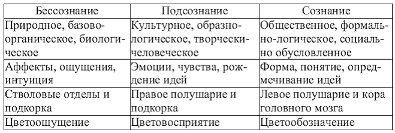
Индивидуальные уровни цветового восприятия
Цвет в рекламе, как и в любом художественном произведении или ином объекте культурной или природной среды, является носителем определенного художественного и внехудожественного значения. Экспериментально доказано, что цвет не только влияет на человека, но и абсолютно определенно соотносится с его картиной мира. Отсюда — важный для специалистов по рекламе вывод о возможности кодирования посредством цвета эмоциональных отношений — как субъектно-субъектных, так и субъектно-объектных. Столь же принципиальным является вывод о возможности определения типа темперамента субъекта по характеру его хроматической избирательности.
Здесь механизмами, которые реализуют соответствие цвета и эмоционального состояния, становятся механизмы синестезии, с помощью которых ощущения одной сенсорной системы одновременно распознаются и оцениваются в категориях другой, а восприятие локальной модальности неизбежным и естественным следствием имеет реконструкцию целостного интермодального объекта. По цветовым предпочтениям можно различать и распознавать такие субъективные психологические качества личности , как направленность темперамента :
Таблица 13
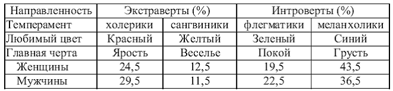
Вместе с тем, как было отмечено ранее, индивидуальные особенности восприятия, связанные с темпераментом и общим психическим строем человека, не столь существенно влияют на совокупную характеристику цвета, что подтверждают различные репрезентативные тест-опросы, где определенные цвета вызывают определенные же эмоционально-образные ассоциации. Эта психологическая особенность восприятия была исследована Люшером, наблюдения которого стали основой цветового моделирования с учетом эмоциональных особенностей восприятия (см. табл. 14).
Таблица 14
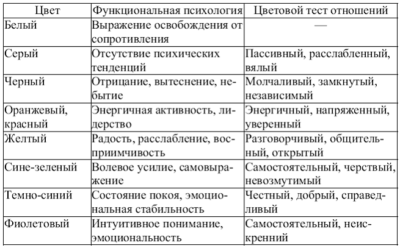
Эмоциональное воздействие цвета может быть разнообразным, однако анализ смысловых и эмоциональных ассоциаций свидетельствует о том, что отдельные цвета (желтый , голубой , зеленый) воспринимаются , в основном , как несущие положительный заряд , другие (коричневый , серый , черный) вызывают по преимуществу отрицательные реакции . Для некоторых же цветов, таких, как красный, белый — характерна амбивалентность оценок. Подобное свойство восприятия используется, в частности, в названиях наград, символических публикаций, названиях общественных организаций, клубов, казино, имеющих рекламно-коммерческий характер: Красная книга, Белая лента, Green Peace , «Розовый фламинго», «Golden palace » и т. д. Более того, специалисты-цветотерапевты утверждают, что для сохранения гармонии и здоровья человеку необходимо получать через одежду и личные предметы энергию от всех цветов спектра. Дефицит же различных цветов можно восполнить правильным питанием, так как цветовые аналоги имеют витамины:
витамин А аналогичен желтому цвету;
витамин В — оранжевому;
витамин С — желтому и зеленому;
витамин D — фиолетовому;
витамин Е — огненно- и анилиново-красному;
витамин K — синему (индиго).
Причем, как замечают специалисты, потребности организма в определенных цветах можно узнать из анализа собственного имени, где красному цвету соответствуют латинские AJS , оранжевому — ВКТ, желтому — CLU , зеленому — DMV , синему — ENW , индиго — FOX , лиловому — GPY , розовому — HQZ , золотому — IR .
Таблица 15
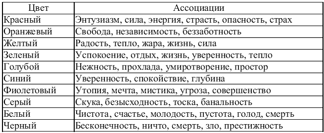
Подобная ассоциативная наполненность характерна не только для восприятия цветности предметов мира, но и для абстрактных понятий, где цветовой ассоциативный ряд может быть присущим (через первоначальную означенность предмета или явления) и имени, коду вещи, где происходит обратный процесс означивания через перевод вербальных знаков в зрительные. Безусловно, данная семантика связана в большой степени с субъективными смыслами, личными установками и стереотипами, однако можно говорить и о присутствии преобладающих тенденций восприятия, обусловленных культурными и социальными основаниями.
Подобная хроматическая семантика потенциально заложена в любом предмете, явлении или их вербальных обозначениях. Выявив при помощи компьютерной обработки эмоциональную ориентацию, ритмичность, характеристику ведущего слова и цветоряд названий некоторых политических блоков и движений, отдельные исследователи пришли к выводу о том, что они терпят неудачу в референдумах вопреки хорошей организации и содержательным политическим программам. Причиной, по мнению авторов, здесь становится не только низкая ритмичность названий блоков, жесткое кодирование, приводящее к распаду семантического пространства, отрицательная эмоциональная нагрузка слова золотого сечения, но и негативная хроматическая ассоциативность , воспринимаемая на подсознательном уровне и приводящая к созданию незапланированного, не всегда позитивного имиджа:
Таблица 16
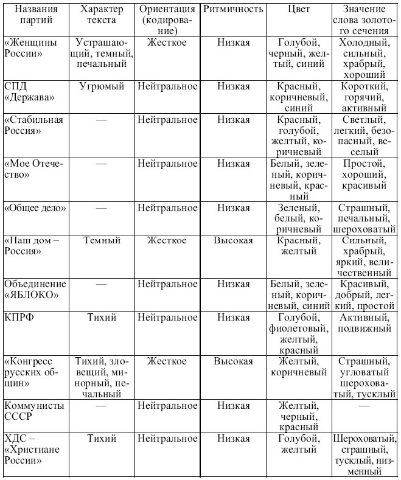
Таким же образом могут быть исследованы названия фирм, товаров, рекламных слоганов, девизов и т. п. (см. табл. 17).
Таблица 17
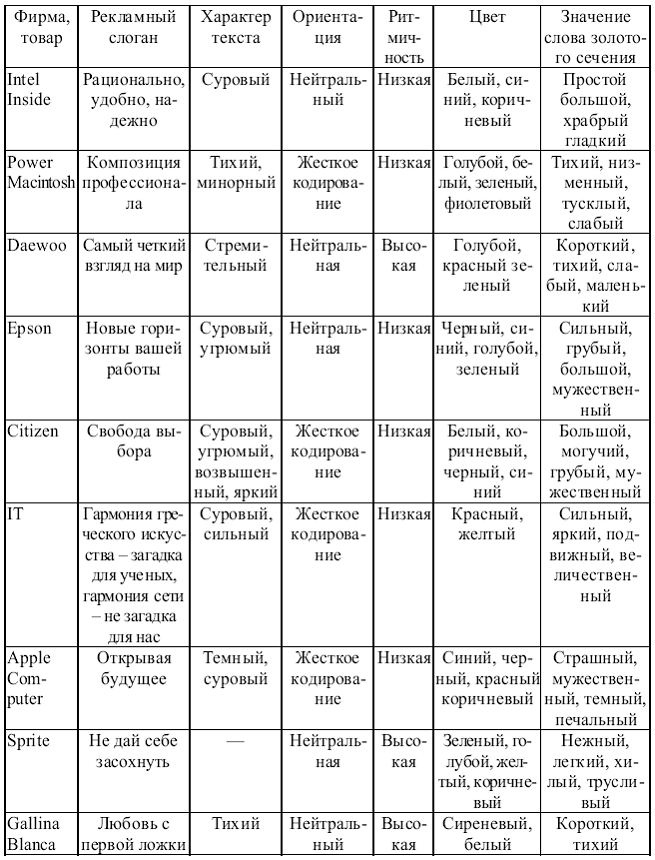
Типы хроматической гармонии
Основой цветовой гармонии является естественное сочетание цветов, аналогичное спектральному, и порядок их соотношения во всех областях природы. Найти общий закон для гармоничных и дисгармоничных цветовых сочетаний — одна из основных задач теории искусства в целом и теории рекламы, в частности, И. В. Гете , к примеру, гармоничными называл контрастные цвета, а дисгармоничными — цвета, расположенные в цветовом круге рядом. В свою очередь, немецкий и швейцарский психологи Г. Фрилинг и К. Ауэр утверждают, что установить правила безусловной цветовой гармонии невозможно, так как цветовой спектр лишь указывает порядок следования цветов, но не дает никаких правил для практической гармонии.
Американский же теоретик Ф. Тейлор считает, что гармоничные и дисгармоничные сочетания цветов основываются на физиологических и психологических законах и могут выступать как объективно существующие. Ф. Тейлор предлагает следующие схемы гармонии цветов.
Монохроматическая гармония основана на сочетании тонов (различной интенсивности и глубины, осветленных, затемненных или нейтрализованных), принадлежащих единому цвету. Монохроматическая гармония в рекламе часто применяется при оформлении витрин.
В аналоговой гармонии ведущим становится сочетание двух или более сходных цветов и их оттенков: переход оранжевого в желтый, сочетание зеленого с желтоватым оттенком и лимонно-желтого.
Контрастная гармония достигается через противопоставление цветов друг с другом. Такой тип гармонии зрительно увеличивает и выделяет цвета и предметы: например, на витрине — цветовой контраст фона и товара, товаров друг с другом, цветовых пятен на рекламном плакате (так ярко и призывно звучит контраст монохроматического серого и ярко-красного в рекламе Martini ).
Контрастные хроматические соотношения имеют разную степень предпочтительности, и если расположить пары цветов в порядке ухудшения их восприятия, то в качестве наиболее благоприятного сочетания выступит сине-белое, а красно-зеленое окажется наиболее диссонирующим (табл. 18):
Таблица 18
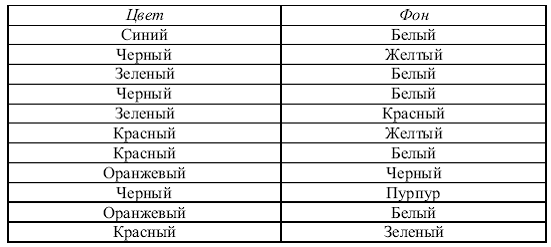
Резкие цветовые контрасты стали весьма характерными для искусства XX в., где впервые от принципов природной гармонии художники отказались в пользу искусственно сконструированных хроматических сочетаний, назначением которых становилось не подражание природным, а создание собственных форм, цветов и их соотношений. Несмотря на то, что яркий контраст утомляет зрение, он вполне уместен и функционален в рекламе, действие которой ограничено во времени.
Ахроматическая гармония основана на сочетаниях нейтральных цветов — белого, черного, серого. Хороши любые сочетания этих цветов в отличие от их монохроматического соотношения, микширующего, нейтрализующего их индивидуальные характеристики. Наилучшим образом ахроматическая гармония соответствует стилю деловых бумаг: договоров, соглашений, прайс-листов, сообщений и т. п.
Полихромная (многоцветная) гармония базируется на комбинациях трех и более цветов. В такой колористической схеме весьма важен выбор доминирующего цвета, который сохранит гармонию остальных цветов. Наиболее эффективной цветосхемой станет такая, где доминирующий цвет будет сочетаться с его монохроматическими оттенками и каким-либо цветом нейтральным.
Цветовой же разлад ,по Тейлору, создается при нарушении естественных спектральных свойств цветов. К примеру, если спектрально более яркий, чем зеленый, желтый цвет сделать темнее, то он вступит в разлад с последним. Вместе с тем колористический разлад, допущенный в некоторых элементах композиции для активизации внимания или для гармонизации монохроматической композиции путем обозначения цветовых акцентов, вполне допустим и, более того, желателен.
При сочетании цветов также важно учитывать освещение рекламного объекта — плаката или щита наружной рекламы, витрины, вывески и т. п. При этом холодные цвета нейтрализуются теплым свечением (голубой воспринимается как серый), а теплые — холодным (оранжевый в таком освещении приобретает характеристики цвета беж). В то же время последние приобретают еще большую насыщенность при теплом освещении, а холодные интенсифицируют свои характеристики в свечении холодном.
Исследование художественных свойств цвета и формы
в отечественной художественной традиции 10–20-х гг. XX в.
Цвет и форма изначально функционировали как неотъемлемые художественные средства живописи, но в начале XX в., ввиду изменения художественного объекта: исчезновения предметности и перенесения смыслового и эмоционального акцента исключительно на те элементы искусства, которые традиционно выступали в качестве лишь средства, т. е. формы (в узком значении этого слова) и цвета, возникает необходимость планомерного и последовательного изучения последних. Эти исследования носят как практический, так и теоретический характер, вопросами формы и цвета занимаются Л. Попова , А. Родченко , К. Малевич , В. Кандинский , М. Матюшин .
Сначала в мастерской пространственного реализма, а затем в Гинхуке (Государственном институте художественной культуры) Матюшин проводит огромную исследовательскую работу и делает, в частности, вывод о том, что любые два цвета могут быть «увязаны» через третий, «сцепляющий». Для выявления этого дополнительного цвета Матюшиным в 1926 г. был издан так называемый «Букварь по цвету» , где на каждую из восьми цветных табличек, расположенных на левой стороне, откидывался светлый нейтрального цвета квадратик (по Оствальду), и под влиянием цветовой среды на нем возникал дополнительный цвет.
Матюшин также стремится обосновать, что в движении энергия цветности неизмеримо возрастает , художник также изучает проблемы зависимости цвета от расширения угла зрения, изменяемость цвета по времени и т. п. Все выводы были зафиксированы на планшетах-таблицах с пояснительными текстами (в настоящее время эти таблицы находятся в Стеделийк музеум в Амстердаме). Аналогичные таблицы составлял и Б. Эндер , стремящийся выявить соотношение между цветом, формой и звуком (а именно, «речезвуком»), так как, по слову Матюшина, «звучание есть та же волна колебания, что и цвет», а наше зрение функционирует так, «как бы слышит, а наше ухо так — как бы видит». Столь же значительное внимание в лаборатории Гинхука уделялось изучению взаимозависимости цвета и формы , где было раскрыто соответствие теплых тонов округлым, неправильным формам, холодных тонов — формам с острыми углами и экспериментальным путем доказано, что объемы и формы, окрашенные в разные цвета (к примеру, в красный и синий), взаимодействуя в цветной среде, не только изменяются сами в форме и цветности, но изменяют также саму среду.
Значительный интерес к особенностям восприятия человеком различных геометрических форм и их сочетаний, изменения формальных характеристик в цвете проявлял и В. Кандинский . Еще в 1910 г. в книге «О духовном в искусстве» , написанной в Мюнхене на немецком языке и позже переизданной и переведенной, а также позже — во время работы в Секции Монументального искусства Инхука (1920) Кандинский пытается вскрыть закономерности влияния формы и цвета на все уровни человеческого сознания, будучи убежденным в том, что именно в беспредметном искусстве данные средства художественной выразительности могут проявить свои особенности наиболее ярко.
Рассматривая свойства как отдельных цветов, так и их соотношений, Кандинский выделял два основных хроматических контраста : между теплыми и холодными цветами (т. е., соответственно, стремящимися к желтому и синему), а также между светлыми и темными (стремящимися, в пределе, к белому и черному). Художник различает эти цвета как пребывающие в движении, где теплые цвета при их расположении в горизонтальной плоскости потенциально направлены к зрителю, а холодные — от него, в вертикальной же плоскости первые выступают (существуют) как стремящиеся вовне — т. е. как центробежные, эксцентрические, вторые же — как стремящиеся внутрь, концентрические.
Именно поэтому, как отмечает исследователь, синий, направленный, во-первых, от человека и, во-вторых, к собственному центру, проявляет максимальную склонность к углублению, выступая в качестве аналога сверхчувственности, духовности. Отсюда — и взаимная соотносимость всех цветов, стремящихся в эксцентрическом или концентрическом направлении:
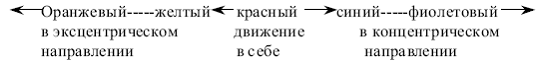
Развивая гетевский «цветовой круг», Кандинский аналогичным образом располагает основные пары контрастов: I — желтый — синий, II — белый — черный, III — красный — зеленый, IV — оранжевый — фиолетовый, слева и справа от которых находятся «две великие возможности безмолвия: безмолвие смерти и безмолвие рождения».
Между тем, Кандинский понимает, что заставить звучать цвет на полотне можно, только ограничив его на плоскости от других цветов — т. е. придав ему форму. Это неизбежное взаимосоответствие формы и краски , когда одни из форм подчеркивают, другие — притупляют значение цвета, исследователь видит, в том числе, в соответствии резких цветов остроконечным формам, глубоких — округлым: так, желтый в треугольнике, по сравнению с желтым в круге, будет звучать ярче, в круге же, напротив, наиболее органичным окажется синий.
В 20-е годы теорию восприятия цветов и форм разрабатывал также профессор Иттен , преподававший курс дизайна в Баухазе и считавший цвета и геометрические формы «сенсорными эталонами» . Согласно его системе красный цвет наилучшим образом соответствует квадрату, оранжевый — трапеции, желтый — треугольнику, голубой — кругу, фиолетовый — овалу.
Это внутреннее соответствие в предметах геометрических и цветовых характеристик, цветовых и функциональных, функциональных и формальных используется рекламой , позволяя ей продуцировать яркие ассоциативные представления об образе предмета, ориентируясь по признаку смежности лишь на часть его характеристик. Данное свойство восприятия учитывается, к примеру, при разработке фирменного стиля, где образ товара активно формируется, в частности, его определенной лейтмотивной цветовой наполненностью (это хорошо узнаваемая сине-белая гамма косметики фирмы Nivea , бело-розовая — Mary Kay и т. п.).
Подобные ассоциативные связи оказываются настолько крепкими, что образ определенных товаров может быть вызван воспроизведением исключительно присущего ему цветового сочетания — такими стереотипами стали красная гамма Marlboro и Coca -Cola , синяя — Pepsi , зеленая — Glenfield . Точно так же реклама может объединять символической цветовой гаммой предметы, сходные по функциональной значимости, — так, в единой рамке витрины могут быть объединены голубой гаммой предметы для сна, желто-оранжевой — для летнего отдыха, зеленой — предметы гигиены и т. д.
Учитывая подобные свойства восприятия, необходимо соотносить особенности потребительских свойств товара с цветовой гаммой представляющей их рекламы . Так, товарам для пожилых людей не соответствует как агрессивная красная тональность, так и мрачная черная или легкомысленная желто-лимонная. Продукты питания наилучшим образом могут быть представлены цветами «природной гаммы» — белым, голубым, зеленым, даже коричневым, а также «солидными» бордовым (как, например, в упаковке цейлонского чая «Май»), темно-синим (кофе Tchibo Exclusive ). Красный же и черный цвета в рекламе продуктов питания могут вызвать ассоциации абсолютно непищевые, вызывая тревогу и чувство опасности.
Реклама туризма максимально благоприятно воспринимается на таком фоне, как желтый, голубой, сине-зеленый, зеленый, сине-фиолетовый, интенсивно-лимонный. Наименее предпочтительными здесь оказываются такие цвета фона, как (даны в порядке избывания негативного содержания) черный, коричневый, рубиновый, красно-розовый. В то же время для рекламы бытовой техники черный фон вполне уместен, но, однако, не оптимален. В этом типе рекламы ведущими становятся синий, голубой, интенсивно-лимонный, менее эффективны — темно-фиолетовый, желтый, наконец, в качестве наименее предпочтительных выступают розовый, красный, коричневый.
Эта хроматическая обусловленность проявляется иногда парадоксальным образом, когда цвет окрашенной поверхности может изменять свои характеристики в случае принадлежности этой поверхности к известному предмету (так называемый «предметный цвет») , таким образом определяя не столько предмет, сколько его свойства, выступая в качестве ассоциативной связи между цветом и данным предметом, а не цветом и культурным опытом определенного воспринимающего сознания. Достаточно явно эти отношения представлены в «нетрадиционной» медицине Востока, где цветом характеризуются основные функциональные особенности человека (табл. 19):
Таблица 19
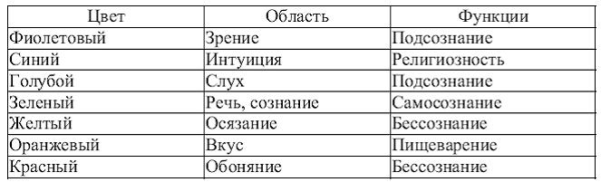
Таким образом, обобщим, что цвет в рекламе выступает как многофункциональное художественное средство:
♦ содействуя максимальному усвоению информации;
♦ усиливая аргументацию;
♦ стимулируя эмоции и ассоциации;
♦ облегчая распознавание рекламных объектов;
♦ привлекая внимание и надолго оставаясь в памяти;
♦ помогая выявлению основных и нейтрализации незначительных деталей;
♦ создавая ощущение социальной преемственности и целостности культурного пространства.
Кроме прочего цвет в рекламе выступает как определенный символ , выражающий :
1. историческую общественную дифференциацию (пурпур как привилегия высших слоев, зеленый — как цвет свободных граждан, во Франции белый — цвет короля, голубой — республиканцев);
2. возрастную дифференциацию (пастельные тона — для младших детей, яркие, «кислотные» — для подростков и т. п.);
3. профессиональную принадлежность (белый — цвет врачей, черный — трубочистов, оранжевый — пожарников, защитный — военных и т. п.);
4. политическую ориентацию (Белая гвардия, красный регион).
Цит. по: Основы рекламы: учебное пособие /
А.В. Костина, Э.Ф. Макаревич, О.И. Карпухин. — М.: КНОРУС, 2006. — С. 320-336
МОДУЛЬ 5. ПАБЛИК РИЛЕЙШНЗ КАК ЭЛЕМЕНТ МАРКЕТИНГОВЫХ КОММУНИКАЦИЙ
Тема 1. Сущность и природа паблик рилейшнз
Паблик рилейшнз: к проблеме определения
Более 60 лет назад в практику менеджмента вошло понятие паблик рилейшнз (PR ) — (public relations ) — отношения с общественностью .Это понятие подразумевает определенную форму управления общественными связями и структуру, призванную заниматься организацией общественных связей в соответствии с идеологией этой формы — идеологией PR . Иными словами, общественные связи реализуются через структуру паблик рилейшнз. Данная структура — управленческий элемент, элемент так называемого информационного менеджмента.
Ключевым понятием для паблик рилейшнз является понятие «соглашения, согласия, сотрудничества». Тот же Е. Росс отмечает, что когда интересы индивидов сталкиваются, они приходят к соглашению, «необходимому для того, чтобы избежать столкновения». Добровольное согласие, сотрудничество — идеальный вариант, свидетельствующий о высоком уровне развития личности, «сообщества» индивидов, в котором осуществляется их плодотворное сотрудничество, иерархия организаций. Исходя из того, что для паблик рилейшнз принципиально важно понятие «соглашения, согласия, сотрудничества», выделим основные определения паблик рилейшнз , сложившиеся сегодня в теории .
Доктор Рекс Харлоу , специалист по PR из Сан-Франциско ,на основе изучения 472 определений паблик рилейшнз дает такое определение: паблик рилейшнз — это одна из функций управления, способствующая установлению и поддержанию общения, взаимопонимания, расположения и сотрудничества между организацией и общественностью. Эта функция управления обеспечивает руководство организации информацией об общественном мнении и оказывает ему помощь в выработке ответных мер; обеспечивает деятельность руководства в интересах общественности; поддерживает его в состоянии готовности к различным переменам путем заблаговременного предвидения тенденций; использует исследование и открытое общение в качестве основных средств деятельности.
Английский институт общественных отношений принял такое определение PR — это планируемые, продолжительные усилия, направленные на создание и поддержание доброжелательных отношений и взаимопонимания между организацией и ее общественностью. Международный словарь Уэбстера :PR — это содействие установлению взаимопонимания и доброжелательности между личностью, организацией и другими людьми, группами людей или обществом в целом посредством распространения разъяснительного материала, развития обмена (информацией) и оценки общественной реакции.
В свою очередь Эдвард Бернейз из США определяет паблик рилейшнз как область действий, которая занимается взаимодействиями между личностью, группой, идеей или другой единицей общественности, от которой она зависит. PR охватывает взаимоотношения человека, организации, идеи с общественностью. В связи с этим Э. Бернейз особо отмечает, что основой PR являются общественные науки, а не журналистика, поскольку, как он считает, влиять на поведение можно, только опираясь на весь спектр общественных наук. Это очень важный вывод, который, на наш взгляд, заслуживает полного признания.
Другой американский специалист Фрэнк Джефкинс отмечает: «Паблик рилейшнз состоит из всех форм планируемой коммуникации, вовне и внутри, между организацией и ее общественностью для реализации определенных целей, направленных на достижение взаимопонимания».
А профессор Скотт Катли (США) так определил сущность этого понятия: «Паблик рилейшнз является функцией менеджмента, которая устанавливает и поддерживает взаимовыгодные отношения между организацией и публикой, от которой зависит успех или неудача».
По мнению профессора Сэма Блэка (Университет Стирлинг — Великобритания) ,лучшее из ныне существующих определений содержит Мексиканское заявление, с которым представители более чем 30 национальных ассоциаций паблик рилейшнз выступили в Мехико в 1978 г.: «Паблик рилейшнз — это искусство и наука анализа тенденций, предсказания их последствий, выдачи рекомендаций руководству организаций и осуществления программ действий в интересах и организаций и общественности». Сам Сэм Блэк дает такое определение: «Паблик рилейшнз — это искусство и наука достижения гармонии посредством взаимопонимания, основанного на правде и полной информированности».
Анализ приведенных понятий позволяет понять гносеологический и социологический смысл такого явления, как паблик рилейшнз. Паблик рилейшнз нельзя рассматривать вне таких понятий, как общественные отношения , социальное взаимодействие , управление социальными процессами , коммуникационное взаимодействие , общественность , общественное мнение , технология влияния на людей. Анализ позволяет сформулировать два подхода, определяющих сущность паблик рилейшнз — социальный и технологический. Первый относится к организации социального взаимодействия (в том числе и в форме политической и экономической борьбы), к достижению социального согласия; второй — к технологиям управления, воздействия на людей.
Таким образом, паблик рилейшнз как отношения с общественностью, прежде всего, — это организация социального взаимодействия посредством управления общественными связями (коммуникациями) между организацией и ее общественностью в целях достижения между ними взаимопонимания, согласия и сотрудничества; это организация социального взаимодействия, нацеленного в том числе на снятие общественно-экономических и общественно-политических противоречий в процессе политической, экономической и конкурентной борьбы. Иными словами, управляющим элементом по отношению к общественным связям выступают паблик рилейшнз (отношения с общественностью) как идеология и технология управления общественными связями, по сути управления культурой влияния на человека.
Кроме того, паблик рилейшнз — это искусство и наука анализа тенденций, прогнозирования их последствий, разработка рекомендаций для руководства организации и осуществление программ действий в интересах организации и социума.
Паблик рилейшнз прежде всего выполняют функцию управления. Но управления чем и от имени кого? Отметим, что это управление общественностью, общественным мнением, управление процессом создания социально-политико-психологической среды. Паблик рилейшнз — это функция управления общественными связями ,управления культурой влияния на человека, управления от имени власти, организации, фирмы, корпорации. Ибо только благодаря этой культуре, благодаря общественным связям можно влиять на общественность, на общественное мнение, на процесс создания социально-политико-психологической среды, важной для власти, организации, фирмы. Это влияние на общественность, на создание определенной среды достигается путем выработки продукта общественных связей — имиджей предмета , явления , события , человека .
В целом в этой управленческой цепи — власть, организация паблик рилейшнз — общественные связи (культура влияния на человека) — общественность — и проявляется феномен общественных связей и «паблик рилейшнз», их универсальная культурно-творческая функция.
Любая структура, которая поставила себе цель объясниться с обществом, общественностью, с той или иной социальной группой, с коллективом, поставила цель участвовать в политической и экономической борьбе, повлиять на общественное сознание, настроение, обучить, воспитать человека, — не может обойтись без паблик рилейшнз. Паблик рилейшнз выступают в роли идеолога, организатора и управляющего начала в этих процессах. Паблик рилейшнз — это идеология и механизм управления .PR как идеология борьбы — политической, экономической, конкурентной, и в то же время как идеология компромиссного разрешения противоречий, как идеология сотрудничества, взаимодействия с общественностью, влияния на нее, исходя из конкретных условий, — осуществляют функцию выбора форм воздействия на общественное сознание, на человека — выбора форм общественных связей. А паблик рилейшнз как механизм, как аппарат — это своего рода штаб, управляющий элемент в любой властной, социальной, политической, экономической структуре.
Система общественных связей и паблик рилейшнз (отношения с общественностью) как элемент управления этой системой — это наука о коммуникациях, обеспечивающих достижение согласия, сотрудничества, гармонии в обществе на основе согласования интересов различных социальных групп, классов, структур власти, бизнеса, экономики, культуры, в том числе и посредством политической, экономической, конкурентной борьбы. Паблик рилейшнз — важнейшая часть управления обществом и любой организацией, это принцип управленческой деятельности. PR мы рассматриваем и как своего рода идеологию политической, экономической и конкурентной борьбы, идеологию сотрудничества и согласования интересов и как технологию управления сознанием и настроением людей как внутри организации, так и на уровне социальной группы, социального слоя, класса, и в целом на уровне общества, как технологию продвижения продукции (идей, товаров, организаций, лидеров) на политическом рынке, рынках товаров и услуг, образования и культуры. Структуры паблик рилейшнз действуют в системе высшей, отраслевой, региональной власти, на предприятиях, в компаниях, фирмах, корпорациях, организациях.
Если общественные связи нацелены на регулирование, снятие противоречий в отношениях власти и общества, бизнеса и общества, культуры и общества, то паблик рилейшнз — это элемент управления этим процессом. По сути, паблик рилейшнз — это наука об управлении процессом снятия противоречий в общественных отношениях посредством организации влияния на людей. Деятельность в области паблик рилейшнз — особая сфера пропаганды, связанная с организацией прямого воздействия на власть, общественное мнение или избирателя.
Основные функции PR вытекают по сути из функций общественных связей. К функциям паблик рилейшнз относятся :
♦ в русле обеспечения социальных действий :установление отношений власти или организации с внешним миром, создание идеологии и привлекательного имиджа власти или организации, регулирование отношений между властью, организацией и внешним миром, разработка стратегии выживания и деятельности организации, стратегии воздействия на общественность;
♦ в русле обеспечения политической , экономической и конкурентной борьбы :выработка стратегии и технологии этой борьбы, организация и ведение ее, управление лидерами, создание политических, социальных, экономических ситуаций для разрешения конфликтов, продвижение идей, лидеров, товаров, продукции на политическом и экономическом рынках, рынке образования и культуры;
♦ в русле обеспечения развития личности :организация продвижения общекультурных ценностей, социокультурных образцов;
♦ в русле социального контроля масс ,влияния на человека: организация воздействия на поведение индивида, управление общественным сознанием, настроением масс, установление отношений внутри властных структур, фирм, компаний, организаций, укрепление их авторитета, работа с персоналом во имя устойчивости и прогресса компаний и фирм.
Сегодня все более становится ясно, что процесс социальных изменений в обществе лежит в сфере социальных технологий и связан с определенной практической деятельностью, направленной на преобразование (изменение состояния) социального объекта. В нашем случае объектом является общественность , а инструментом преобразования , изменения ее составляющих являются общественные связи ,которые включают в себя управляющее начало паблик рилейшнз. В ходе этих преобразований происходит изменение общественных отношений, но не напрямую, а посредством влияния на определенные социальные объекты. Поэтому общественные связи выступают как инструмент социальных изменений под управляющим началом структур PR .
Паблик рилейшнз в своем развитии прошли несколько этапов связанных с усложнением социального организма в западных обществах. Отмечают четыре таких этапа.
1. С середины прошлого века — модель рекламы , или publicity , отличается односторонним, манипуляторским подходом. Ныне эта модель применяется в 12–15% практики, полностью отсутствует в социально-политических сферах и редко в бизнесе.
2. С начала XX в. — модель общественной информации. Ей присущи распространение информации в обществе относительно целей той или иной организации, большое внимание к объективности сообщений. Но эта модель отличается односторонностью процесса коммуникации. Сейчас составляет 50% практики и применяется наиболее широко государственными и некоммерческими структурами.
3. Где-тос 1920 г. — двусторонняя асимметричная модель. Для нее характерно изучение установок аудитории с целью их изменения. Больше учитывается поведение и внутреннее состояние объекта влияния, чем в первых двух моделях. Но все же манипуляторские, пропагандистские тенденции преобладают. По сути, это пропагандистская модель. И она применялась в политических и экономических сферах общества, применяется сейчас в 15–20% практики, связанной с производством товаров и услуг.
4. С середины XX в. — двусторонняя симметричная модель. Ее главные принципы: взаимопонимание и партнерство с объектом влияния, максимальный учет интересов и мотивации объекта, возрастающая роль этического аспекта, отказ от пропаганды, фальсификаций и обмана. Удельный вес модели постоянно увеличивается. И хотя он занимает ныне 12–15% практики, эксперты утверждают, что будущее — за ней.
При управляющей роли паблик рилейшнз общественные связи за полтора века прошли путь от модели «голой» рекламы, модели общественной информации, двусторонней асимметричной модели к двусторонней симметричной модели, учитывающей интересы и мотивации как субъекта , так и объекта общественных связей .Эта модель учитывает основную тенденцию изменения отношения к объекту влияния — от манипуляторского к равноправному и партнерскому. Это на сегодняшний день наиболее демократичная модель паблик рилейшнз, по сути — высшая форма их. Хотя в реальности действуют в той или иной мере все четыре модели, но с разным удельным весом. Все это соответствует практике современного информационного менеджмента.
В управлении присутствуют всегда два начала : субъект и объект управления . Субъект — это либо властные, государственные структуры, либо фирма, предприятие, организация, политическая партия, общественное движение. Но в любом случае субъект — это активное начало, предопределяющее содержание и форму общественных связей. Объект управления — это такое образование, на которое направлены усилия субъекта. Избранная форма общественных связей зависит от того, какие цели ставит субъект, какими принципами руководствуется — сотрудничества, взаимодействия, согласия, взаимного учета интересов или жесткого манипулятивного воздействия на конкурента, на общественное сознание и настроение. От выбора субъектов цели и принципов воздействия на общественность зависит форма общественных связей — образование , пропаганда , реклама и т. д. Паблик рилейшнз выступает, с одной стороны, как идеология управления, благодаря которой определяются цели, принципы, формы воздействия субъекта на общественность, которая представлена тем или иным видом социального сообщества, а с другой стороны — как управленческая структура со своим аппаратом, как управляющий элемент в любой политической, экономической, социальной конструкции. Специалисты отличают субъект общественных связей (политические, экономические, социальные структуры) от субъекта управления ими, коим является PR как управленческий элемент. То есть субъект общественных связей предстает как бы в двух уровнях: 1-й уровень — политические, экономические, социальные структуры; 2-й уровень — аппарат паблик рилейшнз со своими методами работы.
Общественные связи в любом режиме действия, будь то образование, религия, пропаганда, реклама или массовая культура, имеют один и тот же принципиальный механизм действия. Модель этого механизма восходит к теории информации К. Шеннона .Согласно этой теории выделим принципиальные структуры механизма общественных связей. К этим структурам относятся :
1) источник информации;
2) отправитель, передатчик информации, коммуникатор;
3) способ, канал коммуникации;
4) приемник информации;
5) получатель, адресат информации;
6) система обратной связи, дающая информацию о реакции адресата на поступившее сообщение.
Деятельность всех этих структур происходит на фоне определенной социальной обстановки, влияющей на каждый элемент общественных связей.
Механизм общественных связей в разном их выражении (образование, религия, пропаганда, реклама и т. д.) управляется системой паблик рилейшнз. PR , как субъект управления, «мозговой» центр, выступает управляющим звеном, а управляемым звеном является механизм общественных связей. PR запускает этот механизм, определяет форму общественных связей (образование, религия, пропаганда, массовая культура, реклама), каналы коммуникации, которые будут использоваться в конкретном действии этого механизма. PR управляет этим механизмом, исходя из поставленных целей, регулируя процесс на основе обратной связи, с учетом существующей социальной обстановки. Создание и поддержание устойчивых динамичных отношений между субъектом общественных связей (будь то властные структуры или фирмы, корпорации, предприятия) и общественностью — это главная задача паблик рилейшнз как субъекта управления .
Применительно к механизму общественных связей, управляемому PR , в качестве источника информации выступают властные структуры, фирмы, организации, предприятия, партии, движения и структуры паблик рилейшнз. Объект воздействия, получатель информации — общественность, политические и экономические структуры. По сути, информация — «рабочее тело» любой выбранной формы общественных связей — образования, религии, пропаганды, рекламы. Но чтобы информация дошла до адресата, ее нужно закодировать , облечь в некую систему знаков :слово (произносимое и написанное), жест, мимика, изображение (фильм, снимок, плакат), символ (эмблема), организованный звук (музыка), цвет, свет. Организацией этого занимается аппарат паблик рилейшнз. Для отправителя информации, того, кто кодирует ее, важно такое оформление информации, чтобы она была психологически приемлема для аудитории и смогла бы влиять на людей через воздействие на их сознание. Роль канала коммуникации выполняют средства массовой информации , публичные политики, учителя, служители культа, т. е. учебные заведения, церковь, массовые акции, личное общение с аудиторией, симпозиумы, конференции, выставки и т. п. В качестве приемника информации в коммуникационной системе выступает структура, способная принять посланный отправителем по каналу коммуникации сигнал и преобразовать его в сообщение, значимое для адресата. Информация, воздействуя на адресата, на общественность, влияет на нее, изменяет ее состояние. Данные об этом по каналам обратной связи доводятся до субъекта управления, до PR, что позволяет вносить определенные корректировки в деятельность механизма общественных связей. Обратная связь служит как бы вторичным модификатором коммуникации.
Целевые общественные группы
Как правило, PR-деятельность не направлена на широкую общественность (за исключением редких случаев), а нацелена на определенные группы людей, являющиеся частью широкой общественности. Общественная группа — это любая группа людей , связанных общими интересами или заботами , чьи действия имеют определенные последствия для организации. Общественные группы бывают внешние и внутренние. Специалист PR , изучая полный список общественных групп, выявляет приоритетные, наиболее уместные для воздействия средствами PR .
Приоритетные общественные группы могут быть охарактеризованы по наименованию, демографическому и психологическому признакам. В отношении общественных целевых групп необходимо учитывать различия в подходах, мнениях и убеждениях их членов. Подходы — это тенденции или ориентация по отношению к чему либо. Мнения — это выражение оценок или суждений. Убеждения — уверенность в своей системе ценностей.
Принципы , способные помочь организации поддерживать благоприятное общественное мнение :
1) экономическая и социальная стабильность любой организации зависит от подходов и мнения общественных групп, попадающих в поле деятельности организации;
2) необходимо наладить обратную связь организации с внутренними и внешними общественными группами, необходимую для адаптации организации к изменениям.
У каждой организации, компании, корпорации есть свои группы людей, для взаимодействия с которыми она использует внутренние или внешние коммуникации. Целевые группы общественности для любой организации, как отмечает английский исследователь Фр. Джефкинс, можно разделить на 10 отдельных категорий .
1. Те или иные властные структуры (центральные и местные), общественная среда.
2. Потенциальные работники для организации.
3. Работники организации.
4. Поставщики услуг и материалов.
5. Инвесторы, акционеры и другие участники финансового рынка.
6. Дистрибьюторы.
7. Потребители и пользователи продукции и услуг организации.
8. Лица, влияющие на общественное мнение.
9. Профсоюзы.
10. Средства массовой информации.
Для того чтобы понять позицию каждой общественной группы, PR -специалист должен задать себе вопрос: «Если бы я был представителем этой общественной группы, с такой историей, в такой ситуации, с такими принципами, то как бы я отреагировал на те обстоятельства, которые создает моя организация?». Все это позволит планировать действия в конкретных ситуациях.
Почему необходимо выделять группы общественности? Для того, чтобы их точно «привязать» к конкретной PR -проблеме, чтобы установить приоритеты в рамках имеющегося бюджета и выделенных ресурсов на PR -деятельность; чтобы точно выбрать СМИ для PR -воздействия, чтобы подготовить эффективную информацию для воздействия на целевую группу.
Обратная связь в системе паблик рилейшнз. Именно обратная связь позволяет субъекту управления, т. е. PR -службе, получать информацию об эффективности воздействия на общественность, информацию о состоянии объекта управления. Обратная связь бывает внутренняя и внешняя. Посредством внутренней обратной связи субъект управления (властные, предпринимательские структуры) имеют возможность получить представление о собственной деятельности, о том, насколько она соответствует намеченной программе. Внешняя обратная связь позволяет получить информацию о состоянии и поведении общественности, сравнить разработанную программу с реальной конечной ситуацией. Как правило, внутренняя и внешняя обратная связь осуществляется при помощи непосредственного наблюдения (линейная связь) или социологических опросов (нелинейная связь).
Взаимодействие субъекта общественных связей, т. е. паблик рилейшнз (коммуникатор) и объекта, т. е. общественности, происходит в условиях конкретной социальной обстановки, конкретной внешней среды. Социальная обстановка оказывает влияние на весь процесс взаимодействия субъекта и объекта общественных связей. Эта обстановка неплохо изучается профессионалами паблик рилейшнз, изучается состояние самой общественности и общественных целевых групп. Весь процесс паблик рилейшнз основывается на знании общественного мнения, на знании социальной обстановки: в каких условиях живут и действуют люди и что они думают?
Цит. по: Основы рекламы: учебное пособие /
А.В. Костина, Э.Ф. Макаревич, О.И. Карпухин. — М.: КНОРУС, 2006. — С. 170-179, 202-204
Тема 2. Технология планирования и управления pr-деятельностью
Маркетинговая деятельность паблик рилейшнз
Маркетинговая PR -деятельность — этодеятельность по осуществлению маркетинга любого проекта , под которым подразумевается продвижение того или иного товара , организации , влияние на целевые группы , определенная акция и т. д. С точки зрения маркетинга каждый проект должен иметь под собой маркетинговую основу (хоть в сфере бизнеса, хоть в сфере культуры).
Различают (по Ф. Котлеру ):
Маркетинг продукта (товара) — это деятельность, предпринимаемая с целью создания, поддержания или изменения позиций и / или поведения целевых аудиторий по отношению к конкретному продукту (товару).
Маркетинг услуг — это деятельность, предпринимаемая для создания, поддержания или изменения позиций и / или поведения по отношению к определенным услугам.
Маркетинг организаций — это деятельность, предпринимаемая с целью создания, поддержания или изменения позиций и/или поведения целевых аудиторий по отношению к конкретным организациям.
Маркетинг отдельных лиц — это деятельность, предпринимаемая для создания, поддержания или изменения позиций и / или поведения по отношению к конкретным лицам.
Маркетинг мест — это деятельность, предпринимаемая с целью создания, поддержания или изменения отношений и / или поведения, касающихся конкретных мест.
Таким образом, маркетинговая PR -деятельность — это любая деятельность по организации и осуществлению рыночных коммуникаций, направленная на формирование общественного мнения в заданном направлении посредством продвижения стратегической идеи в общественное сознание.
Что такое стратегическая идея? Это формулировка , выражающая основную идею воздействия на конкретную целевую аудиторию. Эта формулировка разрабатывается в контексте креативной, журналистской, социологической, психологической, философской составляющих. Тактика идеи — это формы ее реализации (выбор PR-инструментов), выбор информационных каналов ее распространения, соответствующих целевой аудитории.
Маркетинг проекта — это приведение всех ресурсов стратегической идеи в соответствие с требованиями и возможностями целевых групп с целью получения оптимального числа сторонников идеи в ходе продвижения идеи в общественное сознание.
Для того чтобы сформулировать стратегию и определить тактику стратегической идеи , необходимо сначала провести ситуационный анализ.
Результатом ситуационного анализа прежде всего должна стать оценка состояния целевой группы (групп) и оценка состояния конкурирующих идей. На основании этих оценок вырабатывается стратегическая идея.
Инструментами оценки состояния целевых групп и конкурирующих идей в процессе ситуационного анализа являются:
♦ природа спроса ,которая рассматривается не столько в экономическом аспекте, сколько в социальном, демографическом, географическом и психологическом контекстах;
♦ уровень спроса — это количественный показатель, отражающий емкость рынка, тенденции спроса, позволяющий получить полную информацию о целевых группах в разрезе представляемой идеи;
♦ характеристика внешнего окружения — это анализ текущих социальных, политических и экономических тенденций;
♦ намерения конкурентов (природа конкурирующих идей) включают изучение текущих PR -программ и идей, продвигаемых конкурентами, прогноз ответных шагов конкурентов ;
♦ стадии жизненного цикла товара ;
♦ опыт фирмы ;
♦ финансовые ресурсы ;
♦ жизненный цикл товара — это концепция, которая описывает все элементы маркетинга с момента рождения товара, стадии его популярности, стадии зрелости и до его «заката». Вокруг жизненного цикла товара и выстраивается стратегическая идея.
Точное определение этапа жизни продвигаемого товара является одной из важнейших маркетинговых задач при реализации PR -проекта, поскольку стратегия информационного воздействия на аудиторию различна на различных этапах жизненного цикла товара.
Первый этап — рождение продукта. Здесь целью маркетинга являются определение потенциальных целевых групп и позиционирование нашей стратегической идеи. Наиболее часто используемая PR -стратегия — информационно-разъяснительная.
Второй этап — увеличение популярности продукта. И цель маркетинга — в этом. Наиболее часто используемая PR -стратегия — убеждающая.
Третий этап — зрелость (этап баланса популярности продукта). Для этого этапа характерны максимальная конкуренция и необходимость сохранения достигнутого преимущества. Кроме того, усилия PR должны быть направлены на нейтрализацию информационных атак конкурентов.
Четвертый этап — закат (этап морального износа). На этом этапе традиционно используются три основных идеи: постепенный вывод на рынок «преемника» данного товара; реанимация продукта путем модификации характеристик, имиджа, способов продвижения товара и т. д.; завершение проекта в целом и поиск новых перспективных продуктов.
Таким образом, ситуационный анализ складывается из двух основных блоков :
1) исследования целевых групп;
2) исследования конкурирующих идей.
Итогом ситуационного анализа должна стать стратегическая идея.
Следующий шаг в маркетинге проекта — подготовка плана маркетинга ,который включают в себя тактику продвижения идеи (создание имиджа, выбор коммуникационных каналов, здесь же использование рекламы, финансы и т. д.). Следующий этап — реализация плана путем координации работ по завоеванию общественного мнения и продвижению идеи, обеспечение обратной связи.
Функции служб паблик рилейшнз
Переговорный процесс. Конфликт можно рассматривать как столкновение интересов определенных субъектов. Под субъектами конфликта подразумеваются определенные группы или организации. Это могут быть трудовые коллективы, профсоюзы, политические партии, компании и фирмы, суверенные государства. Например, профсоюзы, представляющие интересы работников, входят в конфликт с работодателем. Главным мотивом возникновения конфликта в данном случае может быть материальный интерес — оплата труда, социальные гарантии. Конечно, столкновения интересов в ходе конфликта могут приобретать насильственные формы: забастовки, демонстрации, пикеты. Но, в конце концов, участники конфликта идут на переговоры и находят решения. Стратегия противоборства , соперничества превращается в стратегию сотрудничества. Стратегия сотрудничества в процессе разрешения конфликта превосходит стратегию соперничества. Ценность полученного результата при этом значительно выше, чем результата, полученного при соперничестве. Все, что касается сотрудничества, соединения интересов, — это сфера паблик рилейшнз . Поэтому методы паблик рилейшнз — это методы разрешения конфликта в духе сотрудничества, но не соперничества.
Работа с персоналом. Задача служб паблик рилейшнз состоит в том, чтобы контролировать «закрытую» общественность (т. е. трудовые коллективы), способствовать наиболее эффективному управлению человеческим фактором, смысл которого в том, что современные сверхсложные техника и технологии мертвы без знаний, профессионализма, ответственности человека. Эффективность деятельности PR -служб зависит от глубины понимания социально-психологических характеристик персонала, который рассматривается не только как совокупность работающих, но и как совокупность личностей. Поэтому понятия «коллективизма» и «индивидуализма» имеют в данном случае одинаковый удельный вес .Сегодняшний работник — это не «наемная сила». Эффективность деятельности современной компании зависит от сплоченности персонала, от доверительных, заинтересованных отношений между руководством и сотрудниками, от надежности вертикальных и горизонтальных связей, что и обеспечивают службы паблик рилейшнз.
Изучение общественного мнения. Процесс воздействия на людей, на общественность требует постоянного изучения общественного мнения, и на основании этого вносятся коррективы в деятельность структур паблик рилейшнз. Новым шагом в понимании природы общественного мнения явилась концепция Н. Мансурова ,который рассматривает общественное мнение не как состояние массового сознания , а как общественно-психологическое явление .Оно возникает у членов общества в силу одинаковых условий бытия. Возможен и иной путь. Он связан со средствами массовой информации и с личным общением, т. е. с коммуникациями. Допустим, в СМИ в личном общении обсуждается какая-то проблема. В результате обмена мнениями вырабатывается общая точка зрения .Это «общее», — пишет Н. Мансуров, — продукт коммуникативного процесса, оно не могло возникнуть у каждого человека в отдельности. Это выработанное общественное мнение .Это «общее» не просто выражает мнения, чувства, желания людей, оно воздействует на каждого человека, заставляя его подчиниться общему, поступить так, как это предписывает общественно-психологическое явление. По сути, это форма социального контроля. Концепция Н. Мансурова соотносится с концепцией западногерманского социолога Э. Ноэль-Нойман.
Она считает, что индивид формирует свое суждение об общественном мнении, о том, что морально одобряется и не одобряется, на основании двух источников: из непосредственного наблюдения за окружением и его сигналами об одобрении и неодобрении — с одной стороны, и из средств массовой информации, в которых проявляются взаимно подтверждающиеся сигналы, — с другой. Иначе говоря, средства массовой информации влияют на установки и поведение отдельного человека .Понимание общественного мнения Н. Мансуровым и Э. Ноэль-Нойман, как нам кажется, наиболее полно вписывается в теорию общественных связей, ибо коммуникативный процесс, проявляющийся и в наблюдениях за окружением, и в деятельности средств массовой информации, воздействует на человека, его установки и поведение. Для управления общественными связями, для определения стратегии паблик рилейшнз необходимо изучение общественного мнения как суждений индивидов, проявляющихся в наблюдении за окружающей действительностью, и в процессе выработки общей точки зрения под влиянием средств массовой информации и общественности .
Самая распространенная форма исследования общественного мнения — это социологические опросы и интервью как вид опроса проводят по телефону, на работе, по месту жительства. Экспертные опросы состоят из опросов лидеров общественного мнения, опроса целевых и полярных групп. К лидерам общественного мнения относятся политики , журналисты , деятели литературы и искусства .Целевые группы объединяют респондентов из определенных социально-демографических групп. Целевые группы в свою очередь становятся фокус-группами ,в которых обсуждаются те или иные проблемы. Полярные группы состоят из респондентов, представляющих крайние социальные группы общества. Ими могут быть безработные и бизнес-элита. Результаты исследований, изучения различных процессов, выраженные в таблицах, схемах, расчетах, могут только иллюстрировать процесс, если его составляющие обоснованы теоретически. Каждая числовая величина может интерпретироваться с различных точек зрения, поэтому она обладает свойством многозначности. Сам процесс интерпретации зависит от рабочей гипотезы, и, по сути, анализ полученных данных, по нашему мнению, сводится к проверке рабочей гипотезы. Итоги исследования сводятся в отчет, в котором социологические данные, представленные в виде показателей, отвечают, подтверждают или опровергают основную гипотезу исследования .
Для получения достоверных данных по итогам социологического опроса обязательным условием становится правильно составленная выборка. Стремясь подстроиться под интересы заказчика, социологи могут явно или неявно «корректировать» выборку опрашиваемых. Что часто и происходит. И тогда результат получается смещенным в нужную сторону при формальном соблюдении остальных процедур. Профессиональные социологи рассказывают, как это делается: при обычном исследовании некоторое количество людей отказывается в нем участвовать, и тогда одна социальная группа оказывается представлена больше, чем другая. Так и происходит это смещение в определенную сторону. Если организаторы хотят повысить рейтинг коммунистов, в выборке увеличивают долю пенсионеров, а если хотят повысить рейтинг либералам, то опрашивают средний класс. Например, для высокого рейтинга партии «Единая Россия» социологам достаточно отсечь традиционно коммунистическое сельское население. А для «раскрутки» какой-нибудь «карликовой» партии достаточно включить ее в общий рейтинг партий, даже если у нее минимальный процент сторонников.
Технология планирования и управления PR-деятельностью
Управление PR-деятельностью основывается на искусстве решения PR -проблем. Согласно концепции С. Катлипа , А. Сентера и Г. Брума выделяют четыре этапа процесса разрешения PR -проблем .
1. Определение проблемы. Определение проблемы включает зондирование и отслеживание проблемы. Это аналитическая функция организации, благодаря которой выясняется «Что происходит в данный момент?»
2. Планирование и программирование. На этом этапе вырабатывается программа работы с общественностью, с целевыми группами , определяются задачи и содержание практических шагов, стратегия и тактика коммуникации. Здесь необходимо ответить на вопрос: «Что необходимо изменить, сделать или сказать исходя из анализа ситуации? »
3. Действие и коммуникация. Это этап реализации программы действий и коммуникации, направленных на то, чтобы добиться конкретных изменений в целевых группах. Здесь главный вопрос: «Кто должен это сделать, сказать, когда, где и как именно?»
4. Оценка программы. Это последний этап процесса управления, включающий оценку подготовки, хода реализации и достигнутых результатов программы. Главный вопрос: «Какова эффективность проделанной работы?»
Первый этап: Определение проблемы и ее анализ
1. Формулировка проблемы.
Выявление и формулировка проблемы складываются из ответов на следующие вопросы:
♦ Что является источником проблемы (какая-либо организация, какое-то решение, схождение каких-то обстоятельств и т. д.)?
♦ Где кроется проблема (кто «носитель» этой проблемы)?
♦ Когда обострилась проблема?
♦ Кто «втянут» в проблему, кто от нее «страдает»?
♦ Почему эта проблема беспокоит организацию и ее целевые общественные группы, с которыми она работает?
2. Ситуационный анализ.
Анализ ситуации должен содержать всю исходную информацию, необходимую для объяснения содержания выявленной проблемы. Собранные материалы, касающиеся анализа ситуации, представляют собой досье, состоящее из двух блоков: блок внутренних факторов и блок внешних факторов.
Блок внутренних факторов содержит документы и материалы, связанные с организационными вопросами, процедурами и акциями внутри организации, имеющими отношение к проблемной ситуации. Анализ ситуации должен начинаться с тщательного обзора содержания мнений и действий ключевых фигур организации, ее структурных подразделений, ответственных за проблему. В этом же блоке находятся материалы, связанные с коммуникационным аудитом, т. е. отражающие коммуникационное поведение организации, позволяющие увидеть, как организация общается с общественностью. Коммуникационный аудит позволяет увидеть узкие места информационных потоков, неравномерность коммуникационных нагрузок. Таким образом, в блок внутренних факторов входят :
а) описание позиции ведущих руководителей организации относительно проблемной ситуации;
б) описание того, как в текущий момент организация справляется с проблемной ситуацией;
в) перечень ключевых лиц внутри организации, имеющих отношение к проблеме.
Блок внешних факторов включает материалы, касающиеся внешних групп общественности и учреждений, имеющих отношение к проблемной ситуации. Изучение целевых групп общественности помогает определить их информационные потребности и готовить для них соответствующую информацию. Зная систему их коммуникационных предпочтений, можно выбрать наиболее эффективные СМИ для воздействия на них. В блок внешних факторов входят:
а) сведения о лицах, целевых группах и СМИ, разделяющих обеспокоенность, интересы и позиции организации относительно проблемной ситуации;
б) сведения о лицах, целевых группах и СМИ, не разделяющих обеспокоенности, интереса и позиций организации относительно проблемной организации;
в) перечень государственных учреждений, законодательных структур, должностных лиц, наделенных исполнительными и законодательными полномочиями, влияющих на организацию и проблемную ситуацию;
г) перечень СМИ и журналистов, причастных к сообщениям об организации и проблемной ситуации.
В процессе последующего анализа выявляются и перечисляются сильные и слабые (уязвимые) стороны организации в данной проблемной ситуации, а также выявляются угрозы (опасности) со стороны внешнего окружения, существующие для нее в данной проблемной ситуации, и определяются возможности организации в разрешении ситуации.
На основе данного анализа делаются выводы, суть которых в том, что существующим опасностям (угрозам) можно противостоять, опираясь на сильные стороны организации и минимизируя слабые стороны и существующие угрозы.
После того как PR -проблема определена и на основе собранных данных проведен ситуационный анализ, выявлены уязвимые места, резервы и возможности организации, вырабатывается стратегия решения проблемы (стратегическая идея для влияния на целевые группы) , определяются пути ее воплощения , посредством использования существующих резервов и возможностей .Проверка стратегической идеи осуществляется на фокус-группах.
Второй этап: Планирование и программирование.
Процесс планирования включает следующие стадии:
1. Определение ключевых участков, требующих изменений.
2. Выбор и уточнение целей. Цели являются одним из важнейших элементов процесса планирования — это те результаты, которых необходимо достичь в отношении ключевой группы общественности. Цели бывают следующие: цели выхода (подразумевают использование неконтролируемых СМИ и контролируемых СМИ для размещения публикаций) и цели влияния (подразумевают информационные цели, цели в сфере установок (формирование или изменение установок целевых групп), цели в сфере поведения (формирование поведения, изменение поведения целевых групп).
3. Подготовка плана действий:
♦ программирование (процесс программирования содержит подготовку обращений, адресованных группам общественности; определение средств информации, которые будут использованы для коммуникации с группами общественности; выбор принципов эффективной коммуникации);
♦ составление графика (устанавливаются сроки выполнения мероприятий и достижения целей);
♦ составление бюджета (определяются источники и распределяются финансовые ресурсы);
♦ разделение ответственности (назначаются ответственные за конечные результаты и выполнение отдельных заданий).
4. Установление контроля за эффективным достижением цели.
Третий этап: Действие и коммуникация.
После того как утвержден стратегический план, сформулированы цели и выбраны средства коммуникации, при помощи которых будет реализовываться PR -программа, переходят к практическим действиям. Какие силы нужно задействовать, как конкретно общаться с общественностью, чтобы повлиять на нее, сформировать нужное общественное мнение?
В ходе реализации программы первыми элементами коммуникационного процесса выступают ее тема (основная идея) и информационные сообщения ,которые своим содержанием должны охватывать цель программы и должны быть составлены в соответствии со стратегической идеей. Слоган ,выражающий суть стратегической идеи, должен быть привлекательным и запоминающимся. Чтобы правильно составить сообщение, нужно поставить себя на место тех, кому оно адресуется. Сообщение должно составляться с учетом ситуации , времени , места и аудитории .
Продвижение сообщения: использовать СМИ, наиболее приближенные к позиции целевой группы; использовать источник коммуникации, пользующийся наибольшим доверием целевой группы по данному вопросу; сводить к минимуму расхождения в позициях коммуникатора и целевой группы; доказывать, что позиция коммуникатора совпадает с мнением большинства.
Четвертый этап: Оценка программы.
Руководство организации ожидает доказательств результативности влияния реализованных PR -программ. Оценка реализации PR -программы включает подсчет количества опубликованных материалов, распространенных пресс-релизов, статей, помещенных в печатных СМИ, а также включает подсчет количества охваченных PR -программой читателей, телезрителей, радиослушателей (потенциальных и реальных).
Более высоким уровнем оценки выполнения PR -программы является определение количества людей, изменивших свои установки и начавших действовать определенным образом, в духе стратегической идеи. Здесь прибегают к методам прямого и опосредованного исследования вплоть до проведения социологических исследований.
Цит. по: Основы рекламы: учебное пособие /
А.В. Костина, Э.Ф. Макаревич, О.И. Карпухин. — М.: КНОРУС, 2006. — С. 245-248, 253-260
Тема 3. Технологии паблик рилейшнз: pr-инструментарий
Отношения со средствами массовой информации
Отношения со средствами массовой информации (СМИ) являются важнейшей составляющей PR. Общественное мнение в основном формируется под воздействием того, что люди читают в прессе, слышат по радио или видят по телевидению, поэтому сотрудничеству со СМИ специалисты по PR уделяют особое внимание.
Функции связи с прессой могут реализовываться сотрудниками самой организации либо привлеченными консультантами. В крупных организациях, как правило, создаются информационно-аналитические службы или пресс-центры, являющиеся подразделениями отдела PR. В небольших организациях существует должность ответственного за связь с прессой, в обязанности которого входит:
1) поддерживать постоянные контакты с представителями прессы;
2) подготавливать и предоставлять материалы для печати;
3) отвечать на запросы и предоставлять комплексные информационные услуги, соблюдая два необходимых условия: точность и скорость. Если журналист задает вопрос, на который ответственный за связь с прессой не может ответить, он обязан назначить время, когда сможет дать ответ и пунктуально выполнить собственные обязательства по передаче информации;
4) составлять и выполнять план выпуска заявлений для печати и очерков о деятельности организации;
5) осуществлять мониторинг — отслеживание, анализ и оценку сообщений печати, радио и TV ; по необходимости принимать меры по исправлению ошибок в сообщениях или выступать с опровержениями;
6) обеспечивать информационно-аналитическую поддержку менеджеров и сотрудников организации по вопросам, затрагивающим ее интересы;
7) создавать банк данных, видео- и фототеку об истории организации и ееобщественно значимой деятельности;
8) организовывать брифинги и пресс-конференции;
9) подготавливать интервью должностных лиц организации для СМИ.
По вопросам, представляющим жизненно важный интерес для организации, от ее имени должен выступать не ответственный за связь с прессой, а сам руководитель организации. В свою очередь ответственный за связь с прессой должен прилагать максимум усилий по подготовке выступления руководителя и обеспечению его участия в общественной жизни.
Информация в прессу может быть представлена в виде следующих материалов.
1.Пресс-релиз ( press - release ) — информационное сообщение, содержащее важную новость. Наличие новости принципиально важно для СМИ, поэтому пресс-релиз часто называют ньюз-релизом ( news - release ).
2.Бэкграунд ( background paper ) — информация текущего характера, не содержащая сенсаций. Такого рода информация регулярно рассылается в СМИ для обеспечения непрерывного потока новостей, исходящих от организации. Бэкграунд служит также для конкретизации информации, представленной в пресс-релизе.
3. Пресс-кит ( press - kit ) — папка, содержащая комплект материалов, которые могут понадобиться прессе при подготовке публикации. Содержание комплекта определяется ответственным за связь с прессой и, как правило, состоит из:
• пресс-релиза;
• бэкграунда;
• биографий (если нужно);
• фотографий, схем, графиков;
• текста интервью;
• других материалов.
4. Авторская статья ( by - liner ) — статья, подготовленная PR-службой и подписанная руководителем или другим должностным лицом организации. Цель авторской статьи — придать публикации престижность и повысить репутацию организации и ее руководства как источника, заслуживающего доверия. Копии опубликованных статей часто используют в прямой почтовой рассылке для поддержания позитивного имиджа у целевой аудитории, а также для укрепления внутрифирменных отношений.
5. Обзорная статья (round-up article). Многие издания неохотно публикуют обзорную информацию о деятельности различных организаций в рамках конкретной отрасли. Такие материалы могут быть подготовлены PR-службой организации. При этом одно упоминание малоизвестной фирмы в ряду широкоизвестных и завоевавших хорошую репутацию организаций способно создать известность или повысить престиж этой фирмы.
6. Форма «вопрос-ответ» ( question - and - answer form ) — это перечисление наиболее часто задаваемых вопросов по какому-либо предмету с подробными ответами на них. С помощью такой формы на страницах газеты может быть имитировано интервью или круглый стол по какой-либо тематике.
Подготовка информации
Перед началом подготовки информационного сообщения должны быть сформулированы цель и идея сообщения и продуман его план. Это поможет точнее выбрать издание или передачу, в которой представление информации окажется наиболее эффективным. Идея информационного сообщения должна:
• иметь отношение к читателю издания;
• находиться в кругу его интересов;
• привлекать внимание.
Как говорят специалисты, «не стоит рекламировать тракторы в журнале для любителей кошек ».
План информационного сообщения позволяет определить последовательность изложения идеи и четко представить необходимую аргументацию.
Информация должна быть оперативной и интересной, написанной живым и доступным языком. Текст не следует перегружать лишней информацией. Сообщение должно быть конкретно и удобно для восприятия.
Структура пресс-релиза
Пресс-релиз — это самый распространенный способ передачи информации в прессе, первое по значимости средство PR.
Пресс-релиз, как правило, состоит их четырех основных блоков:
1. броский, яркий заголовок, позволяющий выделить конкретное информационное сообщение из множества подобных и привлечь внимание редактора издания;
2. лид ( lid ) — первый абзац. Это сжатая информация; суть того, что будет изложено ниже; ответы на ключевые вопросы, обязательные для пресс-релиза: кто, что, где, когда, почему, как. Основное требование к первому абзацу — отсутствие деталей и подробностей;
3. информационный блок — подробная, развернутая информация с использованием цитат и конкретных цифр;
4. справочный блок — адрес, контактный телефон, факс и другая справочная информация.
Требования, предъявляемые к подготовке пресс-релиза
1. Объем пресс-релиза — 300–500 слов, т. е. 1–2 страницы текста. Когда информация не умещается на одной странице, в нижнем правом углу ставится пометка «см. далее ». Если возникает необходимость в представлении объемной фактической информации, лучше ее оформить в виде приложения к пресс-релизу, чем делать длинный пресс-релиз.
2. Текст пресс-релиза должен быть отпечатан на одной стороне листа, с широкими полями для заметок редактора и через два интервала.
3. Абзацы должны быть краткими, не более 6 строк, и печататься с красной строки. Каждое предложение может быть отдельным абзацем. Во избежание ошибок при наборе текста слова не разрываются для переноса, а абзац не переносится на следующую страницу.
4. Текст не должен содержать двусмысленностей, прилагательных в превосходной степени, большого количества придаточных предложений, технических деталей (за исключением материала для специализированной прессы).
5. Следует указывать точные, а не приблизительные цифры; при упоминании конкретного лица необходимо привести его полное имя и должность.
6. При наличии фотографий по теме пресс-релиза следует сообщить, каким образом их смогут получить заинтересованные представители СМИ.
Пресс-релиз лучше печатать на фирменном бланке; в идеале он должен полностью или частично воспроизводить фирменный стиль организации. Иногда целесообразно готовить несколько вариантов пресс-релиза по одной теме, так как разные издания будут по-разному освещать событие, изложенное в пресс-релизе.
Куда и как направлять пресс-релиз
Необходимо составить список получателей материалов (базу данных) и поддерживать его в актуальном состоянии. Моделью подобной базы данных служит медиа-карта (пресс-карта). Медиа-карта разрабатывается информационно-аналитической службой организации и содержит следующие реквизиты:
1. название издания, предпочтительного для размещения материалов организации;
2. тираж издания;
3. распространение издания: соотношение подписки и розницы; если бесплатное распространение, то кому, как и т. д.;
4. целевая аудитория, ее состав (профессиональный, возрастной и т. д.);
5. жанровая структура издания по полосам / дням недели / рубрикам;
6. данные о составе редакции, журналистах, профессиональной направленности ит. д.
Медиа-карта должна содержать и информацию об изданиях, контактов с которыми необходимо избегать.
Ответственному за связь с прессой следует знать специфику функций персонала газеты и адресовывать пресс-релиз конкретному лицу.
Список рассылки пресс-релизов может включать:
— заведующего отделом новостей, если речь идет о центральных газетах;
— редактора финансовых новостей;
— редактора бизнес-новостей, отделов образования, спорта и т. д.;
— главного редактора, если речь идет о небольших газетах.
Готовый пресс-релиз передается в СМИ по обычной или электронной почте, по факсу или через курьера.
Всегда следует помнить о значении личных контактов с работниками СМИ. Из личного знакомства не следует, что материал обязательно будет опубликован, однако оно, безусловно, обеспечивает преимущество перед коллегами, не знакомыми лично с редактором или журналистом, и может в перспективе привести к благоприятным результатам. После того как материал напечатан, необходимо связаться с редактором или журналистом и поблагодарить его за точную и высокопрофессиональную передачу информации.
Пресс-конференции и брифинги
Брифинги и пресс-конференции представляют собой встречи официальных лиц спредставителями СМИ для информирования общества по актуальным вопросам.
Пресс-конференция посвящается подробному обсуждению 1–2 вопросов и, в среднем, проводится в течение 1,5 часов.
Проведение пресс-конференции оправдано только в том случае, если:
1) в организации есть «горячие »новости, и необходимо сделать важное сообщение, по которому у журналистов могут возникнуть вопросы, или необходимо срочно отреагировать на определенное событие;
2) в город приезжает известный специалист, интересный человек, готовый выступить перед представителями СМИ;
3) журналисты предпочитают личные информационные контакты с официальными лицами.
В других случаях информация передается в СМИ пресс-релизом и необходимости в проведении пресс-конференции нет.
Подготовка и проведение пресс-конференции
Пресс-конференция — важнейшее средство PR, требующее тщательной подготовки, состоящей из следующих этапов.
1. Выбор даты и времени проведения конференции. Возможны некоторые варианты:
• пресс-конференция должна быть проведена в конкретный день;
• если есть возможность выбора дня, следует избегать совпадения по времени с другими мероприятиями, важными для прессы и общественности (выступлениями политических деятелей, событиям в культурной и спортивной жизни и т. д.).
Специалисты рекомендуют проводить пресс-конференцию во вторник, среду или четверг не ранее 10:00 и не позже 15:00. Как правило, ее назначают на 11:00 или 14:00.
2. Выбор подходящего помещения. Оно не должно быть слишком большим, чтобы зал не выглядел полупустым, и не должно быть чьим-либо офисом. Пресс-конференции могут быть организованы в бизнес-центрах отелей, местных пресс-клубах, общественных зданиях, расположенных в неудаленных от представителей СМИ районах.
Необходимо проверить наличие:
• соответствующего количества стульев;
• места для размещения TV -камер;
• микрофона;
• стойки для микрофона на платформе;
• электропитания (розетки для TV -оборудования);
• стола регистрации представителей СМИ и выдачи печатных материалов;
• стола и стульев для докладчиков;
• пепельниц;
• стендов (при необходимости);
• минеральной воды для участников (желательно).
3. Извещение представителей СМИ о предстоящей пресс-конференции. Приглашения высылаются так, чтобы достичь адресата хотя бы за 7 дней до пресс- конференции. Они содержат
• тему;
• полное имя основных докладчиков;
• немного подробностей, необходимых для того, чтобы убедить редактора в целесообразности освещения событий, но недостаточных для того, чтобы желание посетить пресс-конференцию отпало;
• дату, место проведения, время и продолжительность пресс-конференции;
• полное имя и контактный телефон ответственного за связь с прессой.
4. Подготовка текстов докладов. Тексты всех докладов печатаются заранее. Во время конференции они доступны всем присутствующим журналистам, а после нее рассылаются в СМИ, представителей которых не было на конференции. Для каждого представителя прессы также готовится пресс-кит, содержащий соответствующую информацию.
5. Накануне пресс-конференции
— ход пресс-конференции проговаривается с основными участниками;
— составляется и тиражируется список участников конференции для раздачи представителям прессы.
6. В день проведения пресс-конференции все приготовления должны быть закончены, по меньшей мере, за 30 минут. У входа установлены столы для регистрации; журналисты проходят регистрацию, получают пресс-релизы, списки участников, другой раздаточный материал.
Докладчики должны сидеть на определенном возвышении; перед ними поставлены таблички с именами и должностями (надписи сделаны крупным шрифтом и видны с задних рядов).
Сотрудники, задействованные в пресс-конференции, должны иметь беджи — нагрудные таблички-идентификаторы, содержащие полное имя, должность и название организации.
Ведет пресс-конференцию назначенный ответственный. Он призывает присутствующих соблюдать тишину и представляет председательствующего. Им может быть руководитель организации. Председательствующий делает вступление, представляет участников, а затем предоставляет слово выступающим.
После выступлений докладчики отвечают на вопросы представителей СМИ.
По просьбе представителей прессы возможна организация индивидуальных интервью.
7. По окончании пресс-конференции , как правило, для ее участников организуется неофициальная часть.
Подготовка брифинга
Брифинг посвящается краткому обзору нескольких событий, продолжается не более 30–40 минут и, в основном, используется госструктурами.
За несколько дней до брифинга следует
• заказать конференц-зал (необходимо помещение с большим столом);
• позвонить и лично пригласить журналистов (обычно их число составляет 6–12 человек);
• организовать пресс-линию и сформулировать основные темы; спланировать необходимые выступления;
• накануне еще раз уточнить основные темы брифинга;
• убедиться в том, что зал хорошо подготовлен для встречи.
Во время брифинга следует
• представить журналистов и выступающих друг другу;
• создать непринужденную обстановку, предложить кофе или прохладительные напитки; следить за тем, чтобы у каждого была возможность выступить;
• составить список присутствующих на брифинге; договориться с представителями СМИ о дальнейшем сотрудничестве.
Интервью
Различают следующие виды интервью:
1) заочное;
2) очное косвенное;
3) очное прямое.
Заочное интервью предполагает предварительную договоренность между PR-меном и корреспондентом о письменной подготовке вопросов, интересующих прессу, и передаче их в пресс-службу организации. В организации готовятся ответы в письменной форме и передаются корреспонденту газеты/журнала для публикации. Естественно, что это самый спокойный и наиболее предпочитаемый руководителями организаций вид интервью.
Очное косвенное интервью предполагает предварительное ознакомление с вопросами. Однако само интервьюирование проводится корреспондентом очно и не исключает новых, незапланированных вопросов, которые могут возникнуть у корреспондента во время интервью. Если интервью к тому же снимается для показа по TV , оно, безусловно, требует большего нервного напряжения, собранности и подготовленности, нежели заочное.
Очное прямое — самый сложный вид интервью. Вопросы предварительно неизвестны, репортер, возможно, тоже. Не исключается прямой эфир.
Практики PR советуют воспользоваться следующими рекомендациями по подготовке к проведению интервью.
Интервью для печати
За несколько дней до интервью
• Если известно, кто именно будет брать интервью, попробуйте найти опубликованные статьи данного корреспондента по данной теме. Это поможет Вам определить отношение корреспондента к проблематике, понять его позицию, представить возможный круг вопросов, интересующих его, и подготовиться к интервью соответствующим образом.
• Передайте корреспонденту необходимые печатные материалы. Не забудьте прежде всего проинформировать его о целях работы вашей организации.
• Уточните способ проведения интервью — по телефону или лично. Продумайте, куда б лучше для Вас пригласить корреспондента в случае личного интервьюирования. Если Ваш офис непредставителен, можно провести интервью в ресторане или арендовать офис в гостинице.
• Выясните, планирует ли корреспондент фотографии для публикации, уточните, какие именно, и подготовьте для этого все необходимое. Уточните, входит ли в планы журналиста взять дополнительное интервью, имеющее отношение к фотографиям.
• Узнайте предполагаемую продолжительность интервью, дату возможной публикации и рубрику, в которой будет напечатан материал.
• Осмотрите помещение, в котором будет проводиться фотосъемка. Помните, что фон имеет важное значение.
• Проследите за тем, чтобы во время фотосъемки на втором плане не оказались, например, сломанные стулья и прочие неуместные предметы или надписи.
Во время интервью
• Ответственный за связь с прессой должен присутствовать при проведении интервью. Он ни во что не вмешивается, только фиксирует вопросы. Его позиция — «во имя интервью».
• Удостоверьтесь в том, что журналист получил ознакомительные материалы.
• Если вы считаете целесообразным записать интервью на диктофон, обязательно предупредите об этом журналиста и никогда не делайте запись без разрешения.
• Проверьте, правильно ли журналист записал полное имя и должность интервьюируемого, а также ответственного за связь с прессой.
• Удостоверьтесь, что журналист знает, для чего предназначена предоставляемая информация. Она может служить для общей информации, для цитирования, для записи, не для записи.
Интервью на TV
1. Определите цель. Продумайте заранее ключевые моменты Вашей речи. Постарайтесь акцентировать внимание на наиболее важных аспектах. Помните, что показ интервью займет мало времени, возможно, будет показана только его главная (с точки зрения журналистов) или наиболее выразительная часть.
2. Подготовьтесь к интервью. Узнайте тему программы, направления беседы и круг участников. Посмотрите предыдущие передачи данной программы, прочувствуйте стиль самой программы и ее ведущего. Подготовьте выступление в стиле данной программы. Продумайте вопросы, которые Вам могут задать, и тщательно подготовьте ответы на них. В случае необходимости это поможет Вам перевести разговор в нужное русло. Обратитесь к специалистам для подготовки специальной или статистической информации для ответов на вопросы.
3. Будьте уверены в себе. Все время помните о том, что Вы знаете о предмете разговора больше, чем ваш собеседник. Будьте дружелюбны, корректны, спокойны. Ваше волнение естественно и оправдано, не переживайте об этом. Разговаривайте с собеседником так, как с другом — неофициально, но, ни в коем случае, не фамильярно, — это создает имидж вежливого и приятного человека.
4. Сохраняйте инициативу в своих руках. Сосредотачивайтесь на тех частях вопроса, которые могут вывести к Вашей основной цели. Не бойтесь «провокационных» вопросов, отвечая на которые Вы должны затронуть отрицательные стороны. Говорите об отрицательных моментах, но всегда делайте упор на положительные.
5. Отвечайте на вопросы внимательно. Внимательно слушайте каждый вопрос. Если Вы не поняли его или не знаете, как отвечать, честно скажите об этом. Не допускайте, чтобы Вас втягивали в разговор вне Вашей компетенции. Если возможно, отвечайте на вопросы «да» или «нет», а затем развивайте свою мысль. Во-первых, это поможет Вам сформулировать ответ, во-вторых, будет соответствовать имиджу откровенного серьезного человека.
6. Сделайте интервью простым для восприятия. Будьте кратки и точны. Используйте короткие фразы, без придаточных предложений. Избегайте технических подробностей. Если потребуется дать статистическую информацию или прокомментировать технические вопросы, воспользуйтесь заранее подготовленными краткими ответами. Будьте аккуратны с шутками. Живая, короткая, остроумная шутка только усилит положительное впечатление от Ваших ответов, но, пожалуй, стоит помнить о том, что чувство юмора у всех разное.
7. По окончании совместной работы не забудьте позвонить или отправить письмо с благодарностью вашему собеседнику и организаторам передачи.
Информационный повод
Как уже было сказано, действие PR направлено не столько на благоприятное освещение спонтанных событий, происходящих в организации и никого не способных заинтересовать, сколько на создание специальных событий, которые впоследствии будут описаны и освещены. В этом плане PR является инициатором ситуаций, создателем того, чтоназывают новостным событием, или информационным поводом.
Информационный повод — это сообщение, либо событие, которое из новости отдельной организации трансформировалось в новость для целевой аудитории этой организации или ее общественности в целом.
Презентации
Одним из важнейших средств PR являются презентации — представления фирмы, товара или услуги.
Основные условия проведения эффективной презентации:
1. сообщение новой информации о предмете презентации;
2. информация об организации должна иметь общественное значение;
3. во время презентации должна быть установлена и укреплена связь с аудиторией;
4. презентация должна способствовать решению экономических проблем фирмы.
Основные принципы организации презентаций:
1. Четкое формулирование целей.
2. Достаточное время для подготовки. Составление плана подготовки презентации;
3. Программа (план, сценарий) презентации должна быть четко расписана под цели, поставленные перед проведением мероприятия.
4. Создание организационного комитета по подготовке презентации.
5. Компенсация расходов на подготовку и проведение презентации. Презентация — средство PR, требующее значительных затрат. Поэтому высоко ценятся идеи, позволяющие в какой-либо мере компенсировать расходы. Это могут быть различные лотереи, аукционы, продажа сувениров и др.
При подготовке презентации необходимо
1. составить список приглашенных;
2. тщательно продумать, какие представители СМИ будут включены в список приглашенных;
3. составить списки выступающих (в соответствии с разработанной программой презентации) и заранее оповестить их об этом;
4. подготовить технические средства, необходимые выступающим: слайдопроекторы, микрофоны, компьютеры и т.д.;
5. подготовить раздаточные материалы;
6. продумать оформление помещений, включая объявления и указатели в вестибюле, на лестницах и т.д.;
7. назначить рабочую группу для встречи и регистрации гостей; провести необходимый инструктаж;
8. решить транспортные вопросы (возможно, кто-то из числа наиболее важных для данного мероприятия приглашенных сможет приехать при условии, если его привезут и увезут на машине; выяснение и решение этих вопросов также относится к компетенции PR-службы);
9. продумать демонстрационную часть. Что необходимо показать гостям? Нужна ли экскурсия по фирме? Если нужна, следует подготовить необходимые помещения и персонал;
10. пригласить фотографа и видеооператора;
11. обеспечить рабочую группу беджами и визитными карточками;
12. приготовить сувениры;
13. организовать неофициальную часть.
Отдельно следует выделить следующие аспекты приглашения гостей:
1. В соответствии со списком приглашенных, не позлее чем за 7–10 дней, рассылаются или персонально вручаются приглашения. За несколько дней до мероприятия сотрудник PR-службы еще раз обзванивает приглашенных и просит подтвердить приглашение.
2. Если на презентацию приглашены гости из других городов, следует согласовать бронирование и организовать их проживание в гостинице. При необходимости подготовить для этой группы гостей постоянных сопровождающих из числа сотрудников PR-службы.
Выставочная деятельность
Большую роль в формировании и поддержании положительного имиджа фирмы, ее товаров и услуг играет выставочная деятельность. Считается, что именно выставки и ярмарки представляют наилучшую возможность эффективных личных контактов с потенциальным потребителем. Выставочная деятельность фирмы начинается с принятия решения о том, в какой выставке участвовать и насколько широко. Решения принимаются руководством фирмы исходя из знаний рыночной ситуации и стратегии фирмы на рынке. Определяется цель участия (заявить о себе на новом рынке, увеличить число покупателей или партнеров, построить дилерскую сеть в нужном регионе, изучить спрос, заключить сделки и т.д.). Считается, что участие в выставке (из расчета на одного потенциального потребителя товара) обходится дешевле, чем во многих других видах рекламной деятельности. Тем не менее, это дорого, поэтому при принятии решения об участии в той или иной выставке следует тщательно проанализировать финансовые возможности фирмы. Поскольку руководство фирмы заинтересовано в наиболее рациональном и грамотном вложении денег в выставочную деятельность, оно должно быть заранее обеспечено необходимой информацией обо всех планируемых в течение года выставках. Годовой план выставок обычно содержит самую общую информацию (название, тема и сроки выставки), поэтому PR-служба, отвечающая за подготовку к выставке, готовит дополнительный обзор, исходя из следующих данных:
1. Каталоги предыдущих выставок, из которых становится ясно, какие фирмы участвовали в той или иной выставке в предыдущие годы. Одним из критериев оценки эффективности участия в выставке является стабильное, постоянное участие в ней известных фирм с хорошей репутацией;
2. Состав посетителей. Организаторы выставок всегда готовы предоставить некую устную классификацию «своих» посетителей. «Портрет посетителя» крайне необходим при принятии решения об участии в выставке, поскольку он может и не составлять целевую аудиторию фирмы;
3. Газетные материалы. PR-службе желательно проанализировать публикации о предыдущих выставках в общей и специализированной прессе;
4. Рассказы очевидцев. Разумеется, очень важны мнения независимых лиц, побывавших на предыдущих выставках.
Итак, при принятии решения об участии в выставке руководителю необходимо учитывать следующие факторы:
1. Где проводится выставка (местоположение определяет масштаб, представительность и количество потенциальных посетителей);
2. Когда (по срокам пик выставочного сезона приходится на ноябрь и конец января);
3. Кем (давно ли организаторы занимаются этим бизнесом, хорошо ли они известны);
4. Для кого (какова целевая аудитория данной выставки);
5. Сколько это потребует денег и как (с помощью каких мероприятий на выставке) обеспечить возвращаемость бюджета.
Распространенной ошибкой является то, что многие фирмы считают работу на выставке завершенной одновременно с ее закрытием. Это далеко не так. После выставки наступает не менее напряженный период работы по новым контактам, а также по обработке поступающих запросов. Необходимо иметь в виду, что на выставку и так тратиться много времени и сил персонала фирмы. Как правило, многие дела на фирме просто приостанавливаются на время выставок. Готово ли руководство выделить штат сотрудников, работающих «на выставку» после ее завершения?
Предположим, что изучив представленную информацию, руководство фирмы приняло решение об участии в выставке. Как готовиться к выставке?
Процесс подготовки к выставке состоит из следующих этапов:
1) составляется план действий;
2) назначаются ответственные лица;
3) определяется порядок организационных мероприятий и программ;
4) учитываются возможные потребности в дополнительных силах и материалах;
5) разрабатывается план стенда на выставке;
6) составляется смета расходов.
Все перечисленное определяется на период до и во время выставки. После окончания выставки проводится учет и анализ прошедших событий иделаются необходимые выводы.
План действий
Это важнейший документ для подготовки к выставке. В нем детально расписываются:
— цели участия в выставке;
— место, сроки и время ее проведения;
— лица, ответственные за оформление стенда, за доставку материалов на стенд и т.д.;
— краткая информация о других фирмах-участниках (партнеры/ конкуренты);
— специфика выставки и характер ее проведения;
— документы, требующие согласования и подготовки (приглашения, пресс-релизы, рекламные проспекты, листовки, визитные карточки и т.д.).
Ответственные лица
В период подготовки к выставке должен быть назначен директор экспозиции, подчиненный непосредственно директору фирмы.
Директор экспозиции на период подготовки и проведения выставки освобождается от других обязанностей. По согласованию с руководством фирмы он набирает штат сотрудников, отвечающих за конкретные направления подготовки:
• взаимодействие со средствами массовой информации, разработка и рассылка пресс-релизов;
• подготовка экспонатов для стенда;
• подготовка и проведение рекламной кампании до, во время и после выставки;
• подготовка раздаточного материала (листовки, каталоги, буклеты, сувениры и т.д.);
• обучение стендистов.
Организационные мероприятия и программы
Организационные мероприятия планируются директором экспозиции в обратном порядке начиная со дня открытия выставки.
За определенный срок заполняется и отправляется в оргкомитет выставки заявка на участие в выставке, в которой указываются все реквизиты фирмы. Суть заявки — предварительная регистрация и бронирование выставочной площади. Это как бы договор между фирмой-участником, организатором выставки и владельцем выставочной площади.
Выставочное строительство осуществляется подрядчиком. Дизайнер готовит необходимый фирме проект выставочного центра и следит за его строительством. Заранее продумывается размещение экспозиционных материалов на стенде и оформляется письмо-заявка на получение пропусков на автомашины и разрешение на ввоз / вывоз грузов.
Дополнительные силы и материалы
В качестве одного из приложений к плану действий составляется подробный перечень предметов, которые будут взяты на выставку. Наличие такого документа упорядочивает их хранение и учет, а также облегчает поиск и гарантирует пополнение раздаточных материалов. Другим важным документом является анкета для учета (опроса) посетителей стенда. Для накопления достоверной статистической информации руководство фирмы определяет перечень интересующих ее вопросов и порядок их следования.
План стенда на выставке
Являясь наглядным изображением стенда на бумаге, план позволяет оценить будущую экспозицию и представить местоположение экспонатов. Так как составляется план не только самого стенда, но и всей выставки, возможно оценить положение стенда относительно входа / выхода, основных проходов, конкурентов и предусмотреть тактику привлечения посетителей к стенду.
Смета расходов
В смете необходимо учесть четыре основные статьи расходов:
1. Прямые расходы:
— стоимость выставочной площади;
— аренда стенда и оборудования;
— монтаж стенда;
— дополнительные услуги ( телефон , холодильник , вода , билеты на дорогу и т . д .);
— страхование;
— уборка стенда;
— прокат мебели, ковровых дорожек и т.д.;
— оплата услуг специалистов (дизайнеров, архитекторов и т.д.);
2. Расходы на выставочные экспонаты, в том числе на их хранение, погрузку/разгрузку и транспортирование.
3. Расходы на работу с посетителями выставки, на все аспекты рекламной деятельности (каталоги, листовки, буклеты, призы для конкурсов и т.д.).
4. Расходы на содержание штата (оплата работы стендистов, их обучения; командировочные расходы; стоимость проживания в гостинице; оплата переводчика, если ожидаются иностранные посетители и т.д.).
На период выставки расписывается распорядок каждого дня. Стенд должен функционировать бесперебойно, иначе велика вероятность пропустить потенциального заказчика/партнера в потоке посетителей из-за отсутствия, невнимательности или перегруженности стендиста. В это время крайне целесообразно фиксировать все возможные контакты в специальной анкете.
№ п/п
Полное имя
Название организации
Сфера деятельности
Адрес
Тел./ факс
Дополнительная информация
• Полное имя стендиста;
• пожелания;
• степень интереса;
• приоритет контакта.
По каждой выставке составляется финальный обзор, в котором подробно указывается количество посетителей вообще, количество посетителей на стенде, количество розданных проспектов, количество заполненных анкет.
За полугодие или год составляется общий обзор по выставкам с учетом всех затрат (отдельно показывается, сколько ушло на аренду, транспорт, рекламу и т.д.). По окончании каждой выставки составляется отчет, отражающий перечень проблем, возникших при подготовке и проведении выставки, принятые решения и выводы.
Цит. по: Паблик рилейшнз: учебное пособие, руководство по изучению дисциплины, практикум,
тесты, учебная программа / М.А. Лукашенко; Московский государственный университет
экономики, статистики и информатики. — М.: МЭСИ, 2005. — С. 43-51, 54-59
Тема 4. Технологии паблик рилейшнз: pr-стратегии в различных сферах
PR в коммерции и промышленности
Одной из важнейших функций управления является PR в коммерческой и промышленной областях. В любой организации, целью которой является получение прибыли, отдел PR должен окупать свои затраты и быть основной частью формулы успеха компании.
Основные задачи PR в коммерции и промышленности
1. Установление контактов с тремя общественными группами:
• потребителями;
• акционерами;
• служащими.
2. Продвижение товаров и услуг компании в условиях жесткой конкуренции.
Усилия PR должны быть направлены на создание такой атмосферы, в которой акционеры имели бы достаточную отдачу от вложенного капитала. Это означает, что смысл PR заключается в привлечении новых клиентов и сохранении старых за счет их удовлетворенности товарами и услугами.
Исходя из этого проявилось отдельное направление деятельности PR — отношения с потребителями.
Если вначале эти отношения строились как средство работы с претензиями и рекламациями, то теперь они включают разработку
• методик оценки товаров и услуг для менеджмента;
• программ реализации потребностей потребителей и увеличения продаж;
• программ обучения персонала;
• программ оценки эффективности работы компании с потребителями.
Главная цель отношений с потребителями — увеличение объема продаж. Для достижения этой цели решаются следующие задачи:
1. Привлечение новых потребителей, в том числе посредством создания позитивного имиджа фирмы-производителя в глазах потребителя.
2. Удержание старых потребителей за счет обеспечения их удовлетворенности товаром или услугой.
3. Контроль ведения рекламаций. Во многих крупных фирмах существует процедура учета и анализа рекламаций и ответов на них. Считается, что сотрудник, принимающий претензии, способен спасти отношения с потребителями оперативным удовлетворительным ответом на них. Также анализ рекламаций проводится для совершенствования товара или услуги и позволяет компании усилить на рынке свою конкурентную позицию.
4. Маркетинг новых товаров или услуг. Методы отношений с потребителями способны влиять на продвижение новых товаров или услуг. К ним относится, например, создание бесплатных телефонных справочных, предоставляющих информацию о новых товарах или услугах.
Отдел PR оказывает серьезную поддержку отделу маркетинга. Эта поддержка сводится к следующему:
1. огласка новостей и событий, касающихся начала производства новых или усовершенствованных товаров и услуг;
2. продвижение уже известных товаров или услуг, которое осуществляется средствами PR в комплексе с другими средствами маркетинговых коммуникаций...;
3. создание позитивного имиджа, доброй репутации посредством высокого качества товаров / услуг и сервиса;
4. организация публичных выступлений руководства компании; паблисити;
5. опрос общественного мнения;
6. привлечение внимания прессы к конференциям по итогам продаж, торговым выставкам и другим событиям, направленным на увеличение объема продаж;
7. оказание содействия программам, касающимся защиты прав потребителей.
Реклама
Одной из ведущих составляющих коммерческих PR является реклама.
«Современная коммерческая реклама является могущественной силой, так как нацелена на изменение позиции потребителя и его поведенческого шаблона по отношению к продвигаемой локальной идее (посредством широкого использования СМИ) в наиболее предпочтительном для продавца направлении».
Реклама способствует PR-усилиям в коммерции, поскольку она:
1) активно насаждает в общественное сознание однозначно идентифицируемые имиджи или брэнды, выглядящие в глазах покупателей символами качества, надежности и гарантией выполнения характерных функций;
2) в результате воздействия на общественное мнение создает доверительные отношения между фирмой, дистрибьюторами и покупателями;
3) поддерживает дистрибьюторов, оптовую и розничную торговлю;
4) укрепляет позицию фирмы на рынке созданием интереса к новому продукту или услуге;
5) привлекает запросы и заказы; стимулирует прямые продажи; стабилизирует интерес существующих покупателей.
Лоббирование
Лоббирование ( lobby ) — это усилия, предпринимаемые корпорациями, профсоюзами и другими организациями с целью оказания давления на принятие решений властными структурами в интересах этих корпораций, профсоюзов и других организаций.
В Великобритании сильно развито аграрное лобби, в Германии — лобби малого предпринимательства. В России, где институт лоббирования только, формируется, уже существует лобби нефтепромышленного, оборонного и аграрного секторов.
В США лоббирование ведется отраслевыми ассоциациями, такими как Национальная ассоциация производителей, Американская медицинская ассоциация и т.д., профессиональными объединениями, собственно корпорациями и группами граждан.
Группы граждан отстаивают интересы различных сегментов широкой общественности (охрана окружающей среды, интересы потребителей и т. д.).
В Америке на предприятиях большого бизнеса работают специалисты по отношениям с государством ( government relations ), в задачи которых входит
1. улучшение коммуникаций с персоналом госструктур и государственными ведомствами;
2. мониторинг работы законодателей и регулирующих агентств в сферах, затрагивающих деятельность организации;
3. обеспечение представления интересов организации на всех уровнях госуправления;
4. влияние на законодательство, затрагивающее экономику региона расположения организации, так же как и ее операции;
5. обеспечение осведомленности и понимания законодателями деятельности и операций представляемой организации.
Формальные технологии влияния граждан и организаций на законодательный процесс существуют и в России. Они сводятся к адресации предложений по законодательству депутатам Государственной Думы, в Правительство РФ, в Совет Федерации, Президенту РФ.
Основная работа по подготовке законопроектов осуществляется комитетами Государственной Думы. Формально по запросу организации возможно включение ее представителя в рабочую группу комитета, работающего над законопроектом.
Спонсорство
Сэм Блэк определяет спонсорство как один из видов предпринимательской деятельности, основная цель которой заключается в действиях на благо как самого спонсора, так и получателя его помощи. Спонсорство предполагает вложение средств в обмен на ожидаемую пользу, причем коммерческая выгода прямо зависит от вложенных усилий и финансовых ресурсов.
К основным целям современных спонсорских программ относится:
1) создание благоприятного имиджа и высокой общественной репутации через оказание помощи нуждающимся слоям общества;
2) расширение бизнеса в регионах за счет разнообразных льгот, предоставляемых органами местного самоуправления, через спонсорство проектов социально-экономического развития;
3) набор квалифицированных кадров для собственных нужд в регионе через финансирование образовательных программ в данном регионе;
4) использование результатов научных исследований в коммерческих проектах и получение высокого экономического эффекта за счет финансирования этих исследований;
5) косвенная реклама товаров, на прямую рекламу которых существуют ограничения или запреты (сигареты, спиртные напитки, оружие и т. д.), через спонсорство спортивных состязаний.
Наибольшее распространение спонсорство получило в следующих областях:
• спорт;
• культура и искусство;
• медицина;
• образование и наука;
• помощь нуждающимся;
• новые идеи и технологии;
• религия;
• экспедиции;
• защита окружающей среды;
• политика.
В зависимости от размеров финансового взноса и формы материальной поддержки различаются
1. эксклюзивный спонсор — организация, взявшая на себя исключительное право финансирования благотворительной акции;
2. коллективный спонсор — объединение усилий неконкурирующих между собой компаний с целью поддержки акции;
3. главный спонсор — организация, чей финансовый вклад превышает материальные взносы других участников;
4. вспомогательный спонсор — организация, предоставившая товары или услуги бесплатно или по сниженным ценам (транспортные организации, типографии и т. д.).
Особенности PR-поддержки благотворительных мероприятий:
1. Нетрадиционная система формирования бюджета. Бюджет складывается из
• взносов коммерческих структур (спонсорских, не облагаемых налогами);
• пожертвований граждан;
• прибыли от продаж (сувениров, значков, календарей и т. д.);
• средств, вложенных в результате специальных мероприятий (аукционов, лотерей и т. п.);
• доходов от рекламы;
2. Преобладание бесплатных информационных сообщений в СМИ по отношению к платной рекламе;
3. Максимальное задействование добровольцев, работающих на общественных началах;
4. Использование нетрадиционных методов распространения информационных материалов с целью максимального охвата широкой целевой аудитории.
2) право публикации на официальных документах логотипа организации-спонсора,а также ее адреса и телефона.
Фанд-рейзинг
Понятие фанд-рейзинга ( fund raising - сбор средств) тесно связано, со спонсорством и означает целенаправленный систематический поиск спонсорских (или других) средств для осуществления тех или иных проектов (программ, акций) и/или поддержки тех или иных институтов. Фанд-рейзинг может осуществляться в виде бизнеса, благотворительной и спонсорской деятельности.
PR в финансовой сфере
Начиная с 1990-х гг. интенсивно развиваются и играют все большую роль в жизни компаний финансовые PR, получившие название « Investor Relations » (отношения с инвесторами). Раздел Кодекса профессиональных стандартов Американского общества по связи с общественностью, подробно регламентирующий практику PR в области финансов, относится специалистами к числу одного из важнейших разделов основополагающего документа PRSA .
Приведем основные положения этого раздела.
Определение
Паблик рилейшнз в финансах определяется как область связей с общественностью, которая через распространение информации влияет на взаимопонимание между владельцами акций и инвесторами, охватывая в общем финансовое положение и перспективы развития какой-либо компании, и включает в перечень своих основных целей улучшение отношений между корпорациями и их акционерами.
Основные положения
1. Члены PRS А, практикующие связи с общественностью в финансах, должны хорошо знать и понимать правила и постановления Комиссии по фондовым биржам и рынку ценных бумаг, законы, которыми она руководствуется, а также другие нормативные акты, правила, постановления, так или иначе затрагивающие сферу паблик рилейшнз в финансах, и действовать в строгом соответствии с их буквой и духом. Выполняя такие обязанности, когда это необходимо, члены Общества должны получать юридическое обоснование своим действиям при осуществлении паблик рилейшнз в финансах.
2. Члены PRSA обязаны придерживаться общего курса на своевременное и полное обнародование корпоративной информации по поручению клиента или работодателя. Вся передаваемая информация должна быть точной, ясной и вразумительной. Цель обнародования информации заключается в предоставлении потенциальным инвесторам всех конкретных данных, касающихся реальной стоимости ценных бумаг или влияющих на решения в области инвестиций.
Выполняя свой долг по предоставлению всей и своевременной информации, члены Общества должны обнародовать все, даже негативные для компании, факты. Они должны проявлять тщательность при подборе фактов и распространять только ту информацию, в достоверности которой они уверены. Они не должны намеренно умалчивать об информации, сокрытие которой может привести к появлению фальшивых или вводящих в заблуждение сообщений.
Ни при каких обстоятельствах члены Общества не должны участвовать в любых действиях, направленных на введение в заблуждение или манипулирование информацией о реальной стоимости ценных бумаг компании.
3. Члены Общества обязаны своевременно обнародовать или распространять информацию таким образом, чтобы избежать возможности ее использования не уполномоченными на то лицами или третьей стороной. В этих целях члены PRSA не должны щадить усилий, чтобы следовать духу и целям политики по своевременному опубликованию курсов акций фондовых бирж, Национальной ассоциации брокеров ценных бумаг и Комиссии по фондовым биржам и рынку ценных бумаг.
4. Члены PRSA не должны сообщать сведения конфиденциального характера, обнародование которых может принести ущерб законным интересам или целям деятельности корпорации.
Они также не обязаны своевременно предоставлять информацию, не оговоренную положениями закона. Во время действия законных ограничений на распространение информации, членам PRSA запрещается:
б) продавать, покупать или осуществлять какого-либо рода сделки с ценными бумагами компании в случаях, когда информация для служебного пользования после опубликования может в материальном плане оказать воздействие на рынок ценных бумаг.
Вся существенно важная информация должна публиковаться немедленно после того, как с нее снимается гриф «для внутреннего пользования» или вступают в силу положения закона, требующие ее своевременного опубликования.
5. Во время регистрационного периода члены PRSA не должны участвовать в операциях, направленных на выдвижение предварительных условий на рынке таких ценных бумаг.
Во время регистрации публикация прогнозов, расчетов, предсказаний о продажах и покупках или точек зрения в отношении стоимости ценных бумаг либо других аспектов деятельности компании в будущем должна осуществляться в соответствии с ныне действующими постановлениями и положениями официальной позиции федеральной Комиссии по фондовым биржам и контролю за рынком ценных бумаг,
В случаях с компаниями, чьи акции принадлежат общественности, в период регистрации должен продолжать действовать обычный канал передачи фактической информации для акционеров и инвесторов.
6. В тех случаях, если у членов Общества есть веские основания сомневаться в верности исходной информации для подготовки прогнозов, они обязаны до их распространения убедиться в их соответствии действительности.
7. Действуя в соответствии с интересами клиентов (работодателей) члены Общества должны своевременно корректировать неточную либо вводящую в заблуждение информацию или слухи в отношении бизнеса и ценных бумаг их клиентов (работодателей) во всех случаях, когда они полагают, что такого рода информация или слухи могут конкретно воздействовать на позицию инвесторов.
8. Члены Общества не должны публиковать материалы описательного характера, сформулированные или изложенные в письменной форме в таком виде, как будто они, вопреки реальным фактам, представляют рекомендации либо одобрены независимой третьей стороной в лице компании или организации по операциям с ценными бумагами.
Во всех случаях, когда члены PRSA распространяют материалы по поручению клиента (работодателя) или от их собственного имени, от имени других, не являющихся клиентами (работодателями), они обязаны в полной мере и открыто во всех документах указывать источник таких сведений и существование их взаимоотношений с клиентом (работодателем).
9. Члены PRSA не должны использовать внутреннюю информацию, имеющую служебный характер, в личных целях.
Тем не менее это не запрещает им приобретать через инвестиции ценные бумаги их компании или клиента в тех случаях, если они не злоупотребляют в корыстных целях закрытой служебной информацией.
10. Члены PRSA не должны принимать какие-либо компенсации в тех случаях, если это приведет к конфликту с их профессиональным долгом в отношении клиента, работодателя или инвесторов. Члены Общества не должны получать в качестве компенсации фондовые ценные бумаги или акции от клиентов (работодателей) ниже их рыночной стоимости за исключением случаев, когда это предусмотрено официальными планами корпорации в отношении всех сотрудников.
11. Члены Общества также должны прилагать усилия для сохранения целостности каналов по связям с общественностью. Они не должны оплачивать и давать указание выплатить вознаграждение любому печатному органу или любому другому средству массовой коммуникации в обмен на какого-либо рода рекламу за исключением четко обозначенной платной рекламы.
12. Члены PRSA должны руководствоваться в своей деятельности Декларацией принципов PRSA и Кодексом профессиональных стандартов в их официальной интерпретации.
Очевидно, что деятельность PR в финансовой сфере требует одновременного знания финансов и коммуникаций. Она предполагает работу со следующими группами общественности:
• финансовыми аналитиками;
• держателями акций;
• финансовыми журналистами;
• брокерами и др.
Конечная цель PR в финансовой сфере — обеспечение достижения акциями компании своей рыночной цены. Высокая цена акций
• отражает высокую ценность компании в глазах инвесторов, аналитиков, консультантов и т. д.;
• предохраняет компанию от покупки ее акций компаниями-поглотителями, обеспечивая тем самым свободу действий ее менеджменту;
• удерживает акционеров от продажи акций, поскольку считается свидетельством надежности и выгодности вложения средств.
Задачи PR в финансовой сфере:
1. Оценка мнений о компании, частном предприятии или отрасли в целом, сложившихся у держателей акций, финансовых аналитиков, законодателей, управляющих государственных организаций.
2. Помощь менеджменту в разработке стратегии взаимодействия с клиентами с учетом целей компании.
3. Содействие в подготовке финансовой литературы:
• письма к новым держателям акций;
• промежуточные и годовые отчеты;
• вкладыши с информацией о дивидендах;
• информация для исследования брокерских фирм.
4. Организация и снабжение информационными материалами деловых встреч по финансовым вопросам, экскурсий по предприятию и презентаций для групп инвесторов, аналитиков и финансово-направленных СМИ.
5. Написание материалов — финансовых новостей для публикаций в СМИ; ответы на вопросы из финансово-направленных СМИ.
6. Подготовка и проведение пресс-конференций для финансово-направленных СМИ.
7. Подготовка к проведению специальных мероприятий: юбилеев, торжеств и т.п., задействующих все представительства и филиалы в регионах.
В США уделяют огромное внимание первому контакту компании с новым акционером. PR-специалист совместно с менеджментом создает «Письмо приветствия», включающее последний финансовый отчет, буклеты или брошюры о компании. К функциям PR относится и переписка с инвесторами: часто они запрашивают информацию об исследованиях, биржевых ценах, числе владеемых акций либо хотят узнать точку зрения компании по общественно-политическим или моральным вопросам.
Ключевым моментом связи с общественностью по финансовым вопросам является годовой отчет. Годовой отчет содержит не просто финансовые результаты прошедшего года (в США такая информация печатается по специальной форме, установленной государственной комиссией). Он также охватывает влияние компании на экономику городов, заботу о социальных и экономических проблемах, т. е. годовые отчеты сегодня акцентируют внимание на общественно значимой деятельности компании, ее месте в обществе.
В отдельных больших компаниях годовым отчетом занимается отдельный человек — собственный специалист PR или консультант из профессионального PR-агентства. В обоих случаях они работают в тесном контакте с финансовыми руководителями компании.
Эффективный годовой отчет, по мнению американских специалистов, должен содержать как можно больше из приведенных ниже:
1. Высокопрофессиональный дизайн, предполагающий
• привлекающую интерес и отражающую характер деятельности компании обложку;
• графику, фотографии, эффектное структурное построение отчета, позволяющие читателю уловить основные моменты путем легкого и быстрого просмотра;
2. оглавление и выделение наиболее важной информации;
3. краткую информацию о членах, совета директоров и высшем управленческом персонале;
4. заявление или письмо от главного управляющего, в котором подводятся итоги событиям прошедшего года и намечаются планы на будущий;
5. совокупный объем прибыли, величину процента по акциям и объем денежного оборота за год;
6. сравнение финансовых показателей, по крайней мере, с прошлым годом, но обычно с 5–10 предыдущими годами;
7. отчет аудитора; его заверения в своей независимости и твердой приверженности принятым бухгалтерским принципам.
Другая важная составляющая отношений с инвесторами — ежегодные собрания. В США этот ритуал регулируется специальной государственной комиссией.
Функции PR при проведении ежегодного собрания заключаются в следующем:
1. помощь в подготовке и проведении собрания;
2. создание бесплатных буклетов, других раздаточных материалов; подготовка сувениров;
3. подготовка экскурсий;
4. обеспечение журналистов всем необходимым:
• компьютерами, телефонами, факсами, модемами;
• возможностью фотосъемки;
• возможностью проведения интервью после собрания;
5. придание событию широкой огласки;
6. подготовка листков с возможными вопросами и ответами для высшего руководства. Руководство должно быть готово ответить не только на вопросы акционеров, но и на вопросы представителей СМИ, освещающих это событие. Поэтому во многих компаниях проводятся репетиции, во время которых руководство отвечает на вопросы PR-менов, играющих роль акционеров и репортеров, задающих сложные, «скользкие» вопросы.
Для того чтобы сорганизовать представительства и филиалы в регионах и отпраздновать юбилей по всей стране или справиться с кризисной ситуацией, возникшей, например, из-за недостаточной мотивации сотрудников к работе в банке, многие банки Америки используют интересный прием, заключающийся в подготовке извещения для ключевых администраторов. В России этот прием успешно применяет известное PR-агентство «Имиджленд».
Извещение для ключевых администраторов включает:
1. приказ руководства о празднике и праздничных мероприятиях;
2. поздравления лично администратору, ответственному за проведение мероприятия в регионах;
3. инструкцию администратору по подготовке к мероприятию;
4. предлагаемые прокламации местным властям;
5. стандартный пресс-релиз для адаптации в регионе;
6. рекламный материал;
7. позитивные статьи из центральной прессы для размещения их в местной;
8. видеокассету, содержащую запись выступления руководителя с поздравлением работников;
9. сюжет, интервью референтной группы банка (клиенты, общественные организации, властные структуры и т. д.) для местного TV и радио;
10. финансово-дотационный баланс;
11. план-сценарий юбилея по всей стране;
12. возможные вопросы прессы и желательные ответы на них;
13. радиоконцерт с поздравлениями акционеров;
14. интервью руководства для СМИ;
15. пресс-релиз о специальном событии, посвященном юбилею;
16. макеты прямой рекламы услуг;
17. льготы для сотрудников в связи с юбилеем.
Роль PR в правительстве и политике Правительства
Необходимость иметь эффективную службу PR при правительстве осознана практически в каждой стране. Роль PR в правительстве многогранна. К основным задачам государственных PR-программ относятся:
1. Освещение деятельности государственных служб;
2. Обеспечение активного участия населения в государственных программах (например, в выборах);
3. Просвещение общественности в вопросах законодательства, права и в других аспектах повседневной жизни;
4. Поощрение поддержки населением государственной политики и программ (например, организация благотворительных мероприятий.
Названия и полномочия служб PR весьма различны. В Великобритании, например, где каждый министр несет персональную ответственность за проведение политики в областях PR, в министерствах существуют должности, приравненные по положению и окладу к посту заместителя министра: начальник службы PR, пресс-секретарь, директор по вопросам информации и т. д. Подразделения PR поддерживают контакты со СМИ, а также разрабатывают и реализуют планы работы министерства по связям с общественностью. Существует специализированное учреждение — Центральное управление информации ( Central Office of Information ), оказывающее содействие службам PR в подготовке материалов по различным направлениям своей деятельности и предоставляющее консультационные услуги по техническим вопросам.
В США с целью обеспечения непрерывного потока информации между государственными службами и избирателями функционирует Информационное агентство Соединенных Штатов ( United States Information Agency ). В его задачи входит предоставление миру полной и честной картины нынешнего состояния США, его политики; противостояние неблагоприятной для США пропаганде; исследование общественного мнения и предоставление его результатов федеральному правительству. Нам это агентство известно своей радиопрограммой «Голос Америки», которая начала работать во время второй мировой войны и отвечала за обеспечение информацией американских солдат и граждан, находившихся в зонах боевых действий.
В России сегодня почти каждый федеральный орган управления имеет свою службу PR. Например, в 1996 г. в администрации Президента создано управление по связям с общественностью. Департамент общественных и межрегиональных связей функционирует в московской мэрии. В Министерстве финансов РФ есть департамент по связям с общественностью.
Внутренняя структура правительственной службы PR зависит от степени важности тех или иных направлений деятельности PR и включает, как правило, четыре отдела:
• прессы;
• телевидения и радио;
• рекламы;
• брифингов.
В то время как органы государственного управления испытывают все большую необходимость в целенаправленной работе с общественностью, бизнес, некоммерческие и общественные организации активизируют свою работу с госструктурами. Эти отношения обеспечивают реализацию интересов отдельных групп общества на государственном уровне.
Политика
В Кодексе профессиональных стандартов Американского общества по связям с общественностью дается определение PR в области политики.
Термин «паблик рилейшнз »в области политики охватывает следующие виды деятельности:
а) предоставление консультационных услуг политическим организациям, комитетам, кандидатам или претендентам на какой-либо выборный политический пост, в том числе при обсуждении любого вопроса, вынесенного на решение общественности путем принятия или отклонения в ходе голосования;
б) практическая организация связей с общественностью от имени клиента (работодателя), а также развитие связей этого клиента (работодателя) с любыми кандидатами на выборную должность либо должностными лицами с целью оказания влияния на регламентирующую или регулирующую функцию законодательной / исполнительной власти в отношении клиента (работодателя) независимо от того, является ли член PRSA общепризнанным лоббистом;
в) консультирование правительственных органов или их подразделений как на национальном, так и на международном уровнях.
Многие российские PR-агентства также относят политические консультации к основным направлениям своей деятельности. Так, агентство « Alter Ego » — одна из первых в России компаний, предлагающих весь спектр услуг в области PR, определяет свою деятельность в области политики как:
— разрешение кризисных, конфликтных ситуаций в регионах;
— весь комплекс услуг по организации избирательных кампаний, начиная формированием коалиции и кончая изготовлением полиграфической продукции;
— защита интересов клиента в официальных органах власти и в ходе переговоров с правительственными учреждениями;
— борьба с дезинформацией и слухами.
В политическом PR используются классические средства: проведение пресс-конференций и бесед, общение с журналистами, организация публичных выступлений и т. д.
В отличие от средств, используемых в какой-либо традиционной сфере PR, в политической сфере PR — иные ставки. Если в коммерции PR ориентирован на bottom line (последнюю строчку в балансе), т. е. ставкой является прибыль, то в политике успех или провал PR-кампании нередко способен повлиять на судьбу страны.
Избирательные кампании
«Избирательная кампания — это скоординированные, целенаправленные, но осуществляемые в течение определенного законодательством времени публичные усилия с целью мобилизации поддержки кандидата избирателями и обеспечения его победы в день выборов».
Каждая избирательная компания отличается, в основном, тремя факторами:
1. личностью кандидата;
2. спецификой окружения;
3. политическим планом.
Эти факторы и определяют избирательные технологии, начальным этапом которых является позиционирование. Это — «четкий анализ того, для чего данная марка (или компания, человек, политическая партия и т.п.); для кого она, почему кто-либо может быть заинтересован в выборе ее».
И. Викентьев характеризует позиционирование как набор ответов на типичные вопросы о PR-объекте, которые могут дать клиенты. Американские исследователи предлагают перечень возможных путей позиционирования:
1. Быть самым первым.
2. Быть самым лучшим.
3. Быть наименее дорогим.
4. Быть наиболее дорогим.
5. Позиционирование по полу.
6. Позиционирование по возрасту.
Выделяются три основных этапа избирательной кампании:
— выдвижение кандидатов;
— предвыборная борьба;
— подведение итогов выборов.
Избирательная кампания кандидата включает
— анализ избирательной ситуации;
— разработка избирательной стратегии;
— деятельность по реализации избирательной стратегии.
Анализ избирательной ситуации осуществляется по результатам проведения социологических исследований с целью выявления
— спектра политических ориентации жителей округа;
— интенсивности политической ориентации основных социальных групп населения округа;
— социально-политического портрета ожидаемого избирателями округа кандидата.
Имидж лидера
Основным положением PR в политике является то, что население не имеет непосредственного выхода на политика, оно реагирует на его образ, имидж. Исходя из этого, задача PR-профессионалов сводится не к работе с политиком, как таковым, а к работе с впечатлениями, которые он производит у публики. Поэтому технология продвижения лидера в самом общем виде сводится к трем операциям:
— отбор характеристик, которые аудитория считает основополагающими для кандидата на данный пост;
— внедрение таких характеристик в образ кандидата;
— «продажа» полученного образа избирателям.
Однако PR-профессионалы могут создать определенный образ клиента только в том случае, если клиент при этом обладает набором определенных качеств. Как выразился в интервью бюллетеню «Мир PR »шеф пресс-бюро службы внешней разведки Юрий Кобаладзе, «нельзя из слона сделать муху и из мухи — слона, но из мухи — большую муху можно».
Спин-доктор ( spin doctor )
Слово spin означает «верчение, кружение». Посколько сферой PR-бизнеса являются коммуникации, а в основе коммуникаций лежат новости и их освещение, особую важность приобретает проблема управления новостью (менеджмент новостей). Действительно, одну и ту же новость можно «затормозить», а можно «ускорить». Возможно также изменить ракурс новости.
Спин-доктор как раз и является специалистом по управлению новостями. Наиболее часто он занимается исправлением освещения события в СМИ, после того как информационное развитие пошло по неблагоприятному курсу. Придание более благоприятного смысла новостям, провоцирование позитивного изменения отношения к ним — основная задача спин-доктора.
Особую роль такое управление новостями играет в кризисных ситуациях.
Проблемы и кризисы в организации
В любой организации в силу экономических, политических или социальных причин могут возникнуть разного рода проблемы. При запоздалом обнаружении и несвоевременном реагировании эти проблемы легко перерастают в кризисы для организации.
Такими проблемами являются:
• потеря значимого потребителя или доли рынка;
• потеря финансовой поддержки;
• изменение государственного регулирования, обуславливающее серьезные негативные последствия для организации, и др.
Кроме того, в каждой организации потенциально возможны катастрофические ситуации, требующие немедленного и эффективного применения PR.
По утверждению Сэма Блэка, с точки зрения PR, существуют два различных типа кризисов «известное неизвестное» и «неизвестное неизвестное»:
1. «Известное неизвестное» — это кризисы, потенциально возможные в силу самой природы предприятия. Например, в производстве радиоактивных веществ постоянно присутствует опасность утечки радиоактивных элементов; в морских и авиаперевозках присутствуют свои специфичекие формы возможной опасности.
Во многих случаях известно, что может произойти, но неизвестно, произойдет ли и если произойдет, то когда.
2. «Неизвестное неизвестное» — это катастрофы, которые было невозможно предусмотреть. Например, невыясненные побочные эффекты от применения лекарственных препаратов или возникновение токсических веществ в продуктах питания из-за нарушения технологии их обработки, т. е. события, ставящие под угрозу само существование предприятия, о возможности которых никто не подозревал.
В силу этого в американских компаниях учреждена должность «управляющий проблемами» ( issue managers ). Если управление в кризисной ситуации ( crisis management ) — «борьба с огнем», то управление проблемами ( issue management ) — «профилактика», помощь организации в выявлении и разрешении ее проблем.
Управление проблемами включает следующие этапы:
1. Определение проблем, которые могут негативно повлиять на деятельность организации и ее имидж. Выявление и анализ ускоряющихся изменений и тенденций в экономике, политике, науке, технологиях в отрасли, регионе, стране, мире. Предсказание их последствий, в частности для организации.
2. Ранжирование проблем по степени значимости для организации.
3. Определение целей и выработка различных вариантов стратегии действий.
4. Реализация программы действий с целью:
• сообщения своей позиции общественности.
• влияния на восприятие организации.
5. Оценка программы (как были достигнуты цели организации).
Кризисные (чрезвычайные) PR включают следующие необходимые меры:
1. Составить список возможных аварий и произвести оценку способности организации справиться с ними.
2. Утвердить составленные документы у руководства организации.
3. Разработать систему мер, обеспечивающих немедленное эффективное реагирование с целью преодоления кризиса.
4. Подготовить ответственных исполнителей, которые будут выступать от имени компании на пресс-конференциях, по TV , отвечать по телефону и т.д.
5. Проводить практические занятия, моделирующие реальные ситуации, которые могут возникнуть в данной компании, с последующим обсуждением.
При возникновении чрезвычайной ситуации очень важны:
1) немедленная реакция;
2) обеспечение СМИ точной информацией;
3) осуществление всех возможных мероприятий в интересах пострадавших и их родственников.
Девизом PR-профессионалов стал тезис известного специалиста в области кризисного менеджмента Майкла Реджестера: «Имей свою версию. Расскажи все. Расскажи быстро». Он ставит в пример принципы, положенные в основу действий в чрезвычайных ситуациях фирмой Dow Canada :
1. честность прежде всего и всегда;
2. сочувствие и сострадание;
3. гласность, доступность и искренность;
4. своевременность;
5. упреждение, а не просто реагирование.
Цит. по: Паблик рилейшнз: учебное пособие, руководство по изучению дисциплины, практикум,
тесты, учебная программа / М.А. Лукашенко; Московский государственный университет
экономики, статистики и информатики. — М.: МЭСИ, 2005. — С. 60-73
МОДУЛЬ 6. МЕТОДЫ СТИМУЛИРОВАНИЯ СБЫТА
Тема 1. Стимулирование сбыта и продаж
С учетом демографического фактора, экономических условий, политического фактораи т.п. именно стимулирование сбыта (СС) является наиболее эффективной маркетинговой коммуникацией для России.
СС — это кратковременная прогрессивная система скидок, предлагаемая торговой сети или непосредственно потребителю, чтобы побудить их купить товар.
По Ф. Котлеру, СС представляет собой кратковременные побудительные меры поощрения покупки или продажи товара или услуги.
Если реклама призывает: «Купите наш продукт», то стимулирование сбыта основано на призыве «Купите его сейчас»,
С помощью стимулирования сбыта клиента побуждают покупать сразу большую партию изделий либо приобретать их систематически или в течение заранее обусловленного времени.
В зависимости от вида товара применяют весьма разнообразные методы СС.
Кредит. Этот метод позволяет продавать и дорогие товары, и больше товаров по невысокой цене (практика свидетельствует, что покупатель приобретает в кредит большие по размеру партии). В США, например, наиболее широко распространены три формы кредитной торговли: по счетам расходов, в рассрочку, по автоматически возобновляющимся кредитам. В первом случае покупатель имеет право немедленно забрать товар в пределах определенной суммы, а оплачивает покупку в течение 30 дней со дня ее реализации. Никаких процентов при этом не взимается, надбавок к цене тоже нет. Во втором случае покупатель делает персональный взнос, а оставшуюся сумму выплачивает в течение определенного срока, причем с процентами, ежемесячно или еженедельно. После уплаты первого взноса товар либо переходит в собственность покупателя (и тогда гарантией служит закладной лист на движимое имущество), либо остается в собственности магазина до уплаты последнего взноса (в этом случае составляется контракт на условную продажу). В третьем случае покупатель (как и в первом) обязуется оплатить товар в течение месяца, однако, если он не выполняет своих обязательств в срок, его долг погашается уже с процентами (обычно 1,5% в месяц). Кроме того, покупатель имеет право брать в кредит товары, невзирая на этот долг (просто предельная сумма кредита уменьшается в размере долгового обязательства).
Бесплатные образцы предлагаются потребителям в качестве «премий» за купленный товар. Например, если потребитель совершит покупку большого дорогостоящего ковра, ему могут предложить бесплатно небольшой коврик. Бесплатные образцы товара нужны для того, чтобы, заинтересовавшись, покупатель приобрел уже большую партию товара (упаковку большего объема). С этой целью образцы распространяются через коммивояжеров по системе «директ мейл» (тут, кстати, очень помогают списки покупателей, пользующихся кредитом). Их предлагают покупателям в магазине, укладывают в качестве «премий» в купленный товар, а также отправляют по почте тем, кто присылает возвратный купон, сопровождающий рекламу данного товара.
Скидки применяются при совершении покупки не одной единицы товара, а большего количества единиц. Например, на оптовых рынках единицу товара продают по одной цене, а десяток или сотню единиц — по другой, более низкой цене.
Скидка или бесплатная выдача товара осуществляется при предъявлении обусловленного числа упаковок, крышек, бутылок и т.п. как свидетельства произведенных покупок.
Купоны для покупки товара со скидкой обычно прилагаются к рекламным объявлениям. Кроме того, их рассылают по почте, вкладывают во все или только в некоторые упаковки товара, скидку на покупку которого обещает купон. Практикуется лотерея купонов, прилагаемых к приобретаемому товару. В качестве приза нередко фигурируют весьма дорогие вещи: автомобили, меховые шубы, высококачественная бытовая электроника и т.п.
Премии выплачиваются при покупке товаров на определенную сумму.
Использование упаковки, которую можно применить для иных целей после того, как продукт будет употреблен (например, банка растворимого кофе в виде кофейника, вполне пригодного для приготовления этого напитка), также может привести к росту объемов продаж.
Следующий метод — гарантия возврата денег, если товар по каким-то причинам не подойдет или не понравится покупателю. Обычное условие — возврат товара в сохранности. Никакого объяснения причин отказа от товара при этом не требуется, а сама процедура возврата денег предельно упрощена.
Прием устаревшего товара в качестве первого взноса за новый при продаже в рассрочку может подтолкнуть покупателей к совершению покупки, как правило, сравнительно дорогостоящих товаров.
Важнейшими элементами стимулирования сбыта являются выставки и ярмарки.
Важнейшим достоинством выставки для покупателя является возможность увидеть товар в натуре, а нередко и в работе. Тем самым продавец достигает максимального психологического эффекта воздействия своей рекламы, повышает доверие к помещаемым в его проспектах и иных рекламных материалах техническим характеристикам товаров. Кроме того, покупатель, проходя по выставке и сравнивая однородные товары и выставленную рекламную литературу, может составить мнение об уровне развития данной отрасли, товаре вообще, ближайших перспективах торговли. Таким образом, с точки зрения продавца, выставка — это один из способов конкуренции, который следует умело использовать для своей выгоды.
Особенно эффективны в этом смысле отраслевые выставки, посвященные какой-либо отрасли или области науки, а нередко — весьма узкому сектору. Здесь можно распространить в течение одного-двух дней значительный объем информации, довести ее до сведения аудитории, охватить которую с помощью индивидуальных контактов удалось бы только за много месяцев. Очень часто выставка — чрезвычайно удобный способ введения товара на рынок. Этому благоприятствует праздничная, возбужденная атмосфера, а также настроенность посетителей на поиск и восприятие нового. Они деятельны, их настроение существенно отличается от пассивного ожидания, с каким обычно относятся к агенту по сбыту. Встречи сбытового персонала со столь заинтересованной аудиторией в условиях, контролируемых рекламодателем, и возможность немедленно продемонстрировать товары дают позитивные результаты. Аналогичные результаты могут быть достигнуты и через организацию ярмарок.
Стимулирование сбыта включает маркетинговую деятельность, отличную от рекламы, «паблисити» или персональной продажи. Она стимулирует покупки потребителей и эффективность дилеров.
Одним из важнейших направлений СС является анализ факторов, влияющих на сбыт продукции. В его основе лежат три группы факторов: сам товар, положение предприятия, рынок.
Факторы товара, влияющие на сбыт:
— отличие цены данного товара от цен конкурентных товаров;
— взаимозаменяемость данного товара и других товаров;
— зависимость от необходимого для его производства оборудования, возможность быстро переключаться на производство других товаров;
— косвенная польза товара для покупателя;
— уровень платежеспособного спроса на товар.
Факторы положения предприятия, влияющие на сбыт:
— общее положение предприятия на рынке;
— давление конкуренции;
— престиж предприятия;
— финансовые средства, которыми предприятие располагает для проведения сбытовых мероприятий;
— общая структура номенклатуры продукции;
— гибкость производственной и сбытовой программ.
Факторы рынка, влияющие на сбыт:
— общая емкость рынка;
— соотношение сил предприятия и его конкурентов;
— эластичность спроса;
— роль оптовой торговли;
— распределение рынка между конкурентами.
Учет изложенных факторов и реализация их методов СС могут привести к большей отдаче этого важнейшего элемента продвижения.
Цит. по: Основы маркетинга: учебник /
Р.К. Цахаев, Т.В. Муртузалиева, С.А. Алиев. —
М.: Издательство «Экзамен», 2005. — (Учебник для вузов). — С. 369-373
Тема 2. Личные продажи
Персональная продажа — активная деятельность без посредников с целью вовлечь реальных и потенциальных потребителей товара и получить обратную информацию об их нуждах, желаниях, интересах. Она заключается в устной характеристике товаров и услуг, в беседе с целью их продажи. В отличие от рекламы данный элемент продвижения зависит от личного контакта.
По сложившимся представлениям продажа — это не только процесс финансового оформления сделки и физическая передача товаров от продавца к покупателю. «Персональная продажа» означает прежде всего процесс оказания содействия перспективному клиенту в том, чтобы он приобрел какой-то продукт или услугу, которая имеет коммерческое значение как для продавца, так и для покупателя. В соответствии с таким определением любой продавец, помогающий клиенту выбрать костюм, участвует в процессе продажи. Представитель производителя, который убеждает оптовика приобрести его продукт для перепродажи в розницу, также участвует в продаже. Даже представитель телевизионной компании, обращающейся к фирме с предложением использовать телевизионное время для рекламы, также косвенно участвует в продаже.
Главное отличие между процессами продажи и рекламы в том, что продажа (определенного продукта) конкретна, а реклама касается продукта вообще. Но цель обеих функций одна — продать.
Реклама и продажа друг другу помогают. Реклама служит информированию, способствует ослаблению сопротивления покупателя, помогает проложить дорогу для продажи. Это своеобразная перепродажа. Например, компания по производству холодильников может рекламировать преимущества нового холодильника перед своим перспективным клиентом, тем не менее продавец все-таки вынужден продемонстрировать этот конкретный холодильник для реальной продажи.
Сложно-технические товары требуют демонстрации в действии и предоставления потребителям значительно более полной информации, чем при продаже рядовых товаров. При продаже этих и некоторых других товаров могут понадобиться такие дополнительные услуги, как подарочная упаковка, доставка и установка. В подобных ситуациях, если реклама не в состоянии дать довольно полную информацию, это можно сделать только посредством персональной продажи.
К основным преимуществам персональной продажи относится возможность передачи более обширной информации, чем при рекламе. Здесь представляется случай уделить внимание каждому потребителю. Причем взаимодействие между продавцом и покупателем носит не пассивный, а активный характер. В процессе реализации концепции диалога «покупатель — продавец» образуется устойчивый двусторонний поток коммуникаций, невозможный в ходе рекламы. Персональная продажа отличается гибкостью и способностью адаптироваться к требованиям отдельных потребителей. Потребитель, вступивший в контакт с продавцом в магазине, скорее совершит покупку, чем тот, кто видел рекламу в средствах информации. Преимуществом является и то, что при персональной продаже размер издержек меньше, чем в рекламе.
Персональная продажа представляет собой последний этап, который имеет место после ознакомления с рекламой. Она приходит на подмогу нерешительным и удерживает постоянных покупателей. Она более убедительно подтверждает информацию, полученную от рекламы, позволяет получить ответ на все оставшиеся вопросы в отношении цены, гарантий и т.п. С помощью этого вида продвижения успешно разрешаются многогранные проблемы сервиса.
В процессе персональной продажи можно установить эффективную обратную связь с потребителем. От потребителей торговый персонал узнает о политике компании, параметрах продукции, жалобах в адрес предприятия, сильных и слабых сторонах маркетинговой программы и т.п.
Общепринятыми этапами в процессе продаж являются: нахождение потенциального клиента, предоставление возможности потенциальному клиенту познакомиться с возможными предложениями в благоприятных условиях (без спешки, комфортабельно), демонстрация всех качеств продукта в работе. Кроме того, продавцу необходимо ответить на все вопросы потенциального покупателя и учесть все его возражения, и наконец, оформить финансово и юридически сделку.
Управление операциями по продажам, а также такие функции, как исследование рынка, продвижение продукта, реклама, кредит для облегчения финансирования маркетинговых операций, транспортировка товара и т.д., входят в понятие маркетингового менеджмента. Лицо, которое отвечает за управление процессом продаж, обычно называют маркетинговым менеджером. Это, как правило, очень важная должность в фирме. Менеджер отдела или группы продаж отвечает за набор, подбор, подготовку, экипировку, территориальное распределение, квоты, контроль, оплату и стимулирование труда персонала, занятого в операциях по продажам. Обычно он действует в тесном сотрудничестве с подразделением по подбору кадров всей компании, но если такого нет, то он может использовать другие учреждения или привлекать консультантов.
Методы подбора кадров включают в себя рекламу, посещение учебных заведений, а также просьбы к отдельным опытным работникам подыскать кандидатуры.
Следующим шагом после нахождения кандидатов является выбор тех лиц, которые лучше всего подходят к этой работе. Базовая информация берется из заявлений кандидатов и других документов, например из заявлений предыдущих наймодателей, преподавателей. Многие компании полагаются на психологические тесты для определения пригодности кандидата. Необходимо учитывать общительность, коммуникабельность, что является обязательным качеством для кандидата.
Будущие продавцы должны знать о своей компании, о продаваемых товарах, спросе, покупательских мотивах клиентов. Им необходимо овладеть техникой продаж. Основной работой менеджера по продажам является помощь продавцам в получении информации о продаваемом продукте и предоставляемых услугах, а также забота об их квалификации и обмене опытом.
Функция экипировки связана с предоставлением всех необходимых средств (машины, образцы продукта, рекламная литература и т.п.).
Менеджер по организации продаж делит торговую (коммерческую) зону компании на отдельные сектора для каждого продавца, создавая тем самым каждому оптимальное количество потенциальных заказчиков. Если территория для одного работника оказывается слишком большой, то он занимается только одним наиболее важным товаром, что, конечно, может привести к недополучению предполагаемых доходов с этой территории, т.к. она будет охвачена не всеми товарами. С другой стороны, если территория окажется слишком маленькой, то это может привести к результатам, не отражающим реального положения. Если территория для каждого работника определена нечетко, то может случиться так, что два или более работника одной и той же компании могут выходить на одного и того же клиента со всеми негативными коммерческими последствиями.
При распределении территории учитываются различные факторы: количество потенциальных и реальных покупателей, частота выхода на клиентов, продолжительность одного выхода на клиента (телефонный разговор или же другая форма общения), уровень конкуренции, реальное потребление продукта компании клиентами, возможности продавцов. Чаще всего территория определяется в соответствии с административным делением, но с учетом рыночных условий. Поэтому административные рамки могут не совпадать с рыночными.
Квота на продажу означает в основном объем оборота, но в то же время могут быть определены и другие задачи (встречи с потенциальными заказчиками и изучение их спроса, продвижение новой продукции или обязательная продажа какого-то отдельного вида продукцию на определенную сумму). Продавцу может быть предоставлена специальная квота по каждому клиенту, ассортименту или же по части его территории.
Для чего нужны квоты? Прежде всего для контроля за активностью продажных операций.
Во-вторых, они имеют психологическое значение. Многие люди работают более эффективно, если они имеют определенные задачи. Для максимальной пользы квоты должны быть упрощены и легки для понимания, а также достаточно гибкими. Новые квоты обычно разрабатываются для каждого периода продаж (от шести месяцев до одного года). Они должны быть реалистичными. Установление нереальных заданий действует угнетающе с моральной точки зрения.
С целью контроля за работой продавцов менеджер может посещать их торговые зоны или же проверять их документацию в офисе. Степень контроля зависит от опытности и квалификации продавца. В некоторых случаях такой контроль осуществляется ежедневно.
Имеются три основных способа оплаты: комиссионные, зарплата или же комбинация двух первых.
Нередко процесс продаж может оказаться изматывающим. Поэтому в обязанности менеджера входит поддержание высокого морального духа работников. Среди стимулирующих средств используются соревнование, награды, особое признание, а также премии.
Стремясь повысить уровень обслуживания потребителей, предприятия идут на дополнительные затраты, в первую очередь на расширение штатов продавцов персонального обслуживания. Такой продавец подходит к покупателю, спрашивает, что именно его интересует, и начинает его «опекать», переходя с ним от стенда к стенду, помогая выбрать товар, давая советы, а если нужно — организует подгонку одежды и т.п. Практика многих торговых фирм показывает, что эти работники в некоторых отделах способствуют такому увеличению оборота, что дополнительная прибыль намного перекрывает затраты на их зарплату.
Руководители торговых предприятий в США, стремясь повысить объемы продаж, идут на применение самых изощренных подходов. В частности, в Нью-Йорке универмаги торговых фирм «Лорд энд Тейлор», «Блюминтсдейл» и «Олтмэн» при торговле портьерами, обивочными и драпировочными тканями практикуют форму обслуживания, называемую «выбирайте у себя дома». Сущность ее состоит в следующем: если покупательница хочет приобрести портьеры, шторы, сменить обивку мягкой мебели и т.п., она вызывает по телефону продавца с образцами тканей, предварительно кратко разъяснив, какой примерно материал ее интересует. Продавец привозит образцы, покупательница выбирает. Если ей ничего не понравилось, назавтра работник магазина повторяет эту процедуру и т.п. Продавец приезжает столько раз, сколько понадобится. Эта услуга бесплатная, даже если покупательница ничего не выбрала. Так, однако, случается редко. Обычно покупательница подбирает что-нибудь по своему вкусу и действует по одному из следующих двух вариантов:
— сама производит замеры окон, дверей и т.п., сообщает в магазин, ей привозят требующееся количество тканей, и она платит ровно столько, как если бы купила товар в магазине;
— поручает работникам магазина повесить шторы и портьеры. Они производят замеры, просверливают в стенах отверстия, крепят кронштейны, штанги, карнизы, раскраивают ткань, подшивают кромки, пришивают кольца и т.п. Персонал магазина сдает хозяйке готовую работу, полностью отвечая за ее качество.
Если обслуживание выполняется по второму варианту, то за него взимается дополнительная плата. Все шесть нью-йорских универмагов фирмы «Олтмэн» оказывают такие услуги. Кроме того, покупателям предоставляется возможность на дому выбирать шторы для душевой и ванной комнат, ткани для чехлов на мебель и пианино, летние шторы-жалюзи.
В большинстве магазинов английской фирмы «Теско» практикуется талонная система регулирования очередей, суть которой заключается в следующем. Обычно в любом магазине в одних товарных, отделах и секциях сравнительно свободно, а в других — очереди. Нередко, например, выстраивается длинная очередь к мясному прилавку, где продавец осуществляет отруб мяса по указаниям покупателей. Если потребитель желает сделать покупку у этого прилавка, он при входе в торговый зал отрывает от ленты талон с проставленным на нем числом. Это порядковый номер очередности. Когда очередной покупатель отдает свой талон продавцу, тот нажимает соответствующие кнопки на небольшом пульте. На табло, смонтированном над прилавком и хорошо видном из всех уголков торгового зала, высвечивается номер талона покупателя, который обслуживается в данный момент. Другие посетители в это время делают покупки, следя по табло за движением очереди. Когда приближаются их номера, они подходят к прилавку.
Эта система удобна для потребителей, которым не приходится долго выстаивать в очереди. Она устраняет скученность у прилавков и в отдельных торговых проходах и вместе с тем увеличивает оборот магазина, поскольку покупатели не тратят время на стояние в очереди, а используют его для приобретения других нужных им товаров.
Невиданные доселе возможности организации продаж открывает Internet . Наиболее перспективным направлением становится электронная коммерция, которая подразумевает создание виртуального магазина, позволяющего организовать торговлю своей продукцией в Сети.
Количество компаний в мире, занимающихся электронной коммерцией, исчисляется сотнями тысяч.
В последние годы электронная коммерция стала внедряться и в российскую часть Internet .
Варианты реализации виртуального магазина могут быть различными. Под электронной коммерцией в одних случаях можно подразумевать лишь сопровождение при помощи Internet сделок и поставок: выбор товара, заказ, в некоторых случаях даже и оплату. Однако непосредственно поставка товара производится обычным путем (автомобили, компьютеры, бытовая техника и т.д.). В других случаях применение сети предполагает возможность поставок продукта по Internet . Речь идет о продаже информации.
Виртуальные магазины во многом схожи с обыкновенными торговыми центрами, однако имеют ряд неоспоримых преимуществ. Как в любом магазине, здесь обязательно должен присутствовать торговый зал, где покупатель (он же посетитель вашего сервера) может спокойно «походить», щелкая «мышкой», с одной страницы на другую и узнать всю интересующую его информацию о продуктах. В случае большого ассортимента товаров имеет смысл разложить их по полкам (отдельным страницам), чтобы пользователям было легче ориентироваться. Пользователь, заинтересовавшись каким-либо продуктом, должен иметь возможность узнать о нем все — это основной принцип, из которого следует исходить при организации виртуального магазина. Некоторые из них организованы таким образом, что покупатель, прежде чем принять окончательное решение о покупке, может осмотреть товар со всех сторон, узнать все параметры. Например, при покупке автомобиля в виртуальном магазине можно даже послушать, как у него работает мотор. Таким образом, продавец имеет возможность наилучшим образом описать и продемонстрировать качество товара, а покупатель, не выходя из дома, получить всю необходимую информацию.
Выбрав в виртуальном магазине товар и узнав его стоимость, покупатель может, перейдя на другую страницу, заказать его и получить на него счет. При оплате заказанного товара можно воспользоваться кредитной карточкой. Однако существуют определенного рода опасения, что информация о номерах и персональных кодах кредитных карточек может стать добычей хакеров. Проблема безопасности Сети, тормозящая развитие всего сетевого бизнеса, уже сейчас с успехом решается применением различных способов и схем шифрования информации, передаваемой поInternet . Вполне вероятно, что когда эта задача будет окончательно решена, то мы станем свидетелями новой волны роста электронной коммерции.
Виртуальная коммерция через Internet при помощи новейших технологий означает для фирмы прежде всего улучшение конкурентных позиций. В любом случае на этом рынке вы можете чувствовать себя, без преувеличения, на равных с крупнейшими мировыми корпорациями, поскольку имеете реальную возможность создать электронный магазин не хуже, чем у других. В сферу вашей деятельности попадает территория всего земного шара, что определяет высокую значимость этого рынка.
Другим немаловажным фактором, способным существенно и благоприятно воздействовать на ваше конкурентное положение, является оперативность. Ваш магазин, работая 24 ч в сутки, способен быстро и адекватно реагировать на запросы пользователей, у которых поиск нужной информации занимает всего несколько секунд. Необходимо отметить значимость Сети как эффективного маркетингового инструмента. Любой посетитель может заполнить предложенную ему анкету. Таким образом, можно без особых затрат изучить потенциального покупателя, круг его интересов и в дальнейшем учесть полученные результаты при осуществлении как реального, так и виртуального бизнеса.
И наконец, одним из наиболее значимых факторов следует считать относительно низкие издержки. Это касается, во-первых, процесса организации самого виртуального магазина или Web -сервера, что, в принципе, оказывается более дешевым, чем организация простой торговой точки. При этом ваш виртуальный магазин может обслуживать покупателей со всего земного шара. Во-вторых, снижаются затраты на продвижение и торговлю товарами и услугами.
В продвижении товаров, услуг и идей в последнее время все большее значение приобретает директ-маркетинг.
Директ-маркетинг (ДМ) — это знание характерных особенностей определенной группы людей (покупателей) и умение на них воздействовать в целях продвижения товара.
ДМ — коммуникация, осуществляющая прямое, личное обращение продавца покупателю. Такое обращение предполагает и создает возможность для положительной ответной реакции покупателя в адрес продавца, заставляет покупателя в конечном счете приобрести покупаемый товар.
Создание доверительных отношений между покупателем и продавцом — одна из задач ДМ. Продавец живет интересами покупателя, постоянно предлагая последнему новый взгляд на свой товар, неожиданные и заманчивые требования для лучшего из своих покупателей. Выстраивая свое общение с покупателем таким образом, продавец не просто реализует свою продукцию, он изучает и формирует рынок своего товара, одновременно приучая покупателя к своему присутствию на этом рынке.
С помощью директ-маркетинга можно решать следующие задачи продвижения товара на рынок и увеличения объема продаж:
— поиск новых рынков сбыта;
— определение степени заинтересованности покупателя в товаре;
— создание нового товара или изменение каких-либо характеристик старого в соответствии с запросами покупателя;
— информирование потенциальных покупателей о новом товаре, его качествах и выяснение их мнения;
— увеличение объема продаж.
Откуда и когда возник директ-маркетинг?
Современный ДМ является плодом очередного технологического прорыва, произошедшего в начале 80-х гг. прошлого столетия. В основе его лежит использование компьютерных технологий, позволяющих хранить и обрабатывать огромные информационные массивы, а также персонифицировать обращение продавца к покупателю. Одновременно с этим произошла незаметная широкой общественности революция в области полиграфии. Полиграфия стала общедоступной, а себестоимость ее снизилась колоссально.
Появились и получили широкое распространение типографии нового поколения, производящие в любом количестве именно полиграфическую продукцию из разнородных материалов. Процесс доработки и персонализации печатных отправлений получил название «финишинг» и позволил революционно изменить представление о ДМ.
В западной Европе в общем объеме затрат на рекламу на долю ДМ приходится более 40%. В Америке это соотношение в пользу ДМ неизмеримо выше, а курс ДМ является обязательной частью учебной программы всех западных университетов.
По оценке аналитиков в 2000 г. доля ассигнований на ДМ в рекламных бюджетах российских рекламодателей составила не более 10%. Вместе с тем возможности наращивания ДМ у российских предприятий гораздо выше.
Данный вид продвижения имеет и некоторые негативные стороны. В частности, персональная продажа является недостаточно эффективным инструментом передачи информации в силу того, что продавец имеет дело с ограниченным числом потребителей, т.к. многие потребители, привлеченные рекламой, предпочитают самообслуживание. Одновременно весьма часто потребители критикуют персональную продажу и ее носителей за недостаточную честность, давление на потребителей и т.п.
Цит. по: Основы маркетинга: учебник /
Р.К. Цахаев, Т.В. Муртузалиева, С.А. Алиев. —
М.: Издательство «Экзамен», 2005. — (Учебник для вузов). — С. 373-383
Тема 3. Мерчандайзинг
В последние годы на российском рынке получает распространение мерчандайзинг. В чем его суть? Американская маркетинговая ассоциация определяет мерчандайзинг как «планирование продвижения правильного товара в правильном количестве в правильное время в правильном месте по правильной цене». Для достижения этой цели специалист по мерчандайзингу (мерчандайзер) занимается, во-первых, рекламной поддержкой товара на месте продаж и, во-вторых, правильной его выкладкой. Итак, цель мерчандайзера — организовать процесс розничной продажи таким образом, чтобы покупатель оставил в магазине как можно больше денег. Способствовать этому может реклама на месте продаж. С ее помощью можно «подвести» покупателя к нужному товару и убедить его сделать правильный выбор. Однако не все торговцы понимают значение такой рекламной поддержки. Поэтому важной задачей мерчандайзера является убедить торгующую организацию в выгоде размещения рекламы товаров непосредственно в местах торговли. Мерчандайзеры обеспечивают места продажи фирменными рекламоносителями: листовками в специальных подставках, плакатами, буклетами, самоклеящимися этикетками, макетами товаров, специальными ценниками с указанием предоставляемых скидок, декоративными элементами с логотипом компании-производителя и т. д.
Не только реклама, но и правильное расположение товара на магазинных полках способствует быстрой его продаже. Чтобы товар в большом или малом пространстве торгового зала был замечен и выбран покупателем, его надо правильно подать. И это также задача мерчандайзинга. Замечено, что безупречно расположенный на полках товар продается хуже — покупателю психологически тяжело нарушить целостность ряда. Когда же покупатель видит «дыры» в рядах с минеральной водой или соков, у него возникает ощущение, что эти товары разбираемые, а значит, хорошие. Специалисты называют этот прием «эффектом кариеса». Так, мелкий товар типа жевательной резинки, шоколадок целесообразно размещать не только в соответствующем отделе, но и рядом с кассой. Как положить, поставить или подвесить товар, разместить его на полке или в холодильнике со стеклянной витриной, в каком ракурсе и на каком расстоянии друг от друга — все эти вопросы решаются специалистом по мерчандайзингу, при этом следует неукоснительно соблюдать одно правило — самое лучшее место на полке находится на уровне глаз покупателя. Все места ниже или выше этого уровня менее эффективны. Причем чем дальше от оптического уровня находится предложенный товар, тем труднее его продать. Также необходимо при выкладке товаров следовать принципу: «подобное к подобному» — горчица, хрен, кетчуп рядом с мясом.
Помимо всего прочего специалисты по мерчандайзингу занимаются формированием товарных запасов, следя за равномерностью и ритмичностью поступления товаров и учитывая их сроки годности (особенно продовольственных товаров!).
Здесь названы основные задачи, решаемые с помощью мерчандайзинга. Стремительно развивающиеся рыночные отношения порождают серьезные проблемы в продвижении товаров к потребителю. Поэтому мерчандайзинг — перспективное направление маркетинговой деятельности по удовлетворению потребностей потребителя.
Чтобы купить товар, необходимо иметь сведения о его потребительских свойствах. Однако по отношению к совершенно новым для покупателя изделиям таких знаний нет, и неосведомленный человек не испытывает потребности в данном товаре. Кроме того, на рынке обычно присутствуют несколько товаров, удовлетворяющих одну и ту же потребность, и покупателю приходится выбирать между ними. Товар с неизвестными потребительскими свойствами в такой ситуации не будет куплен, тем более, что по отношению к новинкам человек всегда испытывает некоторую настороженность («барьер недоверия»).
Именно в устранении такого барьера и видит одну из важнейших своих задач служба Формирования спроса и стимулирования сбыта — ФОССТИС.
В деятельности ФОССТИС следует различать коммуникационный (информирующий) и коммерческий эффекты. Благодаря коммуникационному воздействию потенциальные и активные покупатели легко припоминают во время опроса название предприятия и выделяют его товар как достаточно высококачественный, если он, конечно, конкурентоспособен. Осведомленность обычно проявляют 60–80% обследуемых, однако предпочитают данный товар другим всего лишь 20–25%. Что же касается намерения или желания немедленно купить данный товар, то его проявляют при опросе только 12–15% обследуемых. Таков обычный коммерческий эффект хорошо поставленной рекламы.
Формирование спроса (ФОС) и заключается в том, чтобы:
а) сообщить потенциальному покупателю о существовании товара;
б) осведомить его о потребностях, которые этим товаром удовлетворяются;
в) представить доказательства относительно качества удовлетворения этих потребностей;
г) максимально понизить барьер недоверия, для чего, в частности, сообщить о гарантиях защиты интересов покупателя, если он будет товаром не удовлетворен.
С помощью мероприятий ФОС — рекламы, выставочной и ярмарочной деятельности и т. д. — в сознании потенциального покупателя формируется «образ товара», играющий главную роль в принятии решения о покупке. А так как покупка товара во многих случаях результат коллегиального обсуждения, мероприятия ФОС имеют направленность не только на лиц, имеющих право принимать решение о покупке, но и на тех, кто так или иначе влияет на это решение.
Мысль о пользе рекламы тривиальна. И вот как она была раскрыта в рекламном объявлении фирмы «Мак-Гроу-Хилл», где с фотографии на читателя глядело лицо многоопытного, прошедшего, как говорится, огонь, воду и медные трубы коммерсанта:
«Я не знаю вашу фирму.
Я не знаю историю вашей фирмы.
Я не знаю товаров вашей фирмы.
Я не знаю репутацию вашей фирмы.
Я не знаю клиентов вашей фирмы.
Я не знаю достижения вашей фирмы.
Так какой же товар после всего этого вы хотите мне предложить?»
И далее в тексте говорилось, что все эти сведения можно донести до покупателя, в особенности покупателя будущего, потенциального, с помощью рекламы. Но что же это такое — реклама? Интуитивно каждый, кто занимается торговлей, знает, что это такое, однако очень часто затрудняется дать определение этому понятию.
Вспомним, впрочем, с чего начинается общественное производство: в основе его лежат потребности. Осознав потребность, человек пытается ее удовлетворить, ищет способ удовлетворения. Немало способов ему уже известно из прошлого опыта. Многие до сих пор приводили к успеху. Однако может сложиться ситуация, когда человек понимает: всё прежние способы не годятся, нужно искать новый. Иными словами, у него в этот момент возникает еще одна потребность — «в новом, неизвестном, но необходимом знании» о том, как некто, очутившись в подобном положении, нашел из него выход.
Основная задача мероприятий ФОС заключается во введении на рынок «товаров рыночной новизны», обеспечении начальных продаж и завоевании некоторой доли рынка. В случае товаров личного потребления товары рыночной новизны нередко получают, изменяя внешнюю форму, упаковку и тому подобные характеристики изделия в соответствии с требованиями моды и т. д. По отношению же к товарам производственного назначения «косметические» изменения внешности недостаточны для создания «товара рыночной новизны» — требуется произвести серьезные улучшения потребительских свойств и резко уменьшить цену, чтобы сделать товар доступным новым сегментам покупателей.
Мероприятия по стимулированию сбыта (СТИС) обращены к покупателю, который уже на личном опыте ознакомился с потребительскими свойствами товара. Задача СТИС — побуждение к последующим покупкам данного товара, приобретению больших партий, регулярным коммерческим связям с предприятием-продавцом. Деятельность СТИС особенно важна, когда:
а) на рынке имеется много конкурирующих между собой товаров, мало отличающихся по своим потребительским свойствам, так что у покупателей нет особых логических оснований для предпочтения, а СТИС обещает покупателю ощутимую личную выгоду;
б) продажа товара идет через разветвленную розничную сеть.
Обычно различают мероприятия СТИС, направленные на покупателей и на продавцов (посредников, агентов, дилеров).
СТИС по отношению к покупателям заключается в предложении ощутимой коммерческой выгоды тем, кто приобретает товар на оговоренных условиях. Эту выгоду дают, например, скидки — за объем приобретаемой партии товара, регулярность покупок определенного числа изделий («бонусные» скидки). Используют также кредит в различных его формах (рассрочка, отсутствие первоначального взноса, даже «подарок» некоторой суммы денег при покупке товара), бесплатное распространение образцов товара в расчете на покупку крупной партии, бесплатная передача товара во временное пользование «на пробу», прием подержанного изделия в качестве первого взноса за новую вещь. К числу мероприятий СТИС относят презентации (показы) новых товаров специально для представителей потенциальных покупателей (если речь идет об изделиях производственного назначения), экскурсии на предприятия-изготовители, пресс-конференции по случаю введения на рынок нового товара. И, конечно же, к числу очень мощных акций СТИС принадлежит резкое снижение цены. Обычно в связи с переходом к выпуску новой модели товара, началом очередного сезона и т. д. О нем широко объявляют через средства массовой коммуникации — печать, радио, телевидение.
СТИС по отношению к посредникам побуждает этих людей продавать товар с максимальной энергией, расширять круг его покупателей. В частности, посредникам поставляют бесплатно или на льготных условиях специальное оборудование для предпродажного и послепродажного обслуживания, передвижные сервисные пункты и мастерские, предоставляют скидки с продажной цены. Например, одна из систем побуждения активности выглядит следующим образом. При объеме 2 млн долл. агент получает в месяц 2 тыс. долл. Увеличение продажи на 10% поднимает его зарплату в 2,5 раза. Дальнейшие 10% роста сбыта доводят его ежемесячное жалованье до 10 тыс. долл. А если он сумеет продать на 2 млн 600 тыс. долл. (т. е. на 30% больше номинального задания), его оклад составит 16 тыс. долл.
СТИС по отношению к продавцам — персоналу магазинов, демонстрационных залов и т. п. — обычно направлен на достижение этими людьми высоких показателей сбыта. Поощрение может заключаться не только в денежном вознаграждении, но и в дополнительных днях отпуска, развлекательных поездках за счет фирмы, ценных подарках. Не следует пренебрегать и моральными формами воздействия, причем следует широко оповещать сотрудников, а также и членов семьи данного служащего о факте такого поощрения.
Итак, мероприятия ФОССТИС необходимы потому, что без них трудно строить успешную коммерческую работу на рынке, если вообще возможно. Не случайно некоторые фирмы тратят на ФОССТИС до 15% своей выручки.
МОДУЛЬ 7. ФИРМЕННЫЙ СТИЛЬ И ИМИДЖ КАК ЭЛЕМЕНТЫ МАРКЕТИНГОВЫХ КОММУНИКАЦИЙ
Тема 1. Создание и продвижение имиджей
Конструирование имиджа
Исходя из концепции имиджа как образа, как определенного мифа, в практической деятельности имидж целесообразно рассматривать как позиционирование объекта , события , человека , документа или произведения искусства под углом определенных интересов — политических, экономических, эстетических. Позиционирование означает интерпретацию (объяснение) целей и назначения объекта с учетом интересов потребителя. С помощью позиционирования можно представить публике то или иное событие, объект, персону, выдвигая на первый план либо положительный, либо отрицательный аспект. Позиционирование состоит в продвижении интересующего нас объекта к позитивному или негативному полюсу, в зависимости от поставленной задачи. Позиционирование можно представить как выпячивание в объекте тех характеристик, в которых наиболее заинтересован потребитель. Именно из позиционирования объекта рождается понимание того, чем наш объект отличается от другого, в чем особенность данной компании, той или иной личности, того или иного события, документа, произведения, в чем их отличие от других, чем наша трактовка их отличается от трактовки наших оппонентов.
Позиционирование, как отмечает Г. Почепцов ,складывается в основном из трех операций — интерпретация, заострение и преобразование.
Интерпретация — это ограничение объекта только теми характеристиками, которые интересны потребителю и отличают этот объект от другого. Интерпретация предполагает разработку философии объекта — деятельности организации, компании, фирмы, личности, философии объяснения действий организации или личности, философии объяснения того или иного события или документа, или произведения техники или искусства. Из философского понимания деятельности перечисленных объектов, понимания принципов этой деятельности рождается и понимание того, чем эти объекты отличаются от других, в чем особенность данной фирмы, данной личности, данного события или документа, в чем их отличие от других и достижение каких целей ставится во главу угла. Работа над философской концепцией требует от конструкторов имиджа определиться с рынком сбыта продукции фирмы , с полем деятельности фирмы или личности , с потенциальными покупателями , потребителями , клиентами .И это касается деятельности не только фирмы, бизнесмена или политика, но и продвижения документа, произведения искусства или того или иного события.
Продвигая в Госдуме России закон об обороте сексуальной продукции, лоббисты придали этому закону имидж документа ,нацеленного на борьбу за нравственную чистоту. В данном случае рынком сбыта выступала Дума со своими депутатами — своего рода специфическими покупателями-клиентами, чья психология была учтена при создании имиджа закона. Лоббисты этого документа использовали склонность к демагогии левого депутатского большинства («борьба за чистоту нравов»), а также честолюбие другой части депутатов, в частности, официального автора закона С. Говорухина, который в данном случае смотрелся как борец опять-таки за общественную нравственность. Закон был принят Госдумой, но выгоден он оказался компании «НТВ-плюс», ибо в нем содержалось требование кодировать сигнал телеканалов, демонстрирующих эротические программы, а «НТВ-плюс» уже имела закодированный канал подобного содержания. С принятием закона «НТВ-плюс» становилась монополистом в этой сфере рынка. Так верно созданный имидж документа позволил продвинуть его в Госдуме.
Заострение — это процесс, в результате которого отобранные характеристики заостряются, утрируются, выпячиваются; при этом отбрасываются качества, которые не являются сильными, с точки зрения потребителя. Процесс заострения, как позиционирование объекта, в конечном счете должен привести к рождению слогана, девиза,в котором вся философия объекта концентрированно выражена в нескольких словах. Слоган, девиз — ключ к образу, к имиджу. Тот, кто владеет девизом, фразой, контекстом, тот интересен для СМИ, владеет информационными потоками. Вот известные слоганы: «Тефаль думает о вас», «Электролюкс — сделано с умом». А вот названия американских операций в ходе войны с Ираком: «Буря в пустыне» , «Безграничная свобода» , «Шок и трепет» .Название кампании, события, документа, девиз, под которым они «подаются» — это самые важные элементы конструкции имиджа. То же относится и к личности. В каких словах выражена ее суть, под каким девизом она действует, каким политическим, моральным принципом руководствуется — чрезвычайно важное обстоятельство.
Преобразование — это переложениеотобранных и зафиксированных характеристик, разработанного слогана на язык того или иного канала коммуникации — телевидения , радио , прессы .В результате этого создается миф, история, отражающая имиджевые характеристики. Имидж строится не на абстрактных понятиях, а на историях.
Таким образом, позиционирование в конечном счете — это создание и поддержание (воспроизводство) понятного клиентам , потребителям образа , мифа , т. е. имиджа .Трансляция и воздействие имиджа осуществляются посредством метафоры (основа слогана), знака (характерной символики) и героя, олицетворяющего суть слогана. Благодаря созданному образу, объект или событие, человек или документ соответственно воспринимаются обществом, средствами массовой информации, конкурентами и союзниками. Именно благодаря имиджу объект переходит из реальной действительности в мир символов, а оттуда — в электронный мир.
Определившись со своим сектором рынка, своим сектором потребителей, своей философией и девизом, организаторы имиджа дальше ведут работу над качеством продукта фирмы или того, что «производит» личность: политические или производственно-экономические идеи , выступления , творческие ценности .Затем продукт деятельности личности или организации находит отражение в рекламе, где подчеркивается его отличие от продукции конкурентов. При этом продвижение рекламы предполагает эффективную систему взаимоотношений со средствами массовой информации. Так складывается работа над внешним имиджем объекта. Но внешний имидж объекта, например компании, дополняется внутренним имиджем, т. е. атмосферой внутри компании, отношением сотрудников к политике компании и ее лидеров. Поэтому также актуальна работа по формированию внутреннего имиджа, в основе которой все тот же принцип — создание философии, разработка девиза, но уже внутренних взаимоотношений.
Основа стратегии рекламы — имидж
Рассматривая место и роль рекламы в современном обществе, целесообразно исходить из того, что реклама — это вид пропаганды, в данном случае социологической, по Ж. Эллюлю .Это вид пропаганды вещью, предметом, образом и стилем жизни, но одновременно это и вид коммуникативной связи, создаваемой и поддерживаемой системой образов, символов, т. е. системой имиджей товаров, организаций, лидеров. Эта коммуникативная связь в форме циркуляции имиджей складывается:
♦ между производством и потреблением;
♦ между властью, политиками, политическими партиями, движениями и общественностью;
♦ между духовным производством и общественностью.
Взгляд на рекламу под таким углом зрения позволяет рассматривать ее как технологию паблик рилейшнз, как одно из средств, входящих в систему паблик рилейшнз, управляющую общественными связями. Мир рекламы — мир имиджей ,символов, живущий по своим законам в мире информационном. Значительная часть информационного мира состоит из рекламных имиджей.
Имидж как символ, как образ может быть присущ товару, организации, лидеру. С помощью имиджей-символов идет процесс управления поведением людей. Это было бы невозможно без развития телевидения, ставшего в последние десятилетия массовым каналом воздействия. Но главный продукт телевидения — образ, символ, имидж. Телевидение, по мнению американского исследователя Д. Рисмана ,сменило кумиров — раньше это были герои производства (в широком смысле слова), сегодня — герои потребления — актеры, музыканты, спортсмены, деятели искусства, т. е. все те, кто «работает» с телевизионного экрана в образе. Поэтому политик , лидер , организация ,стремящиеся достучаться до гражданина, избирателя, представителя определенной социальной группы, должны быть в «образе», должны быть «телевизионными» политиками , а организация превратиться в «телевизионную» организацию ,т. е. найти свой имидж, символ.
Каждый персонаж, предмет, событие, явление — многолики. Предмет один, а имиджей имеет несколько. Имиджи бывают зеркальные, текущие, желаемые, корпоративные и отрицательные.
Зеркальный имидж — это свое представление о себе, в основном без учета иного мнения. Этот тип имиджа присущ как лидерам, организациям, так и индивидам.
Текущий имидж — это, как правило, взгляд на лидера, организацию со стороны общественности, СМИ, конкурирующих структур. Он может складываться под влиянием недостаточной информированности, предубежденности.
Желаемый имидж — тот, к которому стремится лидер, организация, создатели товара. По сути, это набор желаемых качеств, выдвигаемых как цель для программы действий.
Корпоративный имидж — это существующий в реальности, продуманный и осуществленный в соответствии с определенной программой имидж организации в целом, ее миссия, репутация, успехи, степень стабильности.
Отрицательный имидж создается конкурентом, соперником, оппонентом, а то и врагом. Он сознательно конструируется, планомерно доводится до общественности. Эксперты отмечают, что самым эффективным средством борьбы с отрицательным имиджем становится не опровержение его, а создание нового образа, нового стереотипа.
Каждый имидж имеет свою особенность, проистекающую от особенности первоначального объекта. Имидж политика отличается от имиджа бизнесмена или музыкальной «звезды». Имидж должен быть цельным ,не раздираемым противоречиями. Специалисты утверждают: «Имидж строится не на абстрактных понятиях, а на небольших, но убедительных фактах из жизни личности». Имидж — это коррекция образа объекта в соответствии с тем, что ждет от него народ.
Имидж как рабочее тело рекламы создается на основе первоначального объекта — товара, организации, лидера. Имидж товара создается для рекламы в бизнесе. Имидж организации — для рекламы в бизнесе, если это фирма, предприятие, компания. Но если под организацией подразумевается партия, движение, то создаваемый имидж — основа политической рекламы. Что касается лидера, то политик — объект для имиджа в политической рекламе ,а бизнесмен, предприниматель — объект для имиджа в экономической рекламе .
Выделяют два наиболее часто используемых приема формирования имиджа организации — через образ и через продукт .Существует точка зрения, что абстрактные образы, столь популярные среди специалистов по рекламе, в сущности, не раскрывают облик организации. Иное дело — продукт, производимый организацией, фирмой, компанией. Реклама продукта, соотнесение его с фирмой формируют устойчивый мифоимидж самой фирмы. Особенно эффективно создается мифоимидж организации, когда продукты ее, будь то духовные или материальные, отмечены новизной, когда те или иные новшества становятся постоянным спутником продукции и стоящей за ней компанией. Ибо постоянные новшества дают информационный повод для появления организации в средствах массовой информации.
Практика говорит о том, что чем выше место, на которое претендует организация, фирма, тем более весомыми должны быть ее позиции в средствах массовой информации .Имидж организации формируется эффективно, когда ее деятельность, с одной стороны, соответствует требованиям СМИ, а с другой стороны, когда организация создает такое впечатление о себе, которое считается важным в глазах ее аудитории. Чаще всего речь идет о таких качествах, как авторитет, надежность, доверие, профессионализм.
Продвижение имиджа организаций и лидеров на политическом рынке
Политический рынок — это рынок политических идей, программ, а также партий, движений и лидеров, выражающих эти идеи и программы. Политический рынок — неотъемлемая часть либерально-демократического общества. В определенный период времени (смена парламента, президента), а также в определенных политических, социально-экономических ситуациях массами могут быть призваны те или иные идеи и стоящие за ними политики. Предвыборная борьба идей, программ, политиков — суть политического рынка. Современная модель политического процесса имеет ту особенность, что соревнуются не идеи, не программы партий, а личности, по сути, имиджи.
Продвижение имиджа политика или партии на политическом рынке начинается с того, что:
♦ ведется сбор и анализ информации о конкретном регионе, области, городе, районе, «болевых» точках этих образований;
♦ ведется исследование общественного мнения электората в отношении «болевых» точек региона, данной партии или политика, а также в отношении конкурентов, выясняется степень доверия избирателей к средствам массовой информации , их желания и намерения по отношению к определенным кандидатам;
♦ ведется сбор и анализ информации о конкурирующих кандидатах и партиях, их программах и лозунгах. Эта исследовательская деятельность предусматривает и социологический опрос статистически репрезентативной выборки электората, и интервьюирование репрезентативных групп .Исходя из данных изучения политического рынка задачей паблик рилейшнз становится выбор стратегии продвижения идей и выражающих их политических лидеров и партий к властным высотам. В основе этой стратегии — стратегическая идея воздействия на целевые общественные группы ,на избирателей. В предвыборной президентской кампании 2004 г. политический советник кандидата в президенты США Дж. Буша — Карл Роув такой стратегической идеей сделал борьбу за традиционные моральные ценности .Эта идея сплотила многих американцев вокруг Буша, и он, в конечном счете, победил на выборах.
Следующий этап в продвижении имиджа политика и партии связан с восприятием этого имиджа избирателями и состоит из следующих составляющих:
♦ узнавание имиджа;
♦ устранение препятствий в его восприятии;
♦ убеждение избирателей отдать за эту партию или этого политика свои голоса.
На президентских выборах в России в марте 2000 г. лидер движения «Яблоко» Г. Явлинскийимел внушительную рекламу своего имиджа. Но в итоге он получил всего 5,8% голосов избирателей. Столь неудачный итог был обусловлен в немалой степени неверно выбранной стратегиейпродвижения имиджа Явлинского. Чтобы быть усвоенным, имидж должен пройти через определенные этапы восприятия в массовом сознании. Первый этап — узнавание объекта, второй этап — устранение преград между объектом и восприятием его и третий этап — воздействие на избирателя, чтобы он сделал выбор в пользу данного объекта. Опытный имиджмейкер К. Ремчуков считает, что, выстраивая имидж Явлинского, следовало уделять меньше внимания первому этапу ,поскольку кандидат от «Яблока» — человек в политике узнаваемый. Усилия прежде всего надо было направить на решение задачи второго этапа , т. е. на устранение препятствий в восприятии избирателями личности Явлинского. А на деле акцент был сделан на третий этап — избирателя сразу склоняли к голосованию за Явлинского. И это тоже была ошибка, ибо при таком подходе к имиджу электорат кандидата не расширился. Получилось так, что знавшим Явлинского он просто напомнил о себе и фактически только попросил прийти проголосовать, но ведь этого недостаточно для такого известного и узнаваемого политика. «Значит, надо было очень грамотно отстроить вторую фазу, доказать, почему все обвинения в его адрес — что он всегда в оппозиции, что он теоретик, что он своего рода ослик Иа-Иа российской политики, вечно стоящий в некой позе неконструктивной оппозиции, — несостоятельны. И потом, уже разбив все эти контраргументы, можно было бы переходить к пафосной третьей стадии», — отмечает К. Ремчуков. Верная стратегия продвижения имиджа и должна была выделить вторую фазу — устранение преград в восприятии этого политика. Эта философия и ее девиз работали бы на новый образ Явлинского, оставляя позади стереотип вечного оппозиционера и неконструктивиста.
И, наконец, последний этап в технологии продвижения имиджа политика или партии — активное использование различных приемов убеждения избирателей . Эти приемы следующие .
1. Участие политиков в теледебатах , в различных телепрограммах. Среди западных политологов существует мнение, что благодаря телевидению современный избиратель не нуждается в массовых партиях. Новую «политическую коммуникацию» на Западе называют «политическим маркетингом». Активное использование телевидения в политическом процессе привело к персонификации политики, превратило политическую жизнь в соперничество политических лидеров, в борьбу их имиджей. Участие претендентов в теледебатах — главное мероприятие в преддверии выборов. В ходе этих теледебатов основная задача участников — улучшить свой собственный имидж и лишить привлекательности образ противника. Исследования показывают, что телезрители плохо запоминают содержание телепередач, но в то же время такие качества претендента, кандидата, как искренность, убежденность, умение ценить и понимать других людей, понимать юмор, производят наиболее благоприятное впечатление, запоминаются и хорошо «работают» на создание имиджа. Перед кандидатами и политическими партиями в западноевропейских странах стоит одна важная задача — конкуренция с развлекательными телепередачами и художественными фильмами .Чтобы выдержать эту конкуренцию, политические передачи вынуждены делаться по законам «шоу-бизнеса». Французский социолог М. Нуар приводит данные социологических исследований о воздействии разных составных частей имиджа при выступлении кандидата в президенты на телевидении в период избирательной кампании. Самое большое значение для телезрителей имеет выражение лица кандидата — об этом заявили 55% телезрителей, затем идут выразительность и интонации его голоса — 38%,а содержание его речи отходит на задний план — 7%. По сути, результаты голосования определяются в большей мере имиджем кандидата, чем его политической принадлежностью и идеями. Автор работы «Теория и практика современной рекламы» В. Музыкант утверждает, что именно информационные каналы, прежде всего телевизионные, качество передаваемой ими информации определяют силы кандидатов, влияют на умонастроения избирателей и результаты выборов.
2. Важнейшим средством создания имиджа политика, рожденным современными СМИ, является система информационных поводов , в связи с которыми политик появляется на телевидении ,на страницах газет и журналов, в сообщениях информационных агентств. По сути, политик, создавая свой имидж, выступает в роли ньюсмейкера — «делателя новостей», он проводит определенные встречи, отправляется с визитами в некоторые страны и территории, совершает определенные поездки, проводит определенные акции, которые служат поводом рассказать в средствах массовой информации о своей позиции. И чем больше таких информационных поводов, тем более интенсивно формируется предвыборный имидж политика.
3. Следующим по значимости средством создания имиджа сегодня стал процесс идентификации ,соотнесения политика с признанными и популярными авторитетами в сфере массовой культуры: киноактерами, музыкальными звездами, спортсменами. Контакты, общение с популярными авторитетами, их мнение о кандидате, их поддержка активно формируют имидж политика.
4. Весьма эффективным приемом воздействия на избирателя является рассылка писем (директ-мэйл) ,в которых содержится прямое обращение к конкретным людям с просьбой отдать свой голос за определенного кандидата или партию. Для этого используется соответствующая база данных, позволяющая сделать выборку по целому ряду необходимых критериев: жители определенного района, ветераны войны и труда, молодежь, женщины и другие варианты.
Институты советников по вопросам коммуникаций и занимаются разработкой тактики и стратегии политической борьбы, выбором форм и методов ее ведения. Они занимаются созданием имиджа политического деятеля, вносят необходимые коррективы в зависимости от колебания популярности. Для этого, например, в США во время президентской предвыборной кампании почти ежедневно проводятся опросы общественного мнения. В Германии канцлер имеет еженедельную сводку о состоянии электората.
Эффективность продвижения кандидата, исход выборов зависят как от качеств самого кандидата, так и от эффективности применения всей совокупности технологий паблик рилейшнз. Система мер по продвижению организаций, партий, политиков на политическом рынке предполагает самое активное использование всех форм общественных связей — прежде всего пропаганды , массовой культуры , рекламы .Управляемые паблик рилейшнз, они становятся главными творцами имиджа субъектов политического рынка, благодаря этому и средством социального контроля масс.
Цит. по: Основы рекламы: учебное пособие /
А.В. Костина, Э.Ф. Макаревич, О.И. Карпухин. — М.: КНОРУС, 2006. — С. 222-227, 234-238
Тема 2. Фирменный стиль организации
Имидж фирмы
Как утверждается, борьба на рынке сейчас в основном ведется не между фирмами иих товарами, а между их имиджами. Имидж — это образ фирмы, товара, услуги, складывающийся в восприятии различных групп общественности. Для того чтобы образ был именно тот, в котором фирма заинтересована, он специально проектируется, целенаправленно формируется и внедряется в сознание целевой аудитории. Если фирма не прибегает к направленным усилиям по формированию позитивного имиджа, образ фирмы, товара, услуги возникает стихийно. Разумеется, реальный, стихийно образованный имидж не всегда соответствует тому образу, который фирма хотела бы для себя создать.
Таким образом, создание позитивного имиджа является важнейшей задачей, в решении которой принимают участие специалисты по маркетингу, рекламе, PR, психологи, филологи и даже режиссеры.
Позитивный имидж позволяет:
— фирме
1) завоевать положение на рынке и усилить свою позицию по отношению к позиции конкурента, имеющего более слабый имидж;
2) пользоваться имиджем как своеобразным гарантом качества, укреплять доверие потребителя к своим товарам и услугам и повышать их привлекательность;
3) сформировать положительное общественное мнение. Фирма, которая тратит деньги не только на производство и сбыт, но и на нематериальные ценности ( good will ), традиционно вызывает уважение;
4) снизить расходы и скоординировать деятельность по продвижению товара или услуги. Новые, но «защищенные» известным имиджем товары и услуги выводятся на рынок с меньшими затратами; на рекламу уже известных товаров тратятся меньшие средства; проработанная концепция имиджа позволяет выдерживать единый стиль при подключении различных специалистов на разных территориях;
5) диктовать цены, не опасаясь падения спроса. Престижность имиджа обусловливает желанность товара для потребителя и обеспечивает дополнительную ценность;
6) добиться вовлеченности персонала в общее дело, повысить профессиональную отдачу каждого сотрудника;
— потребителю
1) в условиях изобилия одинаковых товаров и не менее одинаковых рекламных сообщений воспринимать имидж как критерий выбора товара и фактор, подтверждающий правильность этого выбора;
2) относиться к имиджу как к гарантии стабильности («моя парикмахерская», «мои духи», «мои сигареты», ...) и символу принадлежности к определенной социальной группе. Приобретение товара, марка которого престижна в той социальной группе, с которой хочет себя отождествить потребитель, в большей степени способствует повышению его самооценки;
— персоналу фирмы
1) испытывать чувство гордости, самоуважения и удовлетворения от работы;
2) ощущать собственную значимость и сопричастность к общему делу.
Общество в целом также заинтересовано в том, чтобы фирмы заботились о собственном благоприятном имидже, поскольку
• имидж служит организующим началом, повышающим уровень цивилизованности бизнеса;
• работа над имиджем способствует улучшению визуальной среды на фирме и за ее пределами (внутреннее и внешнее обустройство, вся исходящая информация);
• желание фирмы хорошо выглядеть в глазах разных целевых аудиторий приводит к реальным положительным сдвигам в ее деятельности.
Имидж может быть различным для разных целевых аудиторий, так как он должен отвечать ожиданиям, потребностям, установкам и стереотипам поведения, а у разных целевых аудиторий они не одинаковы. Например, для широкой общественности наиболее предпочтительна гражданская позиция фирмы, для партнеров — обязательность и конкурентоспособность, для потребителей — надежность и высокое качество товаров и услуг и т.д.
Поэтому для грамотного формирования позитивного имиджа необходимо выделить различные целевые аудитории, грамотно их исследовать и по результатам вести работу своими средствами по созданию имиджа для каждой группы общественности.
Для того чтобы выполнять свои главные функции — индивидуализации и дифференциации, такой имидж должен значительно отличаться от других имиджей, существующих на одном рыночном пространстве. Важнейшую роль в этом играет фирменный стиль.
Фирменный стиль как средство создания и поддержания образа фирмы
Фирменный стиль — это набор постоянных элементов (словесных, графических, цветовых и пр.), которые, действуя совместно, обеспечивают визуальное и смысловое единство товаров (услуг) фирмы, всей исходящей от нее информации, ее внутреннего и внешнего оформления.
Задача фирменного стиля — обеспечить индивидуальность фирмы, ее товаров и услуг, а также противопоставить фирму конкурентам и их товарам. Элементы фирменного стиля помогают потребителю ориентироваться в потоке информации и безошибочно находить предложения конкретной фирмы. Надо сказать, что плохой товар или недобросовестные услуги, обманувшие ожидания покупателя, тоже немедленно связываются в его сознании с фирменным стилем, в результате чего любое проявление стиля превращается в антирекламу. Поэтому необходимо вначале безупречно наладить производственно-коммерческую деятельность фирмы, обеспечить отличное качество ее товаров (услуг) и лишь затем разрабатывать и вводить фирменный стиль.
В систему фирменного стиля входят следующие элементы:
• товарный знак (фирменный знак, фабричная марка, торговая марка) — обозначение, идентифицирующее товары данной фирмы и зарегистрированное в установленном порядке;
• логотип — разработанное оригинальное начертание полного или сокращенного наименования фирмы;
• фирменный блок — структурное объединение товарного знака, логотипа и некоторой служебной информации о фирме (адрес, телефон, факс, банковские реквизиты и т.д.), предназначенное для оформления фирменных бланков, конвертов, липких аппликаций (стакеров), упаковки и т.д.;
• фирменный цвет (или набор цветов) — элемент фирменного стиля, способствующий созданию образа фирмы, привлечению внимания к ее товарам (услугам) и оказывающий на потребителя эмоциональное воздействие;
• фирменный шрифт (или набор шрифтов) необходим для поддержания единства всех элементов фирменного стиля;
• слоган (система слоганов) — постоянный рекламный лозунг, девиз, фигурирующий в рекламном обращении и заменяющий товарный знак в звуковой рекламе. Для каждого направления деятельности фирмы может быть разработан отдельный слоган;
• фирменный формат всех видов изданий;
• фирменная система верстки;
• дизайнерские разработки: внутренние интерьеры офисных, производственных или иных помещений;
— пресс-киты, папки для деловой документации и рекламных материалов;
— сувенирная и рекламная продукция (открытки, буклеты, наклейки, плакаты, значки, ручки и т.д.).
Основным элементом фирменного стиля является товарный знак. Товарные знаки делятся на четыре группы: изобразительные, словесные, смешанные и объемные.
Изобразительные знаки — это конкретные изображения (предметы, люди, животные, растения и т.д.), символы, абстрактные изображения, композиции или сочетания перечисленного.
Словесные товарные знаки — это слова или буквосочетания, имеющие характер слова.
Словесный знак, представленный в нестандартном графическом исполнении, называется логотипом.
Логотип может совпадать с названием фирмы, может быть его аббревиатурой, неполным сокращением или словом, косвенно связанным с названием фирмы.
Смешанные (комплексные) знаки — это сочетание изобразительного и словесного знаков, образующих нестандартную визуальную конструкцию.
Объемные знаки представляют собой, как правило, оригинальную форму изделия или его упаковки и используются крайне редко.
Выбор типа знака зависит от специфики товара, целевой группы воздействия, желательных рекламных средств и т.д.
Товарный знак должен отвечать требованиям нормативных документов, позволяющим его зарегистрировать. На товарный знак и другие элементы фирменного стиля получают регистрационные номера; проверяется их патентная чистота.
Зарегистрировав товарный знак, его необходимо всюду использовать. Но прежде чем он станет главным рекламным средством, ему самому необходимо обеспечить рекламу.
Первое появление знака в любой рекламе должно сопровождаться полным названием фирмы и знаком ®, означающим, что знак зарегистрирован. Нельзя наносить товарный знак на изделие, если он относится только к его детали.
Словесный знак всегда должен подаваться одинаково — в кавычках или без, одним и тем же шрифтом и, по возможности, в именительном падеже.
Сегодня разработка фирменного стиля требует значительных затрат. Однако фирме, планирующей свое развитие на перспективу, не следует экономить на нем, поскольку фирменный стиль — это, прежде всего, лицо фирмы, а с коммерческой точки зрения, и хорошее вложение рекламных средств, позволяющих повысить эффективность последующих рекламных кампаний.
Цит. по: Паблик рилейшнз: учебное пособие, руководство по изучению дисциплины, практикум,
тесты, учебная программа / М.А. Лукашенко; Московский государственный университет
экономики, статистики и информатики. — М.: МЭСИ, 2005. — С. 51-54